-
NonLoggedInDashboard
10:36:43 pm / 00:22:15:616 Fail
NonLoggedInDashboard
07.07.2024 10:36:43 pm 07.07.2024 10:58:59 pm 00:22:15:616 · #test-id=1PassCheck whether System navigates user to login pageWhen user log out from the app if logged inAnd user clicks on Login IconAnd User taps on Login button in Login screen without entering the valuesThen Verify the inline error message during loginWhen Enter valid mail and tap doneThen Verify the inline error message for passwordWhen Enter the wrong password and tap loginThen Verify the popup contentFailCheck whether System navigates user to send linkWhen user log out from the app if logged inAnd user clicks on Login IconAnd user taps on Forgot password link in login screen in NLIDAnd user enters invalid email idAnd user taps on send button in Forgot Password ScreenThen Verify the inability to send the mailAnd user tabs on back button in the Forgot Password screenAnd user taps on Forgot password link in login screen in NLIDAnd User enters the "regressioncredentials2" valid mail id and taps send buttonThen Verify the mail is sentstepDefinitions.Hook.afterEachStep(io.cucumber.java.Scenario)f285bce5-d6c6-4123-8d49-2953eac6bf3c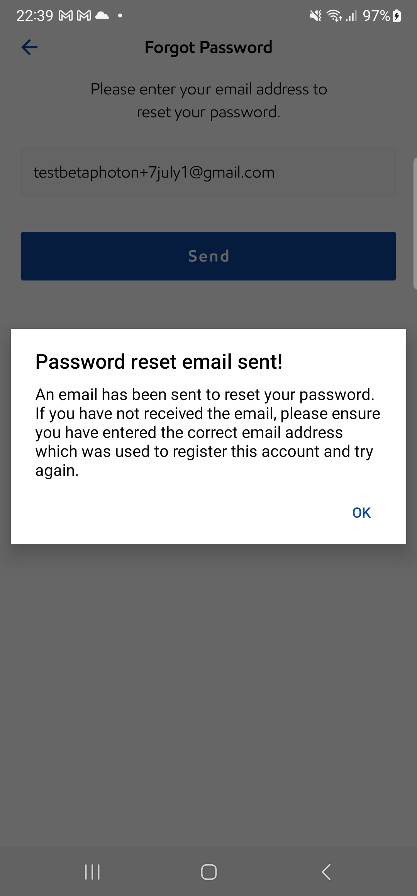PassVerify the system should display the updated copy text of the ‘Don’t Have An Account? Sign Up!'Given user log out from the app if logged inWhen user clicks on Login IconThen user verifies the forgot login and sign up linkPassVerify the system should be navigated to the forgot password screen when the user taps on the 'Forgot Login?' button.Given user log out from the app if logged inWhen user clicks on Login IconWhen user taps on the forgot login linkThen verify it is navigated to the forgot password screenPassVerify the system should display the updated copy text of the ‘Forgot your password?'Given user log out from the app if logged inWhen user clicks on Login IconWhen user taps on the forgot login linkThen verify it is navigated to the forgot password screenThen verify the password screen textPassCheck Whether System is able to navigate login screenGiven user is on NLID screen after multiple launchThen user verifies the login button in the NLIDPassCheck Whether System is able to navigate login screen using device back buttonGiven user log out from the app if logged inAnd user clicks on Login IconAnd user taps on Forgot password link in login screen in NLIDAnd user tabs on back button in the Forgot Password screenAnd verify user navigates back to Login screenPassManual User - Verify the Esso app is not displaying the App Assistant in Support Centre screen (In NLID)When user log out from the app if logged inAnd user taps on More button in tab barAnd user taps on Support Centre iconThen user validates that the app assistant is not presentPassManual User - Verify the Esso app is not displaying the App Assistant in Station Finder default map view(In NLID)When user log out from the app if logged inWhen user taps on Station FinderThen user validates that the app assistant is not presentPassManual User - Verify the Esso app is not displaying the App Assistant in Station Finder list view(In NLID)When user log out from the app if logged inWhen user taps on Station FinderAnd user tap on list viewThen user validates that the app assistant is not presentPassManual User - Verify the Esso app is not displaying the App Assistant in More screen(in NLID)When user log out from the app if logged inAnd user taps on More button in tab barThen user validates that the app assistant is not presentPassManual User - Verify the Esso app is not displaying the App Assistant in NLID stateWhen user log out from the app if logged inThen user validates that the app assistant is not presentPassVerify that Whether the app is displaying 3 dots button after the Google SSO button on NLIDWhen user log out from the app if logged inThen user validates SSO logos and three dots in the NLIDPassVerify that Whether the app should close the custom pop up when user taps on the 'X' buttonWhen user log out from the app if logged inAnd user taps on the three dots in the NLIDThen user validates the SSO logos in the modal popup in the nlidWhen the user taps on the close button in the modal popupThen user verifies the app redirects back to NLIDFailCheck whether the user is able to verify he don't see the account details from NLIDWhen user log out from the app if logged inAnd user taps on More button in tab barAnd user taps on fuel iconWhen user verifies the broadcast bannerstepDefinitions.Hook.afterEachStep(io.cucumber.java.Scenario)91932610-e15c-45f5-ac85-2f39981ce292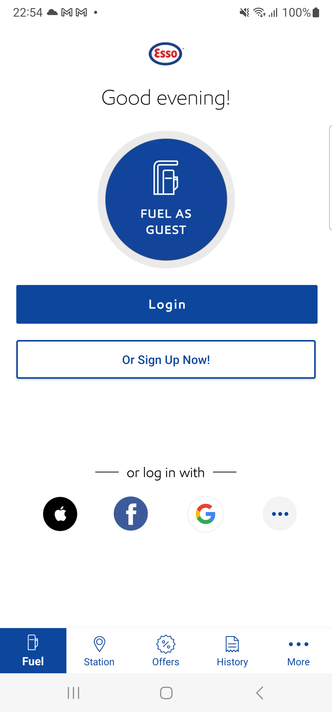PassVerify the user is able to see the updated Esso logo in the "NLID" screenWhen user log out from the app if logged inThen Check for Esso logo on NLIDPassVerify the user is able to see the updated Esso logo in the "NLID" screenWhen user log out from the app if logged inThen Check for Esso logo on NLIDPassVerify that Whether the app is displaying a custom popup with the list of available SSO authentication methodsAnd user taps on the three dots in the NLIDThen user validates the SSO logos in the modal popup in the nlidAnd User validates modal popup titleThen the user taps on the close button in the modal popupPassVerify that whether app dismiss the broadcast banner on NLID without the user interactionAnd user taps on More button in tab barAnd user taps on fuel iconWhen user verifies the broadcast bannerThen user confirms the banner board is not presentPassVerify that the app should not display the ‘Esso App Feedback’ section on the 'Support Centre' screen. (NLID)And user taps on More button in tab barAnd User looks for Esso App Feedback option -
NativePassword
10:58:59 pm / 00:14:45:351 Fail
NativePassword
07.07.2024 10:58:59 pm 07.07.2024 11:13:44 pm 00:14:45:351 · #test-id=218PassCheck whether the user is able to see the save password prompt while logging in with unsaved login credentialsWhen user log out from the app if logged inWhen user taps on register button from Login screenThen user should be navigated to Manual Register screenThen enter First NameThen enter Last NameThen enter "chibisakkrava.d+" Email addressThen enter passwordAnd confirm passwordThen click the check box for acceptThen click on continue button from NLIDAnd validate the OS Native password pop upWhen user clicks the save password buttonWhen user tap on Skip buttonThen the system should display Skip warning popupWhen user tap on Skip anywayWhen user enters four digit PIN in the Set up PIN screen in registration flowWhen user tap on continue button in Set up PIN screen in registration flowAnd user tap on ok button in Set up PIN screen in registration flowThen app to dismiss the popup and navigate the user to LID after reviewFailCheck whether the user is able to Save password for the registered user (Android Specific)When user log out from the app if logged instepDefinitions.Hook.afterEachStep(io.cucumber.java.Scenario)75657118-54c1-4672-89ac-37bb42b4e6fdWhen user taps on register button from Login screenStep skippedThen user should be navigated to Manual Register screenStep skippedThen enter First NameStep skippedThen enter Last NameStep skippedThen enter "testesssoapp2021+" Email addressStep skippedThen enter passwordStep skippedAnd confirm passwordStep skippedThen click the check box for acceptStep skippedThen click on continue button from NLIDStep skippedWhen user clicks the save password buttonStep skippedThen App should navigates to Confirm your email address screenStep skippedWhen user tap on Skip buttonStep skippedThen the system should display Skip warning popupStep skippedWhen user tap on Skip anywayStep skippedWhen user enters four digit PIN in the Set up PIN screen in registration flowStep skippedWhen user tap on continue button in Set up PIN screen in registration flowStep skippedAnd user tap on ok button in Set up PIN screen in registration flowStep skippedThen app to dismiss the popup and navigate the user to LID after reviewStep skippedFailCheck whether the user is able to Save password for the registered userWhen user log out from the app if logged instepDefinitions.Hook.afterEachStep(io.cucumber.java.Scenario)07328929-4d57-4554-b880-3675e68338e1When user taps on register button from Login screenStep skippedThen user should be navigated to Manual Register screenStep skippedThen enter First NameStep skippedThen enter Last NameStep skippedThen enter "chibisakkrava.d+" Email addressStep skippedThen enter passwordStep skippedAnd confirm passwordStep skippedThen click the check box for acceptStep skippedWhen click on the continue button in registration screenStep skippedAnd validate the OS Native password pop upStep skippedWhen user clicks the save password buttonStep skippedThen App should navigates to Confirm your email address screenStep skippedWhen user tap on Skip buttonStep skippedThen the system should display Skip warning popupStep skippedWhen user tap on Skip anywayStep skippedWhen user enters four digit PIN in the Set up PIN screen in registration flowStep skippedWhen user tap on continue button in Set up PIN screen in registration flowStep skippedAnd user tap on ok button in Set up PIN screen in registration flowStep skippedThen app to dismiss the popup and navigate the user to LID after reviewStep skippedFailCheck whether the user is able to see the save password prompt while logging in with unsaved login credentialsWhen user log out from the app if logged instepDefinitions.Hook.afterEachStep(io.cucumber.java.Scenario)ae2c07a2-cc9d-42e5-9575-e44542f3f1a3 When user taps on register button from Login screenStep skippedThen user should be navigated to Manual Register screenStep skippedThen enter First NameStep skippedThen enter Last NameStep skippedThen enter "testesssoapp2021+" Email addressStep skippedThen enter passwordStep skippedAnd confirm passwordStep skippedThen click the check box for acceptStep skippedThen click on continue button from NLIDStep skippedAnd validate the OS Native password pop upStep skippedWhen user clicks the save password buttonStep skippedWhen user tap on Skip buttonStep skippedThen the system should display Skip warning popupStep skippedWhen user tap on Skip anywayStep skippedWhen user enters four digit PIN in the Set up PIN screen in registration flowStep skippedWhen user tap on continue button in Set up PIN screen in registration flowStep skippedAnd user tap on ok button in Set up PIN screen in registration flowStep skippedThen app to dismiss the popup and navigate the user to LID after reviewStep skippedFailCheck whether the user is able to Save password for the registered userWhen user log out from the app if logged instepDefinitions.Hook.afterEachStep(io.cucumber.java.Scenario)134b1bb9-908c-4c5e-ac12-cdb313c904aeWhen user taps on register button from Login screenStep skippedThen user should be navigated to Manual Register screenStep skippedThen enter First NameStep skippedThen enter Last NameStep skippedThen enter "chibisakkrava.d+" Email addressStep skippedThen enter passwordStep skippedAnd confirm passwordStep skippedThen click the check box for acceptStep skippedWhen click on the continue button in registration screenStep skippedAnd validate the OS Native password pop upStep skippedWhen user clicks the Not now buttonStep skippedThen App should navigates to Confirm your email address screenStep skippedWhen user tap on Skip buttonStep skippedThen the system should display Skip warning popupStep skippedWhen user tap on Skip anywayStep skippedWhen user enters four digit PIN in the Set up PIN screen in registration flowStep skippedWhen user tap on continue button in Set up PIN screen in registration flowStep skippedAnd user tap on ok button in Set up PIN screen in registration flowStep skippedThen app to dismiss the popup and navigate the user to LID after reviewStep skippedFailCheck whether the user is able to view the saved email address on the keyboardWhen user log out from the app if logged instepDefinitions.Hook.afterEachStep(io.cucumber.java.Scenario)8232ce8e-ed85-47ef-bb61-9eeafd452b6dAnd user clicks on Login IconStep skippedWhen user taps on email tabStep skippedAnd user checks the suggestions on the keyboardStep skippedAnd user clicks the mail suggestion from the keyboardStep skippedThen user validates the password getting displayedStep skipped
When user taps on register button from Login screenStep skippedThen user should be navigated to Manual Register screenStep skippedThen enter First NameStep skippedThen enter Last NameStep skippedThen enter "testesssoapp2021+" Email addressStep skippedThen enter passwordStep skippedAnd confirm passwordStep skippedThen click the check box for acceptStep skippedThen click on continue button from NLIDStep skippedAnd validate the OS Native password pop upStep skippedWhen user clicks the save password buttonStep skippedWhen user tap on Skip buttonStep skippedThen the system should display Skip warning popupStep skippedWhen user tap on Skip anywayStep skippedWhen user enters four digit PIN in the Set up PIN screen in registration flowStep skippedWhen user tap on continue button in Set up PIN screen in registration flowStep skippedAnd user tap on ok button in Set up PIN screen in registration flowStep skippedThen app to dismiss the popup and navigate the user to LID after reviewStep skippedFailCheck whether the user is able to Save password for the registered userWhen user log out from the app if logged instepDefinitions.Hook.afterEachStep(io.cucumber.java.Scenario)134b1bb9-908c-4c5e-ac12-cdb313c904aeWhen user taps on register button from Login screenStep skippedThen user should be navigated to Manual Register screenStep skippedThen enter First NameStep skippedThen enter Last NameStep skippedThen enter "chibisakkrava.d+" Email addressStep skippedThen enter passwordStep skippedAnd confirm passwordStep skippedThen click the check box for acceptStep skippedWhen click on the continue button in registration screenStep skippedAnd validate the OS Native password pop upStep skippedWhen user clicks the Not now buttonStep skippedThen App should navigates to Confirm your email address screenStep skippedWhen user tap on Skip buttonStep skippedThen the system should display Skip warning popupStep skippedWhen user tap on Skip anywayStep skippedWhen user enters four digit PIN in the Set up PIN screen in registration flowStep skippedWhen user tap on continue button in Set up PIN screen in registration flowStep skippedAnd user tap on ok button in Set up PIN screen in registration flowStep skippedThen app to dismiss the popup and navigate the user to LID after reviewStep skippedFailCheck whether the user is able to view the saved email address on the keyboardWhen user log out from the app if logged instepDefinitions.Hook.afterEachStep(io.cucumber.java.Scenario)8232ce8e-ed85-47ef-bb61-9eeafd452b6dAnd user clicks on Login IconStep skippedWhen user taps on email tabStep skippedAnd user checks the suggestions on the keyboardStep skippedAnd user clicks the mail suggestion from the keyboardStep skippedThen user validates the password getting displayedStep skipped -
Offers
11:13:44 pm / 01:04:45:945 Fail
Offers
07.07.2024 11:13:44 pm 07.08.2024 12:18:30 am 01:04:45:945 · #test-id=443FailLID- Add Nectar Card and verify on Registration flowWhen user log out from the app if logged instepDefinitions.Hook.afterEachStep(io.cucumber.java.Scenario)3aa6f0a3-8ebb-4b21-9e25-c0d455ebd31aWhen user taps on register button from Login screenStep skippedThen user should be navigated to Manual Register screenStep skippedThen enter First NameStep skippedThen enter Last NameStep skippedThen enter "chibisakkrava.d+" Email addressStep skippedThen enter passwordStep skippedAnd confirm passwordStep skippedThen click the check box for acceptStep skippedWhen click on continue button from register screenStep skippedWhen user tap on Skip buttonStep skippedThen the system should display Skip warning popupStep skippedWhen user tap on Skip anywayStep skippedWhen user enters four digit PIN in the Set up PIN screen in registration flowStep skippedWhen user tap on continue button in Set up PIN screen in registration flowStep skippedAnd user tap on ok button in Set up PIN screen in registration flowStep skippedThen app to dismiss the popup and navigate the user to LID after reviewStep skippedWhen user taps on OffersStep skippedThen verify user is able to Navigate Offers screenStep skippedWhen user tap on add nectar button in offers screenStep skippedThen user is navigated to add nectar screenStep skippedAnd enter nectar card value "NectarCardAddAndVerify" and tap on next buttonStep skippedWhen user clicks on Continue button under 'Card Added successfully' alertStep skippedThen enter "NectarCardAddAndVerify" Nectar card number and passwordStep skippedThen validate nectar card number and point balance in offers screenStep skippedPassManual User - Verify the Esso app is not displaying the App Assistant in Offer screen (Nectar card added and verified)When user is on NLID screenAnd user taps on OffersThen user validates that the app assistant is not presentFailManual User - Verify the Esso app is not displaying the App Assistant in Offer screen (Nectar card not added)Given user is on NLID screenAnd user taps on More button in tab barWhen user navigates to Account screenAnd delete added nectar card if existsstepDefinitions.Hook.afterEachStep(io.cucumber.java.Scenario)5569263e-df6e-41ce-9284-499f7e8ab649And user taps on OffersStep skippedThen user validates that the app assistant is not presentStep skippedFailAccount : Account screen UI and Alignment ,Before adding Nectar CardGiven user is on NLID screenAnd user taps on More button in tab barWhen user navigates to Account screenThen tap on add nectar card from account screenstepDefinitions.Hook.afterEachStep(io.cucumber.java.Scenario)9bfd5dbe-c39d-4f48-9e0c-23fcc82060feThen user is navigated to add nectar screenStep skippedAnd enter nectar card value "NectarCardAddAndVerify" and tap on next buttonStep skippedThen user tap on verify laterStep skippedThen Validate skip click on skip buttonStep skippedThen validate added nectar card "NectarCardAddAndVerify" in the accountStep skippedPassManual User - Verify the Esso app is not displaying the App Assistant in Offer screen (Nectar card added but verified)When user is on NLID screenAnd user taps on OffersThen user validates that the app assistant is not presentFailVerify if user is able to see the 'Nectar card added successfully' screen from complete your profile screenWhen user log out from the app if logged instepDefinitions.Hook.afterEachStep(io.cucumber.java.Scenario)52d6c38f-3dde-4b9f-9679-60daf56a0839When user taps on register button from Login screenStep skippedThen user should be navigated to Manual Register screenStep skippedWhen enter First NameStep skippedAnd enter Last NameStep skippedAnd enter "chibisakkrava.d+" Email addressStep skippedAnd enter passwordStep skippedAnd confirm passwordStep skippedAnd click the check box for acceptStep skippedAnd click on continue button from register screenStep skippedThen App should navigates to Confirm your email address screenStep skippedAnd user should see details in contextual registration screenStep skippedWhen user tap on Skip buttonStep skippedAnd user tap on Skip anywayStep skippedWhen user enters four digit PIN in the Set up PIN screen in registration flowStep skippedWhen user tap on continue button in Set up PIN screen in registration flowStep skippedAnd user tap on ok button in Set up PIN screen in registration flowStep skippedThen app to dismiss the popup and navigate the user to LID after reviewStep skippedAnd user taps on the complete profileStep skippedAnd user clicks on Add nectarStep skippedAnd user clicks on the get started iconStep skippedThen user is navigated to add nectar screenStep skippedAnd enter nectar card value "NectarCardAddAndVerify" and tap on next buttonStep skippedThen the user validates the nectar card added successfully screenStep skippedFailAccounts - "Add Nectar card" and Verify the CardWhen user log out from the app if logged inAnd user clicks on Login IconstepDefinitions.Hook.afterEachStep(io.cucumber.java.Scenario)087c08d3-fb06-4a99-8e0d-b5273603d2beAnd I enter "regressioncredentials2" in login detailsStep skippedAnd user taps login button in login screenStep skippedGiven user is on NLID screenStep skippedAnd user taps on More button in tab barStep skippedWhen user navigates to Account screenStep skippedAnd delete added nectar card if existsStep skippedThen tap on add nectar card from account screenStep skippedThen user is navigated to add nectar screenStep skippedAnd enter nectar card value "NectarCardAddAndVerify" and tap on next buttonStep skippedWhen user clicks on Continue button under 'Card Added successfully' alertStep skippedThen enter "NectarCardAddAndVerify" Nectar card number and passwordStep skippedAnd navigate to the Nectar card section from account screenStep skippedThen validate added nectar card "NectarCardAddAndVerify" in the accountStep skippedFailDaisy Ph2 -Sprint 2: Verify the Point balance on offers screenGiven user is on NLID screenThen user taps on OffersThen verify nectar points comma seperator on offers screenstepDefinitions.Hook.afterEachStep(io.cucumber.java.Scenario)55ed399d-cb3d-496c-a125-96221b4e80eePassStation Finder : "Nectar Points" is selected along with one other filters button "APPLY 1 FILTER" should be displayedGiven user is on NLID screenThen user taps on Station FinderWhen user tap on filter iconThen select Nectar Points filterAnd validate apply filter buttonFailEsso Daisy Ph2 : Verify the Nectar points balance and offer banner on LID screenAnd user is on NLID screenThen Verify the Nectar Card points in LID screenstepDefinitions.Hook.afterEachStep(io.cucumber.java.Scenario)21e5aa47-77e8-4956-9ae9-950e80d71a7d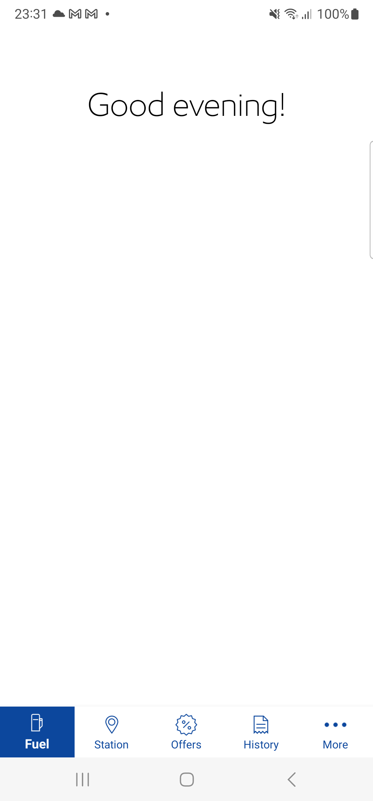FailEsso Daisy Ph2 : Verify the Nectar points balance and offer banner on LID screenAnd user is on NLID screenAnd Verify that tick mark is displayed on the offersstepDefinitions.Hook.afterEachStep(io.cucumber.java.Scenario)eef7fc77-9818-4433-8761-097b0bde3d89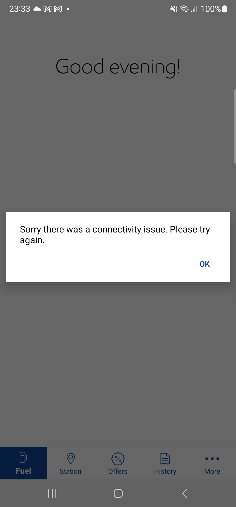FailCheck whether User navigates to Offers screen from tab barGiven user is on NLID screenWhen user taps on OffersThen validate nectar card number and point balance in offers screenstepDefinitions.Hook.afterEachStep(io.cucumber.java.Scenario)25b534dc-dd71-48d1-b069-fef7582451f1And validate offers displayed in offer screenStep skippedFailOffers- load to card - Terms & Condition pop up by tapping on T&C linkGiven user is on NLID screenThen user taps on OffersAnd validate offers displayed in offer screenstepDefinitions.Hook.afterEachStep(io.cucumber.java.Scenario)596b8a86-aa12-4095-b082-42243797a0c4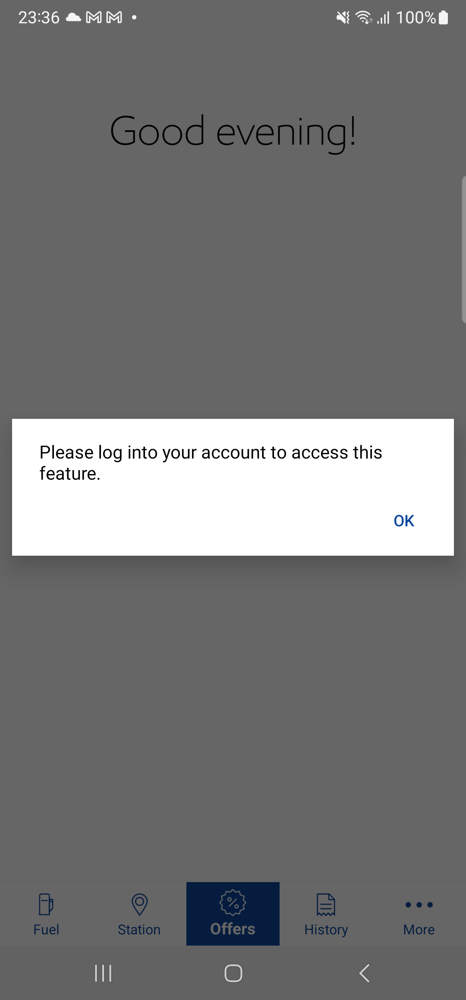Then tap on view offers buttonStep skippedAnd validate offer detailsStep skippedThen tap on Terms & conditions linkStep skippedAnd validate Terms & conditions overlayStep skippedThen close the Terms & conditions overlayStep skippedFailOffers- Load to Card : View the balance point in offers screen 1 When no points are accumulatedGiven user is on NLID screenAnd user taps on More button in tab barWhen user navigates to Account screenAnd delete added nectar card if existsstepDefinitions.Hook.afterEachStep(io.cucumber.java.Scenario)9752d9ba-7969-4e33-8927-c448ee44ce9aThen user adds a nectar card and taps verify laterStep skippedThen user taps on OffersStep skippedThen validate point balance as nill in offers screen when user has no pointsStep skippedFailVerify the app should be able to go back to the entry point screen when the user selects the “Cancel and return to Esso” or “back/cancel” link. >Transaction complete > Add and verify nectar cardGiven user is on NLID screenAnd user taps on More button in tab barWhen user navigates to Account screenAnd delete added nectar card if existsstepDefinitions.Hook.afterEachStep(io.cucumber.java.Scenario)d124e855-0e49-4452-a838-aad28595e032And user taps on fuel iconStep skippedWhen user taps on start button in LIDStep skippedAnd user is navigated to Select your pump screenStep skippedAnd user selects pump number "1" to start fuellingStep skippedAnd user selects the pump from 'Select your Pump' page and taps on continue buttonStep skippedAnd user verify the MFA screenStep skippedAnd user tap on Continue button in MFA screenStep skippedThen the user is navigated to Confirm payment screenStep skippedAnd user confirms the paymentStep skippedThen validate add nectar card button displayed in transaction complete screenStep skippedAnd tap on the Add Nectar Card button in Transaction complete ScreenStep skippedAnd verify the Add nectar card screenStep skippedThen tap on Add now button in Add Nectar Card ScreenStep skippedAnd enter nectar card value "NectarCardAddAndVerify" and tap on next buttonStep skippedWhen user clicks on Continue button under 'Card Added successfully' alertStep skippedWhen tap on 'Cancel and Return to ESSO' link in 'Link your account' ScreenStep skippedAnd click on Ok button in the modal popup in the Nectar card pageStep skippedThen user lands on Verify Card Screen and taps on skip buttonStep skippedThen validate verify nectar card link displayed in transaction complete screenStep skippedFailVerify the app should be able to go back to the entry point screen when the user selects the “Cancel and return to Esso” or “back/cancel” link. >Account screen >Add and verify nectar cardGiven user is on NLID screenAnd user taps on More button in tab barWhen user navigates to Account screenAnd delete added nectar card if existsstepDefinitions.Hook.afterEachStep(io.cucumber.java.Scenario)76dfe2a6-ebf0-4d6f-9eb9-0011ef31c3d8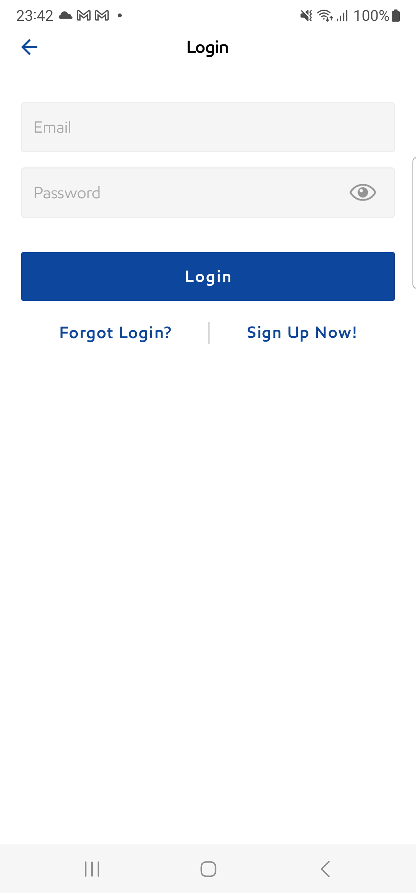Then tap on add nectar card from account screenStep skippedThen user is navigated to add nectar screenStep skippedAnd enter nectar card value "NectarCardAddAndVerify" and tap on next buttonStep skippedWhen user clicks on Continue button under 'Card Added successfully' alertStep skippedWhen tap on 'Cancel and Return to ESSO' link in 'Link your account' ScreenStep skippedAnd click on Ok button in the modal popup in the Nectar card pageStep skippedThen user lands on Verify Card Screen and taps on skip buttonStep skippedThen user verifies the user redirected to Account screenStep skippedFailVerify the app should be able to go back to the entry point screen when the user selects the “Cancel and return to Esso” or “back/cancel” link. >Transaction complete > Verify Nectar card addedGiven user is on NLID screenWhen user taps on start button in LIDstepDefinitions.Hook.afterEachStep(io.cucumber.java.Scenario)dacb1865-914b-45cb-b774-a6d71bd8b789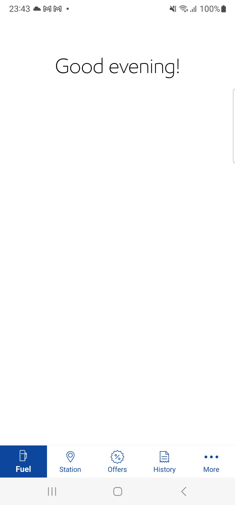And user is navigated to Select your pump screenStep skippedAnd user selects pump number "2" to start fuellingStep skippedAnd user selects the pump from 'Select your Pump' page and taps on continue buttonStep skippedAnd user verify the MFA screenStep skippedAnd user tap on Continue button in MFA screenStep skippedThen the user is navigated to Confirm payment screenStep skippedAnd user confirms the paymentStep skippedThen validate verify nectar card link displayed in transaction complete screenStep skippedWhen tap on the Verify Nectar Card link in Transaction complete ScreenStep skippedWhen user clicks on Continue button under 'Card Added successfully' alertStep skippedWhen tap on 'Cancel and Return to ESSO' link in 'Link your account' ScreenStep skippedAnd click on Ok button in the modal popup in the Nectar card pageStep skippedThen validate verify nectar card link displayed in transaction complete screenStep skippedFailVerify the app should be able to go back to the entry point screen when the user selects the “Cancel and return to Esso” or “back/cancel” link. >LID > Add and verify nectar cards (promotion message on LID)Given user is on NLID screenAnd user taps on More button in tab barWhen user navigates to Account screenAnd delete added nectar card if existsstepDefinitions.Hook.afterEachStep(io.cucumber.java.Scenario)ecb758cf-72eb-4b66-af11-2ad88621ae64And user taps on fuel iconStep skippedWhen user tap on learn more link in LID screenStep skippedThen User is navigated to Add Nectar Card screenStep skippedWhen click on Get Started button on Add Nectar Card screenStep skippedThen user is navigated to add nectar screenStep skippedAnd enter nectar card value "NectarCardAddAndVerify" and tap on next buttonStep skippedWhen user clicks on Continue button under 'Card Added successfully' alertStep skippedWhen tap on 'Cancel and Return to ESSO' link in 'Link your account' ScreenStep skippedAnd click on Ok button in the modal popup in the Nectar card pageStep skippedThen user lands on Verify Card Screen and taps on skip buttonStep skippedThen Verify user navigated back to LID screenStep skippedFailVerify the app should be able to go back to the entry point screen when the user selects the “Cancel and return to Esso” or “back/cancel” link. >Payment details screen > Add and verify nectar cardGiven user is on NLID screenAnd user taps on More button in tab barWhen user navigates to Account screenAnd delete added nectar card if existsstepDefinitions.Hook.afterEachStep(io.cucumber.java.Scenario)b921a101-d367-4a65-b870-cee215a9c9e8When user taps on fuel icon and start fuelling buttonStep skippedAnd user is navigated to Select your pump screenStep skippedAnd user selects pump number "1" to start fuellingStep skippedAnd user selects the pump from 'Select your Pump' page and taps on continue buttonStep skippedWhen user tap on Continue button in MFA screenStep skippedThen the user is navigated to Confirm payment screenStep skippedAnd Click on Change payment linkStep skippedAnd user adds the Nectar card details by clicking the Add nectar card in Payment details screenStep skippedThen user is navigated to add nectar screenStep skippedAnd enter nectar card value "NectarCardAddAndVerify" and tap on next buttonStep skippedWhen user clicks on Continue button under 'Card Added successfully' alertStep skippedWhen tap on 'Cancel and Return to ESSO' link in 'Link your account' ScreenStep skippedAnd click on Ok button in the modal popup in the Nectar card pageStep skippedThen user lands on Verify Card Screen and taps on skip buttonStep skippedThen verify if the user lands on Payment Details ScreenStep skippedFailVerify the app should be able to go back to the entry point screen when the user selects the “Cancel and return to Esso” or “back/cancel” link. >LID > Add and verify nectar cards (promotion message on LID)Given user is on NLID screenWhen user taps on fuel iconThen verify whether See your Nectar balance link is displayed on LIDstepDefinitions.Hook.afterEachStep(io.cucumber.java.Scenario)ca92e65c-3244-48ab-9196-b7ac7898aac2And tap on See your Nectar balance LinkStep skippedWhen user clicks on Continue button under 'Card Added successfully' alertStep skippedWhen tap on 'Cancel and Return to ESSO' link in 'Link your account' ScreenStep skippedAnd click on Ok button in the modal popup in the Nectar card pageStep skippedThen user lands on Verify Card Screen and taps on skip buttonStep skippedThen verify whether See your Nectar balance link is displayed on LIDStep skippedFailVerify the app should be able to go back to the entry point screen when the user selects the “Cancel and return to Esso” or “back/cancel” link. >Offer > Nectar card added - VerifyGiven user is on NLID screenWhen user taps on OffersAnd tap on Verify Nectar button in offers ScreenstepDefinitions.Hook.afterEachStep(io.cucumber.java.Scenario)bbd17a46-4a1e-478e-a7c2-e412023e3203When user clicks on Continue button under 'Card Added successfully' alertStep skippedWhen tap on 'Cancel and Return to ESSO' link in 'Link your account' ScreenStep skippedAnd click on Ok button in the modal popup in the Nectar card pageStep skippedThen user Verifies the Nectar card button in the Offers ScreenStep skippedFailVerify the app should be able to go back to the entry point screen when the user selects the “Cancel and return to Esso” or “back/cancel” link. >Offer > Add and verify nectar cardGiven user is on NLID screenAnd user taps on More button in tab barWhen user navigates to Account screenAnd delete added nectar card if existsstepDefinitions.Hook.afterEachStep(io.cucumber.java.Scenario)a05e6f6a-1dd4-49f7-aae6-2698ad080bf1When user taps on OffersStep skippedWhen user taps on 'Get Exclusive offers' in the offers screenStep skippedAnd enter nectar card value "NectarCardAddAndVerify" and tap on next buttonStep skippedWhen user clicks on Continue button under 'Card Added successfully' alertStep skippedWhen tap on 'Cancel and Return to ESSO' link in 'Link your account' ScreenStep skippedAnd click on Ok button in the modal popup in the Nectar card pageStep skippedThen user lands on Verify Card Screen and taps on skip buttonStep skippedThen user Verifies the Nectar card button in the Offers ScreenStep skippedFailLID - Add Nectar card (valid nectar card number) from Dashboard screenAnd user is on NLID screenAnd user taps on More button in tab barWhen user navigates to Account screenAnd delete added nectar card if existsstepDefinitions.Hook.afterEachStep(io.cucumber.java.Scenario)06768004-94ac-4bdd-aecb-f90ec935efb5 And user taps on fuel iconStep skippedAnd user is on NLID screenStep skippedWhen user tap on learn more link in LID screenStep skippedThen User is navigated to Add Nectar Card screenStep skippedWhen click on Get Started button on Add Nectar Card screenStep skippedThen user is navigated to add nectar screenStep skippedAnd enter nectar card value "NectarCardAddAndVerify" and tap on next buttonStep skippedWhen user clicks on Continue button under 'Card Added successfully' alertStep skippedThen enter "NectarCardAddAndVerify" Nectar card number and passwordStep skippedAnd user is on NLID screenStep skippedAnd user taps on More button in tab barStep skippedWhen user navigates to Account screenStep skippedFailOffers UI and alignment for all the New offer screenAnd user is on NLID screenAnd user taps on More button in tab barWhen user navigates to Account screenAnd navigate to the Nectar card sectionstepDefinitions.Hook.afterEachStep(io.cucumber.java.Scenario)8c77af1f-f8d7-4557-b7bf-e794a113e1fcAnd Delete the Nectar card if it is presentStep skippedAnd user taps on fuel iconStep skippedWhen user taps on OffersStep skippedThen verify user is able to Navigate Offers screenStep skippedAnd user validates offers screenStep skippedWhen user taps on "More about collecting points" linkStep skippedAnd user sees how to collect points overlayStep skippedWhen user tap on add nectar button in offers screenStep skippedThen user is navigated to add nectar screenStep skippedAnd enter nectar card value "NectarCardAddAndVerify" and tap on next buttonStep skippedThen user verifies the Nectar Added success pop-up and skips verificationStep skippedWhen Validate skip click on skip buttonStep skippedAnd verify if the user is navigated to Verify Offers screenStep skippedFailDo you have a Nectar card should not be displayed and user navigate to 'Add Nectar Card'Given user is on NLID screenAnd user taps on More button in tab barWhen user navigates to Account screenAnd delete added nectar card if existsstepDefinitions.Hook.afterEachStep(io.cucumber.java.Scenario)0a2ef91b-58e1-4ca7-bab7-f17034928187When user taps on OffersStep skippedThen verify user is able to Navigate Offers screenStep skippedWhen user tap on add nectar button in offers screenStep skippedThen user is navigated to add nectar screenStep skippedFailDaisy Phase 2 Esso app : From LID add nectar card and verify the nectar cardGiven user is on NLID screenAnd user taps on More button in tab barWhen user navigates to Account screenAnd user verifies Add Nectar card sectionstepDefinitions.Hook.afterEachStep(io.cucumber.java.Scenario)ee22350e-3170-4825-9fab-d260485550beThen Add and verify Nectar cardStep skippedFailGoogle Sign In Registration->Verify whether the app marks the profile completion task 'Add Nectar Card' as complete when the user skip/cancel adding the Nectar card from the Complete Your Profile->Add Nectar Card launch screenGiven user log out from the app if logged instepDefinitions.Hook.afterEachStep(io.cucumber.java.Scenario)de2516ac-ccf1-4b4b-b5ed-a4a53ff96b75And user taps on "Google" icon in the NLIDStep skippedAnd I enter SSO login details for "Google"Step skippedWhen user is on NLID screenStep skippedAnd user taps on More button in tab barStep skippedWhen user navigates to Account screenStep skippedAnd user verifies the Account title in the account sectionStep skippedAnd user taps on delete your account in account screenStep skippedAnd user taps on delete in delete your account screenStep skippedAnd tap on Ok ButtonStep skippedThen user verifies the app redirects back to NLIDStep skippedAnd user taps on "Google" icon in the NLIDStep skippedAnd I enter SSO login details for "Google"Step skippedThen user registers the SSO user by accepting the terms and conditions screenStep skippedWhen user enters four digit PIN in the Set up PIN screen in registration flowStep skippedWhen user tap on continue button in Set up PIN screen in registration flowStep skippedAnd user tap on ok button in Set up PIN screen in registration flowStep skippedWhen user is on NLID screenStep skippedAnd user taps on the complete profileStep skippedAnd user clicks on Add nectarStep skippedAnd user taps on cancel button in the add nectar card launch screen from Profile completionStep skippedThen user clicks on Add nectarStep skippedAnd user verifies the completed pop up message and clicks ok buttonStep skippedAnd user taps on back and navigates to LIDStep skippedThen user verifies the progress in the LIDStep skippedFailGoogle sign in Registration->Verify whether the app marks the profile completion task 'Add Nectar Card' as complete when the user skip adding the Nectar card from the Complete Your Profile > Add Nectar Card launch screen > Add Nectar Card screenGiven user is on NLID screenAnd user taps on More button in tab barWhen user navigates to Account screenAnd user verifies the Account title in the account sectionstepDefinitions.Hook.afterEachStep(io.cucumber.java.Scenario)65b44634-9174-4bfc-b700-314a679d87fbAnd user taps on delete your account in account screenStep skippedAnd user taps on delete in delete your account screenStep skippedAnd tap on Ok ButtonStep skippedThen user verifies the app redirects back to NLIDStep skippedAnd user taps on "Google" icon in the NLIDStep skippedAnd I enter SSO login details for "Google"Step skippedThen user registers the SSO user by accepting the terms and conditions screenStep skippedWhen user enters four digit PIN in the Set up PIN screen in registration flowStep skippedWhen user tap on continue button in Set up PIN screen in registration flowStep skippedAnd user tap on ok button in Set up PIN screen in registration flowStep skippedWhen user is on NLID screenStep skippedAnd user taps on the complete profileStep skippedAnd user clicks on Add nectarStep skippedAnd user clicks on the get started iconStep skippedAnd user taps on cancel button in the add nectar card screen from Profile completionStep skippedAnd user taps on cancel button in the add nectar card launch screen from Profile completionStep skippedThen user clicks on Add nectarStep skippedAnd user verifies the completed pop up message and clicks ok buttonStep skippedAnd user taps on back and navigates to LIDStep skippedThen user verifies the progress in the LIDStep skippedFailGoogle SSO Registration->Verify whether the app marks the profile completion task 'Add Nectar Card' as complete when the user skip adding the Nectar card from Offer Screen >Add Nectar Card screenGiven user is on NLID screenAnd user taps on More button in tab barWhen user navigates to Account screenAnd user verifies the Account title in the account sectionstepDefinitions.Hook.afterEachStep(io.cucumber.java.Scenario)c0f6be39-02d0-4430-922c-8105aed3b3abAnd user taps on delete your account in account screenStep skippedAnd user taps on delete in delete your account screenStep skippedAnd tap on Ok ButtonStep skippedThen user verifies the app redirects back to NLIDStep skippedAnd user taps on "Google" icon in the NLIDStep skippedAnd I enter SSO login details for "Google"Step skippedThen user registers the SSO user by accepting the terms and conditions screenStep skippedWhen user enters four digit PIN in the Set up PIN screen in registration flowStep skippedWhen user tap on continue button in Set up PIN screen in registration flowStep skippedAnd user tap on ok button in Set up PIN screen in registration flowStep skippedWhen user is on NLID screenStep skippedAnd user clicks on offer iconStep skippedAnd user clicks Add Nectar Card from offer screenStep skippedAnd user taps on cancel button in the add nectar card screen from Profile completionStep skippedWhen user taps on fuel icon and navigate to LID screenStep skippedAnd user taps on the complete profileStep skippedAnd user clicks on Add nectarStep skippedThen user verifies the completed pop up message and clicks ok buttonStep skippedAnd user taps on back and navigates to LIDStep skippedThen user verifies the progress in the LIDStep skippedFailGoogle Signin Registration->Verify whether the app marks the profile completion task 'Add Nectar Card' as complete when the user skip adding the Nectar card from the Offer screen (Add your Nectar card to get exclusive Offers' link)> Add Nectar Card screenGiven user is on NLID screenAnd user taps on More button in tab barWhen user navigates to Account screenAnd user verifies the Account title in the account sectionstepDefinitions.Hook.afterEachStep(io.cucumber.java.Scenario)8c570ac0-3576-4888-ab66-e16efe36fe20And user taps on delete your account in account screenStep skippedAnd user taps on delete in delete your account screenStep skippedAnd tap on Ok ButtonStep skippedThen user verifies the app redirects back to NLIDStep skippedAnd user taps on "Google" icon in the NLIDStep skippedAnd I enter SSO login details for "Google"Step skippedThen user registers the SSO user by accepting the terms and conditions screenStep skippedWhen user enters four digit PIN in the Set up PIN screen in registration flowStep skippedWhen user tap on continue button in Set up PIN screen in registration flowStep skippedAnd user tap on ok button in Set up PIN screen in registration flowStep skippedWhen user is on NLID screenStep skippedAnd user clicks on offer iconStep skippedWhen user taps on 'Get Exclusive offers' in the offers screenStep skippedAnd user taps on cancel button in the add nectar card screen from Profile completionStep skippedWhen user taps on fuel icon and navigate to LID screenStep skippedAnd user taps on the complete profileStep skippedAnd user clicks on Add nectarStep skippedThen user verifies the completed pop up message and clicks ok buttonStep skippedAnd user taps on back and navigates to LIDStep skippedThen user verifies the progress in the LIDStep skippedFailGoogle Sign In Registration->Verify whether the app marks the profile completion task 'Add Nectar Card' as complete when the user skip/cancel adding the Nectar card from the LID->Add Nectar Card launch screenGiven user is on NLID screenAnd user taps on More button in tab barWhen user navigates to Account screenAnd user verifies the Account title in the account sectionstepDefinitions.Hook.afterEachStep(io.cucumber.java.Scenario)afb69dee-8b10-466e-8759-c937891692dbAnd user taps on delete your account in account screenStep skippedAnd user taps on delete in delete your account screenStep skippedAnd tap on Ok ButtonStep skippedThen user verifies the app redirects back to NLIDStep skippedAnd user taps on "Google" icon in the NLIDStep skippedAnd I enter SSO login details for "Google"Step skippedThen user registers the SSO user by accepting the terms and conditions screenStep skippedWhen user enters four digit PIN in the Set up PIN screen in registration flowStep skippedWhen user tap on continue button in Set up PIN screen in registration flowStep skippedAnd user tap on ok button in Set up PIN screen in registration flowStep skippedWhen user is on NLID screenStep skippedAnd user taps on the complete profileStep skippedAnd user taps on add payment methodStep skippedThen user verifies the Add Payment method screenStep skippedWhen user taps on Credit Debit card in Add Payment Method screenStep skippedThen enter name of the cardStep skippedThen enter "5232 0500 0019 0003" card numberStep skippedThen enter expiry dateStep skippedThen enter CVVStep skippedThen enter postal codeStep skippedThen enter address line1Step skippedThen enter Address line2Step skippedThen enter cityStep skippedThen check consent checkboxStep skippedThen user clicks on continue button in Card screenStep skippedWhen user tap done button to navigate verify screen "Payment method added successfully"Step skippedWhen user tap on payment method added successfully screen continue buttonStep skippedAnd user taps on back and navigates to LIDStep skippedAnd user is on NLID screenStep skippedAnd user taps on Add nectar card link in LIDStep skippedAnd user taps on cancel button in the add nectar card launch screen from Profile completionStep skippedAnd user taps on the complete profileStep skippedAnd user clicks on Add nectarStep skippedThen user verifies the completed pop up message and clicks ok buttonStep skippedAnd user taps on back and navigates to LIDStep skippedThen user verifies the progress in the LIDStep skippedFailGoogle Sign In Registration->Verify whether the app marks the profile completion task 'Add Nectar Card'as complete when the user skip adding the Nectar card from the LID > Add Nectar Card launch screen > Add Nectar Card screenGiven user is on NLID screenAnd user taps on More button in tab barWhen user navigates to Account screenAnd user verifies the Account title in the account sectionstepDefinitions.Hook.afterEachStep(io.cucumber.java.Scenario)1cf8af38-959d-4f5e-b4eb-9b983613de7cAnd user taps on delete your account in account screenStep skippedAnd user taps on delete in delete your account screenStep skippedAnd tap on Ok ButtonStep skippedThen user verifies the app redirects back to NLIDStep skippedAnd user taps on "Google" icon in the NLIDStep skippedAnd I enter SSO login details for "Google"Step skippedThen user registers the SSO user by accepting the terms and conditions screenStep skippedWhen user enters four digit PIN in the Set up PIN screen in registration flowStep skippedWhen user tap on continue button in Set up PIN screen in registration flowStep skippedAnd user tap on ok button in Set up PIN screen in registration flowStep skippedWhen user is on NLID screenStep skippedAnd user taps on the complete profileStep skippedAnd user taps on add payment methodStep skippedThen user verifies the Add Payment method screenStep skippedWhen user taps on Credit Debit card in Add Payment Method screenStep skippedThen enter name of the cardStep skippedThen enter "5232 0500 0019 0003" card numberStep skippedThen enter expiry dateStep skippedThen enter CVVStep skippedThen enter postal codeStep skippedThen enter address line1Step skippedThen enter Address line2Step skippedThen enter cityStep skippedThen check consent checkboxStep skippedThen user clicks on continue button in Card screenStep skippedWhen user tap done button to navigate verify screen "Payment method added successfully"Step skippedWhen user tap on payment method added successfully screen continue buttonStep skippedAnd user taps on back and navigates to LIDStep skippedAnd user is on NLID screenStep skippedAnd user taps on Add nectar card link in LIDStep skippedAnd user clicks on the get started iconStep skippedAnd user taps on cancel button in the add nectar card screen from Profile completionStep skippedAnd user taps on cancel button in the add nectar card launch screen from Profile completionStep skippedAnd user taps on the complete profileStep skippedAnd user clicks on Add nectarStep skippedThen user verifies the completed pop up message and clicks ok buttonStep skippedAnd user taps on back and navigates to LIDStep skippedThen user verifies the progress in the LIDStep skippedFailGoogle Sign In Registration->Verify whether the app marks the profile completion task 'Add Nectar Card' as complete when the user skip adding the Nectar card from the Payment details Screen>Add Nectar Card screenGiven user is on NLID screenAnd user taps on More button in tab barWhen user navigates to Account screenAnd user verifies the Account title in the account sectionstepDefinitions.Hook.afterEachStep(io.cucumber.java.Scenario)775eac73-8d4d-4580-94a6-cd7bd9f7327eAnd user taps on delete your account in account screenStep skippedAnd user taps on delete in delete your account screenStep skippedAnd tap on Ok ButtonStep skippedThen user verifies the app redirects back to NLIDStep skippedAnd user taps on "Google" icon in the NLIDStep skippedAnd I enter SSO login details for "Google"Step skippedThen user registers the SSO user by accepting the terms and conditions screenStep skippedWhen user enters four digit PIN in the Set up PIN screen in registration flowStep skippedWhen user tap on continue button in Set up PIN screen in registration flowStep skippedAnd user tap on ok button in Set up PIN screen in registration flowStep skippedWhen user is on NLID screenStep skippedAnd user taps on the complete profileStep skippedAnd user taps on add payment methodStep skippedThen user verifies the Add Payment method screenStep skippedWhen user taps on Credit Debit card in Add Payment Method screenStep skippedThen enter name of the cardStep skippedThen enter "5232 0500 0019 0003" card numberStep skippedThen enter expiry dateStep skippedThen enter CVVStep skippedThen enter postal codeStep skippedThen enter address line1Step skippedThen enter Address line2Step skippedThen enter cityStep skippedThen check consent checkboxStep skippedThen user clicks on continue button in Card screenStep skippedWhen user tap done button to navigate verify screen "Payment method added successfully"Step skippedWhen user tap on payment method added successfully screen continue buttonStep skippedAnd user taps on back and navigates to LIDStep skippedAnd user is on NLID screenStep skippedWhen user taps on fuel icon and start fuelling buttonStep skippedAnd user is navigated to Select your pump screenStep skippedAnd user selects pump number "1" to start fuellingStep skippedAnd user selects the pump from 'Select your Pump' page and taps on continue buttonStep skippedWhen user tap on Continue button in MFA screenStep skippedThen the user is navigated to Confirm payment screenStep skippedAnd Click on Change payment linkStep skippedAnd user adds the Nectar card details by clicking the Add nectar card in Payment details screenStep skippedThen user is navigated to add nectar screenStep skippedAnd user taps on cancel button in the add nectar card screen from Profile completionStep skippedWhen the user taps on continue button in the Payment Details ScreenStep skippedWhen user taps on cancel button in the bottom of the screenStep skippedThen user validates the cancel transaction popupStep skippedWhen user taps on cancel trasaction button in the cancel transaction popupStep skippedThen user navigates back to the LID screenStep skippedAnd user taps on the complete profileStep skippedAnd user clicks on Add nectarStep skippedThen user verifies the completed pop up message and clicks ok buttonStep skippedAnd user taps on back and navigates to LIDStep skippedThen user verifies the progress in the LIDStep skippedFailGoogle Sign in Registration->Verify whether the app marks the profile completion task 'Add Nectar Card' as complete when the user skip adding the Nectar card from the Transaction Complete screen > Do you have a Nectar Card?->Add Nectar Card screenGiven user is on NLID screenAnd user taps on More button in tab barWhen user navigates to Account screenAnd user verifies the Account title in the account sectionstepDefinitions.Hook.afterEachStep(io.cucumber.java.Scenario)82bdcf7a-2118-4d96-861b-1fc8c3bcf0e4And user taps on delete your account in account screenStep skippedAnd user taps on delete in delete your account screenStep skippedAnd tap on Ok ButtonStep skippedThen user verifies the app redirects back to NLIDStep skippedAnd user taps on "Google" icon in the NLIDStep skippedAnd I enter SSO login details for "Google"Step skippedThen user registers the SSO user by accepting the terms and conditions screenStep skippedWhen user enters four digit PIN in the Set up PIN screen in registration flowStep skippedWhen user tap on continue button in Set up PIN screen in registration flowStep skippedAnd user tap on ok button in Set up PIN screen in registration flowStep skippedWhen user is on NLID screenStep skippedAnd user taps on the complete profileStep skippedAnd user taps on add payment methodStep skippedThen user verifies the Add Payment method screenStep skippedWhen user taps on Credit Debit card in Add Payment Method screenStep skippedThen enter name of the cardStep skippedThen enter "5232 0500 0019 0003" card numberStep skippedThen enter expiry dateStep skippedThen enter CVVStep skippedThen enter postal codeStep skippedThen enter address line1Step skippedThen enter Address line2Step skippedThen enter cityStep skippedThen check consent checkboxStep skippedThen user clicks on continue button in Card screenStep skippedWhen user tap done button to navigate verify screen "Payment method added successfully"Step skippedWhen user tap on payment method added successfully screen continue buttonStep skippedAnd user taps on back and navigates to LIDStep skippedAnd user is on NLID screenStep skippedWhen user taps on fuel icon and start fuelling buttonStep skippedAnd user is navigated to Select your pump screenStep skippedAnd user selects pump number "2" to start fuellingStep skippedAnd user selects the pump from 'Select your Pump' page and taps on continue buttonStep skippedWhen user tap on Continue button in MFA screenStep skippedThen the user is navigated to Confirm payment screenStep skippedAnd user confirms card paymentStep skippedThen user land on enter PIN screenStep skippedWhen user enters four digit PINStep skippedThen user tap on continue button in enter PIN screenStep skippedWhen user lands on authorize payment screenStep skippedWhen user lands on card verification screenStep skippedAnd enter valid password and click on submit buttonStep skippedThen user is navigated to start fueling now screenStep skippedAnd then to now fuelingStep skippedAnd user verify the Transaction Complete screenStep skippedThen validate add nectar card button displayed in transaction complete screenStep skippedAnd user adds the Nectar card details by clicking the Add nectar card in Transaction Complete screenStep skippedThen verify the Add nectar card screenStep skippedAnd user taps on cancel button in the Do you have a Nectar card screenStep skippedThen user tap on Done button in Transaction Complete screenStep skippedAnd close the thank you screen if displayedStep skippedAnd user taps on the complete profileStep skippedAnd user clicks on Add nectarStep skippedThen user verifies the completed pop up message and clicks ok buttonStep skippedAnd user taps on back and navigates to LIDStep skippedThen user verifies the progress in the LIDStep skippedFailGoogleSSO Registration->Verify whether the app marks the profile completion task 'Add Nectar Card' as complete when the user skip adding the Nectar card from the Transaction Complete screen > Do you have a Nectar Card?->Add Nectar Card screen>Yes, Add NowGiven user is on NLID screenAnd user taps on More button in tab barWhen user navigates to Account screenAnd user verifies the Account title in the account sectionstepDefinitions.Hook.afterEachStep(io.cucumber.java.Scenario)2591755e-9a8f-40e7-b189-d880390671b3And user taps on delete your account in account screenStep skippedAnd user taps on delete in delete your account screenStep skippedAnd tap on Ok ButtonStep skippedThen user verifies the app redirects back to NLIDStep skippedAnd user taps on "Google" icon in the NLIDStep skippedAnd I enter SSO login details for "Google"Step skippedThen user registers the SSO user by accepting the terms and conditions screenStep skippedWhen user enters four digit PIN in the Set up PIN screen in registration flowStep skippedWhen user tap on continue button in Set up PIN screen in registration flowStep skippedAnd user tap on ok button in Set up PIN screen in registration flowStep skippedWhen user is on NLID screenStep skippedAnd user taps on the complete profileStep skippedAnd user taps on add payment methodStep skippedThen user verifies the Add Payment method screenStep skippedWhen user taps on Credit Debit card in Add Payment Method screenStep skippedThen enter name of the cardStep skippedThen enter "5232 0500 0019 0003" card numberStep skippedThen enter expiry dateStep skippedThen enter CVVStep skippedThen enter postal codeStep skippedThen enter address line1Step skippedThen enter Address line2Step skippedThen enter cityStep skippedThen check consent checkboxStep skippedThen user clicks on continue button in Card screenStep skippedWhen user tap done button to navigate verify screen "Payment method added successfully"Step skippedWhen user tap on payment method added successfully screen continue buttonStep skippedAnd user taps on back and navigates to LIDStep skippedAnd user is on NLID screenStep skippedWhen user taps on fuel icon and start fuelling buttonStep skippedAnd user is navigated to Select your pump screenStep skippedAnd user selects pump number "3" to start fuellingStep skippedAnd user selects the pump from 'Select your Pump' page and taps on continue buttonStep skippedWhen user tap on Continue button in MFA screenStep skippedThen the user is navigated to Confirm payment screenStep skippedAnd user confirms card paymentStep skippedThen user land on enter PIN screenStep skippedWhen user enters four digit PINStep skippedThen user tap on continue button in enter PIN screenStep skippedWhen user lands on authorize payment screenStep skippedWhen user lands on card verification screenStep skippedAnd enter valid password and click on submit buttonStep skippedThen user is navigated to start fueling now screenStep skippedAnd then to now fuelingStep skippedAnd user verify the Transaction Complete screenStep skippedThen validate add nectar card button displayed in transaction complete screenStep skippedAnd user adds the Nectar card details by clicking the Add nectar card in Transaction Complete screenStep skippedThen verify the Add nectar card screenStep skippedAnd user taps on Yes add now button from add nectar card screenStep skippedAnd user taps on cancel button in the Do you have a Nectar card screenStep skippedThen user tap on Done button in Transaction Complete screenStep skippedAnd close the thank you screen if displayedStep skippedAnd user taps on the complete profileStep skippedAnd user clicks on Add nectarStep skippedThen user verifies the completed pop up message and clicks ok buttonStep skippedAnd user taps on back and navigates to LIDStep skippedThen user verifies the progress in the LIDStep skippedFailVerify Account screen UI and Alignment ,after adding Nectar CardAnd user log out from the app if logged instepDefinitions.Hook.afterEachStep(io.cucumber.java.Scenario)2d6afd64-54d0-4c99-b3ea-75203f5a2269When user taps on register button from Login screenStep skippedThen user should be navigated to Manual Register screenStep skippedThen enter First NameStep skippedThen enter Last NameStep skippedThen enter Email address as "chibisakkrava.d+"Step skippedThen enter passwordStep skippedAnd confirm passwordStep skippedThen click the check box for acceptStep skippedWhen click on continue button from register screenStep skippedWhen user tap on Skip buttonStep skippedThen the system should display Skip warning popupStep skippedWhen user tap on Skip anywayStep skippedWhen user enters four digit PIN in the Set up PIN screen in registration flowStep skippedWhen user tap on continue button in Set up PIN screen in registration flowStep skippedAnd user tap on ok button in Set up PIN screen in registration flowStep skippedThen app to dismiss the popup and navigate the user to LID after reviewStep skippedAnd user taps on More button in tab barStep skippedWhen user navigates to Account screenStep skippedAnd user verifies Add Nectar card sectionStep skippedThen Add and verify Nectar cardStep skipped
And user taps on fuel iconStep skippedAnd user is on NLID screenStep skippedWhen user tap on learn more link in LID screenStep skippedThen User is navigated to Add Nectar Card screenStep skippedWhen click on Get Started button on Add Nectar Card screenStep skippedThen user is navigated to add nectar screenStep skippedAnd enter nectar card value "NectarCardAddAndVerify" and tap on next buttonStep skippedWhen user clicks on Continue button under 'Card Added successfully' alertStep skippedThen enter "NectarCardAddAndVerify" Nectar card number and passwordStep skippedAnd user is on NLID screenStep skippedAnd user taps on More button in tab barStep skippedWhen user navigates to Account screenStep skippedFailOffers UI and alignment for all the New offer screenAnd user is on NLID screenAnd user taps on More button in tab barWhen user navigates to Account screenAnd navigate to the Nectar card sectionstepDefinitions.Hook.afterEachStep(io.cucumber.java.Scenario)8c77af1f-f8d7-4557-b7bf-e794a113e1fcAnd Delete the Nectar card if it is presentStep skippedAnd user taps on fuel iconStep skippedWhen user taps on OffersStep skippedThen verify user is able to Navigate Offers screenStep skippedAnd user validates offers screenStep skippedWhen user taps on "More about collecting points" linkStep skippedAnd user sees how to collect points overlayStep skippedWhen user tap on add nectar button in offers screenStep skippedThen user is navigated to add nectar screenStep skippedAnd enter nectar card value "NectarCardAddAndVerify" and tap on next buttonStep skippedThen user verifies the Nectar Added success pop-up and skips verificationStep skippedWhen Validate skip click on skip buttonStep skippedAnd verify if the user is navigated to Verify Offers screenStep skippedFailDo you have a Nectar card should not be displayed and user navigate to 'Add Nectar Card'Given user is on NLID screenAnd user taps on More button in tab barWhen user navigates to Account screenAnd delete added nectar card if existsstepDefinitions.Hook.afterEachStep(io.cucumber.java.Scenario)0a2ef91b-58e1-4ca7-bab7-f17034928187When user taps on OffersStep skippedThen verify user is able to Navigate Offers screenStep skippedWhen user tap on add nectar button in offers screenStep skippedThen user is navigated to add nectar screenStep skippedFailDaisy Phase 2 Esso app : From LID add nectar card and verify the nectar cardGiven user is on NLID screenAnd user taps on More button in tab barWhen user navigates to Account screenAnd user verifies Add Nectar card sectionstepDefinitions.Hook.afterEachStep(io.cucumber.java.Scenario)ee22350e-3170-4825-9fab-d260485550beThen Add and verify Nectar cardStep skippedFailGoogle Sign In Registration->Verify whether the app marks the profile completion task 'Add Nectar Card' as complete when the user skip/cancel adding the Nectar card from the Complete Your Profile->Add Nectar Card launch screenGiven user log out from the app if logged instepDefinitions.Hook.afterEachStep(io.cucumber.java.Scenario)de2516ac-ccf1-4b4b-b5ed-a4a53ff96b75And user taps on "Google" icon in the NLIDStep skippedAnd I enter SSO login details for "Google"Step skippedWhen user is on NLID screenStep skippedAnd user taps on More button in tab barStep skippedWhen user navigates to Account screenStep skippedAnd user verifies the Account title in the account sectionStep skippedAnd user taps on delete your account in account screenStep skippedAnd user taps on delete in delete your account screenStep skippedAnd tap on Ok ButtonStep skippedThen user verifies the app redirects back to NLIDStep skippedAnd user taps on "Google" icon in the NLIDStep skippedAnd I enter SSO login details for "Google"Step skippedThen user registers the SSO user by accepting the terms and conditions screenStep skippedWhen user enters four digit PIN in the Set up PIN screen in registration flowStep skippedWhen user tap on continue button in Set up PIN screen in registration flowStep skippedAnd user tap on ok button in Set up PIN screen in registration flowStep skippedWhen user is on NLID screenStep skippedAnd user taps on the complete profileStep skippedAnd user clicks on Add nectarStep skippedAnd user taps on cancel button in the add nectar card launch screen from Profile completionStep skippedThen user clicks on Add nectarStep skippedAnd user verifies the completed pop up message and clicks ok buttonStep skippedAnd user taps on back and navigates to LIDStep skippedThen user verifies the progress in the LIDStep skippedFailGoogle sign in Registration->Verify whether the app marks the profile completion task 'Add Nectar Card' as complete when the user skip adding the Nectar card from the Complete Your Profile > Add Nectar Card launch screen > Add Nectar Card screenGiven user is on NLID screenAnd user taps on More button in tab barWhen user navigates to Account screenAnd user verifies the Account title in the account sectionstepDefinitions.Hook.afterEachStep(io.cucumber.java.Scenario)65b44634-9174-4bfc-b700-314a679d87fbAnd user taps on delete your account in account screenStep skippedAnd user taps on delete in delete your account screenStep skippedAnd tap on Ok ButtonStep skippedThen user verifies the app redirects back to NLIDStep skippedAnd user taps on "Google" icon in the NLIDStep skippedAnd I enter SSO login details for "Google"Step skippedThen user registers the SSO user by accepting the terms and conditions screenStep skippedWhen user enters four digit PIN in the Set up PIN screen in registration flowStep skippedWhen user tap on continue button in Set up PIN screen in registration flowStep skippedAnd user tap on ok button in Set up PIN screen in registration flowStep skippedWhen user is on NLID screenStep skippedAnd user taps on the complete profileStep skippedAnd user clicks on Add nectarStep skippedAnd user clicks on the get started iconStep skippedAnd user taps on cancel button in the add nectar card screen from Profile completionStep skippedAnd user taps on cancel button in the add nectar card launch screen from Profile completionStep skippedThen user clicks on Add nectarStep skippedAnd user verifies the completed pop up message and clicks ok buttonStep skippedAnd user taps on back and navigates to LIDStep skippedThen user verifies the progress in the LIDStep skippedFailGoogle SSO Registration->Verify whether the app marks the profile completion task 'Add Nectar Card' as complete when the user skip adding the Nectar card from Offer Screen >Add Nectar Card screenGiven user is on NLID screenAnd user taps on More button in tab barWhen user navigates to Account screenAnd user verifies the Account title in the account sectionstepDefinitions.Hook.afterEachStep(io.cucumber.java.Scenario)c0f6be39-02d0-4430-922c-8105aed3b3abAnd user taps on delete your account in account screenStep skippedAnd user taps on delete in delete your account screenStep skippedAnd tap on Ok ButtonStep skippedThen user verifies the app redirects back to NLIDStep skippedAnd user taps on "Google" icon in the NLIDStep skippedAnd I enter SSO login details for "Google"Step skippedThen user registers the SSO user by accepting the terms and conditions screenStep skippedWhen user enters four digit PIN in the Set up PIN screen in registration flowStep skippedWhen user tap on continue button in Set up PIN screen in registration flowStep skippedAnd user tap on ok button in Set up PIN screen in registration flowStep skippedWhen user is on NLID screenStep skippedAnd user clicks on offer iconStep skippedAnd user clicks Add Nectar Card from offer screenStep skippedAnd user taps on cancel button in the add nectar card screen from Profile completionStep skippedWhen user taps on fuel icon and navigate to LID screenStep skippedAnd user taps on the complete profileStep skippedAnd user clicks on Add nectarStep skippedThen user verifies the completed pop up message and clicks ok buttonStep skippedAnd user taps on back and navigates to LIDStep skippedThen user verifies the progress in the LIDStep skippedFailGoogle Signin Registration->Verify whether the app marks the profile completion task 'Add Nectar Card' as complete when the user skip adding the Nectar card from the Offer screen (Add your Nectar card to get exclusive Offers' link)> Add Nectar Card screenGiven user is on NLID screenAnd user taps on More button in tab barWhen user navigates to Account screenAnd user verifies the Account title in the account sectionstepDefinitions.Hook.afterEachStep(io.cucumber.java.Scenario)8c570ac0-3576-4888-ab66-e16efe36fe20And user taps on delete your account in account screenStep skippedAnd user taps on delete in delete your account screenStep skippedAnd tap on Ok ButtonStep skippedThen user verifies the app redirects back to NLIDStep skippedAnd user taps on "Google" icon in the NLIDStep skippedAnd I enter SSO login details for "Google"Step skippedThen user registers the SSO user by accepting the terms and conditions screenStep skippedWhen user enters four digit PIN in the Set up PIN screen in registration flowStep skippedWhen user tap on continue button in Set up PIN screen in registration flowStep skippedAnd user tap on ok button in Set up PIN screen in registration flowStep skippedWhen user is on NLID screenStep skippedAnd user clicks on offer iconStep skippedWhen user taps on 'Get Exclusive offers' in the offers screenStep skippedAnd user taps on cancel button in the add nectar card screen from Profile completionStep skippedWhen user taps on fuel icon and navigate to LID screenStep skippedAnd user taps on the complete profileStep skippedAnd user clicks on Add nectarStep skippedThen user verifies the completed pop up message and clicks ok buttonStep skippedAnd user taps on back and navigates to LIDStep skippedThen user verifies the progress in the LIDStep skippedFailGoogle Sign In Registration->Verify whether the app marks the profile completion task 'Add Nectar Card' as complete when the user skip/cancel adding the Nectar card from the LID->Add Nectar Card launch screenGiven user is on NLID screenAnd user taps on More button in tab barWhen user navigates to Account screenAnd user verifies the Account title in the account sectionstepDefinitions.Hook.afterEachStep(io.cucumber.java.Scenario)afb69dee-8b10-466e-8759-c937891692dbAnd user taps on delete your account in account screenStep skippedAnd user taps on delete in delete your account screenStep skippedAnd tap on Ok ButtonStep skippedThen user verifies the app redirects back to NLIDStep skippedAnd user taps on "Google" icon in the NLIDStep skippedAnd I enter SSO login details for "Google"Step skippedThen user registers the SSO user by accepting the terms and conditions screenStep skippedWhen user enters four digit PIN in the Set up PIN screen in registration flowStep skippedWhen user tap on continue button in Set up PIN screen in registration flowStep skippedAnd user tap on ok button in Set up PIN screen in registration flowStep skippedWhen user is on NLID screenStep skippedAnd user taps on the complete profileStep skippedAnd user taps on add payment methodStep skippedThen user verifies the Add Payment method screenStep skippedWhen user taps on Credit Debit card in Add Payment Method screenStep skippedThen enter name of the cardStep skippedThen enter "5232 0500 0019 0003" card numberStep skippedThen enter expiry dateStep skippedThen enter CVVStep skippedThen enter postal codeStep skippedThen enter address line1Step skippedThen enter Address line2Step skippedThen enter cityStep skippedThen check consent checkboxStep skippedThen user clicks on continue button in Card screenStep skippedWhen user tap done button to navigate verify screen "Payment method added successfully"Step skippedWhen user tap on payment method added successfully screen continue buttonStep skippedAnd user taps on back and navigates to LIDStep skippedAnd user is on NLID screenStep skippedAnd user taps on Add nectar card link in LIDStep skippedAnd user taps on cancel button in the add nectar card launch screen from Profile completionStep skippedAnd user taps on the complete profileStep skippedAnd user clicks on Add nectarStep skippedThen user verifies the completed pop up message and clicks ok buttonStep skippedAnd user taps on back and navigates to LIDStep skippedThen user verifies the progress in the LIDStep skippedFailGoogle Sign In Registration->Verify whether the app marks the profile completion task 'Add Nectar Card'as complete when the user skip adding the Nectar card from the LID > Add Nectar Card launch screen > Add Nectar Card screenGiven user is on NLID screenAnd user taps on More button in tab barWhen user navigates to Account screenAnd user verifies the Account title in the account sectionstepDefinitions.Hook.afterEachStep(io.cucumber.java.Scenario)1cf8af38-959d-4f5e-b4eb-9b983613de7cAnd user taps on delete your account in account screenStep skippedAnd user taps on delete in delete your account screenStep skippedAnd tap on Ok ButtonStep skippedThen user verifies the app redirects back to NLIDStep skippedAnd user taps on "Google" icon in the NLIDStep skippedAnd I enter SSO login details for "Google"Step skippedThen user registers the SSO user by accepting the terms and conditions screenStep skippedWhen user enters four digit PIN in the Set up PIN screen in registration flowStep skippedWhen user tap on continue button in Set up PIN screen in registration flowStep skippedAnd user tap on ok button in Set up PIN screen in registration flowStep skippedWhen user is on NLID screenStep skippedAnd user taps on the complete profileStep skippedAnd user taps on add payment methodStep skippedThen user verifies the Add Payment method screenStep skippedWhen user taps on Credit Debit card in Add Payment Method screenStep skippedThen enter name of the cardStep skippedThen enter "5232 0500 0019 0003" card numberStep skippedThen enter expiry dateStep skippedThen enter CVVStep skippedThen enter postal codeStep skippedThen enter address line1Step skippedThen enter Address line2Step skippedThen enter cityStep skippedThen check consent checkboxStep skippedThen user clicks on continue button in Card screenStep skippedWhen user tap done button to navigate verify screen "Payment method added successfully"Step skippedWhen user tap on payment method added successfully screen continue buttonStep skippedAnd user taps on back and navigates to LIDStep skippedAnd user is on NLID screenStep skippedAnd user taps on Add nectar card link in LIDStep skippedAnd user clicks on the get started iconStep skippedAnd user taps on cancel button in the add nectar card screen from Profile completionStep skippedAnd user taps on cancel button in the add nectar card launch screen from Profile completionStep skippedAnd user taps on the complete profileStep skippedAnd user clicks on Add nectarStep skippedThen user verifies the completed pop up message and clicks ok buttonStep skippedAnd user taps on back and navigates to LIDStep skippedThen user verifies the progress in the LIDStep skippedFailGoogle Sign In Registration->Verify whether the app marks the profile completion task 'Add Nectar Card' as complete when the user skip adding the Nectar card from the Payment details Screen>Add Nectar Card screenGiven user is on NLID screenAnd user taps on More button in tab barWhen user navigates to Account screenAnd user verifies the Account title in the account sectionstepDefinitions.Hook.afterEachStep(io.cucumber.java.Scenario)775eac73-8d4d-4580-94a6-cd7bd9f7327eAnd user taps on delete your account in account screenStep skippedAnd user taps on delete in delete your account screenStep skippedAnd tap on Ok ButtonStep skippedThen user verifies the app redirects back to NLIDStep skippedAnd user taps on "Google" icon in the NLIDStep skippedAnd I enter SSO login details for "Google"Step skippedThen user registers the SSO user by accepting the terms and conditions screenStep skippedWhen user enters four digit PIN in the Set up PIN screen in registration flowStep skippedWhen user tap on continue button in Set up PIN screen in registration flowStep skippedAnd user tap on ok button in Set up PIN screen in registration flowStep skippedWhen user is on NLID screenStep skippedAnd user taps on the complete profileStep skippedAnd user taps on add payment methodStep skippedThen user verifies the Add Payment method screenStep skippedWhen user taps on Credit Debit card in Add Payment Method screenStep skippedThen enter name of the cardStep skippedThen enter "5232 0500 0019 0003" card numberStep skippedThen enter expiry dateStep skippedThen enter CVVStep skippedThen enter postal codeStep skippedThen enter address line1Step skippedThen enter Address line2Step skippedThen enter cityStep skippedThen check consent checkboxStep skippedThen user clicks on continue button in Card screenStep skippedWhen user tap done button to navigate verify screen "Payment method added successfully"Step skippedWhen user tap on payment method added successfully screen continue buttonStep skippedAnd user taps on back and navigates to LIDStep skippedAnd user is on NLID screenStep skippedWhen user taps on fuel icon and start fuelling buttonStep skippedAnd user is navigated to Select your pump screenStep skippedAnd user selects pump number "1" to start fuellingStep skippedAnd user selects the pump from 'Select your Pump' page and taps on continue buttonStep skippedWhen user tap on Continue button in MFA screenStep skippedThen the user is navigated to Confirm payment screenStep skippedAnd Click on Change payment linkStep skippedAnd user adds the Nectar card details by clicking the Add nectar card in Payment details screenStep skippedThen user is navigated to add nectar screenStep skippedAnd user taps on cancel button in the add nectar card screen from Profile completionStep skippedWhen the user taps on continue button in the Payment Details ScreenStep skippedWhen user taps on cancel button in the bottom of the screenStep skippedThen user validates the cancel transaction popupStep skippedWhen user taps on cancel trasaction button in the cancel transaction popupStep skippedThen user navigates back to the LID screenStep skippedAnd user taps on the complete profileStep skippedAnd user clicks on Add nectarStep skippedThen user verifies the completed pop up message and clicks ok buttonStep skippedAnd user taps on back and navigates to LIDStep skippedThen user verifies the progress in the LIDStep skippedFailGoogle Sign in Registration->Verify whether the app marks the profile completion task 'Add Nectar Card' as complete when the user skip adding the Nectar card from the Transaction Complete screen > Do you have a Nectar Card?->Add Nectar Card screenGiven user is on NLID screenAnd user taps on More button in tab barWhen user navigates to Account screenAnd user verifies the Account title in the account sectionstepDefinitions.Hook.afterEachStep(io.cucumber.java.Scenario)82bdcf7a-2118-4d96-861b-1fc8c3bcf0e4And user taps on delete your account in account screenStep skippedAnd user taps on delete in delete your account screenStep skippedAnd tap on Ok ButtonStep skippedThen user verifies the app redirects back to NLIDStep skippedAnd user taps on "Google" icon in the NLIDStep skippedAnd I enter SSO login details for "Google"Step skippedThen user registers the SSO user by accepting the terms and conditions screenStep skippedWhen user enters four digit PIN in the Set up PIN screen in registration flowStep skippedWhen user tap on continue button in Set up PIN screen in registration flowStep skippedAnd user tap on ok button in Set up PIN screen in registration flowStep skippedWhen user is on NLID screenStep skippedAnd user taps on the complete profileStep skippedAnd user taps on add payment methodStep skippedThen user verifies the Add Payment method screenStep skippedWhen user taps on Credit Debit card in Add Payment Method screenStep skippedThen enter name of the cardStep skippedThen enter "5232 0500 0019 0003" card numberStep skippedThen enter expiry dateStep skippedThen enter CVVStep skippedThen enter postal codeStep skippedThen enter address line1Step skippedThen enter Address line2Step skippedThen enter cityStep skippedThen check consent checkboxStep skippedThen user clicks on continue button in Card screenStep skippedWhen user tap done button to navigate verify screen "Payment method added successfully"Step skippedWhen user tap on payment method added successfully screen continue buttonStep skippedAnd user taps on back and navigates to LIDStep skippedAnd user is on NLID screenStep skippedWhen user taps on fuel icon and start fuelling buttonStep skippedAnd user is navigated to Select your pump screenStep skippedAnd user selects pump number "2" to start fuellingStep skippedAnd user selects the pump from 'Select your Pump' page and taps on continue buttonStep skippedWhen user tap on Continue button in MFA screenStep skippedThen the user is navigated to Confirm payment screenStep skippedAnd user confirms card paymentStep skippedThen user land on enter PIN screenStep skippedWhen user enters four digit PINStep skippedThen user tap on continue button in enter PIN screenStep skippedWhen user lands on authorize payment screenStep skippedWhen user lands on card verification screenStep skippedAnd enter valid password and click on submit buttonStep skippedThen user is navigated to start fueling now screenStep skippedAnd then to now fuelingStep skippedAnd user verify the Transaction Complete screenStep skippedThen validate add nectar card button displayed in transaction complete screenStep skippedAnd user adds the Nectar card details by clicking the Add nectar card in Transaction Complete screenStep skippedThen verify the Add nectar card screenStep skippedAnd user taps on cancel button in the Do you have a Nectar card screenStep skippedThen user tap on Done button in Transaction Complete screenStep skippedAnd close the thank you screen if displayedStep skippedAnd user taps on the complete profileStep skippedAnd user clicks on Add nectarStep skippedThen user verifies the completed pop up message and clicks ok buttonStep skippedAnd user taps on back and navigates to LIDStep skippedThen user verifies the progress in the LIDStep skippedFailGoogleSSO Registration->Verify whether the app marks the profile completion task 'Add Nectar Card' as complete when the user skip adding the Nectar card from the Transaction Complete screen > Do you have a Nectar Card?->Add Nectar Card screen>Yes, Add NowGiven user is on NLID screenAnd user taps on More button in tab barWhen user navigates to Account screenAnd user verifies the Account title in the account sectionstepDefinitions.Hook.afterEachStep(io.cucumber.java.Scenario)2591755e-9a8f-40e7-b189-d880390671b3And user taps on delete your account in account screenStep skippedAnd user taps on delete in delete your account screenStep skippedAnd tap on Ok ButtonStep skippedThen user verifies the app redirects back to NLIDStep skippedAnd user taps on "Google" icon in the NLIDStep skippedAnd I enter SSO login details for "Google"Step skippedThen user registers the SSO user by accepting the terms and conditions screenStep skippedWhen user enters four digit PIN in the Set up PIN screen in registration flowStep skippedWhen user tap on continue button in Set up PIN screen in registration flowStep skippedAnd user tap on ok button in Set up PIN screen in registration flowStep skippedWhen user is on NLID screenStep skippedAnd user taps on the complete profileStep skippedAnd user taps on add payment methodStep skippedThen user verifies the Add Payment method screenStep skippedWhen user taps on Credit Debit card in Add Payment Method screenStep skippedThen enter name of the cardStep skippedThen enter "5232 0500 0019 0003" card numberStep skippedThen enter expiry dateStep skippedThen enter CVVStep skippedThen enter postal codeStep skippedThen enter address line1Step skippedThen enter Address line2Step skippedThen enter cityStep skippedThen check consent checkboxStep skippedThen user clicks on continue button in Card screenStep skippedWhen user tap done button to navigate verify screen "Payment method added successfully"Step skippedWhen user tap on payment method added successfully screen continue buttonStep skippedAnd user taps on back and navigates to LIDStep skippedAnd user is on NLID screenStep skippedWhen user taps on fuel icon and start fuelling buttonStep skippedAnd user is navigated to Select your pump screenStep skippedAnd user selects pump number "3" to start fuellingStep skippedAnd user selects the pump from 'Select your Pump' page and taps on continue buttonStep skippedWhen user tap on Continue button in MFA screenStep skippedThen the user is navigated to Confirm payment screenStep skippedAnd user confirms card paymentStep skippedThen user land on enter PIN screenStep skippedWhen user enters four digit PINStep skippedThen user tap on continue button in enter PIN screenStep skippedWhen user lands on authorize payment screenStep skippedWhen user lands on card verification screenStep skippedAnd enter valid password and click on submit buttonStep skippedThen user is navigated to start fueling now screenStep skippedAnd then to now fuelingStep skippedAnd user verify the Transaction Complete screenStep skippedThen validate add nectar card button displayed in transaction complete screenStep skippedAnd user adds the Nectar card details by clicking the Add nectar card in Transaction Complete screenStep skippedThen verify the Add nectar card screenStep skippedAnd user taps on Yes add now button from add nectar card screenStep skippedAnd user taps on cancel button in the Do you have a Nectar card screenStep skippedThen user tap on Done button in Transaction Complete screenStep skippedAnd close the thank you screen if displayedStep skippedAnd user taps on the complete profileStep skippedAnd user clicks on Add nectarStep skippedThen user verifies the completed pop up message and clicks ok buttonStep skippedAnd user taps on back and navigates to LIDStep skippedThen user verifies the progress in the LIDStep skippedFailVerify Account screen UI and Alignment ,after adding Nectar CardAnd user log out from the app if logged instepDefinitions.Hook.afterEachStep(io.cucumber.java.Scenario)2d6afd64-54d0-4c99-b3ea-75203f5a2269When user taps on register button from Login screenStep skippedThen user should be navigated to Manual Register screenStep skippedThen enter First NameStep skippedThen enter Last NameStep skippedThen enter Email address as "chibisakkrava.d+"Step skippedThen enter passwordStep skippedAnd confirm passwordStep skippedThen click the check box for acceptStep skippedWhen click on continue button from register screenStep skippedWhen user tap on Skip buttonStep skippedThen the system should display Skip warning popupStep skippedWhen user tap on Skip anywayStep skippedWhen user enters four digit PIN in the Set up PIN screen in registration flowStep skippedWhen user tap on continue button in Set up PIN screen in registration flowStep skippedAnd user tap on ok button in Set up PIN screen in registration flowStep skippedThen app to dismiss the popup and navigate the user to LID after reviewStep skippedAnd user taps on More button in tab barStep skippedWhen user navigates to Account screenStep skippedAnd user verifies Add Nectar card sectionStep skippedThen Add and verify Nectar cardStep skipped -
PayOutside
12:18:30 am / 01:01:04:337 Fail
PayOutside
07.08.2024 12:18:30 am 07.08.2024 1:19:34 am 01:01:04:337 · #test-id=1,848FailSprint 2 - Payoutside : Verify Transaction Complete screen for "Added nectar card.. " messageGiven user log out from the app if logged instepDefinitions.Hook.afterEachStep(io.cucumber.java.Scenario)1fd2ae88-6b1d-41d4-851e-8552f0385d56And user clicks on Login IconStep skippedWhen I enter "FrictEssoPsword" in login detailsStep skippedAnd user taps login button in login screenStep skippedAnd user is on NLID screenStep skippedAnd user taps on More button in tab barStep skippedWhen user navigates to Account screenStep skippedAnd delete added nectar card if existsStep skippedWhen user taps on fuel icon and start fuelling buttonStep skippedAnd user is navigated to Select your pump screenStep skippedAnd user selects pump number "1" to start fuellingStep skippedAnd user selects the pump from 'Select your Pump' page and taps on continue buttonStep skippedWhen user tap on Continue button in MFA screenStep skippedThen the user is navigated to Confirm payment screenStep skippedAnd user confirms card paymentStep skippedThen user land on enter PIN screenStep skippedWhen user enters four digit PINStep skippedThen user tap on continue button in enter PIN screenStep skippedWhen user lands on card verification screenStep skippedAnd enter valid password and click on submit buttonStep skippedThen user is navigated to start fueling now screenStep skippedAnd then to now fuelingStep skippedAnd user verify the Transaction Complete screenStep skippedThen validate add nectar card button displayed in transaction complete screenStep skippedAnd user adds the Nectar card details by clicking the Add nectar card in Transaction Complete screenStep skippedThen user is navigated to add nectar screenStep skippedAnd enter nectar card value "NectarCardAddAndVerify" and tap on next buttonStep skippedWhen user clicks on Verify Later button under 'Card Added successfully' alertStep skippedThen verify if the user is in the Transaction Complete Screen with the context to verify the nectar cardStep skippedThen user tap on Done button in Transaction Complete screenStep skippedAnd close the thank you screen if displayedStep skippedFailTransaction Complete Screen Displays Verify your Nectar card to get exclusive Esso rewards when Card is not verified and card is verifiedAnd user is on NLID screenWhen user taps on start button in LIDstepDefinitions.Hook.afterEachStep(io.cucumber.java.Scenario)f78507b4-206e-48af-97d4-ac9cc9be009cAnd user is navigated to Select your pump screenStep skippedAnd user selects pump number "2" to start fuellingStep skippedAnd user selects the pump from 'Select your Pump' page and taps on continue buttonStep skippedWhen user tap on Continue button in MFA screenStep skippedThen the user is navigated to Confirm payment screenStep skippedAnd user confirms card paymentStep skippedThen user land on enter PIN screenStep skippedWhen user enters four digit PINStep skippedThen user tap on continue button in enter PIN screenStep skippedWhen user lands on authorize payment screenStep skippedWhen user lands on card verification screenStep skippedAnd enter valid password and click on submit buttonStep skippedThen user is navigated to start fueling now screenStep skippedAnd then to now fuelingStep skippedAnd user verify the Transaction Complete screenStep skippedAnd validate verify nectar card link displayed in transaction complete screenStep skippedAnd tap on the Verify Nectar Card link in Transaction complete ScreenStep skippedThen enter "NectarCardAddAndVerify" Nectar card number and password from Transaciton complete screenStep skippedThen verify if the user is in the Transaction Complete Screen with the context to see rewardsStep skippedThen user tap on Done button in Transaction Complete screenStep skippedAnd close the thank you screen if displayedStep skippedFailComplete the Fuelling transaction with Nectar card is verified and verify the Transaction complete screenAnd user is on NLID screenWhen user taps on start button in LIDstepDefinitions.Hook.afterEachStep(io.cucumber.java.Scenario)9a1fbcaf-1130-4ed8-ada8-151a922eeaaaAnd user is navigated to Select your pump screenStep skippedAnd user selects pump number "3" to start fuellingStep skippedAnd user selects the pump from 'Select your Pump' page and taps on continue buttonStep skippedWhen user tap on Continue button in MFA screenStep skippedThen the user is navigated to Confirm payment screenStep skippedAnd user confirms card paymentStep skippedThen user land on enter PIN screenStep skippedWhen user enters four digit PINStep skippedThen user tap on continue button in enter PIN screenStep skippedWhen user lands on authorize payment screenStep skippedWhen user lands on card verification screenStep skippedAnd enter valid password and click on submit buttonStep skippedThen user is navigated to start fueling now screenStep skippedAnd then to now fuelingStep skippedAnd user verify the Transaction Complete screenStep skippedThen user tap done in the Transaction Complete screenStep skippedAnd close the thank you screen if displayedStep skippedFailComplete the Fuelling transaction and verify the Transaction Details screenAnd user is on NLID screenWhen user taps on start button in LIDstepDefinitions.Hook.afterEachStep(io.cucumber.java.Scenario)e1b7ed37-df61-490b-bc28-3f62e54fece9And user is navigated to Select your pump screenStep skippedAnd user selects pump number "4" to start fuellingStep skippedAnd user selects the pump from 'Select your Pump' page and taps on continue buttonStep skippedWhen user tap on Continue button in MFA screenStep skippedThen the user is navigated to Confirm payment screenStep skippedAnd user confirms card paymentStep skippedThen user land on enter PIN screenStep skippedWhen user enters four digit PINStep skippedThen user tap on continue button in enter PIN screenStep skippedWhen user lands on authorize payment screenStep skippedWhen user lands on card verification screenStep skippedAnd enter valid password and click on submit buttonStep skippedThen user is navigated to start fueling now screenStep skippedAnd then to now fuelingStep skippedAnd user verify the Transaction Complete screenStep skippedAnd user taps on the Transaction Details screenStep skippedAnd Verify all the fields are present in Transaction Details screenStep skippedFailVerify whether the user is able to see the view link in Transaction Details screenWhen user is on NLID screenWhen user taps on start button in LIDstepDefinitions.Hook.afterEachStep(io.cucumber.java.Scenario)fbfe5286-0a58-4c70-8be2-1f32ef8f171bAnd user is navigated to Select your pump screenStep skippedAnd user selects pump number "5" to start fuellingStep skippedAnd user selects the pump from 'Select your Pump' page and taps on continue buttonStep skippedAnd user verify the MFA screenStep skippedAnd user tap on Continue button in MFA screenStep skippedThen the user is navigated to Confirm payment screenStep skippedAnd user confirms card paymentStep skippedThen user land on enter PIN screenStep skippedWhen user enters four digit PINStep skippedThen user tap on continue button in enter PIN screenStep skippedWhen user lands on authorize payment screenStep skippedWhen user lands on card verification screenStep skippedAnd enter valid password and click on submit buttonStep skippedThen user is navigated to start fueling now screenStep skippedAnd then to now fuelingStep skippedThen user checks the details in the transaction summary screenStep skippedThen Tap on Transaction Details link in Transaction Complete ScreenStep skippedThen the system displays the view link for receiptStep skippedAnd the user should view the receipt after clicking view in Transaction Details screenStep skippedFailVerify whether the system displays the copy text msgWhen user is on NLID screenWhen user taps on More button in tab barAnd user navigates to Account screenThen user should opt out for receipts by email checkboxstepDefinitions.Hook.afterEachStep(io.cucumber.java.Scenario)e290c269-140d-4238-89a7-09a7ea81b588Then user should validate the receipt checkbox copy text for not opting to receive emailsStep skippedWhen the system displays the confirmation popup for not receiving mailsStep skippedThen tap on ok button and close receipt checkbox copy textStep skippedFailVerify whether the system is able to make service call and display authorization screenWhen user is on NLID screenWhen user taps on start button in LIDstepDefinitions.Hook.afterEachStep(io.cucumber.java.Scenario)94141f5d-9229-49b7-88a8-540ddeaa0716And user is navigated to Select your pump screenStep skippedAnd user selects pump number "6" to start fuellingStep skippedAnd user selects the pump from 'Select your Pump' page and taps on continue buttonStep skippedAnd user verify the MFA screenStep skippedWhen user tap on Continue button in MFA screenStep skippedThen the user is navigated to Confirm payment screenStep skippedThen user verify the confirms the payment screenStep skippedAnd user confirms card paymentStep skippedThen user land on enter PIN screenStep skippedWhen user enters four digit PINStep skippedThen user tap on continue button in enter PIN screenStep skippedWhen user lands on authorize payment screenStep skippedWhen user lands on card verification screenStep skippedAnd enter valid password and click on submit buttonStep skippedThen user is navigated to start fueling now screenStep skippedAnd then to now fuelingStep skippedThen user tap on Done button in Transaction Complete screenStep skippedFailVerify whether the system is able to display loader while authorization is in progressWhen user is on NLID screenWhen user taps on start button in LIDstepDefinitions.Hook.afterEachStep(io.cucumber.java.Scenario)f6939d8e-020d-408f-a3c4-ab65efc06b78And user is navigated to Select your pump screenStep skippedAnd user selects pump number "7" to start fuellingStep skippedAnd user selects the pump from 'Select your Pump' page and taps on continue buttonStep skippedAnd user verify the MFA screenStep skippedWhen user tap on Continue button in MFA screenStep skippedThen the user is navigated to Confirm payment screenStep skippedThen user verify the confirms the payment screenStep skippedAnd user confirms card paymentStep skippedThen user land on enter PIN screenStep skippedWhen user enters four digit PINStep skippedThen user tap on continue button in enter PIN screenStep skippedWhen user lands on authorize payment screenStep skippedFailSprint 2 Pay outside : Complete the fuelling transaction without verifying nectar card and Verify the Transaction complete screenGiven user is on NLID screenAnd user taps on More button in tab barWhen user navigates to Account screenAnd delete added nectar card if existsstepDefinitions.Hook.afterEachStep(io.cucumber.java.Scenario)655492c1-77fd-4b58-8019-10ef73ae4ff0And navigate to the Nectar card sectionStep skippedAnd user taps on Add nectar card in Account screenStep skippedThen user is navigated to add nectar screenStep skippedAnd enter nectar card value "NectarCardAddAndVerify" and tap on next buttonStep skippedThen user tap on verify laterStep skippedAnd navigate to the Nectar card section from account screenStep skippedAnd user taps on More button in tab barStep skippedAnd user taps on fuel iconStep skippedWhen user taps on start button in LIDStep skippedAnd user is navigated to Select your pump screenStep skippedAnd user selects pump number "3" to start fuellingStep skippedAnd user selects the pump from 'Select your Pump' page and taps on continue buttonStep skippedWhen user tap on Continue button in MFA screenStep skippedThen the user is navigated to Confirm payment screenStep skippedAnd user confirms card paymentStep skippedThen user land on enter PIN screenStep skippedWhen user enters four digit PINStep skippedThen user tap on continue button in enter PIN screenStep skippedWhen user lands on authorize payment screenStep skippedWhen user lands on card verification screenStep skippedAnd enter valid password and click on submit buttonStep skippedThen user is navigated to start fueling now screenStep skippedAnd then to now fuelingStep skippedAnd user verify the Transaction Complete screenStep skippedAnd validate verify nectar card link displayed in transaction complete screenStep skippedAnd tap on the Verify Nectar Card link in Transaction complete ScreenStep skippedThen enter "NectarCardAddAndVerify" Nectar card number and password from Transaciton complete screenStep skippedThen verify if the user is in the Transaction Complete Screen with the context to see rewardsStep skippedFailManual user - The app should display not display last 4 digits of the card number used in a COF(Master card) transaction on the Transaction complete screenGiven user is on NLID screenWhen user taps on start button in LIDstepDefinitions.Hook.afterEachStep(io.cucumber.java.Scenario)2c64eb93-1da7-44ed-a421-9bbce6f2da7eAnd user is navigated to Select your pump screenStep skippedAnd user selects pump number "1" to start fuellingStep skippedAnd user selects the pump from 'Select your Pump' page and taps on continue buttonStep skippedWhen user tap on Continue button in MFA screenStep skippedThen the user is navigated to Confirm payment screenStep skippedAnd user confirms card paymentStep skippedThen user land on enter PIN screenStep skippedWhen user enters four digit PINStep skippedThen user tap on continue button in enter PIN screenStep skippedWhen user lands on card verification screenStep skippedAnd enter valid password and click on submit buttonStep skippedThen user is navigated to start fueling now screenStep skippedAnd then to now fuelingStep skippedThen user verify the Transaction Complete screenStep skippedAnd user verifies the card number with asterisk is not present in the Transaction Complete screenStep skippedFailVerify if the user is able to see the updated LID variation with the Add Payment Method’ button (Manual Login user)Given user is on NLID screenAnd user taps on More button in tab barWhen user navigates to Account screenThen user clicks on edit in the added payment method without phone and other paymentstepDefinitions.Hook.afterEachStep(io.cucumber.java.Scenario)0a1abba7-82f8-4ec0-82b8-748b4fd76090Then user taps delete in the Edit Payment Method screenStep skippedThen user taps on delete button in the Delete popup msgStep skippedThen app to dismiss the popup when the user taps on OK buttonStep skippedAnd user verifies the account pageStep skippedAnd user taps on fuel icon and navigate to LID screenStep skippedThen validtes the add payment button present in Lid screenStep skippedFailVerify if the user is able to see the updated LID variation with the Add Payment Method’ button (Manual Login user)Given user log out from the app if logged instepDefinitions.Hook.afterEachStep(io.cucumber.java.Scenario)c598767f-a19a-461c-bbf2-1b701bf67aebAnd user clicks on Login IconStep skippedWhen I enter "FrictEssoPsword" in login detailsStep skippedAnd user taps login button in login screenStep skippedAnd user is on NLID screenStep skippedGiven user is on NLID screenStep skippedThen validtes the add payment button present in Lid screenStep skippedFailManual user - The app should display the last 4 digits of the card number used in a COF(Visa) transaction on the Transaction Details screenGiven user is on NLID screenAnd user taps on More button in tab barWhen user navigates to Account screenAnd user tap on add card button in accountstepDefinitions.Hook.afterEachStep(io.cucumber.java.Scenario)dcb5c8d0-f543-4614-9dca-45db4f7f62abWhen user taps on Credit Debit card in Add Payment Method screenStep skippedThen user lands on Add debit/credit card screenStep skippedThen enter name of the cardStep skippedThen enter "4006 3400 0000 0014" card numberStep skippedThen enter expiry dateStep skippedThen enter CVVStep skippedThen enter postal codeStep skippedThen enter address line1Step skippedThen enter Address line2Step skippedThen enter cityStep skippedThen check consent checkboxStep skippedAnd user clicks on continue button in card screen as the second payment methodStep skippedAnd user verifies the account pageStep skippedAnd user navigated to NLID ScreenStep skippedWhen user taps on start button in LIDStep skippedAnd user is navigated to Select your pump screenStep skippedAnd user selects pump number "2" to start fuellingStep skippedAnd user selects the pump from 'Select your Pump' page and taps on continue buttonStep skippedWhen user tap on Continue button in MFA screenStep skippedThen the user is navigated to Confirm payment screenStep skippedAnd user confirms card paymentStep skippedThen user land on enter PIN screenStep skippedWhen user enters four digit PINStep skippedThen user tap on continue button in enter PIN screenStep skippedWhen user lands on authorize payment screenStep skippedThen user verify the Transaction Complete screenStep skippedAnd Tap on Transaction Details link in Transaction Complete ScreenStep skippedThen user verifies that the "VISA" payment method "0014" is present with asterisksStep skippedFailManual user - Verify whether app displaying ‘Google Pay’ as an available payment method in Add Payment Method screenGiven user is on NLID screenAnd user taps on More button in tab barWhen user navigates to Account screenAnd user verifies the account pagestepDefinitions.Hook.afterEachStep(io.cucumber.java.Scenario)320282c7-7a92-4ab8-af10-322bf98ddbc3Then user clicks on edit in the added payment method without phone and other paymentStep skippedThen user taps delete in the Edit Payment Method screenStep skippedThen user taps on delete button in the Delete popup msgStep skippedThen app to dismiss the popup when the user taps on OK buttonStep skippedAnd user verifies the account pageStep skippedThen user tap on add card button in accountStep skippedThen verify the googlepay displayed as first payment in add payment methodStep skippedFailManual user - Verify whether app displaying ‘Google Pay’ as an available payment method in Add Payment Method screenGiven user is on NLID screenAnd user taps on add payment button present in Lid screenstepDefinitions.Hook.afterEachStep(io.cucumber.java.Scenario)cc240eba-6bb2-4e3c-a81c-1e58f109f0f0Then user verifies the Add Payment method screenStep skippedThen verify the googlepay displayed as first payment in add payment methodStep skippedFailVerify the app is displaying the "GPay" payment buttonGiven user is on NLID screenAnd user taps on More button in tab barWhen user navigates to Account screenAnd user verifies the account pagestepDefinitions.Hook.afterEachStep(io.cucumber.java.Scenario)d2de16ef-3044-49b8-841f-2ab6f24a435cThen user tap on add card button in accountStep skippedWhen user taps on Google pay in Add Payment Method screenStep skippedThen user validates the popup after adding Google PayStep skippedThen user taps on OK button in the Google PayStep skippedWhen user taps on fuel icon and navigate to LID screenStep skippedWhen user taps on start button in LIDStep skippedAnd user is navigated to Select your pump screenStep skippedAnd user selects pump number "1" to start fuellingStep skippedAnd user selects the pump from 'Select your Pump' page and taps on continue buttonStep skippedWhen user tap on Continue button in MFA screenStep skippedThen the user is navigated to Confirm payment screenStep skippedThen the user validates whether Gpay button is updated in the Confirm Payment screenStep skippedFailManual user -See whether app displaying Google Pay as payment method in the Account screenGiven user is on NLID screenAnd user taps on More button in tab barWhen user navigates to Account screenAnd user verifies the account pagestepDefinitions.Hook.afterEachStep(io.cucumber.java.Scenario)bf825886-95a5-4c78-8cdb-b538c6d23e5cThen user should see GooglePay titleStep skippedThen user verifies Edit GooglePay buttonStep skippedThen user should see GooglePay subtitleStep skippedFailManual user -See whether app displaying Google Pay as payment method in the Choose Default method in Account screenGiven user is on NLID screenAnd user taps on More button in tab barWhen user navigates to Account screenThen Click on Choose Default Card linkstepDefinitions.Hook.afterEachStep(io.cucumber.java.Scenario)e4befb50-6586-4cec-8fae-16db30e8a1c5 Then user taps cof editStep skippedThen user taps delete in the Edit Payment Method screenStep skippedThen user taps on delete button in the Delete popup msgStep skippedThen app to dismiss the popup when the user taps on OK buttonStep skippedFailManual user -Verify whether App displaying the google pay already linked pop-up to the userGiven user is on NLID screenAnd user taps on More button in tab barWhen user navigates to Account screenAnd user verifies the account pagestepDefinitions.Hook.afterEachStep(io.cucumber.java.Scenario)012dfd18-59f8-4b3a-adf9-342770d50326And user tap on add card button in accountStep skippedAnd user taps on Google Pay from existing payment methodStep skippedThen user should display google pay already linked pop-up to the userStep skippedAnd user taps on OK on the google pay already linked pop-upStep skippedFailVerify the app is displaying Google Pay as the selected payment method on the Confirm Payment screen (Site Check-In)Given user is on NLID screenWhen user taps on start button in LIDstepDefinitions.Hook.afterEachStep(io.cucumber.java.Scenario)7759c911-8890-41a4-9596-fe112002c8c2And user is navigated to Select your pump screenStep skippedAnd user selects pump number "1" to start fuellingStep skippedAnd user selects the pump from 'Select your Pump' page and taps on continue buttonStep skippedWhen user tap on Continue button in MFA screenStep skippedThen the user is navigated to Confirm payment screenStep skippedThen the user validates whether Google Pay is updated in the Confirm Payment screenStep skippedFailVerify the app is displaying Google Pay as the selected payment method on the Confirm Payment screen when Pump is changedGiven user is on NLID screenWhen user taps on start button in LIDstepDefinitions.Hook.afterEachStep(io.cucumber.java.Scenario)9eb93ece-ceeb-4dfd-b3b5-04e53d30af1eAnd user selects pump number "1" to start fuellingStep skippedAnd user selects the pump from 'Select your Pump' page and taps on continue buttonStep skippedWhen user tap on Continue button in MFA screenStep skippedThen the user validates the confirm payment screen and validates the pump number "1"Step skippedWhen the user taps on edit button in the selected pumpStep skippedAnd user selects pump number "4" to start fuellingStep skippedAnd user selects the pump from 'Select your Pump' page and taps on continue buttonStep skippedThen the user validates the confirm payment screen and validates the pump number "4"Step skippedThen the user validates whether Google Pay is updated in the Confirm Payment screenStep skippedFailVerify the app is displaying Google Pay as the selected payment method on the Confirm Payment screen when MFA is changedGiven user is on NLID screenWhen user taps on start button in LIDstepDefinitions.Hook.afterEachStep(io.cucumber.java.Scenario)149d32d2-6811-4811-b8af-62b05e6f8850And user selects pump number "1" to start fuellingStep skippedAnd user selects the pump from 'Select your Pump' page and taps on continue buttonStep skippedWhen user tap on Continue button in MFA screenStep skippedThen the user validates whether "100" is updated in the Confirm Payment screenStep skippedWhen the user taps on edit button in the Mfa sectionStep skippedWhen the user taps "70" in the ruler in the Mfa screen and validates the continue button is updatedStep skippedWhen user tap on Continue button in MFA screenStep skippedThen the user validates whether "70" is updated in the Confirm Payment screenStep skippedThen the user validates whether Google Pay is updated in the Confirm Payment screenStep skippedFailVerify the app is displaying Google Pay as a "Selected payment method" on the "Payment Details" screenGiven user is on NLID screenWhen user taps on start button in LIDstepDefinitions.Hook.afterEachStep(io.cucumber.java.Scenario)885c4bc4-b820-4c49-a9e8-2aed510d080cAnd user is navigated to Select your pump screenStep skippedAnd user selects pump number "1" to start fuellingStep skippedAnd user selects the pump from 'Select your Pump' page and taps on continue buttonStep skippedWhen user tap on Continue button in MFA screenStep skippedThen the user is navigated to Confirm payment screenStep skippedWhen the user taps on edit button in the payment method in confirm payment screenStep skippedThen the user validates Google Pay payment method present in payment details screenStep skippedFailManual user - Verify the app is displaying Google Pay as the 1st payment methodGiven user is on NLID screenWhen user taps on start button in LIDstepDefinitions.Hook.afterEachStep(io.cucumber.java.Scenario)ec52410c-4867-486a-8315-0c28117a375eAnd user is navigated to Select your pump screenStep skippedAnd user selects pump number "1" to start fuellingStep skippedAnd user selects the pump from 'Select your Pump' page and taps on continue buttonStep skippedWhen user tap on Continue button in MFA screenStep skippedThen the user is navigated to Confirm payment screenStep skippedWhen the user taps on edit button in the payment method in confirm payment screenStep skippedThen verify the google pay displayed as a first paymentStep skippedFailVerify the app is allowing the user to cancel the Google Pay paymentGiven user is on NLID screenWhen user taps on start button in LIDstepDefinitions.Hook.afterEachStep(io.cucumber.java.Scenario)d6f758ca-507a-4787-b0d8-e00df9bbfa1cAnd user is navigated to Select your pump screenStep skippedAnd user selects pump number "1" to start fuellingStep skippedAnd user selects the pump from 'Select your Pump' page and taps on continue buttonStep skippedWhen user tap on Continue button in MFA screenStep skippedThen the user validates whether Google Pay is updated in the Confirm Payment screenStep skippedWhen user taps on cancel button from confirm payment screenStep skippedThen user validates the cancel transaction popupStep skippedWhen user taps on cancel trasaction button in the cancel transaction popupStep skippedAnd user taps on More button in tab barStep skippedWhen user navigates to Account screenStep skippedWhen user unlink the added googlepay paymentStep skippedThen user validates the popup once the unlink is clickedStep skippedAnd user taps on unlink buttonStep skippedWhen verify the displayed popup once it is unlinkedStep skippedThen user taps on OK button in popupStep skippedFailSelect your Pump Screen while PayOutsideGiven user log out from the app if logged instepDefinitions.Hook.afterEachStep(io.cucumber.java.Scenario)e9a3b98b-7539-4350-8086-d96f50356b7aAnd user clicks on Login IconStep skippedWhen I enter "regressioncredentials2" in login detailsStep skippedAnd user taps login button in login screenStep skippedWhen user is on NLID screenStep skippedWhen user taps on start button in LIDStep skippedAnd user is navigated to Select your pump screenStep skippedAnd user selects pump number "1" to start fuellingStep skippedAnd user selects the pump from 'Select your Pump' page and taps on continue buttonStep skippedWhen user tap on Continue button in MFA screenStep skippedThen the user is navigated to Confirm payment screenStep skippedFailVerify app should display a static message “Don’t lift the nozzle just yet.“ (Manual Registered User - Site CheckIn)Given user is on NLID screenWhen user taps on start button in LIDstepDefinitions.Hook.afterEachStep(io.cucumber.java.Scenario)abdf0c32-ed4c-4a50-a248-80df9cd8a2a5And user selects pump number "1" to start fuellingStep skippedAnd user selects the pump from 'Select your Pump' page and taps on continue buttonStep skippedAnd user tap on Continue button in MFA screenStep skippedThen the user is navigated to Confirm payment screenStep skippedAnd user confirms card paymentStep skippedThen validate the message Dont lift the nozzle just yetStep skippedFailVerify app should display a static message “You can lift the nozzle now.“ (Manual Registered User - Site CheckIn)Given user is on NLID screenWhen user taps on start button in LIDstepDefinitions.Hook.afterEachStep(io.cucumber.java.Scenario)d74f3007-3eac-430b-9633-a5687dde7f18And user selects pump number "1" to start fuellingStep skippedAnd user selects the pump from 'Select your Pump' page and taps on continue buttonStep skippedAnd user tap on Continue button in MFA screenStep skippedThen the user is navigated to Confirm payment screenStep skippedAnd user confirms card paymentStep skippedThen validate the message Dont lift the nozzle just yetStep skippedThen user is navigated to start fueling now screenStep skippedThen validate the title You can lift the nozzle nowStep skippedFailVerify that system should able to display the ‘Check you’ve paid before leaving' pop-up on start fueling screen. (site checkin)Given user is on NLID screenWhen user taps on start button in LIDstepDefinitions.Hook.afterEachStep(io.cucumber.java.Scenario)075c9bf9-0fd2-4cca-8aeb-69eb53758108And user selects pump number "1" to start fuellingStep skippedAnd user selects the pump from 'Select your Pump' page and taps on continue buttonStep skippedAnd user tap on Continue button in MFA screenStep skippedThen the user is navigated to Confirm payment screenStep skippedAnd user confirms card paymentStep skippedThen validate the title and message of the custom popup in start fueling screen then taps on Ok buttonStep skippedFailCheck if user is able to close the pop up manually if they want to by selecting 'ok' on the pop up window of Drive Off in Login flowGiven user is on NLID screenWhen user taps on start button in LIDstepDefinitions.Hook.afterEachStep(io.cucumber.java.Scenario)2ca8b6bc-bd09-4c7b-8b98-bdc7990a7b8cAnd user selects pump number "2" to start fuellingStep skippedAnd user selects the pump from 'Select your Pump' page and taps on continue buttonStep skippedAnd user tap on Continue button in MFA screenStep skippedThen the user is navigated to Confirm payment screenStep skippedAnd user confirms card paymentStep skippedThen validate the title and message of the custom popup in start fueling screen then taps on Ok buttonStep skippedAnd then to now fuelingStep skippedAnd user verify the Transaction Complete screenStep skippedFailAdd nectar card from Payment details screen after adding nectar cardAnd user is on NLID screenAnd user taps on More button in tab barWhen user navigates to Account screenAnd delete added nectar card if existsstepDefinitions.Hook.afterEachStep(io.cucumber.java.Scenario)1b0797ad-af12-497c-b0f2-808b88b86145When user taps on fuel icon and start fuelling buttonStep skippedAnd user is navigated to Select your pump screenStep skippedAnd user selects pump number "1" to start fuellingStep skippedAnd user selects the pump from 'Select your Pump' page and taps on continue buttonStep skippedWhen user tap on Continue button in MFA screenStep skippedThen the user is navigated to Confirm payment screenStep skippedAnd Click on Change payment linkStep skippedAnd user verifies Payment details screen before adding nectar cardStep skippedAnd user adds the Nectar card details by clicking the Add nectar card in Payment details screenStep skippedThen user is navigated to add nectar screenStep skippedAnd enter nectar card value "NectarCardAddAndVerify" and tap on next buttonStep skippedWhen user clicks on Verify Later button under 'Card Added successfully' alertStep skippedThen user lands on Verify Card Screen and taps on skip buttonStep skippedThen user verify the payment details screen with Nectar cardStep skippedFailAdd and verify nectar card from Payment details screenAnd user is on NLID screenAnd user taps on More button in tab barstepDefinitions.Hook.afterEachStep(io.cucumber.java.Scenario)9e5fccc8-63f2-43c0-b934-35d7aa2ef0a5When user navigates to Account screenStep skippedAnd delete added nectar card if existsStep skippedWhen user taps on fuel icon and start fuelling buttonStep skippedAnd user is navigated to Select your pump screenStep skippedAnd user selects pump number "2" to start fuellingStep skippedAnd user selects the pump from 'Select your Pump' page and taps on continue buttonStep skippedWhen user tap on Continue button in MFA screenStep skippedThen the user is navigated to Confirm payment screenStep skippedAnd Click on Change payment linkStep skippedAnd user adds the Nectar card details by clicking the Add nectar card in Payment details screenStep skippedThen user is navigated to add nectar screenStep skippedAnd enter nectar card value "NectarCardAddAndVerify" and tap on next buttonStep skippedWhen user clicks on Continue button under 'Card Added successfully' alertStep skippedThen enter "NectarCardAddAndVerify" Nectar card number and passwordStep skippedThen user verify the payment details screen with Nectar cardStep skippedFailVerify whether system should display a pop-up on the ‘Confirm payment’ screen when the user taps on the edit buttonAnd user is on NLID screenAnd user taps on More button in tab barWhen user navigates to Account screenAnd navigate to the Nectar card sectionstepDefinitions.Hook.afterEachStep(io.cucumber.java.Scenario)0f5dddfa-2a72-4983-a45e-6fa0aa5c7b4fAnd Delete the Nectar card if it is presentStep skippedWhen user taps on fuel icon and start fuelling buttonStep skippedAnd user is navigated to Select your pump screenStep skippedAnd user selects pump number "2" to start fuellingStep skippedAnd user selects the pump from 'Select your Pump' page and taps on continue buttonStep skippedWhen user tap on Continue button in MFA screenStep skippedThen the user is navigated to Confirm payment screenStep skippedAnd Click on reward Edit button in Payment confirmation screenStep skippedThen Verify the Message is displayedStep skippedAnd Click Ok button on Redemption PopupStep skippedFailVerify whether the system is able to cancel the transaction when the user taps on cancel optionAnd user is on NLID screenWhen user taps on start button in LIDstepDefinitions.Hook.afterEachStep(io.cucumber.java.Scenario)e4a0c887-3f56-422b-8cf3-a02862f8c3adAnd user is navigated to Select your pump screenStep skippedAnd user selects pump number "8" to start fuellingStep skippedAnd user selects the pump from 'Select your Pump' page and taps on continue buttonStep skippedAnd user verify the MFA screenStep skippedWhen user tap on Continue button in MFA screenStep skippedThen the user is navigated to Confirm payment screenStep skippedThen user verify the confirms the payment screenStep skippedAnd user confirms the paymentStep skippedThen user lands on authorize payment screenStep skippedWhen user taps on cancel button in the 'Start fuelling now' pageStep skippedThen the system displays the cancellation popupStep skippedAnd app to dismiss the popup when the user taps on OK buttonStep skippedAnd system cancels the transaction and returns to the 'Confirm Payment' ScreenStep skippedFailVerify whether the user is able to see the following elements on the Transaction summary screenWhen user is on NLID screenWhen user taps on start button in LIDstepDefinitions.Hook.afterEachStep(io.cucumber.java.Scenario)fd1a95a9-727c-48d8-9ab8-4140a077d799And user is navigated to Select your pump screenStep skippedAnd user selects pump number "9" to start fuellingStep skippedAnd user selects the pump from 'Select your Pump' page and taps on continue buttonStep skippedAnd user verify the MFA screenStep skippedAnd user tap on Continue button in MFA screenStep skippedThen the user is navigated to Confirm payment screenStep skippedAnd user confirms the paymentStep skippedThen the system should display the authorization screenStep skippedThen user checks the details in the transaction summary screenStep skippedThen Tap on Transaction Details link in Transaction Complete ScreenStep skippedThen Verify all the fields are present in Transaction Details screenStep skipped
Then user taps cof editStep skippedThen user taps delete in the Edit Payment Method screenStep skippedThen user taps on delete button in the Delete popup msgStep skippedThen app to dismiss the popup when the user taps on OK buttonStep skippedFailManual user -Verify whether App displaying the google pay already linked pop-up to the userGiven user is on NLID screenAnd user taps on More button in tab barWhen user navigates to Account screenAnd user verifies the account pagestepDefinitions.Hook.afterEachStep(io.cucumber.java.Scenario)012dfd18-59f8-4b3a-adf9-342770d50326And user tap on add card button in accountStep skippedAnd user taps on Google Pay from existing payment methodStep skippedThen user should display google pay already linked pop-up to the userStep skippedAnd user taps on OK on the google pay already linked pop-upStep skippedFailVerify the app is displaying Google Pay as the selected payment method on the Confirm Payment screen (Site Check-In)Given user is on NLID screenWhen user taps on start button in LIDstepDefinitions.Hook.afterEachStep(io.cucumber.java.Scenario)7759c911-8890-41a4-9596-fe112002c8c2And user is navigated to Select your pump screenStep skippedAnd user selects pump number "1" to start fuellingStep skippedAnd user selects the pump from 'Select your Pump' page and taps on continue buttonStep skippedWhen user tap on Continue button in MFA screenStep skippedThen the user is navigated to Confirm payment screenStep skippedThen the user validates whether Google Pay is updated in the Confirm Payment screenStep skippedFailVerify the app is displaying Google Pay as the selected payment method on the Confirm Payment screen when Pump is changedGiven user is on NLID screenWhen user taps on start button in LIDstepDefinitions.Hook.afterEachStep(io.cucumber.java.Scenario)9eb93ece-ceeb-4dfd-b3b5-04e53d30af1eAnd user selects pump number "1" to start fuellingStep skippedAnd user selects the pump from 'Select your Pump' page and taps on continue buttonStep skippedWhen user tap on Continue button in MFA screenStep skippedThen the user validates the confirm payment screen and validates the pump number "1"Step skippedWhen the user taps on edit button in the selected pumpStep skippedAnd user selects pump number "4" to start fuellingStep skippedAnd user selects the pump from 'Select your Pump' page and taps on continue buttonStep skippedThen the user validates the confirm payment screen and validates the pump number "4"Step skippedThen the user validates whether Google Pay is updated in the Confirm Payment screenStep skippedFailVerify the app is displaying Google Pay as the selected payment method on the Confirm Payment screen when MFA is changedGiven user is on NLID screenWhen user taps on start button in LIDstepDefinitions.Hook.afterEachStep(io.cucumber.java.Scenario)149d32d2-6811-4811-b8af-62b05e6f8850And user selects pump number "1" to start fuellingStep skippedAnd user selects the pump from 'Select your Pump' page and taps on continue buttonStep skippedWhen user tap on Continue button in MFA screenStep skippedThen the user validates whether "100" is updated in the Confirm Payment screenStep skippedWhen the user taps on edit button in the Mfa sectionStep skippedWhen the user taps "70" in the ruler in the Mfa screen and validates the continue button is updatedStep skippedWhen user tap on Continue button in MFA screenStep skippedThen the user validates whether "70" is updated in the Confirm Payment screenStep skippedThen the user validates whether Google Pay is updated in the Confirm Payment screenStep skippedFailVerify the app is displaying Google Pay as a "Selected payment method" on the "Payment Details" screenGiven user is on NLID screenWhen user taps on start button in LIDstepDefinitions.Hook.afterEachStep(io.cucumber.java.Scenario)885c4bc4-b820-4c49-a9e8-2aed510d080cAnd user is navigated to Select your pump screenStep skippedAnd user selects pump number "1" to start fuellingStep skippedAnd user selects the pump from 'Select your Pump' page and taps on continue buttonStep skippedWhen user tap on Continue button in MFA screenStep skippedThen the user is navigated to Confirm payment screenStep skippedWhen the user taps on edit button in the payment method in confirm payment screenStep skippedThen the user validates Google Pay payment method present in payment details screenStep skippedFailManual user - Verify the app is displaying Google Pay as the 1st payment methodGiven user is on NLID screenWhen user taps on start button in LIDstepDefinitions.Hook.afterEachStep(io.cucumber.java.Scenario)ec52410c-4867-486a-8315-0c28117a375eAnd user is navigated to Select your pump screenStep skippedAnd user selects pump number "1" to start fuellingStep skippedAnd user selects the pump from 'Select your Pump' page and taps on continue buttonStep skippedWhen user tap on Continue button in MFA screenStep skippedThen the user is navigated to Confirm payment screenStep skippedWhen the user taps on edit button in the payment method in confirm payment screenStep skippedThen verify the google pay displayed as a first paymentStep skippedFailVerify the app is allowing the user to cancel the Google Pay paymentGiven user is on NLID screenWhen user taps on start button in LIDstepDefinitions.Hook.afterEachStep(io.cucumber.java.Scenario)d6f758ca-507a-4787-b0d8-e00df9bbfa1cAnd user is navigated to Select your pump screenStep skippedAnd user selects pump number "1" to start fuellingStep skippedAnd user selects the pump from 'Select your Pump' page and taps on continue buttonStep skippedWhen user tap on Continue button in MFA screenStep skippedThen the user validates whether Google Pay is updated in the Confirm Payment screenStep skippedWhen user taps on cancel button from confirm payment screenStep skippedThen user validates the cancel transaction popupStep skippedWhen user taps on cancel trasaction button in the cancel transaction popupStep skippedAnd user taps on More button in tab barStep skippedWhen user navigates to Account screenStep skippedWhen user unlink the added googlepay paymentStep skippedThen user validates the popup once the unlink is clickedStep skippedAnd user taps on unlink buttonStep skippedWhen verify the displayed popup once it is unlinkedStep skippedThen user taps on OK button in popupStep skippedFailSelect your Pump Screen while PayOutsideGiven user log out from the app if logged instepDefinitions.Hook.afterEachStep(io.cucumber.java.Scenario)e9a3b98b-7539-4350-8086-d96f50356b7aAnd user clicks on Login IconStep skippedWhen I enter "regressioncredentials2" in login detailsStep skippedAnd user taps login button in login screenStep skippedWhen user is on NLID screenStep skippedWhen user taps on start button in LIDStep skippedAnd user is navigated to Select your pump screenStep skippedAnd user selects pump number "1" to start fuellingStep skippedAnd user selects the pump from 'Select your Pump' page and taps on continue buttonStep skippedWhen user tap on Continue button in MFA screenStep skippedThen the user is navigated to Confirm payment screenStep skippedFailVerify app should display a static message “Don’t lift the nozzle just yet.“ (Manual Registered User - Site CheckIn)Given user is on NLID screenWhen user taps on start button in LIDstepDefinitions.Hook.afterEachStep(io.cucumber.java.Scenario)abdf0c32-ed4c-4a50-a248-80df9cd8a2a5And user selects pump number "1" to start fuellingStep skippedAnd user selects the pump from 'Select your Pump' page and taps on continue buttonStep skippedAnd user tap on Continue button in MFA screenStep skippedThen the user is navigated to Confirm payment screenStep skippedAnd user confirms card paymentStep skippedThen validate the message Dont lift the nozzle just yetStep skippedFailVerify app should display a static message “You can lift the nozzle now.“ (Manual Registered User - Site CheckIn)Given user is on NLID screenWhen user taps on start button in LIDstepDefinitions.Hook.afterEachStep(io.cucumber.java.Scenario)d74f3007-3eac-430b-9633-a5687dde7f18And user selects pump number "1" to start fuellingStep skippedAnd user selects the pump from 'Select your Pump' page and taps on continue buttonStep skippedAnd user tap on Continue button in MFA screenStep skippedThen the user is navigated to Confirm payment screenStep skippedAnd user confirms card paymentStep skippedThen validate the message Dont lift the nozzle just yetStep skippedThen user is navigated to start fueling now screenStep skippedThen validate the title You can lift the nozzle nowStep skippedFailVerify that system should able to display the ‘Check you’ve paid before leaving' pop-up on start fueling screen. (site checkin)Given user is on NLID screenWhen user taps on start button in LIDstepDefinitions.Hook.afterEachStep(io.cucumber.java.Scenario)075c9bf9-0fd2-4cca-8aeb-69eb53758108And user selects pump number "1" to start fuellingStep skippedAnd user selects the pump from 'Select your Pump' page and taps on continue buttonStep skippedAnd user tap on Continue button in MFA screenStep skippedThen the user is navigated to Confirm payment screenStep skippedAnd user confirms card paymentStep skippedThen validate the title and message of the custom popup in start fueling screen then taps on Ok buttonStep skippedFailCheck if user is able to close the pop up manually if they want to by selecting 'ok' on the pop up window of Drive Off in Login flowGiven user is on NLID screenWhen user taps on start button in LIDstepDefinitions.Hook.afterEachStep(io.cucumber.java.Scenario)2ca8b6bc-bd09-4c7b-8b98-bdc7990a7b8cAnd user selects pump number "2" to start fuellingStep skippedAnd user selects the pump from 'Select your Pump' page and taps on continue buttonStep skippedAnd user tap on Continue button in MFA screenStep skippedThen the user is navigated to Confirm payment screenStep skippedAnd user confirms card paymentStep skippedThen validate the title and message of the custom popup in start fueling screen then taps on Ok buttonStep skippedAnd then to now fuelingStep skippedAnd user verify the Transaction Complete screenStep skippedFailAdd nectar card from Payment details screen after adding nectar cardAnd user is on NLID screenAnd user taps on More button in tab barWhen user navigates to Account screenAnd delete added nectar card if existsstepDefinitions.Hook.afterEachStep(io.cucumber.java.Scenario)1b0797ad-af12-497c-b0f2-808b88b86145When user taps on fuel icon and start fuelling buttonStep skippedAnd user is navigated to Select your pump screenStep skippedAnd user selects pump number "1" to start fuellingStep skippedAnd user selects the pump from 'Select your Pump' page and taps on continue buttonStep skippedWhen user tap on Continue button in MFA screenStep skippedThen the user is navigated to Confirm payment screenStep skippedAnd Click on Change payment linkStep skippedAnd user verifies Payment details screen before adding nectar cardStep skippedAnd user adds the Nectar card details by clicking the Add nectar card in Payment details screenStep skippedThen user is navigated to add nectar screenStep skippedAnd enter nectar card value "NectarCardAddAndVerify" and tap on next buttonStep skippedWhen user clicks on Verify Later button under 'Card Added successfully' alertStep skippedThen user lands on Verify Card Screen and taps on skip buttonStep skippedThen user verify the payment details screen with Nectar cardStep skippedFailAdd and verify nectar card from Payment details screenAnd user is on NLID screenAnd user taps on More button in tab barstepDefinitions.Hook.afterEachStep(io.cucumber.java.Scenario)9e5fccc8-63f2-43c0-b934-35d7aa2ef0a5When user navigates to Account screenStep skippedAnd delete added nectar card if existsStep skippedWhen user taps on fuel icon and start fuelling buttonStep skippedAnd user is navigated to Select your pump screenStep skippedAnd user selects pump number "2" to start fuellingStep skippedAnd user selects the pump from 'Select your Pump' page and taps on continue buttonStep skippedWhen user tap on Continue button in MFA screenStep skippedThen the user is navigated to Confirm payment screenStep skippedAnd Click on Change payment linkStep skippedAnd user adds the Nectar card details by clicking the Add nectar card in Payment details screenStep skippedThen user is navigated to add nectar screenStep skippedAnd enter nectar card value "NectarCardAddAndVerify" and tap on next buttonStep skippedWhen user clicks on Continue button under 'Card Added successfully' alertStep skippedThen enter "NectarCardAddAndVerify" Nectar card number and passwordStep skippedThen user verify the payment details screen with Nectar cardStep skippedFailVerify whether system should display a pop-up on the ‘Confirm payment’ screen when the user taps on the edit buttonAnd user is on NLID screenAnd user taps on More button in tab barWhen user navigates to Account screenAnd navigate to the Nectar card sectionstepDefinitions.Hook.afterEachStep(io.cucumber.java.Scenario)0f5dddfa-2a72-4983-a45e-6fa0aa5c7b4fAnd Delete the Nectar card if it is presentStep skippedWhen user taps on fuel icon and start fuelling buttonStep skippedAnd user is navigated to Select your pump screenStep skippedAnd user selects pump number "2" to start fuellingStep skippedAnd user selects the pump from 'Select your Pump' page and taps on continue buttonStep skippedWhen user tap on Continue button in MFA screenStep skippedThen the user is navigated to Confirm payment screenStep skippedAnd Click on reward Edit button in Payment confirmation screenStep skippedThen Verify the Message is displayedStep skippedAnd Click Ok button on Redemption PopupStep skippedFailVerify whether the system is able to cancel the transaction when the user taps on cancel optionAnd user is on NLID screenWhen user taps on start button in LIDstepDefinitions.Hook.afterEachStep(io.cucumber.java.Scenario)e4a0c887-3f56-422b-8cf3-a02862f8c3adAnd user is navigated to Select your pump screenStep skippedAnd user selects pump number "8" to start fuellingStep skippedAnd user selects the pump from 'Select your Pump' page and taps on continue buttonStep skippedAnd user verify the MFA screenStep skippedWhen user tap on Continue button in MFA screenStep skippedThen the user is navigated to Confirm payment screenStep skippedThen user verify the confirms the payment screenStep skippedAnd user confirms the paymentStep skippedThen user lands on authorize payment screenStep skippedWhen user taps on cancel button in the 'Start fuelling now' pageStep skippedThen the system displays the cancellation popupStep skippedAnd app to dismiss the popup when the user taps on OK buttonStep skippedAnd system cancels the transaction and returns to the 'Confirm Payment' ScreenStep skippedFailVerify whether the user is able to see the following elements on the Transaction summary screenWhen user is on NLID screenWhen user taps on start button in LIDstepDefinitions.Hook.afterEachStep(io.cucumber.java.Scenario)fd1a95a9-727c-48d8-9ab8-4140a077d799And user is navigated to Select your pump screenStep skippedAnd user selects pump number "9" to start fuellingStep skippedAnd user selects the pump from 'Select your Pump' page and taps on continue buttonStep skippedAnd user verify the MFA screenStep skippedAnd user tap on Continue button in MFA screenStep skippedThen the user is navigated to Confirm payment screenStep skippedAnd user confirms the paymentStep skippedThen the system should display the authorization screenStep skippedThen user checks the details in the transaction summary screenStep skippedThen Tap on Transaction Details link in Transaction Complete ScreenStep skippedThen Verify all the fields are present in Transaction Details screenStep skipped -
PaymentMethod
1:19:34 am / 00:13:16:444 Fail
PaymentMethod
07.08.2024 1:19:34 am 07.08.2024 1:32:51 am 00:13:16:444 · #test-id=2,942FailCheck whether the icons of all app supported credit cards are displayed on Add Payment Method screen. Current supported cards are Visa, MastercardWhen user log out from the app if logged instepDefinitions.Hook.afterEachStep(io.cucumber.java.Scenario)a4fb6d04-c4cb-4e48-a2c1-266b720f2f34 And user clicks on Login IconStep skippedWhen I enter "regressioncredentials2" in login detailsStep skippedAnd user taps login button in login screenStep skippedAnd user is on NLID screenStep skippedAnd user taps on More button in tab barStep skippedWhen user navigates to Account screenStep skippedThen user tap on add card button in accountStep skippedWhen user taps on Credit Debit card in Add Payment Method screenStep skippedAnd Verify Visa card icon is displayedStep skippedAnd Verify Master card icon is displayedStep skippedFailCheck whether the user is able to see the following components in user credit card info.Given user is on NLID screenAnd user taps on More button in tab barWhen user navigates to Account screenThen user tap on add card button in accountstepDefinitions.Hook.afterEachStep(io.cucumber.java.Scenario)ccd3b60a-f7aa-4ce2-b7c2-e674789d12baWhen user taps on Credit Debit card in Add Payment Method screenStep skippedAnd Verify Visa card icon is displayedStep skippedAnd Verify Master card icon is displayedStep skippedAnd Verify Card Name text box is displayedStep skippedAnd Verify Card number text box is displayedStep skippedThen verify Card expire date text box is displayedStep skippedAnd verify Post code text box is displayedStep skippedThen verify billing address text box is displayedStep skippedAnd Verify Search button is displayedStep skippedFailCheck whether the user is able to see the following components on the Payment Card Method screenGiven user is on NLID screenAnd user taps on More button in tab barWhen user navigates to Account screenThen user tap on add card button in accountstepDefinitions.Hook.afterEachStep(io.cucumber.java.Scenario)0fde0d89-69e5-4f54-aa07-8256f3a09818When user taps on Credit Debit card in Add Payment Method screenStep skippedAnd Verify Search button is displayedStep skippedAnd Verify User is able to see 'Skip' buttonStep skippedFailCheck whether the System not to display results, if user enters invalid post code and taps on Done.Given user is on NLID screenAnd user taps on More button in tab barWhen user navigates to Account screenThen user tap on add card button in accountstepDefinitions.Hook.afterEachStep(io.cucumber.java.Scenario)6f343f92-2e5b-4ad3-bf85-622795fe88bdWhen user taps on Credit Debit card in Add Payment Method screenStep skippedAnd Enter the PostCode in search boxStep skippedThen Click on Search buttonStep skippedAnd Verify that No Result displayedStep skippedFailCheck whether the System able to close the info overlay as the USER taps on ‘GOT IT’ buttonGiven user is on NLID screenAnd user taps on More button in tab barWhen user navigates to Account screenThen user tap on add card button in accountstepDefinitions.Hook.afterEachStep(io.cucumber.java.Scenario)3df1e666-0172-4265-b0cc-a1596b1085a1When user taps on Credit Debit card in Add Payment Method screenStep skippedAnd Click on i icon in the security fieldStep skippedThen Click on Got it button on popup screenStep skippedFailCheck whether the user is able to choose the default credit card for payment by tapping on 'Choose Default Card'.Given user is on NLID screenAnd user taps on More button in tab barWhen user navigates to Account screenThen Click on Choose Default Card linkstepDefinitions.Hook.afterEachStep(io.cucumber.java.Scenario)e0f8d5b9-0483-47a3-9f8e-a0eebf5d43c7FailCheck whether the system should allow user to delete 'Default' 'credit card'.Given user is on NLID screenAnd user taps on More button in tab barWhen user navigates to Account screenAnd User Tap Edit card button with mobile numberstepDefinitions.Hook.afterEachStep(io.cucumber.java.Scenario)23cb3943-116a-4b7c-a230-dd6bb1c6582cAnd user tap on Delete Card buttonStep skippedAnd user should verify the CT "Are you sure you want to delete this card?"Step skippedAnd user should verify cancel and delete buttonStep skipped
And user clicks on Login IconStep skippedWhen I enter "regressioncredentials2" in login detailsStep skippedAnd user taps login button in login screenStep skippedAnd user is on NLID screenStep skippedAnd user taps on More button in tab barStep skippedWhen user navigates to Account screenStep skippedThen user tap on add card button in accountStep skippedWhen user taps on Credit Debit card in Add Payment Method screenStep skippedAnd Verify Visa card icon is displayedStep skippedAnd Verify Master card icon is displayedStep skippedFailCheck whether the user is able to see the following components in user credit card info.Given user is on NLID screenAnd user taps on More button in tab barWhen user navigates to Account screenThen user tap on add card button in accountstepDefinitions.Hook.afterEachStep(io.cucumber.java.Scenario)ccd3b60a-f7aa-4ce2-b7c2-e674789d12baWhen user taps on Credit Debit card in Add Payment Method screenStep skippedAnd Verify Visa card icon is displayedStep skippedAnd Verify Master card icon is displayedStep skippedAnd Verify Card Name text box is displayedStep skippedAnd Verify Card number text box is displayedStep skippedThen verify Card expire date text box is displayedStep skippedAnd verify Post code text box is displayedStep skippedThen verify billing address text box is displayedStep skippedAnd Verify Search button is displayedStep skippedFailCheck whether the user is able to see the following components on the Payment Card Method screenGiven user is on NLID screenAnd user taps on More button in tab barWhen user navigates to Account screenThen user tap on add card button in accountstepDefinitions.Hook.afterEachStep(io.cucumber.java.Scenario)0fde0d89-69e5-4f54-aa07-8256f3a09818When user taps on Credit Debit card in Add Payment Method screenStep skippedAnd Verify Search button is displayedStep skippedAnd Verify User is able to see 'Skip' buttonStep skippedFailCheck whether the System not to display results, if user enters invalid post code and taps on Done.Given user is on NLID screenAnd user taps on More button in tab barWhen user navigates to Account screenThen user tap on add card button in accountstepDefinitions.Hook.afterEachStep(io.cucumber.java.Scenario)6f343f92-2e5b-4ad3-bf85-622795fe88bdWhen user taps on Credit Debit card in Add Payment Method screenStep skippedAnd Enter the PostCode in search boxStep skippedThen Click on Search buttonStep skippedAnd Verify that No Result displayedStep skippedFailCheck whether the System able to close the info overlay as the USER taps on ‘GOT IT’ buttonGiven user is on NLID screenAnd user taps on More button in tab barWhen user navigates to Account screenThen user tap on add card button in accountstepDefinitions.Hook.afterEachStep(io.cucumber.java.Scenario)3df1e666-0172-4265-b0cc-a1596b1085a1When user taps on Credit Debit card in Add Payment Method screenStep skippedAnd Click on i icon in the security fieldStep skippedThen Click on Got it button on popup screenStep skippedFailCheck whether the user is able to choose the default credit card for payment by tapping on 'Choose Default Card'.Given user is on NLID screenAnd user taps on More button in tab barWhen user navigates to Account screenThen Click on Choose Default Card linkstepDefinitions.Hook.afterEachStep(io.cucumber.java.Scenario)e0f8d5b9-0483-47a3-9f8e-a0eebf5d43c7FailCheck whether the system should allow user to delete 'Default' 'credit card'.Given user is on NLID screenAnd user taps on More button in tab barWhen user navigates to Account screenAnd User Tap Edit card button with mobile numberstepDefinitions.Hook.afterEachStep(io.cucumber.java.Scenario)23cb3943-116a-4b7c-a230-dd6bb1c6582cAnd user tap on Delete Card buttonStep skippedAnd user should verify the CT "Are you sure you want to delete this card?"Step skippedAnd user should verify cancel and delete buttonStep skipped -
ProfileCompletion
1:32:51 am / 00:57:46:308 Fail
ProfileCompletion
07.08.2024 1:32:51 am 07.08.2024 2:30:37 am 00:57:46:308 · #test-id=3,078FailCheck Whether system completes "Add Nectar" task also circular indicator is increased to ten percentWhen user log out from the app if logged instepDefinitions.Hook.afterEachStep(io.cucumber.java.Scenario)5befdf2b-dc74-4416-9f05-772f9259966bWhen user taps on register button from Login screenStep skippedThen user should be navigated to Manual Register screenStep skippedThen enter First NameStep skippedThen enter Last NameStep skippedThen enter Email address as "chibisakkrava.d+"Step skippedThen enter passwordStep skippedAnd confirm passwordStep skippedThen click the check box for acceptStep skippedThen user selects the receive mails checkboxStep skippedWhen click on continue button from register screenStep skippedWhen user tap on Skip buttonStep skippedThen the system should display Skip warning popupStep skippedWhen user tap on Skip anywayStep skippedWhen user enters four digit PIN in the Set up PIN screen in registration flowStep skippedWhen user tap on continue button in Set up PIN screen in registration flowStep skippedAnd user tap on ok button in Set up PIN screen in registration flowStep skippedThen app to dismiss the popup and navigate the user to LID after reviewStep skippedAnd user verifies the forty percent in indicatorStep skippedAnd user taps on the complete profileStep skippedThen user clicks on Add nectarStep skippedAnd user clicks on the get started iconStep skippedAnd user enters the card details and click next iconStep skippedAnd user clicks on continue in add nectar cardStep skippedThen user skips the verification pageStep skippedThen user clicks on Add nectarStep skippedAnd user verifies the completed pop up message and clicks ok buttonStep skippedAnd user taps on back and navigates to LIDStep skippedThen user verifies the progress in the LIDStep skippedFailManual user - Verify the user is able to see the updated Esso logo in the "LID" screenWhen user is on NLID screenThen verify the updated esso logo is displayedstepDefinitions.Hook.afterEachStep(io.cucumber.java.Scenario)ba98abef-b3ec-45f2-9a5c-c67cbcaba7adFailVerify if system mark the task as completed when user has already selected the receipts and marketing checkboxWhen user is on NLID screenAnd user taps on the complete profilestepDefinitions.Hook.afterEachStep(io.cucumber.java.Scenario)f5ea62d2-70de-4320-bc57-01fceed17f04When user taps on the Email Preferences in Complete your profile screenStep skippedAnd user verifies the completed pop up message and clicks ok buttonStep skippedThen user verifies permission settings in the Complete your profile screenStep skippedFailVerify that system should not display the ‘Maximum Fuelling Amount’ task on the 'Complete Your Profile' screenWhen user is on NLID screenAnd user taps on the complete profilestepDefinitions.Hook.afterEachStep(io.cucumber.java.Scenario)b84cd3ba-84d7-4cd1-a6fd-466c09d83853Then user verifies maximum fueling amount is not presentStep skippedFailVerify that system should display the updated list of tasks in the 'Complete Your Profile' screen .When user is on NLID screenAnd user taps on the complete profilestepDefinitions.Hook.afterEachStep(io.cucumber.java.Scenario)d33464c5-02bf-4edd-9a48-f2dc0a3a85c9Then user verifies the User Profile section in Complete your profile screenStep skippedThen user verifies permission settings in the Complete your profile screenStep skippedThen user verifies Email settings in the Complete your profile screenStep skippedThen user verifies Payment and Loyalty in the Complete your profile screenStep skippedFailVerify that system should be able to see 40% profile completion on LIDWhen user log out from the app if logged instepDefinitions.Hook.afterEachStep(io.cucumber.java.Scenario)adb42227-45c6-4eb0-b5bd-30896238e66aWhen user taps on register button from Login screenStep skippedThen user should be navigated to Manual Register screenStep skippedThen enter First NameStep skippedThen enter Last NameStep skippedThen enter Email address as "chibisakkrava.d+"Step skippedThen enter passwordStep skippedAnd confirm passwordStep skippedThen click the check box for acceptStep skippedThen user selects the receive mails checkboxStep skippedWhen click on continue button from register screenStep skippedWhen user tap on Skip buttonStep skippedThen the system should display Skip warning popupStep skippedWhen user tap on Skip anywayStep skippedWhen user enters four digit PIN in the Set up PIN screen in registration flowStep skippedWhen user tap on continue button in Set up PIN screen in registration flowStep skippedAnd user tap on ok button in Set up PIN screen in registration flowStep skippedThen app to dismiss the popup and navigate the user to LID after reviewStep skippedWhen user is on NLID screenStep skippedAnd user taps on the complete profileStep skippedWhen user taps on the Accepted Privacy Policy and Terms and conditionsStep skippedAnd user verifies the completed pop up message and clicks ok buttonStep skippedWhen user taps on the Set First and Last NameStep skippedAnd user verifies the completed pop up message and clicks ok buttonStep skippedWhen user taps on the NotificationsStep skippedAnd user verifies the completed pop up message and clicks ok buttonStep skippedAnd user taps on back and navigates to LIDStep skippedThen user verifies the forty percent in indicatorStep skippedFailVerify that system should be able to see 50% profile completion on LIDWhen user is on NLID screenAnd user taps on the complete profilestepDefinitions.Hook.afterEachStep(io.cucumber.java.Scenario)0a96a7ed-e29e-4737-babf-003eb4be462eWhen user taps on the Accepted Privacy Policy and Terms and conditionsStep skippedAnd user verifies the completed pop up message and clicks ok buttonStep skippedWhen user taps on the Set First and Last NameStep skippedAnd user verifies the completed pop up message and clicks ok buttonStep skippedWhen user taps on add payment methodStep skippedWhen user taps on Credit Debit card in Add Payment Method screenStep skippedThen enter name of the cardStep skippedThen enter "4006 3400 0000 0014" card numberStep skippedThen enter expiry dateStep skippedThen enter CVVStep skippedThen enter postal codeStep skippedThen enter address line1Step skippedThen enter Address line2Step skippedThen enter cityStep skippedAnd check consent checkboxStep skippedThen user clicks on continue button in Card screenStep skippedWhen user tap done button to navigate verify screen "Payment method added successfully"Step skippedWhen user tap on payment method added successfully screen continue buttonStep skippedWhen user taps on the NotificationsStep skippedAnd user verifies the completed pop up message and clicks ok buttonStep skippedAnd user taps on back and navigates to LIDStep skippedThen user verifies the fifty percent in indicatorStep skippedFailVerify that system should be able to see 70% profile completion on LIDWhen user is on NLID screenAnd user taps on the complete profilestepDefinitions.Hook.afterEachStep(io.cucumber.java.Scenario)42156035-042d-478e-9f23-c9917ab0ee73When user taps on the Accepted Privacy Policy and Terms and conditionsStep skippedAnd user verifies the completed pop up message and clicks ok buttonStep skippedWhen user taps on the Set First and Last NameStep skippedAnd user verifies the completed pop up message and clicks ok buttonStep skippedWhen user taps on add payment methodStep skippedAnd user verifies the completed pop up message and clicks ok buttonStep skippedThen user clicks on Add nectarStep skippedAnd user clicks on the get started iconStep skippedThen user is navigated to add nectar screenStep skippedAnd user enters the card details and click next iconStep skippedAnd user clicks on continue in add nectar cardStep skippedThen user skips the verification pageStep skippedWhen user taps on the NotificationsStep skippedAnd user verifies the completed pop up message and clicks ok buttonStep skippedAnd user taps on back and navigates to LIDStep skippedThen validate the seventy percent profile completion on LIDStep skippedFailVerify whether application is not displaying add mobile number task in manual Profile completion ScreenWhen user is on NLID screenAnd user taps on the complete profilestepDefinitions.Hook.afterEachStep(io.cucumber.java.Scenario)4d3c0661-5e3b-4553-831c-accfe07d60eeThen user confirms the mobile number field is not present in the Completes your profile screenStep skippedFailVerify whether application is not displaying add mobile number task in Linked-in Profile completion ScreenGiven user log out from the app if logged instepDefinitions.Hook.afterEachStep(io.cucumber.java.Scenario)884295ca-144f-4707-976a-70687576f857And user taps on "LinkedIn" icon in the NLIDStep skippedAnd I enter SSO login details for "LinkedIn"Step skippedGiven user is on NLID screenStep skippedAnd user taps on the complete profileStep skippedThen user confirms the mobile number field is not present in the Completes your profile screenStep skippedFailCheck Whether the system displays "Complete your profile" ScreenWhen user log out from the app if logged instepDefinitions.Hook.afterEachStep(io.cucumber.java.Scenario)62fead34-ae93-44f9-8627-2062186d6781When user taps on register button from Login screenStep skippedThen user should be navigated to Manual Register screenStep skippedThen enter First NameStep skippedThen enter Last NameStep skippedThen enter Email address as "chibisakkrava.d+"Step skippedThen enter passwordStep skippedAnd confirm passwordStep skippedThen click the check box for acceptStep skippedWhen click on continue button from register screenStep skippedWhen user tap on Skip buttonStep skippedThen the system should display Skip warning popupStep skippedWhen user tap on Skip anywayStep skippedWhen user enters four digit PIN in the Set up PIN screen in registration flowStep skippedWhen user tap on continue button in Set up PIN screen in registration flowStep skippedAnd user tap on ok button in Set up PIN screen in registration flowStep skippedThen app to dismiss the popup and navigate the user to LID after reviewStep skippedAnd user taps on the complete profileStep skippedAnd user verifies the "Completes your profile" screenStep skippedThen user verifies the User Profile section in Complete your profile screenStep skippedThen user verifies permission settings in the Complete your profile screenStep skippedThen user verifies Email settings in the Complete your profile screenStep skippedThen user verifies Payment and Loyalty in the Complete your profile screenStep skippedFailCheck Whether the system displays email resend confirmation pop-upWhen user log out from the app if logged instepDefinitions.Hook.afterEachStep(io.cucumber.java.Scenario)5d397724-5d91-454f-8423-30f993080e4bWhen user taps on register button from Login screenStep skippedThen user should be navigated to Manual Register screenStep skippedThen enter First NameStep skippedThen enter Last NameStep skippedThen enter Email address as "chibisakkrava.d+"Step skippedThen enter passwordStep skippedAnd confirm passwordStep skippedThen click the check box for acceptStep skippedWhen click on continue button from register screenStep skippedWhen user tap on Skip buttonStep skippedThen the system should display Skip warning popupStep skippedWhen user tap on Skip anywayStep skippedWhen user enters four digit PIN in the Set up PIN screen in registration flowStep skippedWhen user tap on continue button in Set up PIN screen in registration flowStep skippedAnd user tap on ok button in Set up PIN screen in registration flowStep skippedThen app to dismiss the popup and navigate the user to LID after reviewStep skippedAnd user taps on Resend Email link below the Open Inbox linkStep skippedAnd user verifies the confirmation pop up messageStep skippedThen user tap on OK button from the confirmation popupStep skippedThen user verifies the circular indicator in the LIDStep skippedFailCheck Whether system resends the verification emailWhen user log out from the app if logged instepDefinitions.Hook.afterEachStep(io.cucumber.java.Scenario)85c6ff02-7405-4732-aeea-2da4ac17ccf4When user taps on register button from Login screenStep skippedThen user should be navigated to Manual Register screenStep skippedThen enter First NameStep skippedThen enter Last NameStep skippedThen enter Email address as "chibisakkrava.d+"Step skippedThen enter passwordStep skippedAnd confirm passwordStep skippedThen click the check box for acceptStep skippedWhen click on continue button from register screenStep skippedWhen user tap on Skip buttonStep skippedThen the system should display Skip warning popupStep skippedWhen user tap on Skip anywayStep skippedWhen user enters four digit PIN in the Set up PIN screen in registration flowStep skippedWhen user tap on continue button in Set up PIN screen in registration flowStep skippedAnd user tap on ok button in Set up PIN screen in registration flowStep skippedThen app to dismiss the popup and navigate the user to LID after reviewStep skippedAnd user taps on Resend Email link below the Open Inbox linkStep skippedAnd user verifies the confirmation pop up messageStep skippedFailCheck Whether System verifies the Start Fueling pop upWhen user log out from the app if logged instepDefinitions.Hook.afterEachStep(io.cucumber.java.Scenario)1978585e-9bd4-4ced-a9b3-ced71c1faba0When user taps on register button from Login screenStep skippedThen user should be navigated to Manual Register screenStep skippedThen enter First NameStep skippedThen enter Last NameStep skippedThen enter Email address as "chibisakkrava.d+"Step skippedThen enter passwordStep skippedAnd confirm passwordStep skippedThen click the check box for acceptStep skippedWhen click on continue button from register screenStep skippedWhen user tap on Skip buttonStep skippedThen the system should display Skip warning popupStep skippedWhen user tap on Skip anywayStep skippedWhen user enters four digit PIN in the Set up PIN screen in registration flowStep skippedWhen user tap on continue button in Set up PIN screen in registration flowStep skippedAnd user tap on ok button in Set up PIN screen in registration flowStep skippedThen app to dismiss the popup and navigate the user to LID after reviewStep skippedAnd user taps on start fuelling button in LIDStep skippedThen system should display verification pop upStep skippedAnd user tap on ok buttonStep skippedFailCheck Whether System shows tick mark for default apps completed while registrationWhen user log out from the app if logged instepDefinitions.Hook.afterEachStep(io.cucumber.java.Scenario)65b0e29c-8a94-4602-9d47-846136c5c5ccWhen user taps on register button from Login screenStep skippedThen user should be navigated to Manual Register screenStep skippedThen enter First NameStep skippedThen enter Last NameStep skippedThen enter Email address as "chibisakkrava.d+"Step skippedThen enter passwordStep skippedAnd confirm passwordStep skippedThen click the check box for acceptStep skippedWhen click on continue button from register screenStep skippedWhen user tap on Skip buttonStep skippedThen the system should display Skip warning popupStep skippedWhen user tap on Skip anywayStep skippedWhen user enters four digit PIN in the Set up PIN screen in registration flowStep skippedWhen user tap on continue button in Set up PIN screen in registration flowStep skippedAnd user tap on ok button in Set up PIN screen in registration flowStep skippedThen app to dismiss the popup and navigate the user to LID after reviewStep skippedAnd user taps on the complete profileStep skippedThen user verifies the completed Accept privacy and Terms taskStep skippedAnd user verifies the completed Set First Name and Last Name taskStep skippedAnd user verifies the completed Notifications taskStep skippedFailCheck Whether system skips the Nectar verification and navigates back to Account screenWhen user log out from the app if logged instepDefinitions.Hook.afterEachStep(io.cucumber.java.Scenario)41a97714-9739-401b-85f0-0636e7f2adaaWhen user taps on register button from Login screenStep skippedThen user should be navigated to Manual Register screenStep skippedThen enter First NameStep skippedThen enter Last NameStep skippedThen enter Email address as "chibisakkrava.d+"Step skippedThen enter passwordStep skippedAnd confirm passwordStep skippedThen click the check box for acceptStep skippedWhen click on continue button from register screenStep skippedWhen user tap on Skip buttonStep skippedThen the system should display Skip warning popupStep skippedWhen user tap on Skip anywayStep skippedWhen user enters four digit PIN in the Set up PIN screen in registration flowStep skippedWhen user tap on continue button in Set up PIN screen in registration flowStep skippedAnd user tap on ok button in Set up PIN screen in registration flowStep skippedThen app to dismiss the popup and navigate the user to LID after reviewStep skippedAnd user taps on More button in tab barStep skippedWhen user navigates to Account screenStep skippedThen user clicks on Add nectar card buttonStep skippedAnd user enters the card details and click next iconStep skippedAnd user clicks on continue in add nectar cardStep skippedThen user skips the verification pageStep skippedAnd user verifies the account pageStep skippedFailVerify if user is able to navigate to the ‘Add Payment Method’ screen from Complete your profile screenWhen user is on NLID screenAnd user taps on the complete profilestepDefinitions.Hook.afterEachStep(io.cucumber.java.Scenario)f274a390-1a3d-4786-acfb-fff8eb312dedAnd user taps on add payment methodStep skippedThen user verifies the Add Payment method screenStep skippedFailManual user - Verify whether app displaying ‘Google Pay’ as an available payment method in Add Payment Method screen- From Complete your profileWhen user is on NLID screenAnd user taps on the complete profilestepDefinitions.Hook.afterEachStep(io.cucumber.java.Scenario)627aaaff-3c90-4ac4-a236-01e65dd17c96And user taps on add payment methodStep skippedThen user verifies the Add Payment method screenStep skippedThen verify the googlepay displayed as first payment in add payment methodStep skippedFailCheck Whether system continues the Nectar verification and navigates back to Offer ScreenWhen user log out from the app if logged instepDefinitions.Hook.afterEachStep(io.cucumber.java.Scenario)950370db-ecbd-43ad-829c-0ece2947e2fe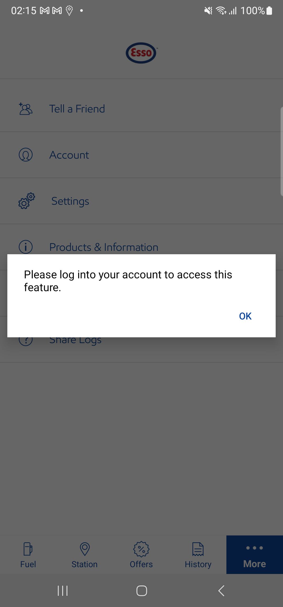When user taps on register button from Login screenStep skippedThen user should be navigated to Manual Register screenStep skippedThen enter First NameStep skippedThen enter Last NameStep skippedThen enter Email address as "chibisakkrava.d+"Step skippedThen enter passwordStep skippedAnd confirm passwordStep skippedThen click the check box for acceptStep skippedWhen click on continue button from register screenStep skippedWhen user tap on Skip buttonStep skippedThen the system should display Skip warning popupStep skippedWhen user tap on Skip anywayStep skippedWhen user enters four digit PIN in the Set up PIN screen in registration flowStep skippedWhen user tap on continue button in Set up PIN screen in registration flowStep skippedAnd user tap on ok button in Set up PIN screen in registration flowStep skippedThen app to dismiss the popup and navigate the user to LID after reviewStep skippedAnd user clicks on offer iconStep skippedThen user clicks Add Nectar Card from offer screenStep skippedAnd user enters the card details and click next iconStep skippedAnd user clicks on continue in add nectar cardStep skippedThen user skips the verification pageStep skippedAnd user verifies the offer pageStep skippedFailCheck Whether the system completes "Add Nectar" taskWhen user log out from the app if logged instepDefinitions.Hook.afterEachStep(io.cucumber.java.Scenario)9df6be9b-74ad-4359-a5ae-737640c96967When user taps on register button from Login screenStep skippedThen user should be navigated to Manual Register screenStep skippedThen enter First NameStep skippedThen enter Last NameStep skippedThen enter Email address as "chibisakkrava.d+"Step skippedThen enter passwordStep skippedAnd confirm passwordStep skippedThen click the check box for acceptStep skippedWhen click on continue button from register screenStep skippedWhen user tap on Skip buttonStep skippedThen the system should display Skip warning popupStep skippedWhen user tap on Skip anywayStep skippedWhen user enters four digit PIN in the Set up PIN screen in registration flowStep skippedWhen user tap on continue button in Set up PIN screen in registration flowStep skippedAnd user tap on ok button in Set up PIN screen in registration flowStep skippedThen app to dismiss the popup and navigate the user to LID after reviewStep skippedAnd user verifies the forty percent in indicatorStep skippedAnd user taps on the complete profileStep skippedThen user clicks on Add nectarStep skippedAnd user clicks on the get started iconStep skippedAnd user enters the card details and click next iconStep skippedAnd user clicks on continue in add nectar cardStep skippedThen user skips the verification pageStep skippedThen user clicks on Add nectarStep skippedAnd user verifies the completed pop up message and clicks ok buttonStep skippedFailCheck Whether System not displays the tick mark on not completed task in listWhen user is on NLID screenAnd user taps on the complete profilestepDefinitions.Hook.afterEachStep(io.cucumber.java.Scenario)61873088-e6c9-4025-bc71-cfcd80b3c8bf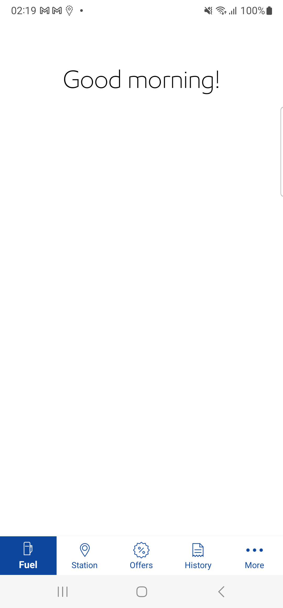Then user verifies the User Profile section in Complete your profile screenStep skippedThen user verifies permission settings in the Complete your profile screenStep skippedThen user verifies Email settings in the Complete your profile screenStep skippedThen user verifies Payment and Loyalty in the Complete your profile screenStep skippedWhen user verify without tick mark on the taskStep skippedFailCheck Whether System does not displays the circular indicatorWhen user is on NLID screenThen user verifies the circular indicator in the LIDstepDefinitions.Hook.afterEachStep(io.cucumber.java.Scenario)aba2820a-e313-48e7-8ac6-fb22342afde3FailCheck Whether system completes the Add Payment in Account Screen and navigates backWhen user log out from the app if logged instepDefinitions.Hook.afterEachStep(io.cucumber.java.Scenario)1e615603-0f54-4da5-986b-70f250c37e83When user taps on register button from Login screenStep skippedThen user should be navigated to Manual Register screenStep skippedThen enter First NameStep skippedThen enter Last NameStep skippedThen enter Email address as "chibisakkrava.d+"Step skippedThen enter passwordStep skippedAnd confirm passwordStep skippedThen click the check box for acceptStep skippedWhen click on continue button from register screenStep skippedWhen user tap on Skip buttonStep skippedThen the system should display Skip warning popupStep skippedWhen user tap on Skip anywayStep skippedWhen user enters four digit PIN in the Set up PIN screen in registration flowStep skippedWhen user tap on continue button in Set up PIN screen in registration flowStep skippedAnd user tap on ok button in Set up PIN screen in registration flowStep skippedThen app to dismiss the popup and navigate the user to LID after reviewStep skippedAnd user is on NLID screenStep skippedAnd user taps on More button in tab barStep skippedWhen user navigates to Account screenStep skippedThen user tap on add card button in accountStep skippedWhen user taps on Credit Debit card in Add Payment Method screenStep skippedAnd user enters the card details except "fingerprint checkbox"Step skippedAnd check consent checkboxStep skippedThen user clicks on continue button in Card screenStep skippedWhen user tap done button to navigate verify screen "Payment method added successfully"Step skippedWhen user tap on payment method added successfully screen continue buttonStep skippedThen user verifies the success set Default payment popupStep skippedAnd user verifies the account pageStep skippedThen user clicks on edit in the added payment method without phone and other paymentStep skippedThen user taps delete in the Edit Payment Method screenStep skippedThen user taps on delete button in the Delete popup msgStep skippedThen app to dismiss the popup when the user taps on OK buttonStep skippedAnd user verifies the account pageStep skippedAnd user navigated to NLID ScreenStep skippedAnd user taps on the complete profileStep skippedThen user taps on add payment methodStep skippedThen user verifies whether the task is completedStep skippedFailCheck Whether System displays the nectar pointsWhen user log out from the app if logged instepDefinitions.Hook.afterEachStep(io.cucumber.java.Scenario)fc93661d-365c-4520-a692-7f656dbd7f4eWhen user clicks on Login IconStep skippedWhen I enter "regressioncredentials2" in login detailsStep skippedAnd user taps login button in login screenStep skippedGiven user is on NLID screenStep skippedAnd user taps on More button in tab barStep skippedWhen user navigates to Account screenStep skippedAnd delete added nectar card if existsStep skippedThen tap on add nectar card from account screenStep skippedThen user is navigated to add nectar screenStep skippedAnd enter nectar card value "NectarCardAddAndVerify" and tap on next buttonStep skippedWhen user clicks on Continue button under 'Card Added successfully' alertStep skippedThen enter "NectarCardAddAndVerify" Nectar card number and passwordStep skippedAnd navigate to the Nectar card section from account screenStep skippedAnd user taps on fuel iconStep skippedGiven user is on NLID screenStep skippedThen user verifies the circular indicator in the LIDStep skippedThen user verifies the nectar points in dashboardStep skippedThen user verifies the nectar thumbnails in the LIDStep skippedFailCheck Whether system completes any task on the complete profile listWhen user log out from the app if logged instepDefinitions.Hook.afterEachStep(io.cucumber.java.Scenario)3f9627e2-80d5-4e5f-bbf2-d1d50a06b9e2When user taps on register button from Login screenStep skippedThen user should be navigated to Manual Register screenStep skippedThen enter First NameStep skippedThen enter Last NameStep skippedThen enter Email address as "chibisakkrava.d+"Step skippedThen enter passwordStep skippedAnd confirm passwordStep skippedThen click the check box for acceptStep skippedWhen click on continue button from register screenStep skippedWhen user tap on Skip buttonStep skippedThen the system should display Skip warning popupStep skippedWhen user tap on Skip anywayStep skippedWhen user enters four digit PIN in the Set up PIN screen in registration flowStep skippedWhen user tap on continue button in Set up PIN screen in registration flowStep skippedAnd user tap on ok button in Set up PIN screen in registration flowStep skippedThen app to dismiss the popup and navigate the user to LID after reviewStep skippedAnd user taps on the complete profileStep skippedWhen user taps on the Email Preferences in Complete your profile screenStep skippedAnd user verifies the Email Preferences screenStep skippedAnd user taps on the accept email preferencesStep skippedAnd User taps on Continue button in the email preferences screenStep skippedThen user verifies whether the email preferences task is completedStep skippedAnd User taps on Continue button in the email preferences set successfully screenStep skippedFailCheck Whether System displays the Already completed pop up by clicking the completed task in listWhen user is on NLID screenAnd user taps on the complete profilestepDefinitions.Hook.afterEachStep(io.cucumber.java.Scenario)f040c4cd-f6f8-4659-9773-5f16393e0027When user taps on the Email Preferences in Complete your profile screenStep skippedAnd user verifies the Add Mobile Number confirmation pop up with messageStep skippedAnd user accepts the pop up messageStep skipped -
SSO
2:30:37 am / 00:24:41:460 Fail
SSO
07.08.2024 2:30:37 am 07.08.2024 2:55:19 am 00:24:41:460 · #test-id=3,967FailVerify if SSO Linked In based Esso app user navigate to 'Forgot PIN' screen to trigger a reset PIN email from confirm payment screenGiven user log out from the app if logged instepDefinitions.Hook.afterEachStep(io.cucumber.java.Scenario)614ddabb-9fe9-455d-a974-7c5a5c438f70And user taps on "LinkedIn" icon in the NLIDStep skippedAnd I enter SSO login details for "LinkedIn"Step skippedGiven user is on NLID screenStep skippedWhen user taps on start button in LIDStep skippedAnd user is navigated to Select your pump screenStep skippedAnd user selects pump number "2" to start fuellingStep skippedAnd user selects the pump from 'Select your Pump' page and taps on continue buttonStep skippedWhen user tap on Continue button in MFA screenStep skippedThen the user is navigated to Confirm payment screenStep skippedAnd user confirms card paymentStep skippedWhen user taps on Forgot your pin linkStep skippedThen user is navigated to Forgot Pin ScreenStep skippedAnd Veirfy all the elements are present in Forgot Pin ScreenStep skippedAnd user taps on send button in Forgot Pin ScreenStep skippedThen verify the confirmation pop up is displayedStep skippedAnd tap on Ok ButtonStep skippedThen the user is navigated to Confirm payment screenStep skippedFailVerify if SSO Linked in based Esso app user navigate to 'Forgot PIN' screen to trigger a reset PIN emailGiven user is on NLID screenAnd user taps on More button in tab barWhen user navigates to Account screenThen user clicks on edit in the pin without phonestepDefinitions.Hook.afterEachStep(io.cucumber.java.Scenario)5d4233e2-2edc-432a-ae83-d0b8013b5d0dWhen user taps on Forgot your pin linkStep skippedThen user is navigated to Forgot Pin ScreenStep skippedAnd Veirfy all the elements are present in Forgot Pin ScreenStep skippedAnd user taps on send button in Forgot Pin ScreenStep skippedThen verify the confirmation pop up is displayedStep skippedAnd tap on Ok ButtonStep skippedThen user verifies the user redirected to Account screenStep skippedFailApp should allow the LinkedIn user to register again with the deleted accountWhen user is on NLID screenAnd user taps on More button in tab barWhen user navigates to Account screenAnd user verifies the Account title in the account sectionstepDefinitions.Hook.afterEachStep(io.cucumber.java.Scenario)2a5c570f-9898-463d-85c6-c8dc819adff4And user taps on delete your account in account screenStep skippedAnd user verifies the delete your account screenStep skippedAnd user taps on delete in delete your account screenStep skippedAnd user verifies the delete your account popupStep skippedAnd tap on Ok ButtonStep skippedThen user verifies the app redirects back to NLIDStep skippedFailVerify whether application is not displaying add mobile number task in Linked-in registraion flowGiven user log out from the app if logged instepDefinitions.Hook.afterEachStep(io.cucumber.java.Scenario)e2fd7325-a365-473d-a3b7-d49650c29419And user taps on "LinkedIn" icon in the NLIDStep skippedAnd I enter SSO login details for "LinkedIn"Step skippedThen user navigates to the SSO registration screenStep skippedThen user verifies the mobile number field is not present in the SSO registraion flowStep skippedThen user registers the SSO user by accepting the terms and conditions screenStep skippedWhen user enters four digit PIN in the Set up PIN screen in registration flowStep skippedWhen user tap on continue button in Set up PIN screen in registration flowStep skippedAnd user tap on ok button in Set up PIN screen in registration flowStep skippedWhen user is on NLID screenStep skippedFailLinked-In user - Verify the user is able to see the updated Esso logo in the "LID" screenThen verify the updated esso logo is displayedstepDefinitions.Hook.afterEachStep(io.cucumber.java.Scenario)1552c875-bd32-4443-95c7-23176ca869a1FailVerify if SSO Facebook based Esso app user navigate to 'Forgot PIN' screen to trigger a reset PIN email from confirm payment screenGiven user log out from the app if logged instepDefinitions.Hook.afterEachStep(io.cucumber.java.Scenario)31c4f3bf-7b57-415c-aeeb-0f12342834d4And user taps on "Facebook" icon in the NLIDStep skippedAnd I enter SSO login details for "Facebook"Step skippedGiven user is on NLID screenStep skippedWhen user taps on start button in LIDStep skippedAnd user is navigated to Select your pump screenStep skippedAnd user selects pump number "2" to start fuellingStep skippedAnd user selects the pump from 'Select your Pump' page and taps on continue buttonStep skippedWhen user tap on Continue button in MFA screenStep skippedThen the user is navigated to Confirm payment screenStep skippedAnd user confirms card paymentStep skippedWhen user taps on Forgot your pin linkStep skippedThen user is navigated to Forgot Pin ScreenStep skippedAnd Veirfy all the elements are present in Forgot Pin ScreenStep skippedAnd user taps on send button in Forgot Pin ScreenStep skippedThen verify the confirmation pop up is displayedStep skippedAnd tap on Ok ButtonStep skippedThen the user is navigated to Confirm payment screenStep skippedFailVerify if SSO Facebook based Esso app user navigate to 'Forgot PIN' screen to trigger a reset PIN emailGiven user is on NLID screenAnd user taps on More button in tab barWhen user navigates to Account screenThen user clicks on edit in the pin without phonestepDefinitions.Hook.afterEachStep(io.cucumber.java.Scenario)ff4d6f0f-78a2-4c5e-bc89-03299a19b052When user taps on Forgot your pin linkStep skippedThen user is navigated to Forgot Pin ScreenStep skippedAnd Veirfy all the elements are present in Forgot Pin ScreenStep skippedAnd user taps on send button in Forgot Pin ScreenStep skippedThen verify the confirmation pop up is displayedStep skippedAnd tap on Ok ButtonStep skippedThen user verifies the user redirected to Account screenStep skippedFailCheck Whether System displays the confirmation for the transactionGiven user is on NLID screenWhen user taps on start button in LIDstepDefinitions.Hook.afterEachStep(io.cucumber.java.Scenario)5c07b3f8-e54f-4655-b332-99fdc0367e83And user is navigated to Select your pump screenStep skippedAnd user selects pump number "1" to start fuellingStep skippedAnd user selects the pump from 'Select your Pump' page and taps on continue buttonStep skippedAnd user verify the MFA screenStep skippedWhen user tap on Continue button in MFA screenStep skippedThen the user is navigated to Confirm payment screenStep skippedThen user verify the confirms the payment screenStep skippedWhen user confirms card paymentStep skippedAnd Enter pin in the fuelling flowStep skippedAnd Verify that Please wait screen is displayedStep skippedThen Start fuelling screen now is displayedStep skippedFailApp should allow the Facebook user to register again with the deleted accountWhen user is on NLID screenAnd user taps on More button in tab barWhen user navigates to Account screenAnd user verifies the Account title in the account sectionstepDefinitions.Hook.afterEachStep(io.cucumber.java.Scenario)bd0d628a-95bf-4ca3-bc89-95515f4c86abAnd user taps on delete your account in account screenStep skippedAnd user verifies the delete your account screenStep skippedAnd user taps on delete in delete your account screenStep skippedAnd user verifies the delete your account popupStep skippedAnd tap on Ok ButtonStep skippedThen user verifies the app redirects back to NLIDStep skippedAnd user taps on "Facebook" icon in the NLIDStep skippedAnd I enter SSO login details for "Facebook"Step skippedThen user navigates to the SSO registration screenStep skippedThen user registers the SSO user by accepting the terms and conditions screenStep skippedWhen user enters four digit PIN in the Set up PIN screen in registration flowStep skippedWhen user tap on continue button in Set up PIN screen in registration flowStep skippedAnd user tap on ok button in Set up PIN screen in registration flowStep skippedWhen user is on NLID screenStep skippedFailSSO User - Verify whether app is displaying the Credit/Debit Card info icon pop-up on the Add Payment Method screenGiven user is on NLID screenAnd user validates the add payment link present in LID screenstepDefinitions.Hook.afterEachStep(io.cucumber.java.Scenario)333c6260-39e5-40dd-9168-0143b92c4677When user taps on add payment link present in LID screenStep skippedThen user verifies the Add Payment method screenStep skippedThen user verifies the info icon present and taps on the buttonStep skippedWhen user verifies the text present under info icon and taps on ok buttonStep skippedThen user verifies the Add Payment method screenStep skippedFailDismiss the Identify Confirmation prompt as per ‘Requirement 1.e’ if the user has tapped on the button(Social) > Social Login)Given user is on NLID screenAnd user taps on More button in tab barWhen user navigates to Account screenThen user tap on add card button in accountstepDefinitions.Hook.afterEachStep(io.cucumber.java.Scenario)f22de539-822f-4045-95c4-8160a5864c96When user taps on Credit Debit card in Add Payment Method screenStep skippedThen user lands on Add debit/credit card screenStep skippedThen enter name of the cardStep skippedThen enter "5426 0640 0042 5174" card numberStep skippedThen enter expiry dateStep skippedThen enter CVVStep skippedThen enter postal codeStep skippedThen enter address line1Step skippedThen enter Address line2Step skippedThen enter cityStep skippedThen check consent checkboxStep skippedAnd tap on continue button in add payment screenStep skippedThen user verifies the completed popup message for card addedStep skippedAnd user clicks on ok button in card added messageStep skippedThen validate identity confirmation titleStep skippedThen validate if user is on 3ds password screenStep skippedFailSystem to display ‘Custom UI’ if the challenge flow is issued for the COF onboarding(Registration (Social) > Social Login)Given user is on NLID screenAnd user taps on More button in tab barWhen user navigates to Account screenThen user tap on add card button in accountstepDefinitions.Hook.afterEachStep(io.cucumber.java.Scenario)637aaf7a-7f10-483f-9d31-334a96305adeWhen user taps on Credit Debit card in Add Payment Method screenStep skippedThen user lands on Add debit/credit card screenStep skippedThen enter name of the cardStep skippedThen enter "5426 0640 0042 5174" card numberStep skippedThen enter expiry dateStep skippedThen enter CVVStep skippedThen enter postal codeStep skippedThen enter address line1Step skippedThen enter Address line2Step skippedThen enter cityStep skippedThen check consent checkboxStep skippedAnd tap on continue button in add payment screenStep skippedThen validate identity confirmation titleStep skippedThen validate if user is on 3ds password screenStep skippedPassLID -SSO Facebook user- Verify that whether App is app displaying a broadcast banner on the LIDWhen user verifies the broadcast bannerFailFB user - Verify the user is able to see the updated Esso logo in the "LID" screenThen verify the updated esso logo is displayedstepDefinitions.Hook.afterEachStep(io.cucumber.java.Scenario)dbd6af1a-a25c-4937-b797-a92225ed719fFailVerify whether application is not displaying add mobile number task in Linked-in Profile completion on LIDGiven user log out from the app if logged instepDefinitions.Hook.afterEachStep(io.cucumber.java.Scenario)128b3277-7291-421d-afda-16e95973bcd3And user taps on "LinkedIn" icon in the NLIDStep skippedAnd I enter SSO login details for "LinkedIn"Step skippedWhen user is on NLID screenStep skippedAnd user taps on the complete profileStep skippedThen user confirms the mobile number field is not present in the Completes your profile screenStep skipped -
StationFinder
2:55:19 am / 01:06:05:133 Fail
StationFinder
07.08.2024 2:55:19 am 07.08.2024 4:01:24 am 01:06:05:133 · #test-id=4,339FailEnsure that the system to allow user to view the station markersWhen user log out from the app if logged instepDefinitions.Hook.afterEachStep(io.cucumber.java.Scenario)3c1a7956-1828-4ebb-8a2e-13d6e8457835Then user taps on Station FinderStep skippedWhen user enters search term in station finderStep skippedThen user validates cluster displayed in map areaStep skippedWhen user tap on a clusterStep skippedThen map gets zoomed in to display cluster and map pinsStep skippedFailCheck whether logged-in user should be able to see icons next to the services & facilities available in the ‘Filter by’ screen.When user log out from the app if logged instepDefinitions.Hook.afterEachStep(io.cucumber.java.Scenario)379d1c0f-b20b-413c-b5ba-ea75519592b4Then user taps on Station FinderStep skippedWhen user tap on filter iconStep skippedThen Verify the app display icons next to all available services and facilitiesStep skippedPassVerify Non logged in user should see the station distance in miles for station in Station Details screenGiven user is on NLID screenWhen user taps on Station FinderThen the system navigates to the Esso Station Finder ScreenWhen user clicks on the search field in the Esso Station Finder ScreenWhen user enters search term in station finderWhen user tap on list viewThen verify whether System is able to get the consolidated list of all available fueling stations with complete detailsAnd user selects a station from the listThen verify user is in the Station details screenThen user verify the app display the direct distance in miles for station in Station Details screenFailCheck whether system not able to update the filters for Find Esso Stations screen, if user has tapped on Cancel buttonWhen user log out from the app if logged instepDefinitions.Hook.afterEachStep(io.cucumber.java.Scenario)43800aeb-6a8a-422b-b858-451fea3ef571When user taps on register button from Login screenStep skippedThen user should be navigated to Manual Register screenStep skippedThen enter First NameStep skippedThen enter Last NameStep skippedThen enter Email address as "chibisakkrava.d+"Step skippedThen enter passwordStep skippedAnd confirm passwordStep skippedThen click the check box for acceptStep skippedWhen click on continue button from register screenStep skippedWhen user tap on Skip buttonStep skippedThen the system should display Skip warning popupStep skippedWhen user tap on Skip anywayStep skippedWhen user enters four digit PIN in the Set up PIN screen in registration flowStep skippedWhen user tap on continue button in Set up PIN screen in registration flowStep skippedAnd user tap on ok button in Set up PIN screen in registration flowStep skippedThen app to dismiss the popup and navigate the user to LID after reviewStep skippedThen user taps on Station FinderStep skippedWhen user tap on filter iconStep skippedWhen taps on any of the services and facilitiesStep skippedThen verify if a tick mark is displayed next to the selected servicesStep skippedAnd verify the change in Apply Filter buttonStep skippedWhen user taps on cancel button in Filter By ScreenStep skippedThen the system navigates to the Esso Station Finder ScreenStep skippedFailCheck whether System show results based on entered Postcode on the map view as well as the list view(search field will accept alphabets and numbers)When user log out from the app if logged instepDefinitions.Hook.afterEachStep(io.cucumber.java.Scenario)c72f4de3-c981-46a2-8c8a-728f6beba5e7When user taps on register button from Login screenStep skippedThen user should be navigated to Manual Register screenStep skippedThen enter First NameStep skippedThen enter Last NameStep skippedThen enter Email address as "chibisakkrava.d+"Step skippedThen enter passwordStep skippedAnd confirm passwordStep skippedThen click the check box for acceptStep skippedWhen click on continue button from register screenStep skippedWhen user tap on Skip buttonStep skippedThen the system should display Skip warning popupStep skippedWhen user tap on Skip anywayStep skippedWhen user enters four digit PIN in the Set up PIN screen in registration flowStep skippedWhen user tap on continue button in Set up PIN screen in registration flowStep skippedAnd user tap on ok button in Set up PIN screen in registration flowStep skippedThen app to dismiss the popup and navigate the user to LID after reviewStep skippedThen user taps on Station FinderStep skippedWhen user clicks on the search field in the Esso Station Finder ScreenStep skippedWhen user enters search term in station finderStep skippedWhen user tap on list viewStep skippedThen verify whether System is able to get the consolidated list of all available fueling stations with complete detailsStep skippedFailVerify system to display the available stations when user navigates to station finder maps in under 3 seconds.When user log out from the app if logged instepDefinitions.Hook.afterEachStep(io.cucumber.java.Scenario)5cca1aaf-d970-45ef-88e1-e356b9f9753bThen user taps on Station FinderStep skippedThen verify the available station is displayed under 3 secondsStep skippedFailCheck whether System able to display Welcome to (Fuel Station Name) when the user is at the Fuel stationWhen user log out from the app if logged instepDefinitions.Hook.afterEachStep(io.cucumber.java.Scenario)11c131c2-7935-4a89-8368-7d9807d71243And user clicks on Login IconStep skippedWhen I enter "regressioncredentials2" in login detailsStep skippedAnd user taps login button in login screenStep skippedGiven user is on NLID screenStep skippedThen user verify the Welcome to Station name in the LID screenStep skippedFailCheck whether logged in user should see icons next to each service & facilities available in the respective stationGiven user is on NLID screenAnd user taps on More button in tab barWhen user navigates to Account screenAnd delete added nectar card if existsstepDefinitions.Hook.afterEachStep(io.cucumber.java.Scenario)d474dd80-7e08-47a2-9a52-9e4061e21dcaThen tap on add nectar card from account screenStep skippedThen user is navigated to add nectar screenStep skippedAnd enter nectar card value "NectarCardAddAndVerify" and tap on next buttonStep skippedWhen user clicks on Continue button under 'Card Added successfully' alertStep skippedThen enter "NectarCardAddAndVerify" Nectar card number and passwordStep skippedAnd navigate to the Nectar card section from account screenStep skippedWhen user taps on Station FinderStep skippedThen the system navigates to the Esso Station Finder ScreenStep skippedWhen user clicks on the search field in the Esso Station Finder ScreenStep skippedWhen user enters search term in station finderStep skippedWhen user tap on list viewStep skippedThen verify whether System is able to get the consolidated list of all available fueling stations with complete detailsStep skippedAnd user selects a station from the listStep skippedThen verify user is in the Station details screenStep skippedThen verify the app display icons next to all available services and facilities in the respective stationStep skippedPassCheck whether logged in user should see the station distance in miles for station in Station Details screenGiven user is on NLID screenWhen user taps on Station FinderThen the system navigates to the Esso Station Finder ScreenWhen user clicks on the search field in the Esso Station Finder ScreenWhen user enters search term in station finderWhen user tap on list viewThen verify whether System is able to get the consolidated list of all available fueling stations with complete detailsAnd user selects a station from the listThen verify user is in the Station details screenThen user verify the app display the direct distance in miles for station in Station Details screenPassCheck whether logged-in user should be able to see icons next to the services & facilities available in the ‘Filter by’ screen.Given user is on NLID screenThen user taps on Station FinderWhen user tap on filter iconThen Verify the app display icons next to all available services and facilitiesFailCheck whether the system displays all fueling station sites in the visible map area matching Station listGiven user is on NLID screenThen user taps on Station FinderWhen user enters search term in station finderAnd check the stations are displayed in the station finder screenstepDefinitions.Hook.afterEachStep(io.cucumber.java.Scenario)9732de42-e633-4fe1-9819-738cb4518bf0PassCheck whether System to allow user to make a call when tapping on the phone numberWhen user is on NLID screenThen user taps on Station FinderWhen user enters search term in station finderWhen user tap on list viewThen user selects a station from the listThen verify user is in the Station details screenThen verify whether System to display phone number in station details screenWhen user taps on phone numberAnd check whether the System displays prompt with phone number with Call and cancel buttonWhen user taps on cancel button the system should close the promptThen verify user is in the Station details screenAnd System to navigate user to device level to make a call to the station when user tap on Call buttonPassVerify whether the system is able to display the following components as part of Station finderWhen user is on NLID screenThen user taps on Station FinderThen Verify whether the system is able to display the following components as part of Station finderPassCheck whether user navigates to station finder maps and experiences a delay equivalent to the large number of stations to be retrieved in the mapped areaWhen user is on NLID screenThen user taps on Station FinderThen check the map is displayed in the station finder screenFailCheck whether system to navigate user back to Fuel Finder screenWhen user is on NLID screenWhen user taps on Station FinderWhen user enters search term in station finderThen verify if the Mobile pay stations is selected by defaultstepDefinitions.Hook.afterEachStep(io.cucumber.java.Scenario)35c4fed3-2ab5-48f8-84a8-2807e2b42c06When user tap on list viewStep skippedThen verify whether System is able to get the consolidated list of all available fueling stations with complete detailsStep skippedFailCheck whether System is able to get the consolidated list of all available fueling stations with complete detailsWhen user is on NLID screenWhen user taps on Station FinderWhen user enters search term in station finderAnd user tap on list viewstepDefinitions.Hook.afterEachStep(io.cucumber.java.Scenario)f02160d5-41e6-4e4e-97c6-0bdfcc4147deThen verify whether System is able to get the consolidated list of all available fueling stations with complete detailsStep skippedFailCheck whether System to take the USER to the station detail screen for a mobile pay enabled station if USER taps on the icon for mobile pay enabled stationWhen user is on NLID screenWhen user taps on Station FinderWhen user taps on Mobile pay Stations in Esso Station Finder ScreenWhen user enters search term in station finderWhen user tap on list viewstepDefinitions.Hook.afterEachStep(io.cucumber.java.Scenario)7abb30f2-2b8d-4ac1-bac2-2fdcb2cfe5c4Then verify whether System is able to get the consolidated list of all available fueling stations with complete detailsStep skippedThen user selects a station from the listStep skippedThen verify user is in the Station details screenStep skippedPassCheck whether service option available under filterWhen user is on NLID screenThen user taps on Station FinderWhen user tap on filter iconThen Verify the System is able to display the following components as part of Filter By screenWhen taps on any of the services and facilitiesThen verify if a tick mark is displayed next to the selected servicesAnd verify the change in Apply Filter buttonFailCheck whether System is able to load below mentioned details for fuel station list view in the following orderWhen user is on NLID screenThen user taps on Station FinderWhen user enters search term in station finderWhen user tap on list viewstepDefinitions.Hook.afterEachStep(io.cucumber.java.Scenario)98f15b4f-620b-4ede-8665-93e2d4a93edbThen verify whether System is able to get the consolidated list of all available fueling stations with complete detailsStep skippedThen user verify the app display the direct distance of the stations from device locationStep skippedPassCheck whether System is able to display the following components as part of Filter By screen.When user is on NLID screenThen user taps on Station FinderWhen user tap on filter iconThen Verify the System is able to display the following components as part of Filter By screenFailVerify whether View offer loads Non load to card offer in the Offers sectionWhen user is on NLID screenThen user taps on OffersAnd validate offers displayed in offer screenstepDefinitions.Hook.afterEachStep(io.cucumber.java.Scenario)47e906e9-b9f2-4eed-b92b-356d44c2b64bThen tap on view offers buttonStep skippedAnd validate offer detailsStep skippedThen tap on Terms & conditions linkStep skippedAnd validate Terms & conditions overlayStep skippedThen close the Terms & conditions overlayStep skippedPassCheck whether System is able to make the service call and load the nearby fueling stations by making a service calls and load the nearby fueling stationsWhen user is on NLID screenWhen user taps on Station FinderAnd user tap on list viewThen verify whether System is able to get the consolidated list of all available fueling stations with complete detailsFailCheck whether System to take the USER to the station detail screen for a not mobile pay enabled station, if USER taps on the icon for non-mobile pay enabled station.When user is on NLID screenWhen user taps on Station FinderWhen user enters search term with a non mobile station in station finderWhen user tap on list viewstepDefinitions.Hook.afterEachStep(io.cucumber.java.Scenario)76ef3348-5368-43df-b6eb-7876cc4f01e4Then verify whether System is able to get the consolidated list of all available fueling stations with complete detailsStep skippedThen user selects a station from the listStep skippedThen verify user is in the Station details screenStep skippedAnd check whether System displays Opening Hours details in Station Details screenStep skippedFailCheck whether System to display Service and Facilities details in Station Details screenWhen user is on NLID screenThen user taps on Station FinderWhen user enters search term in station finderWhen user tap on list viewstepDefinitions.Hook.afterEachStep(io.cucumber.java.Scenario)786b9a8c-7efe-4e73-ba49-bf307369fea3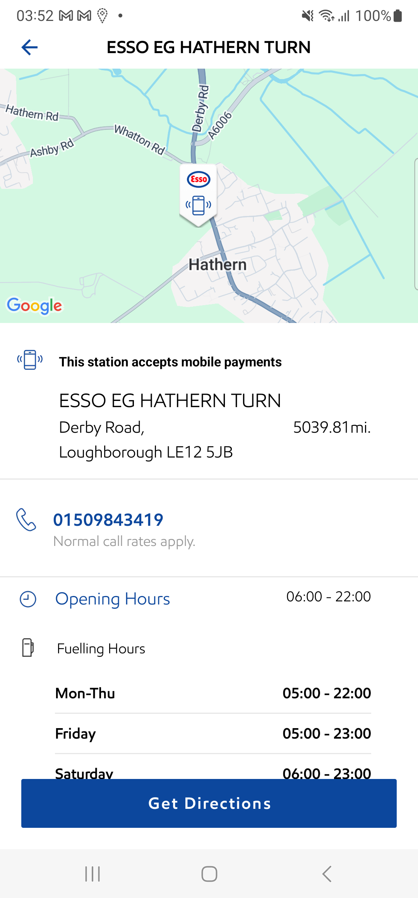Then user selects a station from the listStep skippedThen verify the app display icons next to all available services and facilities in the respective stationStep skippedFailVerify Non logged in user should see the station distance in miles for each station in the list stationsWhen user log out from the app if logged instepDefinitions.Hook.afterEachStep(io.cucumber.java.Scenario)787e66fb-7f5a-4222-a8cc-773ff201ecd7When user taps on Station FinderStep skippedThen the system navigates to the Esso Station Finder ScreenStep skippedWhen user clicks on the search field in the Esso Station Finder ScreenStep skippedWhen user enters search term in station finderStep skippedWhen user tap on list viewStep skippedThen verify whether System is able to get the consolidated list of all available fueling stations with complete detailsStep skippedAnd user selects a station from the listStep skippedThen verify user is in the Station details screenStep skippedThen user verify the app display the direct distance in miles for station in Station Details screenStep skippedPassManual User - Verify the Esso app is not displaying the App Assistant in Station Finder default map viewWhen user is on NLID screenWhen user taps on Station FinderThen user validates that the app assistant is not presentPassManual User - Verify the Esso app is not displaying the App Assistant in Station Finder list viewWhen user is on NLID screenWhen user taps on Station FinderAnd user tap on list viewThen user validates that the app assistant is not presentPassCheck whether System to display Search button as enabled once has not entered any keyword for search text/input field.When user is on NLID screenWhen user taps on Station FinderThen the system navigates to the Esso Station Finder ScreenWhen user clicks on the search field in the Esso Station Finder ScreenThen search button is enabled in the system keyboard -
UKRegressionFeatures
4:01:24 am / 00:24:40:753 Fail
UKRegressionFeatures
07.08.2024 4:01:24 am 07.08.2024 4:26:05 am 00:24:40:753 · #test-id=4,852FailCheck whether System to display PayPal AccountWhen user log out from the app if logged instepDefinitions.Hook.afterEachStep(io.cucumber.java.Scenario)27941d64-6466-474b-a5c5-2e07c4485811 And user clicks on Login IconStep skippedWhen I enter "regressioncredentials2" in login detailsStep skippedAnd user taps login button in login screenStep skippedGiven user is on NLID screenStep skippedAnd user taps on More button in tab barStep skippedWhen user navigates to Account screenStep skippedAnd user taps on Edit Pay Pal account in Account screenStep skippedThen user verifies the user redirected to Account screenStep skippedFailLID- Nectar Card not verified /Vaulted to the accountAnd user is on NLID screenAnd user taps on More button in tab barWhen user navigates to Account screenAnd delete added nectar card if existsstepDefinitions.Hook.afterEachStep(io.cucumber.java.Scenario)f1e18d93-8a2f-467a-b81a-231a82bda7efAnd tap on add nectar card from account screenStep skippedAnd enter nectar card value "NectarCardAddAndVerify" and tap on next buttonStep skippedWhen user clicks on Continue button under 'Card Added successfully' alertStep skippedThen enter "NectarCardAddAndVerify" Nectar card number and passwordStep skippedAnd close the modal popupStep skippedAnd user taps on More button in tab barStep skippedWhen user navigates to Account screenStep skippedAnd navigate to the Nectar card sectionStep skippedThen validate added nectar card "NectarCardAddAndVerify" in the accountStep skippedThen delete added nectar cardStep skippedFailApp should allow the Manual user to register again with the deleted accountWhen user is on NLID screenAnd user taps on More button in tab barWhen user navigates to Account screenAnd user verifies the Account title in the account sectionstepDefinitions.Hook.afterEachStep(io.cucumber.java.Scenario)0fe7d710-837c-4f83-ba12-1a7cd5cc4b59And user takes the mail id of the userStep skippedAnd user taps on delete your account in account screenStep skippedAnd user verifies the delete your account screenStep skippedAnd user taps on delete in delete your account screenStep skippedAnd user verifies the delete your account popupStep skippedAnd tap on Ok ButtonStep skippedThen user verifies the app redirects back to NLIDStep skippedWhen user taps on register button from Login screenStep skippedThen user should be navigated to Manual Register screenStep skippedThen enter First NameStep skippedThen enter Last NameStep skippedAnd user enter the auto generated mail after deleting the userStep skippedThen enter passwordStep skippedAnd confirm passwordStep skippedThen click the check box for acceptStep skippedWhen click on continue button from register screenStep skippedThen App should navigates to Confirm your email address screenStep skippedWhen user tap on Skip buttonStep skippedThen the system should display Skip warning popupStep skippedWhen user tap on Skip anywayStep skippedWhen user enters four digit PIN in the Set up PIN screen in registration flowStep skippedWhen user tap on continue button in Set up PIN screen in registration flowStep skippedAnd user tap on ok button in Set up PIN screen in registration flowStep skippedThen app to dismiss the popup and navigate the user to LID after reviewStep skippedFailCheck whether System to display copy text XX as promptWhen user log out from the app if logged instepDefinitions.Hook.afterEachStep(io.cucumber.java.Scenario)7c1eb89c-e6c8-4306-98a0-68e23a5825beAnd user clicks on Login IconStep skippedWhen I enter "FrictEssoPsword" in login detailsStep skippedAnd user taps login button in login screenStep skippedGiven user is on NLID screenStep skippedWhen user taps on More button in tab barStep skippedWhen user navigates to Account screenStep skippedAnd user verifies the Account title in the account sectionStep skippedAnd user should verify the masked password and edit button in the account sectionStep skippedWhen user taps on edit usr pwdStep skippedThen user verifies the edit password titleStep skippedAnd user enters the current password from the "FrictEssoPsword"Step skippedAnd user enters a New Password to change the passwordStep skippedAnd user enters a Confirm New Password to change the passwordStep skippedThen user tap on Done buttonStep skippedThen verify copy text message for password changedStep skippedAnd Tap on OK button in the popupStep skippedThen user verifies the app redirects back to NLIDStep skippedFailCheck Whether System displays the tutorial screen and clicks ok button in the Non logged in dashboard screenAnd user taps on More button in tab barAnd user taps on Share logs in the MenuThen user sends the share logs to the "regressioncredentials2" to get the logsstepDefinitions.Hook.afterEachStep(io.cucumber.java.Scenario)0b4d2be4-2ba7-4a38-8c4d-c2e3e3757e35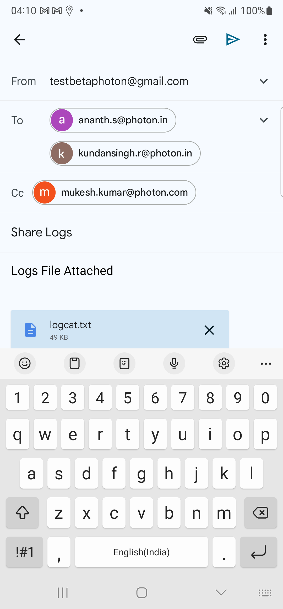Given reset the appStep skippedThen Verify the Cookie page elementsStep skippedAnd Click Accept all button in the cookie pageStep skippedThen user validates tutorial screenStep skippedWhen user tap on next buttonStep skippedThen Validate second screenStep skippedWhen user tap on next buttonStep skippedThen Validate third screenStep skippedAnd user clicks on GET STARTED buttonStep skippedThen Validate the welcome pop-up messageStep skippedFailVerify the app is displaying the privacy options on the Settings screen as disabled for Google signed in userGiven reset the appstepDefinitions.Hook.afterEachStep(io.cucumber.java.Scenario)9a9f8c35-6579-4a99-804e-7f3d44d280f3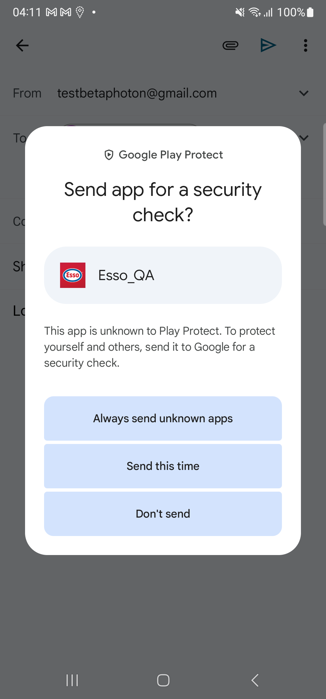Then Verify the Cookie page elementsStep skippedWhen the user taps on the Reject all button in the privacy screenStep skippedAnd user taps on SKIP button in the tutorial screenStep skippedThen user naviagtes to the NLID screen after tutorial screensStep skippedAnd user is on NLID screenStep skippedAnd user taps on "Google" icon in the NLIDStep skippedAnd I enter SSO login details for "Google"Step skippedWhen user is on NLID screenStep skippedAnd user taps on More button in tab barStep skippedAnd user taps on settings button in more screenStep skippedThen user verifies the Functional and Analytics options are disabledStep skippedFailThe app should display the updated site check-in tutorial screen #1 (Google User.)When user is on NLID screenAnd user taps on More button in tab barstepDefinitions.Hook.afterEachStep(io.cucumber.java.Scenario)When user navigates to Account screenStep skippedAnd user verifies the Account title in the account sectionStep skippedAnd user taps on delete your account in account screenStep skippedAnd user verifies the delete your account screenStep skippedAnd user taps on delete in delete your account screenStep skippedAnd user verifies the delete your account popupStep skippedAnd tap on Ok ButtonStep skippedThen user verifies the app redirects back to NLIDStep skippedAnd user taps on "Google" icon in the NLIDStep skippedAnd I enter SSO login details for "Google"Step skippedThen user registers the SSO user by accepting the terms and conditions screenStep skippedWhen user enters four digit PIN in the Set up PIN screen in registration flowStep skippedWhen user tap on continue button in Set up PIN screen in registration flowStep skippedAnd user tap on ok button in Set up PIN screen in registration flowStep skippedWhen user is on NLID screenStep skippedAnd user taps on More button in tab barStep skippedWhen user navigates to Account screenStep skippedAnd user tap on add card button in accountStep skippedWhen user taps on Credit Debit card in Add Payment Method screenStep skippedThen user lands on Add debit/credit card screenStep skippedThen enter name of the cardStep skippedThen enter "5232 0500 0019 0003" card numberStep skippedThen enter expiry dateStep skippedThen enter CVVStep skippedThen enter postal codeStep skippedThen enter address line1Step skippedThen enter Address line2Step skippedThen enter cityStep skippedThen check consent checkboxStep skippedThen user clicks on continue button in Card screenStep skippedWhen user tap done button to navigate verify screen "Payment method added successfully"Step skippedWhen user tap on payment method added successfully screen continue buttonStep skippedAnd user verifies the account pageStep skippedThen user taps on Station FinderStep skippedWhen user taps on Continue button in Let us locate nearest station screenStep skippedThen system displays the popup with the contentsStep skippedWhen user taps on any of the following using the App buttonStep skippedThen the system navigates to the Esso Station Finder ScreenStep skippedAnd user navigated to NLID ScreenStep skippedWhen user taps on start button in LIDStep skippedThen user validates the first tutorial screen during fuellingStep skippedFailVerify whether System is able to display Copy Text, as user taps on Continue buttonGiven reset the appstepDefinitions.Hook.afterEachStep(io.cucumber.java.Scenario)Then verify that Welcome screen screen is displayedStep skippedAnd user taps on SKIP button in the tutorial screenStep skippedThen user naviagtes to the NLID screen after tutorial screensStep skippedThen user taps on Station FinderStep skippedWhen user verify the location permission screen and bypass the screenStep skippedThen system displays the popup with the contentsStep skippedThen user taps on any of the following using the App buttonStep skippedFailCheck whether System is able to perform below mentioned actions if, user has tapped on Always allow/Only while using the app button a.Enable the location access for the appGiven reset the appstepDefinitions.Hook.afterEachStep(io.cucumber.java.Scenario)Then verify that Welcome screen screen is displayedStep skippedAnd user taps on SKIP button in the tutorial screenStep skippedThen user naviagtes to the NLID screen after tutorial screensStep skippedThen user taps on Station FinderStep skippedWhen user verify the Location Permission screenStep skippedWhen user taps on Continue button in Let us locate nearest station screenStep skippedThen system displays the popup with the contentsStep skippedWhen user taps on any of the following using the App buttonStep skippedThen the system navigates to the Esso Station Finder ScreenStep skippedFailInstall & Launch : Install& Launch Esso app Launch Screen 3 UI and Alignment and animationGiven reset the appstepDefinitions.Hook.afterEachStep(io.cucumber.java.Scenario)Then user validates tutorial screenStep skippedWhen user tap on next buttonStep skippedThen Validate second screenStep skippedWhen user tap on next buttonStep skippedThen Validate third screenStep skippedAnd user clicks on GET STARTED buttonStep skippedThen user naviagtes to the NLID screen after tutorial screensStep skippedFailVerify 'PROFILE COMPLETION AT XX%' button with an increment of 10% for 'Location Services' task is completedWhen user log out from the app if logged instepDefinitions.Hook.afterEachStep(io.cucumber.java.Scenario)When user taps on register button from Login screenStep skippedThen user should be navigated to Manual Register screenStep skippedThen enter First NameStep skippedThen enter Last NameStep skippedThen enter Email address as "chibisakkrava.d+"Step skippedThen enter passwordStep skippedAnd confirm passwordStep skippedThen click the check box for acceptStep skippedWhen click on continue button from register screenStep skippedWhen user tap on Skip buttonStep skippedThen the system should display Skip warning popupStep skippedWhen user tap on Skip anywayStep skippedWhen user enters four digit PIN in the Set up PIN screen in registration flowStep skippedWhen user tap on continue button in Set up PIN screen in registration flowStep skippedAnd user tap on ok button in Set up PIN screen in registration flowStep skippedThen app to dismiss the popup and navigate the user to LID after reviewStep skippedAnd user taps on the complete profileStep skippedThen user verifies permission settings in the Complete your profile screenStep skippedWhen user taps on location button in the complete profile screenStep skippedWhen user verify the location permission screen and bypass the screenStep skippedThen system displays the popup with the contentsStep skippedWhen user taps on any of the following using the App buttonStep skippedWhen user taps on Continue button in Allow Location screenStep skippedThen user verifies permission settings in the Complete your profile screenStep skippedWhen user taps on location button in the complete profile screenStep skippedAnd user verifies the completed pop up message and clicks ok buttonStep skippedAnd user taps on back and navigates to LIDStep skippedThen user verifies the progress in the LIDStep skippedFailInstall& Launch Esso app Launch 1 Screen UI and Alignment and animationGiven reset the appstepDefinitions.Hook.afterEachStep(io.cucumber.java.Scenario)Then verify that Welcome screen screen is displayedStep skippedAnd user taps on SKIP button in the tutorial screenStep skippedThen user naviagtes to the NLID screen after tutorial screensStep skippedFailInstall& Launch Esso app Launch Screen 2 UI and Alignment and animationGiven reset the appstepDefinitions.Hook.afterEachStep(io.cucumber.java.Scenario)Then verify that Welcome screen screen is displayed and Pump in welcome screenStep skippedAnd Verify Pay securely from your car screen displayedStep skippedAnd user taps on SKIP button in the tutorial screenStep skippedThen user naviagtes to the NLID screen after tutorial screensStep skippedFailCheck whether System should not to display distance and other details for Fuel Finder button if user has not given location access for the app and distance should be calculated from the London locationWhen user is on NLID screenThen user taps on Station FinderstepDefinitions.Hook.afterEachStep(io.cucumber.java.Scenario)When user verify the location permission screen and bypass the screenStep skippedThen system displays the popup with the contents and tap don't allowStep skippedThen system should display the location access for the appStep skippedAnd verify whether the system navigate back to the fuel finder screenStep skippedWhen user enters search term in station finderStep skippedWhen user tap on list viewStep skippedThen user selects a station from the listStep skippedThen user taps on GOT IT buttonStep skippedThen verify user is in the Station details screenStep skippedThen user verify whether the distance is not presentStep skippedFailInstall & Launch : Install& Launch Esso app Launch Screen 3 UI and Alignment and animationGiven reset the appstepDefinitions.Hook.afterEachStep(io.cucumber.java.Scenario)Then user validates tutorial screenStep skippedWhen user tap on next buttonStep skippedThen Validate second screenStep skippedWhen user tap on next buttonStep skippedThen Validate third screenStep skippedWhen user taps on Get Started button in the tutorial screenStep skippedThen user naviagtes to the NLID screen after tutorial screensStep skippedFailVerify the app is displaying a 'Reject All' button on the Privacy screen during 1st time app launchGiven reset the appstepDefinitions.Hook.afterEachStep(io.cucumber.java.Scenario)Then Verify the Cookie page elementsStep skippedAnd user validates whether the Reject all button is present in the privacy screenStep skippedFailVerify the app is allowing the user to reject all the privacy optionsWhen the user taps on the Reject all button in the privacy screenstepDefinitions.Hook.afterEachStep(io.cucumber.java.Scenario)And user taps on SKIP button in the tutorial screenStep skippedThen user naviagtes to the NLID screen after tutorial screensStep skippedAnd user is on NLID screenStep skippedAnd user taps on More button in tab barStep skippedAnd user taps on settings button in more screenStep skippedThen user verifies the Functional and Analytics options are disabledStep skippedFailCheck whether System is able to display any reference to Nectar in Filters, Services and FacilitiesWhen user is on NLID screenWhen user taps on register button from Login screenstepDefinitions.Hook.afterEachStep(io.cucumber.java.Scenario)Then user should be navigated to Manual Register screenStep skippedThen enter First NameStep skippedThen enter Last NameStep skippedThen enter Email address as "chibisakkrava.d+"Step skippedThen enter passwordStep skippedAnd confirm passwordStep skippedThen click the check box for acceptStep skippedWhen click on continue button from register screenStep skippedWhen user tap on Skip buttonStep skippedThen the system should display Skip warning popupStep skippedWhen user tap on Skip anywayStep skippedWhen user enters four digit PIN in the Set up PIN screen in registration flowStep skippedWhen user tap on continue button in Set up PIN screen in registration flowStep skippedAnd user tap on ok button in Set up PIN screen in registration flowStep skippedThen app to dismiss the popup and navigate the user to LID after reviewStep skippedThen user taps on Station FinderStep skippedWhen user verify the location permission screen and bypass the screenStep skippedWhen user taps on any of the following using the App buttonStep skippedWhen user taps on Continue button in Allow Location screenStep skippedWhen user tap on filter iconStep skippedThen Verify the app display icons next to all available services and facilitiesStep skippedAnd verify whether the system displays reference to nectarStep skippedFailVerify the app is displaying the privacy options on the Settings screen as disabled for manual userAnd user is on NLID screenAnd user taps on More button in tab barstepDefinitions.Hook.afterEachStep(io.cucumber.java.Scenario)And user taps on settings button in more screenStep skippedThen user verifies the Functional and Analytics options are disabledStep skippedFailVerify the app is displaying the privacy options on the Settings screen as disabled for FB userGiven user log out from the app if logged instepDefinitions.Hook.afterEachStep(io.cucumber.java.Scenario)And user taps on "Facebook" icon in the NLIDStep skippedAnd I enter SSO login details for "Facebook"Step skippedWhen user is on NLID screenStep skippedAnd user taps on More button in tab barStep skippedAnd user taps on settings button in more screenStep skippedThen user verifies the Functional and Analytics options are disabledStep skippedFailVerify that the should allow the user to cancel the transaction prior to payment authorisation. (Scan QR code screen)Given user is on NLID screenThen user taps on Station FinderstepDefinitions.Hook.afterEachStep(io.cucumber.java.Scenario)When user verify the location permission screen and bypass the screenStep skippedThen system displays the popup with the contents and tap don't allowStep skippedThen system should display the location access for the appStep skippedAnd verify whether the system navigate back to the fuel finder screenStep skippedThen Click on fuel tabStep skippedWhen user taps on start button in LIDStep skippedWhen user taps on cancel button in the bottom of the screenStep skippedThen user validates the cancel transaction popupStep skippedWhen user taps on cancel trasaction button in the cancel transaction popupStep skippedThen user navigates back to the LID screenStep skippedFailVerify that the application should not cancel the transaction (Scan QR code screen)Given user is on NLID screenWhen user taps on start button in LIDstepDefinitions.Hook.afterEachStep(io.cucumber.java.Scenario)When user taps on cancel button in the bottom of the screenStep skippedThen user validates the cancel transaction popupStep skippedWhen user taps on close button in the cancel transaction popupStep skippedThen Verify user is navigated to Scan QR Code screenStep skippedFailVerify the app is displaying the privacy options on the Settings screen as disabled for Linked-In userGiven user log out from the app if logged instepDefinitions.Hook.afterEachStep(io.cucumber.java.Scenario)And user taps on "LinkedIn" icon in the NLIDStep skippedAnd I enter SSO login details for "LinkedIn"Step skippedWhen user is on NLID screenStep skippedAnd user taps on More button in tab barStep skippedAnd user taps on settings button in more screenStep skippedThen user verifies the Functional and Analytics options are disabledStep skippedFailVerify the app is displaying the privacy options on the Settings screen as disabledAnd user log out from the app if logged instepDefinitions.Hook.afterEachStep(io.cucumber.java.Scenario)And user taps on More button in tab barStep skippedAnd user taps on settings button in more screenStep skippedThen user verifies the Functional and Analytics options are disabledStep skippedFailCheck whether System to convert full Map View into split Map View and List View, if user has tapped on List Stations buttonWhen user is on NLID screenWhen user taps on Station FinderstepDefinitions.Hook.afterEachStep(io.cucumber.java.Scenario)When user enters search term in station finderStep skippedWhen user tap on list viewStep skippedThen verify whether system convert full Map View into split Map View and List View if user has tapped on List Stations buttonStep skippedFailCheck whether system to Get Directions as button , on tapping USER will be navigating to the route map view,Displaying the route to the destination(fuel station)When user is on NLID screenThen user taps on Station FinderstepDefinitions.Hook.afterEachStep(io.cucumber.java.Scenario)When user enters search term in station finderStep skippedWhen user tap on list viewStep skippedThen user selects a station from the listStep skippedThen user taps on GOT IT buttonStep skippedThen verify user is in the Station details screenStep skippedWhen user taps on Get Directions ButtonStep skippedThen user navigates to the route map viewStep skippedFailCheck whether system to search for given keyword and load the station listing based on keyword entered by the user as user taps on Search button from keyboardWhen user is on NLID screenWhen user taps on Station FinderstepDefinitions.Hook.afterEachStep(io.cucumber.java.Scenario)When user enters search term in station finderStep skippedAnd user tap on list viewStep skippedThen verify whether System is able to get the consolidated list of all available fueling stations with complete detailsStep skippedFailCheck whether System able to display the map view after applying the filterWhen user is on NLID screenThen user taps on Station FinderstepDefinitions.Hook.afterEachStep(io.cucumber.java.Scenario)When user tap on filter iconStep skippedThen Verify the System is able to display the following components as part of Filter By screenStep skippedWhen taps on any of the services and facilitiesStep skippedThen verify if a tick mark is displayed next to the selected servicesStep skippedAnd verify the change in Apply Filter buttonStep skippedWhen user clicks on Apply filter buttonStep skippedThen the system navigates to the Esso Station Finder ScreenStep skippedFailCheck whether System to display Opening Hours details in Station Details screenWhen user is on NLID screenThen user taps on Station FinderstepDefinitions.Hook.afterEachStep(io.cucumber.java.Scenario)When user enters search term in station finderStep skippedWhen user tap on list viewStep skippedThen user selects a station from the listStep skippedThen verify user is in the Station details screenStep skippedAnd check whether System displays Opening Hours details in Station Details screenStep skippedFailCheck whether System show results based on entered City on the map view as well as the list view(search field will accept alphabets and numbers)When user is on NLID screenThen user taps on Station FinderstepDefinitions.Hook.afterEachStep(io.cucumber.java.Scenario)Then the system navigates to the Esso Station Finder ScreenStep skippedWhen user enters search term in station finderStep skippedWhen user tap on list viewStep skippedThen check whether System show results based on entered city on the map as well as list viewStep skippedFailCheck whether logged in user should see the station distance in miles for each station in the list stationsWhen user is on NLID screenAnd close the modal popupWhen user taps on Station FinderstepDefinitions.Hook.afterEachStep(io.cucumber.java.Scenario)Then the system navigates to the Esso Station Finder ScreenStep skippedWhen user clicks on the search field in the Esso Station Finder ScreenStep skippedWhen user enters search term in station finderStep skippedThen verify if the Mobile pay stations is selected by defaultStep skippedWhen user tap on list viewStep skippedThen verify whether System is able to get the consolidated list of all available fueling stations with complete detailsStep skippedAnd user verify the app display the direct distance of the stations from device locationStep skippedFailCheck whether Non logged in user should see icons next to each service & facilities available in the respective stationWhen user log out from the app if logged instepDefinitions.Hook.afterEachStep(io.cucumber.java.Scenario)When user taps on Station FinderStep skippedThen the system navigates to the Esso Station Finder ScreenStep skippedWhen user clicks on the search field in the Esso Station Finder ScreenStep skippedWhen user enters search term in station finderStep skippedThen verify if the Mobile pay stations is selected by defaultStep skippedWhen user tap on list viewStep skippedThen verify whether System is able to get the consolidated list of all available fueling stations with complete detailsStep skippedAnd user selects a station from the listStep skippedThen verify user is in the Station details screenStep skippedThen verify the app display icons next to all available services and facilities in the respective stationStep skippedFailCheck whether the system displays the available stations when user navigates to station finder maps in under 3 seconds.Given reset the appstepDefinitions.Hook.afterEachStep(io.cucumber.java.Scenario)Then verify that Welcome screen screen is displayedStep skippedAnd user taps on SKIP button in the tutorial screenStep skippedThen user naviagtes to the NLID screen after tutorial screensStep skippedThen user taps on Station FinderStep skippedWhen user verify the location permission screen and bypass the screenStep skippedWhen user taps on any of the following using the App buttonStep skippedThen check the map is displayed in the station finder screenStep skippedThen Check whether multiple stations are displayed in clusterStep skippedFailVerify the user should able to display the Analytics & Performance section with a checkbox.Given reset the appstepDefinitions.Hook.afterEachStep(io.cucumber.java.Scenario)Then user should redirect to Data Privacy landing page screenStep skippedWhen user taps on manage optionsStep skippedThen user should redirect to Manage your cookie settings screenStep skippedThen user should view title as Analytics & Performance for the analytics sectionStep skippedThen user should see Analytics & Performance checkbox for the analytics sectionStep skippedThen user should see the copy text as the content in the Analytics & Performance sectionStep skippedFailVerify the user should able to unselect/select the analytics check box.When user taps on manage optionsstepDefinitions.Hook.afterEachStep(io.cucumber.java.Scenario)Then user should redirect to Manage your cookie settings screenStep skippedThen user should view title as Analytics & Performance for the analytics sectionStep skippedThen user should see Analytics & Performance checkbox for the analytics sectionStep skippedThen user should be able to select Analytics & Performance checkboxStep skippedThen user should be able to unselect Analytics & Performance checkboxStep skippedFailVerify the user should able to display the Functional section with a checkbox.Given user taps on manage optionsstepDefinitions.Hook.afterEachStep(io.cucumber.java.Scenario)Then user should redirect to Manage your cookie settings screenStep skippedThen user should view title as Functional for the Functional sectionStep skippedThen user should see Functional checkbox for the Functional sectionStep skippedThen user should see the copy text as the content in the Functional sectionStep skippedFailVerify the user should able to unselect/select the Functional check box.Given user taps on manage optionsstepDefinitions.Hook.afterEachStep(io.cucumber.java.Scenario)Then user should redirect to Manage your cookie settings screenStep skippedThen user should view title as Functional for the Functional sectionStep skippedThen user should see Functional checkbox for the Functional sectionStep skippedThen user should be able to select Functional checkboxStep skippedThen user should be able to unselect Functional checkboxStep skippedFailVerify the user should able to navigate back to the Data Privacy landing page screenGiven reset the appstepDefinitions.Hook.afterEachStep(io.cucumber.java.Scenario)Then user should redirect to Data Privacy landing page screenStep skippedWhen user taps on manage optionsStep skippedThen user should redirect to Manage your cookie settings screenStep skippedWhen user taps back on manage your cookie settings screenStep skippedFailVerify the user should retain the previous selection made by the user on the ‘MANAGE OPTIONS' screen.When user taps on manage optionsstepDefinitions.Hook.afterEachStep(io.cucumber.java.Scenario)Then user should redirect to Manage your cookie settings screenStep skippedWhen user should be able to select Analytics & Performance checkboxStep skippedWhen user should be able to select Functional checkboxStep skippedWhen user taps back on manage your cookie settings screenStep skippedWhen user taps on manage optionsStep skippedThen App should show the selected options retainedStep skippedFailVerify the user should able to accept the user privacy settings for Analytics & Performance/Functional from the ‘MANAGE OPTIONS' screen.When user taps on manage optionsstepDefinitions.Hook.afterEachStep(io.cucumber.java.Scenario)Then user should redirect to Manage your cookie settings screenStep skippedWhen user should be able to select Analytics & Performance checkboxStep skippedWhen user should be able to select Functional checkboxStep skippedWhen user taps on confirm on manage your cookie settings screenStep skippedThen user should redirected to tutorial screenStep skippedFailVerify for user privacy policy selection in settings screenGiven reset the appstepDefinitions.Hook.afterEachStep(io.cucumber.java.Scenario)Then application should display cookie settingStep skippedThen application should display Accept All buttonStep skippedThen application should display Reject All buttonStep skippedThen application should display Manage Options buttonStep skippedWhen user taps on Accept All buttonStep skippedWhen user tap on next buttonStep skippedThen Validate second screenStep skippedWhen user tap on next buttonStep skippedThen Validate third screenStep skippedWhen user taps on Get Started button in the tutorial screenStep skippedThen user allows notificationStep skippedThen click on OK button on NLIDStep skippedAnd user taps on More button in tab barStep skippedAnd user taps on settings button in more screenStep skippedThen app should display Location ServicesStep skippedThen app should display NotificationsStep skippedThen app should display Camera AccessStep skippedThen app should display Analytics and PerformanceStep skippedThen app should display FunctionalStep skippedFailVerify for the Analytics & Performance section under Cookie Settings in settings screenGiven reset the appstepDefinitions.Hook.afterEachStep(io.cucumber.java.Scenario)Then application should display cookie settingStep skippedThen application should display Accept All buttonStep skippedThen application should display Reject All buttonStep skippedThen application should display Manage Options buttonStep skippedWhen user taps on Accept All buttonStep skippedWhen user tap on next buttonStep skippedThen Validate second screenStep skippedWhen user tap on next buttonStep skippedThen Validate third screenStep skippedWhen user taps on Get Started button in the tutorial screenStep skippedThen user allows notificationStep skippedThen click on OK button on NLIDStep skippedAnd user taps on More button in tab barStep skippedAnd user taps on settings button in more screenStep skippedThen app should display Location ServicesStep skippedThen app should display NotificationsStep skippedThen app should display Camera AccessStep skippedThen app should display Analytics and PerformanceStep skippedFailVerify for the Functional section under Cookie Settings in settings screenGiven reset the appstepDefinitions.Hook.afterEachStep(io.cucumber.java.Scenario)Then application should display cookie settingStep skippedThen application should display Accept All buttonStep skippedThen application should display Reject All buttonStep skippedThen application should display Manage Options buttonStep skippedWhen user taps on Accept All buttonStep skippedWhen user tap on next buttonStep skippedThen Validate second screenStep skippedWhen user tap on next buttonStep skippedThen Validate third screenStep skippedWhen user taps on Get Started button in the tutorial screenStep skippedThen user allows notificationStep skippedThen click on OK button on NLIDStep skippedAnd user taps on More button in tab barStep skippedAnd user taps on settings button in more screenStep skippedThen app should display Location ServicesStep skippedThen app should display NotificationsStep skippedThen app should display Camera AccessStep skippedThen app should display FunctionalStep skippedFailVerify the user should able to allow accept the user privacy settings for Analytics & Performance from the ‘Setting' screen.Given reset the appstepDefinitions.Hook.afterEachStep(io.cucumber.java.Scenario)Then application should display cookie settingStep skippedThen application should display Accept All buttonStep skippedThen application should display Reject All buttonStep skippedThen application should display Manage Options buttonStep skippedWhen user taps on Accept All buttonStep skippedWhen user tap on next buttonStep skippedThen Validate second screenStep skippedWhen user tap on next buttonStep skippedThen Validate third screenStep skippedWhen user taps on Get Started button in the tutorial screenStep skippedThen user allows notificationStep skippedThen click on OK button on NLIDStep skippedAnd user taps on More button in tab barStep skippedAnd user taps on settings button in more screenStep skippedThen app should display Location ServicesStep skippedThen app should display NotificationsStep skippedThen app should display Camera AccessStep skippedThen app should display Analytics and PerformanceStep skippedThen user toggles Analytics & Performance to allowStep skippedFailVerify the user should able to allow accept the user privacy settings for Functional from the ‚ÄòSetting' screen.Given reset the appstepDefinitions.Hook.afterEachStep(io.cucumber.java.Scenario)Then application should display cookie settingStep skippedThen application should display Accept All buttonStep skippedThen application should display Reject All buttonStep skippedThen application should display Manage Options buttonStep skippedWhen user taps on Accept All buttonStep skippedWhen user tap on next buttonStep skippedThen Validate second screenStep skippedWhen user tap on next buttonStep skippedThen Validate third screenStep skippedWhen user taps on Get Started button in the tutorial screenStep skippedThen user allows notificationStep skippedThen click on OK button on NLIDStep skippedAnd user taps on More button in tab barStep skippedAnd user taps on settings button in more screenStep skippedThen app should display Location ServicesStep skippedThen app should display NotificationsStep skippedThen app should display Camera AccessStep skippedThen app should display FunctionalStep skippedThen user toggles Functional to allowStep skippedFailVerify the user should able to decline accept the user privacy settings for Analytics & Performance from the ‘Setting' screen.Given reset the appstepDefinitions.Hook.afterEachStep(io.cucumber.java.Scenario)Then application should display cookie settingStep skippedThen application should display Accept All buttonStep skippedThen application should display Reject All buttonStep skippedThen application should display Manage Options buttonStep skippedWhen user taps on Accept All buttonStep skippedWhen user tap on next buttonStep skippedThen Validate second screenStep skippedWhen user tap on next buttonStep skippedThen Validate third screenStep skippedWhen user taps on Get Started button in the tutorial screenStep skippedThen user allows notificationStep skippedThen click on OK button on NLIDStep skippedAnd user taps on More button in tab barStep skippedAnd user taps on settings button in more screenStep skippedThen app should display Location ServicesStep skippedThen app should display NotificationsStep skippedThen app should display Camera AccessStep skippedThen app should display Analytics and PerformanceStep skippedThen user toggles Analytics & Performance to declineStep skippedFailVerify the user should able to decline accept the user privacy settings for Functional from the ‚ÄòSetting' screen.Given reset the appstepDefinitions.Hook.afterEachStep(io.cucumber.java.Scenario)Then application should display cookie settingStep skippedThen application should display Accept All buttonStep skippedThen application should display Reject All buttonStep skippedThen application should display Manage Options buttonStep skippedWhen user taps on Accept All buttonStep skippedWhen user tap on next buttonStep skippedThen Validate second screenStep skippedWhen user tap on next buttonStep skippedThen Validate third screenStep skippedWhen user taps on Get Started button in the tutorial screenStep skippedThen user allows notificationStep skippedThen click on OK button on NLIDStep skippedAnd user taps on More button in tab barStep skippedAnd user taps on settings button in more screenStep skippedThen app should display Location ServicesStep skippedThen app should display NotificationsStep skippedThen app should display Camera AccessStep skippedThen app should display FunctionalStep skippedThen user toggles Functional to declineStep skipped
And user clicks on Login IconStep skippedWhen I enter "regressioncredentials2" in login detailsStep skippedAnd user taps login button in login screenStep skippedGiven user is on NLID screenStep skippedAnd user taps on More button in tab barStep skippedWhen user navigates to Account screenStep skippedAnd user taps on Edit Pay Pal account in Account screenStep skippedThen user verifies the user redirected to Account screenStep skippedFailLID- Nectar Card not verified /Vaulted to the accountAnd user is on NLID screenAnd user taps on More button in tab barWhen user navigates to Account screenAnd delete added nectar card if existsstepDefinitions.Hook.afterEachStep(io.cucumber.java.Scenario)f1e18d93-8a2f-467a-b81a-231a82bda7efAnd tap on add nectar card from account screenStep skippedAnd enter nectar card value "NectarCardAddAndVerify" and tap on next buttonStep skippedWhen user clicks on Continue button under 'Card Added successfully' alertStep skippedThen enter "NectarCardAddAndVerify" Nectar card number and passwordStep skippedAnd close the modal popupStep skippedAnd user taps on More button in tab barStep skippedWhen user navigates to Account screenStep skippedAnd navigate to the Nectar card sectionStep skippedThen validate added nectar card "NectarCardAddAndVerify" in the accountStep skippedThen delete added nectar cardStep skippedFailApp should allow the Manual user to register again with the deleted accountWhen user is on NLID screenAnd user taps on More button in tab barWhen user navigates to Account screenAnd user verifies the Account title in the account sectionstepDefinitions.Hook.afterEachStep(io.cucumber.java.Scenario)0fe7d710-837c-4f83-ba12-1a7cd5cc4b59And user takes the mail id of the userStep skippedAnd user taps on delete your account in account screenStep skippedAnd user verifies the delete your account screenStep skippedAnd user taps on delete in delete your account screenStep skippedAnd user verifies the delete your account popupStep skippedAnd tap on Ok ButtonStep skippedThen user verifies the app redirects back to NLIDStep skippedWhen user taps on register button from Login screenStep skippedThen user should be navigated to Manual Register screenStep skippedThen enter First NameStep skippedThen enter Last NameStep skippedAnd user enter the auto generated mail after deleting the userStep skippedThen enter passwordStep skippedAnd confirm passwordStep skippedThen click the check box for acceptStep skippedWhen click on continue button from register screenStep skippedThen App should navigates to Confirm your email address screenStep skippedWhen user tap on Skip buttonStep skippedThen the system should display Skip warning popupStep skippedWhen user tap on Skip anywayStep skippedWhen user enters four digit PIN in the Set up PIN screen in registration flowStep skippedWhen user tap on continue button in Set up PIN screen in registration flowStep skippedAnd user tap on ok button in Set up PIN screen in registration flowStep skippedThen app to dismiss the popup and navigate the user to LID after reviewStep skippedFailCheck whether System to display copy text XX as promptWhen user log out from the app if logged instepDefinitions.Hook.afterEachStep(io.cucumber.java.Scenario)7c1eb89c-e6c8-4306-98a0-68e23a5825beAnd user clicks on Login IconStep skippedWhen I enter "FrictEssoPsword" in login detailsStep skippedAnd user taps login button in login screenStep skippedGiven user is on NLID screenStep skippedWhen user taps on More button in tab barStep skippedWhen user navigates to Account screenStep skippedAnd user verifies the Account title in the account sectionStep skippedAnd user should verify the masked password and edit button in the account sectionStep skippedWhen user taps on edit usr pwdStep skippedThen user verifies the edit password titleStep skippedAnd user enters the current password from the "FrictEssoPsword"Step skippedAnd user enters a New Password to change the passwordStep skippedAnd user enters a Confirm New Password to change the passwordStep skippedThen user tap on Done buttonStep skippedThen verify copy text message for password changedStep skippedAnd Tap on OK button in the popupStep skippedThen user verifies the app redirects back to NLIDStep skippedFailCheck Whether System displays the tutorial screen and clicks ok button in the Non logged in dashboard screenAnd user taps on More button in tab barAnd user taps on Share logs in the MenuThen user sends the share logs to the "regressioncredentials2" to get the logsstepDefinitions.Hook.afterEachStep(io.cucumber.java.Scenario)0b4d2be4-2ba7-4a38-8c4d-c2e3e3757e35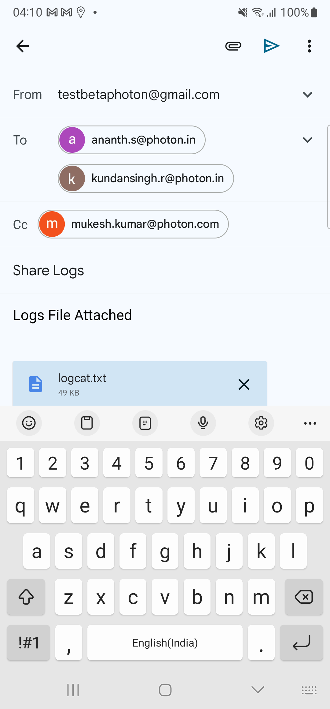Given reset the appStep skippedThen Verify the Cookie page elementsStep skippedAnd Click Accept all button in the cookie pageStep skippedThen user validates tutorial screenStep skippedWhen user tap on next buttonStep skippedThen Validate second screenStep skippedWhen user tap on next buttonStep skippedThen Validate third screenStep skippedAnd user clicks on GET STARTED buttonStep skippedThen Validate the welcome pop-up messageStep skippedFailVerify the app is displaying the privacy options on the Settings screen as disabled for Google signed in userGiven reset the appstepDefinitions.Hook.afterEachStep(io.cucumber.java.Scenario)9a9f8c35-6579-4a99-804e-7f3d44d280f3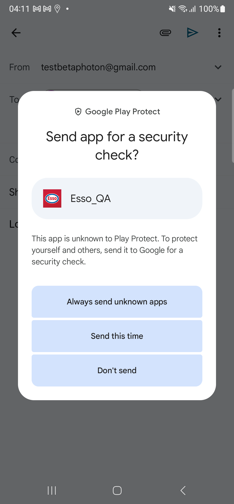Then Verify the Cookie page elementsStep skippedWhen the user taps on the Reject all button in the privacy screenStep skippedAnd user taps on SKIP button in the tutorial screenStep skippedThen user naviagtes to the NLID screen after tutorial screensStep skippedAnd user is on NLID screenStep skippedAnd user taps on "Google" icon in the NLIDStep skippedAnd I enter SSO login details for "Google"Step skippedWhen user is on NLID screenStep skippedAnd user taps on More button in tab barStep skippedAnd user taps on settings button in more screenStep skippedThen user verifies the Functional and Analytics options are disabledStep skippedFailThe app should display the updated site check-in tutorial screen #1 (Google User.)When user is on NLID screenAnd user taps on More button in tab barstepDefinitions.Hook.afterEachStep(io.cucumber.java.Scenario)When user navigates to Account screenStep skippedAnd user verifies the Account title in the account sectionStep skippedAnd user taps on delete your account in account screenStep skippedAnd user verifies the delete your account screenStep skippedAnd user taps on delete in delete your account screenStep skippedAnd user verifies the delete your account popupStep skippedAnd tap on Ok ButtonStep skippedThen user verifies the app redirects back to NLIDStep skippedAnd user taps on "Google" icon in the NLIDStep skippedAnd I enter SSO login details for "Google"Step skippedThen user registers the SSO user by accepting the terms and conditions screenStep skippedWhen user enters four digit PIN in the Set up PIN screen in registration flowStep skippedWhen user tap on continue button in Set up PIN screen in registration flowStep skippedAnd user tap on ok button in Set up PIN screen in registration flowStep skippedWhen user is on NLID screenStep skippedAnd user taps on More button in tab barStep skippedWhen user navigates to Account screenStep skippedAnd user tap on add card button in accountStep skippedWhen user taps on Credit Debit card in Add Payment Method screenStep skippedThen user lands on Add debit/credit card screenStep skippedThen enter name of the cardStep skippedThen enter "5232 0500 0019 0003" card numberStep skippedThen enter expiry dateStep skippedThen enter CVVStep skippedThen enter postal codeStep skippedThen enter address line1Step skippedThen enter Address line2Step skippedThen enter cityStep skippedThen check consent checkboxStep skippedThen user clicks on continue button in Card screenStep skippedWhen user tap done button to navigate verify screen "Payment method added successfully"Step skippedWhen user tap on payment method added successfully screen continue buttonStep skippedAnd user verifies the account pageStep skippedThen user taps on Station FinderStep skippedWhen user taps on Continue button in Let us locate nearest station screenStep skippedThen system displays the popup with the contentsStep skippedWhen user taps on any of the following using the App buttonStep skippedThen the system navigates to the Esso Station Finder ScreenStep skippedAnd user navigated to NLID ScreenStep skippedWhen user taps on start button in LIDStep skippedThen user validates the first tutorial screen during fuellingStep skippedFailVerify whether System is able to display Copy Text, as user taps on Continue buttonGiven reset the appstepDefinitions.Hook.afterEachStep(io.cucumber.java.Scenario)Then verify that Welcome screen screen is displayedStep skippedAnd user taps on SKIP button in the tutorial screenStep skippedThen user naviagtes to the NLID screen after tutorial screensStep skippedThen user taps on Station FinderStep skippedWhen user verify the location permission screen and bypass the screenStep skippedThen system displays the popup with the contentsStep skippedThen user taps on any of the following using the App buttonStep skippedFailCheck whether System is able to perform below mentioned actions if, user has tapped on Always allow/Only while using the app button a.Enable the location access for the appGiven reset the appstepDefinitions.Hook.afterEachStep(io.cucumber.java.Scenario)Then verify that Welcome screen screen is displayedStep skippedAnd user taps on SKIP button in the tutorial screenStep skippedThen user naviagtes to the NLID screen after tutorial screensStep skippedThen user taps on Station FinderStep skippedWhen user verify the Location Permission screenStep skippedWhen user taps on Continue button in Let us locate nearest station screenStep skippedThen system displays the popup with the contentsStep skippedWhen user taps on any of the following using the App buttonStep skippedThen the system navigates to the Esso Station Finder ScreenStep skippedFailInstall & Launch : Install& Launch Esso app Launch Screen 3 UI and Alignment and animationGiven reset the appstepDefinitions.Hook.afterEachStep(io.cucumber.java.Scenario)Then user validates tutorial screenStep skippedWhen user tap on next buttonStep skippedThen Validate second screenStep skippedWhen user tap on next buttonStep skippedThen Validate third screenStep skippedAnd user clicks on GET STARTED buttonStep skippedThen user naviagtes to the NLID screen after tutorial screensStep skippedFailVerify 'PROFILE COMPLETION AT XX%' button with an increment of 10% for 'Location Services' task is completedWhen user log out from the app if logged instepDefinitions.Hook.afterEachStep(io.cucumber.java.Scenario)When user taps on register button from Login screenStep skippedThen user should be navigated to Manual Register screenStep skippedThen enter First NameStep skippedThen enter Last NameStep skippedThen enter Email address as "chibisakkrava.d+"Step skippedThen enter passwordStep skippedAnd confirm passwordStep skippedThen click the check box for acceptStep skippedWhen click on continue button from register screenStep skippedWhen user tap on Skip buttonStep skippedThen the system should display Skip warning popupStep skippedWhen user tap on Skip anywayStep skippedWhen user enters four digit PIN in the Set up PIN screen in registration flowStep skippedWhen user tap on continue button in Set up PIN screen in registration flowStep skippedAnd user tap on ok button in Set up PIN screen in registration flowStep skippedThen app to dismiss the popup and navigate the user to LID after reviewStep skippedAnd user taps on the complete profileStep skippedThen user verifies permission settings in the Complete your profile screenStep skippedWhen user taps on location button in the complete profile screenStep skippedWhen user verify the location permission screen and bypass the screenStep skippedThen system displays the popup with the contentsStep skippedWhen user taps on any of the following using the App buttonStep skippedWhen user taps on Continue button in Allow Location screenStep skippedThen user verifies permission settings in the Complete your profile screenStep skippedWhen user taps on location button in the complete profile screenStep skippedAnd user verifies the completed pop up message and clicks ok buttonStep skippedAnd user taps on back and navigates to LIDStep skippedThen user verifies the progress in the LIDStep skippedFailInstall& Launch Esso app Launch 1 Screen UI and Alignment and animationGiven reset the appstepDefinitions.Hook.afterEachStep(io.cucumber.java.Scenario)Then verify that Welcome screen screen is displayedStep skippedAnd user taps on SKIP button in the tutorial screenStep skippedThen user naviagtes to the NLID screen after tutorial screensStep skippedFailInstall& Launch Esso app Launch Screen 2 UI and Alignment and animationGiven reset the appstepDefinitions.Hook.afterEachStep(io.cucumber.java.Scenario)Then verify that Welcome screen screen is displayed and Pump in welcome screenStep skippedAnd Verify Pay securely from your car screen displayedStep skippedAnd user taps on SKIP button in the tutorial screenStep skippedThen user naviagtes to the NLID screen after tutorial screensStep skippedFailCheck whether System should not to display distance and other details for Fuel Finder button if user has not given location access for the app and distance should be calculated from the London locationWhen user is on NLID screenThen user taps on Station FinderstepDefinitions.Hook.afterEachStep(io.cucumber.java.Scenario)When user verify the location permission screen and bypass the screenStep skippedThen system displays the popup with the contents and tap don't allowStep skippedThen system should display the location access for the appStep skippedAnd verify whether the system navigate back to the fuel finder screenStep skippedWhen user enters search term in station finderStep skippedWhen user tap on list viewStep skippedThen user selects a station from the listStep skippedThen user taps on GOT IT buttonStep skippedThen verify user is in the Station details screenStep skippedThen user verify whether the distance is not presentStep skippedFailInstall & Launch : Install& Launch Esso app Launch Screen 3 UI and Alignment and animationGiven reset the appstepDefinitions.Hook.afterEachStep(io.cucumber.java.Scenario)Then user validates tutorial screenStep skippedWhen user tap on next buttonStep skippedThen Validate second screenStep skippedWhen user tap on next buttonStep skippedThen Validate third screenStep skippedWhen user taps on Get Started button in the tutorial screenStep skippedThen user naviagtes to the NLID screen after tutorial screensStep skippedFailVerify the app is displaying a 'Reject All' button on the Privacy screen during 1st time app launchGiven reset the appstepDefinitions.Hook.afterEachStep(io.cucumber.java.Scenario)Then Verify the Cookie page elementsStep skippedAnd user validates whether the Reject all button is present in the privacy screenStep skippedFailVerify the app is allowing the user to reject all the privacy optionsWhen the user taps on the Reject all button in the privacy screenstepDefinitions.Hook.afterEachStep(io.cucumber.java.Scenario)And user taps on SKIP button in the tutorial screenStep skippedThen user naviagtes to the NLID screen after tutorial screensStep skippedAnd user is on NLID screenStep skippedAnd user taps on More button in tab barStep skippedAnd user taps on settings button in more screenStep skippedThen user verifies the Functional and Analytics options are disabledStep skippedFailCheck whether System is able to display any reference to Nectar in Filters, Services and FacilitiesWhen user is on NLID screenWhen user taps on register button from Login screenstepDefinitions.Hook.afterEachStep(io.cucumber.java.Scenario)Then user should be navigated to Manual Register screenStep skippedThen enter First NameStep skippedThen enter Last NameStep skippedThen enter Email address as "chibisakkrava.d+"Step skippedThen enter passwordStep skippedAnd confirm passwordStep skippedThen click the check box for acceptStep skippedWhen click on continue button from register screenStep skippedWhen user tap on Skip buttonStep skippedThen the system should display Skip warning popupStep skippedWhen user tap on Skip anywayStep skippedWhen user enters four digit PIN in the Set up PIN screen in registration flowStep skippedWhen user tap on continue button in Set up PIN screen in registration flowStep skippedAnd user tap on ok button in Set up PIN screen in registration flowStep skippedThen app to dismiss the popup and navigate the user to LID after reviewStep skippedThen user taps on Station FinderStep skippedWhen user verify the location permission screen and bypass the screenStep skippedWhen user taps on any of the following using the App buttonStep skippedWhen user taps on Continue button in Allow Location screenStep skippedWhen user tap on filter iconStep skippedThen Verify the app display icons next to all available services and facilitiesStep skippedAnd verify whether the system displays reference to nectarStep skippedFailVerify the app is displaying the privacy options on the Settings screen as disabled for manual userAnd user is on NLID screenAnd user taps on More button in tab barstepDefinitions.Hook.afterEachStep(io.cucumber.java.Scenario)And user taps on settings button in more screenStep skippedThen user verifies the Functional and Analytics options are disabledStep skippedFailVerify the app is displaying the privacy options on the Settings screen as disabled for FB userGiven user log out from the app if logged instepDefinitions.Hook.afterEachStep(io.cucumber.java.Scenario)And user taps on "Facebook" icon in the NLIDStep skippedAnd I enter SSO login details for "Facebook"Step skippedWhen user is on NLID screenStep skippedAnd user taps on More button in tab barStep skippedAnd user taps on settings button in more screenStep skippedThen user verifies the Functional and Analytics options are disabledStep skippedFailVerify that the should allow the user to cancel the transaction prior to payment authorisation. (Scan QR code screen)Given user is on NLID screenThen user taps on Station FinderstepDefinitions.Hook.afterEachStep(io.cucumber.java.Scenario)When user verify the location permission screen and bypass the screenStep skippedThen system displays the popup with the contents and tap don't allowStep skippedThen system should display the location access for the appStep skippedAnd verify whether the system navigate back to the fuel finder screenStep skippedThen Click on fuel tabStep skippedWhen user taps on start button in LIDStep skippedWhen user taps on cancel button in the bottom of the screenStep skippedThen user validates the cancel transaction popupStep skippedWhen user taps on cancel trasaction button in the cancel transaction popupStep skippedThen user navigates back to the LID screenStep skippedFailVerify that the application should not cancel the transaction (Scan QR code screen)Given user is on NLID screenWhen user taps on start button in LIDstepDefinitions.Hook.afterEachStep(io.cucumber.java.Scenario)When user taps on cancel button in the bottom of the screenStep skippedThen user validates the cancel transaction popupStep skippedWhen user taps on close button in the cancel transaction popupStep skippedThen Verify user is navigated to Scan QR Code screenStep skippedFailVerify the app is displaying the privacy options on the Settings screen as disabled for Linked-In userGiven user log out from the app if logged instepDefinitions.Hook.afterEachStep(io.cucumber.java.Scenario)And user taps on "LinkedIn" icon in the NLIDStep skippedAnd I enter SSO login details for "LinkedIn"Step skippedWhen user is on NLID screenStep skippedAnd user taps on More button in tab barStep skippedAnd user taps on settings button in more screenStep skippedThen user verifies the Functional and Analytics options are disabledStep skippedFailVerify the app is displaying the privacy options on the Settings screen as disabledAnd user log out from the app if logged instepDefinitions.Hook.afterEachStep(io.cucumber.java.Scenario)And user taps on More button in tab barStep skippedAnd user taps on settings button in more screenStep skippedThen user verifies the Functional and Analytics options are disabledStep skippedFailCheck whether System to convert full Map View into split Map View and List View, if user has tapped on List Stations buttonWhen user is on NLID screenWhen user taps on Station FinderstepDefinitions.Hook.afterEachStep(io.cucumber.java.Scenario)When user enters search term in station finderStep skippedWhen user tap on list viewStep skippedThen verify whether system convert full Map View into split Map View and List View if user has tapped on List Stations buttonStep skippedFailCheck whether system to Get Directions as button , on tapping USER will be navigating to the route map view,Displaying the route to the destination(fuel station)When user is on NLID screenThen user taps on Station FinderstepDefinitions.Hook.afterEachStep(io.cucumber.java.Scenario)When user enters search term in station finderStep skippedWhen user tap on list viewStep skippedThen user selects a station from the listStep skippedThen user taps on GOT IT buttonStep skippedThen verify user is in the Station details screenStep skippedWhen user taps on Get Directions ButtonStep skippedThen user navigates to the route map viewStep skippedFailCheck whether system to search for given keyword and load the station listing based on keyword entered by the user as user taps on Search button from keyboardWhen user is on NLID screenWhen user taps on Station FinderstepDefinitions.Hook.afterEachStep(io.cucumber.java.Scenario)When user enters search term in station finderStep skippedAnd user tap on list viewStep skippedThen verify whether System is able to get the consolidated list of all available fueling stations with complete detailsStep skippedFailCheck whether System able to display the map view after applying the filterWhen user is on NLID screenThen user taps on Station FinderstepDefinitions.Hook.afterEachStep(io.cucumber.java.Scenario)When user tap on filter iconStep skippedThen Verify the System is able to display the following components as part of Filter By screenStep skippedWhen taps on any of the services and facilitiesStep skippedThen verify if a tick mark is displayed next to the selected servicesStep skippedAnd verify the change in Apply Filter buttonStep skippedWhen user clicks on Apply filter buttonStep skippedThen the system navigates to the Esso Station Finder ScreenStep skippedFailCheck whether System to display Opening Hours details in Station Details screenWhen user is on NLID screenThen user taps on Station FinderstepDefinitions.Hook.afterEachStep(io.cucumber.java.Scenario)When user enters search term in station finderStep skippedWhen user tap on list viewStep skippedThen user selects a station from the listStep skippedThen verify user is in the Station details screenStep skippedAnd check whether System displays Opening Hours details in Station Details screenStep skippedFailCheck whether System show results based on entered City on the map view as well as the list view(search field will accept alphabets and numbers)When user is on NLID screenThen user taps on Station FinderstepDefinitions.Hook.afterEachStep(io.cucumber.java.Scenario)Then the system navigates to the Esso Station Finder ScreenStep skippedWhen user enters search term in station finderStep skippedWhen user tap on list viewStep skippedThen check whether System show results based on entered city on the map as well as list viewStep skippedFailCheck whether logged in user should see the station distance in miles for each station in the list stationsWhen user is on NLID screenAnd close the modal popupWhen user taps on Station FinderstepDefinitions.Hook.afterEachStep(io.cucumber.java.Scenario)Then the system navigates to the Esso Station Finder ScreenStep skippedWhen user clicks on the search field in the Esso Station Finder ScreenStep skippedWhen user enters search term in station finderStep skippedThen verify if the Mobile pay stations is selected by defaultStep skippedWhen user tap on list viewStep skippedThen verify whether System is able to get the consolidated list of all available fueling stations with complete detailsStep skippedAnd user verify the app display the direct distance of the stations from device locationStep skippedFailCheck whether Non logged in user should see icons next to each service & facilities available in the respective stationWhen user log out from the app if logged instepDefinitions.Hook.afterEachStep(io.cucumber.java.Scenario)When user taps on Station FinderStep skippedThen the system navigates to the Esso Station Finder ScreenStep skippedWhen user clicks on the search field in the Esso Station Finder ScreenStep skippedWhen user enters search term in station finderStep skippedThen verify if the Mobile pay stations is selected by defaultStep skippedWhen user tap on list viewStep skippedThen verify whether System is able to get the consolidated list of all available fueling stations with complete detailsStep skippedAnd user selects a station from the listStep skippedThen verify user is in the Station details screenStep skippedThen verify the app display icons next to all available services and facilities in the respective stationStep skippedFailCheck whether the system displays the available stations when user navigates to station finder maps in under 3 seconds.Given reset the appstepDefinitions.Hook.afterEachStep(io.cucumber.java.Scenario)Then verify that Welcome screen screen is displayedStep skippedAnd user taps on SKIP button in the tutorial screenStep skippedThen user naviagtes to the NLID screen after tutorial screensStep skippedThen user taps on Station FinderStep skippedWhen user verify the location permission screen and bypass the screenStep skippedWhen user taps on any of the following using the App buttonStep skippedThen check the map is displayed in the station finder screenStep skippedThen Check whether multiple stations are displayed in clusterStep skippedFailVerify the user should able to display the Analytics & Performance section with a checkbox.Given reset the appstepDefinitions.Hook.afterEachStep(io.cucumber.java.Scenario)Then user should redirect to Data Privacy landing page screenStep skippedWhen user taps on manage optionsStep skippedThen user should redirect to Manage your cookie settings screenStep skippedThen user should view title as Analytics & Performance for the analytics sectionStep skippedThen user should see Analytics & Performance checkbox for the analytics sectionStep skippedThen user should see the copy text as the content in the Analytics & Performance sectionStep skippedFailVerify the user should able to unselect/select the analytics check box.When user taps on manage optionsstepDefinitions.Hook.afterEachStep(io.cucumber.java.Scenario)Then user should redirect to Manage your cookie settings screenStep skippedThen user should view title as Analytics & Performance for the analytics sectionStep skippedThen user should see Analytics & Performance checkbox for the analytics sectionStep skippedThen user should be able to select Analytics & Performance checkboxStep skippedThen user should be able to unselect Analytics & Performance checkboxStep skippedFailVerify the user should able to display the Functional section with a checkbox.Given user taps on manage optionsstepDefinitions.Hook.afterEachStep(io.cucumber.java.Scenario)Then user should redirect to Manage your cookie settings screenStep skippedThen user should view title as Functional for the Functional sectionStep skippedThen user should see Functional checkbox for the Functional sectionStep skippedThen user should see the copy text as the content in the Functional sectionStep skippedFailVerify the user should able to unselect/select the Functional check box.Given user taps on manage optionsstepDefinitions.Hook.afterEachStep(io.cucumber.java.Scenario)Then user should redirect to Manage your cookie settings screenStep skippedThen user should view title as Functional for the Functional sectionStep skippedThen user should see Functional checkbox for the Functional sectionStep skippedThen user should be able to select Functional checkboxStep skippedThen user should be able to unselect Functional checkboxStep skippedFailVerify the user should able to navigate back to the Data Privacy landing page screenGiven reset the appstepDefinitions.Hook.afterEachStep(io.cucumber.java.Scenario)Then user should redirect to Data Privacy landing page screenStep skippedWhen user taps on manage optionsStep skippedThen user should redirect to Manage your cookie settings screenStep skippedWhen user taps back on manage your cookie settings screenStep skippedFailVerify the user should retain the previous selection made by the user on the ‘MANAGE OPTIONS' screen.When user taps on manage optionsstepDefinitions.Hook.afterEachStep(io.cucumber.java.Scenario)Then user should redirect to Manage your cookie settings screenStep skippedWhen user should be able to select Analytics & Performance checkboxStep skippedWhen user should be able to select Functional checkboxStep skippedWhen user taps back on manage your cookie settings screenStep skippedWhen user taps on manage optionsStep skippedThen App should show the selected options retainedStep skippedFailVerify the user should able to accept the user privacy settings for Analytics & Performance/Functional from the ‘MANAGE OPTIONS' screen.When user taps on manage optionsstepDefinitions.Hook.afterEachStep(io.cucumber.java.Scenario)Then user should redirect to Manage your cookie settings screenStep skippedWhen user should be able to select Analytics & Performance checkboxStep skippedWhen user should be able to select Functional checkboxStep skippedWhen user taps on confirm on manage your cookie settings screenStep skippedThen user should redirected to tutorial screenStep skippedFailVerify for user privacy policy selection in settings screenGiven reset the appstepDefinitions.Hook.afterEachStep(io.cucumber.java.Scenario)Then application should display cookie settingStep skippedThen application should display Accept All buttonStep skippedThen application should display Reject All buttonStep skippedThen application should display Manage Options buttonStep skippedWhen user taps on Accept All buttonStep skippedWhen user tap on next buttonStep skippedThen Validate second screenStep skippedWhen user tap on next buttonStep skippedThen Validate third screenStep skippedWhen user taps on Get Started button in the tutorial screenStep skippedThen user allows notificationStep skippedThen click on OK button on NLIDStep skippedAnd user taps on More button in tab barStep skippedAnd user taps on settings button in more screenStep skippedThen app should display Location ServicesStep skippedThen app should display NotificationsStep skippedThen app should display Camera AccessStep skippedThen app should display Analytics and PerformanceStep skippedThen app should display FunctionalStep skippedFailVerify for the Analytics & Performance section under Cookie Settings in settings screenGiven reset the appstepDefinitions.Hook.afterEachStep(io.cucumber.java.Scenario)Then application should display cookie settingStep skippedThen application should display Accept All buttonStep skippedThen application should display Reject All buttonStep skippedThen application should display Manage Options buttonStep skippedWhen user taps on Accept All buttonStep skippedWhen user tap on next buttonStep skippedThen Validate second screenStep skippedWhen user tap on next buttonStep skippedThen Validate third screenStep skippedWhen user taps on Get Started button in the tutorial screenStep skippedThen user allows notificationStep skippedThen click on OK button on NLIDStep skippedAnd user taps on More button in tab barStep skippedAnd user taps on settings button in more screenStep skippedThen app should display Location ServicesStep skippedThen app should display NotificationsStep skippedThen app should display Camera AccessStep skippedThen app should display Analytics and PerformanceStep skippedFailVerify for the Functional section under Cookie Settings in settings screenGiven reset the appstepDefinitions.Hook.afterEachStep(io.cucumber.java.Scenario)Then application should display cookie settingStep skippedThen application should display Accept All buttonStep skippedThen application should display Reject All buttonStep skippedThen application should display Manage Options buttonStep skippedWhen user taps on Accept All buttonStep skippedWhen user tap on next buttonStep skippedThen Validate second screenStep skippedWhen user tap on next buttonStep skippedThen Validate third screenStep skippedWhen user taps on Get Started button in the tutorial screenStep skippedThen user allows notificationStep skippedThen click on OK button on NLIDStep skippedAnd user taps on More button in tab barStep skippedAnd user taps on settings button in more screenStep skippedThen app should display Location ServicesStep skippedThen app should display NotificationsStep skippedThen app should display Camera AccessStep skippedThen app should display FunctionalStep skippedFailVerify the user should able to allow accept the user privacy settings for Analytics & Performance from the ‘Setting' screen.Given reset the appstepDefinitions.Hook.afterEachStep(io.cucumber.java.Scenario)Then application should display cookie settingStep skippedThen application should display Accept All buttonStep skippedThen application should display Reject All buttonStep skippedThen application should display Manage Options buttonStep skippedWhen user taps on Accept All buttonStep skippedWhen user tap on next buttonStep skippedThen Validate second screenStep skippedWhen user tap on next buttonStep skippedThen Validate third screenStep skippedWhen user taps on Get Started button in the tutorial screenStep skippedThen user allows notificationStep skippedThen click on OK button on NLIDStep skippedAnd user taps on More button in tab barStep skippedAnd user taps on settings button in more screenStep skippedThen app should display Location ServicesStep skippedThen app should display NotificationsStep skippedThen app should display Camera AccessStep skippedThen app should display Analytics and PerformanceStep skippedThen user toggles Analytics & Performance to allowStep skippedFailVerify the user should able to allow accept the user privacy settings for Functional from the ‚ÄòSetting' screen.Given reset the appstepDefinitions.Hook.afterEachStep(io.cucumber.java.Scenario)Then application should display cookie settingStep skippedThen application should display Accept All buttonStep skippedThen application should display Reject All buttonStep skippedThen application should display Manage Options buttonStep skippedWhen user taps on Accept All buttonStep skippedWhen user tap on next buttonStep skippedThen Validate second screenStep skippedWhen user tap on next buttonStep skippedThen Validate third screenStep skippedWhen user taps on Get Started button in the tutorial screenStep skippedThen user allows notificationStep skippedThen click on OK button on NLIDStep skippedAnd user taps on More button in tab barStep skippedAnd user taps on settings button in more screenStep skippedThen app should display Location ServicesStep skippedThen app should display NotificationsStep skippedThen app should display Camera AccessStep skippedThen app should display FunctionalStep skippedThen user toggles Functional to allowStep skippedFailVerify the user should able to decline accept the user privacy settings for Analytics & Performance from the ‘Setting' screen.Given reset the appstepDefinitions.Hook.afterEachStep(io.cucumber.java.Scenario)Then application should display cookie settingStep skippedThen application should display Accept All buttonStep skippedThen application should display Reject All buttonStep skippedThen application should display Manage Options buttonStep skippedWhen user taps on Accept All buttonStep skippedWhen user tap on next buttonStep skippedThen Validate second screenStep skippedWhen user tap on next buttonStep skippedThen Validate third screenStep skippedWhen user taps on Get Started button in the tutorial screenStep skippedThen user allows notificationStep skippedThen click on OK button on NLIDStep skippedAnd user taps on More button in tab barStep skippedAnd user taps on settings button in more screenStep skippedThen app should display Location ServicesStep skippedThen app should display NotificationsStep skippedThen app should display Camera AccessStep skippedThen app should display Analytics and PerformanceStep skippedThen user toggles Analytics & Performance to declineStep skippedFailVerify the user should able to decline accept the user privacy settings for Functional from the ‚ÄòSetting' screen.Given reset the appstepDefinitions.Hook.afterEachStep(io.cucumber.java.Scenario)Then application should display cookie settingStep skippedThen application should display Accept All buttonStep skippedThen application should display Reject All buttonStep skippedThen application should display Manage Options buttonStep skippedWhen user taps on Accept All buttonStep skippedWhen user tap on next buttonStep skippedThen Validate second screenStep skippedWhen user tap on next buttonStep skippedThen Validate third screenStep skippedWhen user taps on Get Started button in the tutorial screenStep skippedThen user allows notificationStep skippedThen click on OK button on NLIDStep skippedAnd user taps on More button in tab barStep skippedAnd user taps on settings button in more screenStep skippedThen app should display Location ServicesStep skippedThen app should display NotificationsStep skippedThen app should display Camera AccessStep skippedThen app should display FunctionalStep skippedThen user toggles Functional to declineStep skipped
-
java.lang.AssertionError
73 tests
java.lang.AssertionError
73 failedStatus Timestamp TestName Fail 22:39:59 pm Then Verify the mail is sent NonLoggedInDashboard.Check whether System navigates user to send link.Then Verify the mail is sentFail 22:54:52 pm When user verifies the broadcast banner NonLoggedInDashboard.Check whether the user is able to verify he don't see the account details from NLID.When user verifies the broadcast bannerFail 23:20:48 pm Then tap on add nectar card from account screen Offers.Account : Account screen UI and Alignment ,Before adding Nectar Card.Then tap on add nectar card from account screenFail 23:26:22 pm And user clicks on Login Icon Offers.Accounts - "Add Nectar card" and Verify the Card.And user clicks on Login IconFail 23:31:25 pm Then Verify the Nectar Card points in LID screen Offers.Esso Daisy Ph2 : Verify the Nectar points balance and offer banner on LID screen.Then Verify the Nectar Card points in LID screenFail 23:43:18 pm When user taps on start button in LID Offers.Verify the app should be able to go back to the entry point screen when the user selects the “Cancel and return to Esso” or “back/cancel” link. >Transaction complete > Verify Nectar card added.When user taps on start button in LIDFail 23:51:05 pm And tap on Verify Nectar button in offers Screen Offers.Verify the app should be able to go back to the entry point screen when the user selects the “Cancel and return to Esso” or “back/cancel” link. >Offer > Nectar card added - Verify.And tap on Verify Nectar button in offers ScreenFail 00:22:30 am When user taps on start button in LID PayOutside.Transaction Complete Screen Displays Verify your Nectar card to get exclusive Esso rewards when Card is not verified and card is verified.When user taps on start button in LIDFail 00:23:58 am When user taps on start button in LID PayOutside.Complete the Fuelling transaction with Nectar card is verified and verify the Transaction complete screen.When user taps on start button in LIDFail 00:25:25 am When user taps on start button in LID PayOutside.Complete the Fuelling transaction and verify the Transaction Details screen.When user taps on start button in LIDFail 00:26:52 am When user taps on start button in LID PayOutside.Verify whether the user is able to see the view link in Transaction Details screen.When user taps on start button in LIDFail 00:30:11 am When user taps on start button in LID PayOutside.Verify whether the system is able to make service call and display authorization screen.When user taps on start button in LIDFail 00:31:39 am When user taps on start button in LID PayOutside.Verify whether the system is able to display loader while authorization is in progress.When user taps on start button in LIDFail 00:34:51 am When user taps on start button in LID PayOutside.Manual user - The app should display not display last 4 digits of the card number used in a COF(Master card) transaction on the Transaction complete screen.When user taps on start button in LIDFail 00:36:34 am Then user clicks on edit in the added payment method without phone and other payment PayOutside.Verify if the user is able to see the updated LID variation with the Add Payment Method’ button (Manual Login user).Then user clicks on edit in the added payment method without phone and other paymentFail 00:42:48 am And user verifies the account page PayOutside.Manual user - Verify whether app displaying ‘Google Pay’ as an available payment method in Add Payment Method screen.And user verifies the account pageFail 00:44:23 am And user taps on add payment button present in Lid screen PayOutside.Manual user - Verify whether app displaying ‘Google Pay’ as an available payment method in Add Payment Method screen.And user taps on add payment button present in Lid screenFail 00:45:55 am And user verifies the account page PayOutside.Verify the app is displaying the "GPay" payment button.And user verifies the account pageFail 00:47:44 am And user verifies the account page PayOutside.Manual user -See whether app displaying Google Pay as payment method in the Account screen.And user verifies the account pageFail 00:51:20 am And user verifies the account page PayOutside.Manual user -Verify whether App displaying the google pay already linked pop-up to the user.And user verifies the account pageFail 00:52:55 am When user taps on start button in LID PayOutside.Verify the app is displaying Google Pay as the selected payment method on the Confirm Payment screen (Site Check-In).When user taps on start button in LIDFail 00:54:23 am When user taps on start button in LID PayOutside.Verify the app is displaying Google Pay as the selected payment method on the Confirm Payment screen when Pump is changed.When user taps on start button in LIDFail 00:55:50 am When user taps on start button in LID PayOutside.Verify the app is displaying Google Pay as the selected payment method on the Confirm Payment screen when MFA is changed.When user taps on start button in LIDFail 00:57:50 am When user taps on start button in LID PayOutside.Verify the app is displaying Google Pay as a "Selected payment method" on the "Payment Details" screen.When user taps on start button in LIDFail 00:59:18 am When user taps on start button in LID PayOutside.Manual user - Verify the app is displaying Google Pay as the 1st payment method.When user taps on start button in LIDFail 01:00:47 am When user taps on start button in LID PayOutside.Verify the app is allowing the user to cancel the Google Pay payment.When user taps on start button in LIDFail 01:04:50 am When user taps on start button in LID PayOutside.Verify app should display a static message “Don’t lift the nozzle just yet.“ (Manual Registered User - Site CheckIn).When user taps on start button in LIDFail 01:06:53 am When user taps on start button in LID PayOutside.Verify app should display a static message “You can lift the nozzle now.“ (Manual Registered User - Site CheckIn).When user taps on start button in LIDFail 01:08:22 am When user taps on start button in LID PayOutside.Verify that system should able to display the ‘Check you’ve paid before leaving' pop-up on start fueling screen. (site checkin).When user taps on start button in LIDFail 01:09:54 am When user taps on start button in LID PayOutside.Check if user is able to close the pop up manually if they want to by selecting 'ok' on the pop up window of Drive Off in Login flow.When user taps on start button in LIDFail 01:13:05 am And user taps on More button in tab bar PayOutside.Add and verify nectar card from Payment details screen.And user taps on More button in tab barFail 01:17:37 am When user taps on start button in LID PayOutside.Verify whether the system is able to cancel the transaction when the user taps on cancel option.When user taps on start button in LIDFail 01:19:04 am When user taps on start button in LID PayOutside.Verify whether the user is able to see the following elements on the Transaction summary screen.When user taps on start button in LIDFail 01:32:25 am And User Tap Edit card button with mobile number PaymentMethod.Check whether the system should allow user to delete 'Default' 'credit card'..And User Tap Edit card button with mobile numberFail 01:37:53 am And user taps on the complete profile ProfileCompletion.Verify if system mark the task as completed when user has already selected the receipts and marketing checkbox.And user taps on the complete profileFail 01:39:52 am And user taps on the complete profile ProfileCompletion.Verify that system should not display the ‘Maximum Fuelling Amount’ task on the 'Complete Your Profile' screen.And user taps on the complete profileFail 01:41:51 am And user taps on the complete profile ProfileCompletion.Verify that system should display the updated list of tasks in the 'Complete Your Profile' screen ..And user taps on the complete profileFail 01:46:20 am And user taps on the complete profile ProfileCompletion.Verify that system should be able to see 50% profile completion on LID.And user taps on the complete profileFail 01:48:19 am And user taps on the complete profile ProfileCompletion.Verify that system should be able to see 70% profile completion on LID.And user taps on the complete profileFail 01:50:15 am And user taps on the complete profile ProfileCompletion.Verify whether application is not displaying add mobile number task in manual Profile completion Screen.And user taps on the complete profileFail 02:09:41 am And user taps on the complete profile ProfileCompletion.Verify if user is able to navigate to the ‘Add Payment Method’ screen from Complete your profile screen.And user taps on the complete profileFail 02:11:40 am And user taps on the complete profile ProfileCompletion.Manual user - Verify whether app displaying ‘Google Pay’ as an available payment method in Add Payment Method screen- From Complete your profile.And user taps on the complete profileFail 02:18:41 am And user taps on the complete profile ProfileCompletion.Check Whether System not displays the tick mark on not completed task in list.And user taps on the complete profileFail 02:20:40 am Then user verifies the circular indicator in the LID ProfileCompletion.Check Whether System does not displays the circular indicator.Then user verifies the circular indicator in the LIDFail 02:29:35 am And user taps on the complete profile ProfileCompletion.Check Whether System displays the Already completed pop up by clicking the completed task in list.And user taps on the complete profileFail 02:34:21 am Then user clicks on edit in the pin without phone SSO.Verify if SSO Linked in based Esso app user navigate to 'Forgot PIN' screen to trigger a reset PIN email.Then user clicks on edit in the pin without phoneFail 02:43:24 am Then user clicks on edit in the pin without phone SSO.Verify if SSO Facebook based Esso app user navigate to 'Forgot PIN' screen to trigger a reset PIN email.Then user clicks on edit in the pin without phoneFail 02:44:51 am When user taps on start button in LID SSO.Check Whether System displays the confirmation for the transaction.When user taps on start button in LIDFail 03:32:34 am Then verify if the Mobile pay stations is selected by default StationFinder.Check whether system to navigate user back to Fuel Finder screen.Then verify if the Mobile pay stations is selected by defaultFail 03:34:51 am And user tap on list view StationFinder.Check whether System is able to get the consolidated list of all available fueling stations with complete details.And user tap on list viewFail 03:36:59 am When user tap on list view StationFinder.Check whether System to take the USER to the station detail screen for a mobile pay enabled station if USER taps on the icon for mobile pay enabled station.When user tap on list viewFail 03:41:16 am When user tap on list view StationFinder.Check whether System is able to load below mentioned details for fuel station list view in the following order.When user tap on list viewFail 03:49:41 am When user tap on list view StationFinder.Check whether System to take the USER to the station detail screen for a not mobile pay enabled station, if USER taps on the icon for non-mobile pay enabled station..When user tap on list viewFail 03:51:57 am When user tap on list view StationFinder.Check whether System to display Service and Facilities details in Station Details screen.When user tap on list viewFail 04:11:48 am And user taps on More button in tab bar UKRegressionFeatures.The app should display the updated site check-in tutorial screen #1 (Google User.).And user taps on More button in tab barFail 04:12:53 am When user log out from the app if logged in UKRegressionFeatures.Verify 'PROFILE COMPLETION AT XX%' button with an increment of 10% for 'Location Services' task is completed.When user log out from the app if logged inFail 04:14:01 am Then user taps on Station Finder UKRegressionFeatures.Check whether System should not to display distance and other details for Fuel Finder button if user has not given location access for the app and distance should be calculated from the London location.Then user taps on Station FinderFail 04:14:59 am When the user taps on the Reject all button in the privacy screen UKRegressionFeatures.Verify the app is allowing the user to reject all the privacy options.When the user taps on the Reject all button in the privacy screenFail 04:15:15 am When user taps on register button from Login screen UKRegressionFeatures.Check whether System is able to display any reference to Nectar in Filters, Services and Facilities.When user taps on register button from Login screenFail 04:15:31 am And user taps on More button in tab bar UKRegressionFeatures.Verify the app is displaying the privacy options on the Settings screen as disabled for manual user.And user taps on More button in tab barFail 04:15:47 am Given user log out from the app if logged in UKRegressionFeatures.Verify the app is displaying the privacy options on the Settings screen as disabled for FB user.Given user log out from the app if logged inFail 04:16:23 am Then user taps on Station Finder UKRegressionFeatures.Verify that the should allow the user to cancel the transaction prior to payment authorisation. (Scan QR code screen).Then user taps on Station FinderFail 04:16:49 am When user taps on start button in LID UKRegressionFeatures.Verify that the application should not cancel the transaction (Scan QR code screen).When user taps on start button in LIDFail 04:17:05 am Given user log out from the app if logged in UKRegressionFeatures.Verify the app is displaying the privacy options on the Settings screen as disabled for Linked-In user.Given user log out from the app if logged inFail 04:17:41 am And user log out from the app if logged in UKRegressionFeatures.Verify the app is displaying the privacy options on the Settings screen as disabled.And user log out from the app if logged inFail 04:18:17 am When user taps on Station Finder UKRegressionFeatures.Check whether System to convert full Map View into split Map View and List View, if user has tapped on List Stations button.When user taps on Station FinderFail 04:18:44 am Then user taps on Station Finder UKRegressionFeatures.Check whether system to Get Directions as button , on tapping USER will be navigating to the route map view,Displaying the route to the destination(fuel station).Then user taps on Station FinderFail 04:19:10 am When user taps on Station Finder UKRegressionFeatures.Check whether system to search for given keyword and load the station listing based on keyword entered by the user as user taps on Search button from keyboard.When user taps on Station FinderFail 04:19:36 am Then user taps on Station Finder UKRegressionFeatures.Check whether System able to display the map view after applying the filter.Then user taps on Station FinderFail 04:20:03 am Then user taps on Station Finder UKRegressionFeatures.Check whether System to display Opening Hours details in Station Details screen.Then user taps on Station FinderFail 04:20:29 am Then user taps on Station Finder UKRegressionFeatures.Check whether System show results based on entered City on the map view as well as the list view(search field will accept alphabets and numbers).Then user taps on Station FinderFail 04:21:12 am When user taps on Station Finder UKRegressionFeatures.Check whether logged in user should see the station distance in miles for each station in the list stations.When user taps on Station FinderFail 04:21:38 am When user log out from the app if logged in UKRegressionFeatures.Check whether Non logged in user should see icons next to each service & facilities available in the respective station.When user log out from the app if logged in -
org.openqa.selenium.NoSuchSessionException
63 tests
org.openqa.selenium.NoSuchSessionException
63 failedStatus Timestamp TestName Fail 04:11:48 am stepDefinitions.Hook.afterEachStep(io.cucumber.java.Scenario) UKRegressionFeatures.The app should display the updated site check-in tutorial screen #1 (Google User.).stepDefinitions.Hook.afterEachStep(io.cucumber.java.Scenario)Fail 04:12:05 am Given reset the app UKRegressionFeatures.Verify whether System is able to display Copy Text, as user taps on Continue button.Given reset the appFail 04:12:05 am stepDefinitions.Hook.afterEachStep(io.cucumber.java.Scenario) UKRegressionFeatures.Verify whether System is able to display Copy Text, as user taps on Continue button.stepDefinitions.Hook.afterEachStep(io.cucumber.java.Scenario)Fail 04:12:21 am Given reset the app UKRegressionFeatures.Check whether System is able to perform below mentioned actions if, user has tapped on Always allow/Only while using the app button a.Enable the location access for the app.Given reset the appFail 04:12:21 am stepDefinitions.Hook.afterEachStep(io.cucumber.java.Scenario) UKRegressionFeatures.Check whether System is able to perform below mentioned actions if, user has tapped on Always allow/Only while using the app button a.Enable the location access for the app.stepDefinitions.Hook.afterEachStep(io.cucumber.java.Scenario)Fail 04:12:37 am Given reset the app UKRegressionFeatures.Install & Launch : Install& Launch Esso app Launch Screen 3 UI and Alignment and animation.Given reset the appFail 04:12:37 am stepDefinitions.Hook.afterEachStep(io.cucumber.java.Scenario) UKRegressionFeatures.Install & Launch : Install& Launch Esso app Launch Screen 3 UI and Alignment and animation.stepDefinitions.Hook.afterEachStep(io.cucumber.java.Scenario)Fail 04:13:13 am stepDefinitions.Hook.afterEachStep(io.cucumber.java.Scenario) UKRegressionFeatures.Verify 'PROFILE COMPLETION AT XX%' button with an increment of 10% for 'Location Services' task is completed.stepDefinitions.Hook.afterEachStep(io.cucumber.java.Scenario)Fail 04:13:29 am Given reset the app UKRegressionFeatures.Install& Launch Esso app Launch 1 Screen UI and Alignment and animation.Given reset the appFail 04:13:29 am stepDefinitions.Hook.afterEachStep(io.cucumber.java.Scenario) UKRegressionFeatures.Install& Launch Esso app Launch 1 Screen UI and Alignment and animation.stepDefinitions.Hook.afterEachStep(io.cucumber.java.Scenario)Fail 04:13:45 am Given reset the app UKRegressionFeatures.Install& Launch Esso app Launch Screen 2 UI and Alignment and animation.Given reset the appFail 04:13:45 am stepDefinitions.Hook.afterEachStep(io.cucumber.java.Scenario) UKRegressionFeatures.Install& Launch Esso app Launch Screen 2 UI and Alignment and animation.stepDefinitions.Hook.afterEachStep(io.cucumber.java.Scenario)Fail 04:14:11 am stepDefinitions.Hook.afterEachStep(io.cucumber.java.Scenario) UKRegressionFeatures.Check whether System should not to display distance and other details for Fuel Finder button if user has not given location access for the app and distance should be calculated from the London location.stepDefinitions.Hook.afterEachStep(io.cucumber.java.Scenario)Fail 04:14:27 am Given reset the app UKRegressionFeatures.Install & Launch : Install& Launch Esso app Launch Screen 3 UI and Alignment and animation.Given reset the appFail 04:14:27 am stepDefinitions.Hook.afterEachStep(io.cucumber.java.Scenario) UKRegressionFeatures.Install & Launch : Install& Launch Esso app Launch Screen 3 UI and Alignment and animation.stepDefinitions.Hook.afterEachStep(io.cucumber.java.Scenario)Fail 04:14:43 am Given reset the app UKRegressionFeatures.Verify the app is displaying a 'Reject All' button on the Privacy screen during 1st time app launch.Given reset the appFail 04:14:43 am stepDefinitions.Hook.afterEachStep(io.cucumber.java.Scenario) UKRegressionFeatures.Verify the app is displaying a 'Reject All' button on the Privacy screen during 1st time app launch.stepDefinitions.Hook.afterEachStep(io.cucumber.java.Scenario)Fail 04:14:59 am stepDefinitions.Hook.afterEachStep(io.cucumber.java.Scenario) UKRegressionFeatures.Verify the app is allowing the user to reject all the privacy options.stepDefinitions.Hook.afterEachStep(io.cucumber.java.Scenario)Fail 04:15:15 am stepDefinitions.Hook.afterEachStep(io.cucumber.java.Scenario) UKRegressionFeatures.Check whether System is able to display any reference to Nectar in Filters, Services and Facilities.stepDefinitions.Hook.afterEachStep(io.cucumber.java.Scenario)Fail 04:15:31 am stepDefinitions.Hook.afterEachStep(io.cucumber.java.Scenario) UKRegressionFeatures.Verify the app is displaying the privacy options on the Settings screen as disabled for manual user.stepDefinitions.Hook.afterEachStep(io.cucumber.java.Scenario)Fail 04:16:07 am stepDefinitions.Hook.afterEachStep(io.cucumber.java.Scenario) UKRegressionFeatures.Verify the app is displaying the privacy options on the Settings screen as disabled for FB user.stepDefinitions.Hook.afterEachStep(io.cucumber.java.Scenario)Fail 04:16:33 am stepDefinitions.Hook.afterEachStep(io.cucumber.java.Scenario) UKRegressionFeatures.Verify that the should allow the user to cancel the transaction prior to payment authorisation. (Scan QR code screen).stepDefinitions.Hook.afterEachStep(io.cucumber.java.Scenario)Fail 04:16:49 am stepDefinitions.Hook.afterEachStep(io.cucumber.java.Scenario) UKRegressionFeatures.Verify that the application should not cancel the transaction (Scan QR code screen).stepDefinitions.Hook.afterEachStep(io.cucumber.java.Scenario)Fail 04:17:25 am stepDefinitions.Hook.afterEachStep(io.cucumber.java.Scenario) UKRegressionFeatures.Verify the app is displaying the privacy options on the Settings screen as disabled for Linked-In user.stepDefinitions.Hook.afterEachStep(io.cucumber.java.Scenario)Fail 04:18:01 am stepDefinitions.Hook.afterEachStep(io.cucumber.java.Scenario) UKRegressionFeatures.Verify the app is displaying the privacy options on the Settings screen as disabled.stepDefinitions.Hook.afterEachStep(io.cucumber.java.Scenario)Fail 04:18:27 am stepDefinitions.Hook.afterEachStep(io.cucumber.java.Scenario) UKRegressionFeatures.Check whether System to convert full Map View into split Map View and List View, if user has tapped on List Stations button.stepDefinitions.Hook.afterEachStep(io.cucumber.java.Scenario)Fail 04:18:54 am stepDefinitions.Hook.afterEachStep(io.cucumber.java.Scenario) UKRegressionFeatures.Check whether system to Get Directions as button , on tapping USER will be navigating to the route map view,Displaying the route to the destination(fuel station).stepDefinitions.Hook.afterEachStep(io.cucumber.java.Scenario)Fail 04:19:20 am stepDefinitions.Hook.afterEachStep(io.cucumber.java.Scenario) UKRegressionFeatures.Check whether system to search for given keyword and load the station listing based on keyword entered by the user as user taps on Search button from keyboard.stepDefinitions.Hook.afterEachStep(io.cucumber.java.Scenario)Fail 04:19:46 am stepDefinitions.Hook.afterEachStep(io.cucumber.java.Scenario) UKRegressionFeatures.Check whether System able to display the map view after applying the filter.stepDefinitions.Hook.afterEachStep(io.cucumber.java.Scenario)Fail 04:20:13 am stepDefinitions.Hook.afterEachStep(io.cucumber.java.Scenario) UKRegressionFeatures.Check whether System to display Opening Hours details in Station Details screen.stepDefinitions.Hook.afterEachStep(io.cucumber.java.Scenario)Fail 04:20:39 am stepDefinitions.Hook.afterEachStep(io.cucumber.java.Scenario) UKRegressionFeatures.Check whether System show results based on entered City on the map view as well as the list view(search field will accept alphabets and numbers).stepDefinitions.Hook.afterEachStep(io.cucumber.java.Scenario)Fail 04:21:22 am stepDefinitions.Hook.afterEachStep(io.cucumber.java.Scenario) UKRegressionFeatures.Check whether logged in user should see the station distance in miles for each station in the list stations.stepDefinitions.Hook.afterEachStep(io.cucumber.java.Scenario)Fail 04:21:58 am stepDefinitions.Hook.afterEachStep(io.cucumber.java.Scenario) UKRegressionFeatures.Check whether Non logged in user should see icons next to each service & facilities available in the respective station.stepDefinitions.Hook.afterEachStep(io.cucumber.java.Scenario)Fail 04:22:14 am Given reset the app UKRegressionFeatures.Check whether the system displays the available stations when user navigates to station finder maps in under 3 seconds..Given reset the appFail 04:22:14 am stepDefinitions.Hook.afterEachStep(io.cucumber.java.Scenario) UKRegressionFeatures.Check whether the system displays the available stations when user navigates to station finder maps in under 3 seconds..stepDefinitions.Hook.afterEachStep(io.cucumber.java.Scenario)Fail 04:22:30 am Given reset the app UKRegressionFeatures.Verify the user should able to display the Analytics & Performance section with a checkbox..Given reset the appFail 04:22:30 am stepDefinitions.Hook.afterEachStep(io.cucumber.java.Scenario) UKRegressionFeatures.Verify the user should able to display the Analytics & Performance section with a checkbox..stepDefinitions.Hook.afterEachStep(io.cucumber.java.Scenario)Fail 04:22:46 am When user taps on manage options UKRegressionFeatures.Verify the user should able to unselect/select the analytics check box..When user taps on manage optionsFail 04:22:46 am stepDefinitions.Hook.afterEachStep(io.cucumber.java.Scenario) UKRegressionFeatures.Verify the user should able to unselect/select the analytics check box..stepDefinitions.Hook.afterEachStep(io.cucumber.java.Scenario)Fail 04:23:02 am Given user taps on manage options UKRegressionFeatures.Verify the user should able to display the Functional section with a checkbox..Given user taps on manage optionsFail 04:23:02 am stepDefinitions.Hook.afterEachStep(io.cucumber.java.Scenario) UKRegressionFeatures.Verify the user should able to display the Functional section with a checkbox..stepDefinitions.Hook.afterEachStep(io.cucumber.java.Scenario)Fail 04:23:18 am Given user taps on manage options UKRegressionFeatures.Verify the user should able to unselect/select the Functional check box..Given user taps on manage optionsFail 04:23:18 am stepDefinitions.Hook.afterEachStep(io.cucumber.java.Scenario) UKRegressionFeatures.Verify the user should able to unselect/select the Functional check box..stepDefinitions.Hook.afterEachStep(io.cucumber.java.Scenario)Fail 04:23:34 am Given reset the app UKRegressionFeatures.Verify the user should able to navigate back to the Data Privacy landing page screen.Given reset the appFail 04:23:34 am stepDefinitions.Hook.afterEachStep(io.cucumber.java.Scenario) UKRegressionFeatures.Verify the user should able to navigate back to the Data Privacy landing page screen.stepDefinitions.Hook.afterEachStep(io.cucumber.java.Scenario)Fail 04:23:50 am When user taps on manage options UKRegressionFeatures.Verify the user should retain the previous selection made by the user on the ‘MANAGE OPTIONS' screen..When user taps on manage optionsFail 04:23:50 am stepDefinitions.Hook.afterEachStep(io.cucumber.java.Scenario) UKRegressionFeatures.Verify the user should retain the previous selection made by the user on the ‘MANAGE OPTIONS' screen..stepDefinitions.Hook.afterEachStep(io.cucumber.java.Scenario)Fail 04:24:06 am When user taps on manage options UKRegressionFeatures.Verify the user should able to accept the user privacy settings for Analytics & Performance/Functional from the ‘MANAGE OPTIONS' screen..When user taps on manage optionsFail 04:24:06 am stepDefinitions.Hook.afterEachStep(io.cucumber.java.Scenario) UKRegressionFeatures.Verify the user should able to accept the user privacy settings for Analytics & Performance/Functional from the ‘MANAGE OPTIONS' screen..stepDefinitions.Hook.afterEachStep(io.cucumber.java.Scenario)Fail 04:24:22 am Given reset the app UKRegressionFeatures.Verify for user privacy policy selection in settings screen.Given reset the appFail 04:24:22 am stepDefinitions.Hook.afterEachStep(io.cucumber.java.Scenario) UKRegressionFeatures.Verify for user privacy policy selection in settings screen.stepDefinitions.Hook.afterEachStep(io.cucumber.java.Scenario)Fail 04:24:38 am Given reset the app UKRegressionFeatures.Verify for the Analytics & Performance section under Cookie Settings in settings screen.Given reset the appFail 04:24:38 am stepDefinitions.Hook.afterEachStep(io.cucumber.java.Scenario) UKRegressionFeatures.Verify for the Analytics & Performance section under Cookie Settings in settings screen.stepDefinitions.Hook.afterEachStep(io.cucumber.java.Scenario)Fail 04:24:54 am Given reset the app UKRegressionFeatures.Verify for the Functional section under Cookie Settings in settings screen.Given reset the appFail 04:24:54 am stepDefinitions.Hook.afterEachStep(io.cucumber.java.Scenario) UKRegressionFeatures.Verify for the Functional section under Cookie Settings in settings screen.stepDefinitions.Hook.afterEachStep(io.cucumber.java.Scenario)Fail 04:25:11 am Given reset the app UKRegressionFeatures.Verify the user should able to allow accept the user privacy settings for Analytics & Performance from the ‘Setting' screen..Given reset the appFail 04:25:11 am stepDefinitions.Hook.afterEachStep(io.cucumber.java.Scenario) UKRegressionFeatures.Verify the user should able to allow accept the user privacy settings for Analytics & Performance from the ‘Setting' screen..stepDefinitions.Hook.afterEachStep(io.cucumber.java.Scenario)Fail 04:25:27 am Given reset the app UKRegressionFeatures.Verify the user should able to allow accept the user privacy settings for Functional from the ‚ÄòSetting' screen..Given reset the appFail 04:25:27 am stepDefinitions.Hook.afterEachStep(io.cucumber.java.Scenario) UKRegressionFeatures.Verify the user should able to allow accept the user privacy settings for Functional from the ‚ÄòSetting' screen..stepDefinitions.Hook.afterEachStep(io.cucumber.java.Scenario)Fail 04:25:43 am Given reset the app UKRegressionFeatures.Verify the user should able to decline accept the user privacy settings for Analytics & Performance from the ‘Setting' screen..Given reset the appFail 04:25:43 am stepDefinitions.Hook.afterEachStep(io.cucumber.java.Scenario) UKRegressionFeatures.Verify the user should able to decline accept the user privacy settings for Analytics & Performance from the ‘Setting' screen..stepDefinitions.Hook.afterEachStep(io.cucumber.java.Scenario)Fail 04:26:00 am Given reset the app UKRegressionFeatures.Verify the user should able to decline accept the user privacy settings for Functional from the ‚ÄòSetting' screen..Given reset the appFail 04:26:00 am stepDefinitions.Hook.afterEachStep(io.cucumber.java.Scenario) UKRegressionFeatures.Verify the user should able to decline accept the user privacy settings for Functional from the ‚ÄòSetting' screen..stepDefinitions.Hook.afterEachStep(io.cucumber.java.Scenario) -
org.openqa.selenium.InvalidElementStateException
1 tests
org.openqa.selenium.InvalidElementStateException
1 failedStatus Timestamp TestName Fail 04:10:13 am Then user sends the share logs to the "regressioncredentials2" to get the logs UKRegressionFeatures.Check Whether System displays the tutorial screen and clicks ok button in the Non logged in dashboard screen.Then user sends the share logs to the "regressioncredentials2" to get the logs -
org.openqa.selenium.WebDriverException
1 tests
org.openqa.selenium.WebDriverException
1 failedStatus Timestamp TestName Fail 04:10:31 am Given reset the app UKRegressionFeatures.Verify the app is displaying the privacy options on the Settings screen as disabled for Google signed in user.Given reset the app -
org.openqa.selenium.NoSuchElementException
87 tests
org.openqa.selenium.NoSuchElementException
87 failedStatus Timestamp TestName Fail 23:01:18 pm When user log out from the app if logged in NativePassword.Check whether the user is able to Save password for the registered user (Android Specific).When user log out from the app if logged inFail 23:03:50 pm When user log out from the app if logged in NativePassword.Check whether the user is able to Save password for the registered user.When user log out from the app if logged inFail 23:06:21 pm When user log out from the app if logged in NativePassword.Check whether the user is able to see the save password prompt while logging in with unsaved login credentials.When user log out from the app if logged inFail 23:08:52 pm When user log out from the app if logged in NativePassword.Check whether the user is able to Save password for the registered user.When user log out from the app if logged inFail 23:11:24 pm When user log out from the app if logged in NativePassword.Check whether the user is able to view the saved email address on the keyboard.When user log out from the app if logged inFail 23:13:55 pm When user log out from the app if logged in Offers.LID- Add Nectar Card and verify on Registration flow.When user log out from the app if logged inFail 23:19:02 pm And delete added nectar card if exists Offers.Manual User - Verify the Esso app is not displaying the App Assistant in Offer screen (Nectar card not added).And delete added nectar card if existsFail 23:22:52 pm When user log out from the app if logged in Offers.Verify if user is able to see the 'Nectar card added successfully' screen from complete your profile screen.When user log out from the app if logged inFail 23:32:39 pm And Verify that tick mark is displayed on the offers Offers.Esso Daisy Ph2 : Verify the Nectar points balance and offer banner on LID screen.And Verify that tick mark is displayed on the offersFail 23:34:36 pm Then validate nectar card number and point balance in offers screen Offers.Check whether User navigates to Offers screen from tab bar.Then validate nectar card number and point balance in offers screenFail 23:36:13 pm And validate offers displayed in offer screen Offers.Offers- load to card - Terms & Condition pop up by tapping on T&C link.And validate offers displayed in offer screenFail 23:38:19 pm And delete added nectar card if exists Offers.Offers- Load to Card : View the balance point in offers screen 1 When no points are accumulated.And delete added nectar card if existsFail 23:40:04 pm And delete added nectar card if exists Offers.Verify the app should be able to go back to the entry point screen when the user selects the “Cancel and return to Esso” or “back/cancel” link. >Transaction complete > Add and verify nectar card.And delete added nectar card if existsFail 23:41:49 pm And delete added nectar card if exists Offers.Verify the app should be able to go back to the entry point screen when the user selects the “Cancel and return to Esso” or “back/cancel” link. >Account screen >Add and verify nectar card.And delete added nectar card if existsFail 23:45:02 pm And delete added nectar card if exists Offers.Verify the app should be able to go back to the entry point screen when the user selects the “Cancel and return to Esso” or “back/cancel” link. >LID > Add and verify nectar cards (promotion message on LID).And delete added nectar card if existsFail 23:46:47 pm And delete added nectar card if exists Offers.Verify the app should be able to go back to the entry point screen when the user selects the “Cancel and return to Esso” or “back/cancel” link. >Payment details screen > Add and verify nectar card.And delete added nectar card if existsFail 23:48:57 pm Then verify whether See your Nectar balance link is displayed on LID Offers.Verify the app should be able to go back to the entry point screen when the user selects the “Cancel and return to Esso” or “back/cancel” link. >LID > Add and verify nectar cards (promotion message on LID).Then verify whether See your Nectar balance link is displayed on LIDFail 23:52:44 pm And delete added nectar card if exists Offers.Verify the app should be able to go back to the entry point screen when the user selects the “Cancel and return to Esso” or “back/cancel” link. >Offer > Add and verify nectar card.And delete added nectar card if existsFail 23:54:29 pm And delete added nectar card if exists Offers.LID - Add Nectar card (valid nectar card number) from Dashboard screen.And delete added nectar card if existsFail 23:56:14 pm And navigate to the Nectar card section Offers.Offers UI and alignment for all the New offer screen.And navigate to the Nectar card sectionFail 23:58:48 pm And delete added nectar card if exists Offers.Do you have a Nectar card should not be displayed and user navigate to 'Add Nectar Card'.And delete added nectar card if existsFail 00:00:33 am And user verifies Add Nectar card section Offers.Daisy Phase 2 Esso app : From LID add nectar card and verify the nectar card.And user verifies Add Nectar card sectionFail 00:01:22 am Given user log out from the app if logged in Offers.Google Sign In Registration->Verify whether the app marks the profile completion task 'Add Nectar Card' as complete when the user skip/cancel adding the Nectar card from the Complete Your Profile->Add Nectar Card launch screen.Given user log out from the app if logged inFail 00:04:54 am And user verifies the Account title in the account section Offers.Google sign in Registration->Verify whether the app marks the profile completion task 'Add Nectar Card' as complete when the user skip adding the Nectar card from the Complete Your Profile > Add Nectar Card launch screen > Add Nectar Card screen.And user verifies the Account title in the account sectionFail 00:06:26 am And user verifies the Account title in the account section Offers.Google SSO Registration->Verify whether the app marks the profile completion task 'Add Nectar Card' as complete when the user skip adding the Nectar card from Offer Screen >Add Nectar Card screen.And user verifies the Account title in the account sectionFail 00:07:58 am And user verifies the Account title in the account section Offers.Google Signin Registration->Verify whether the app marks the profile completion task 'Add Nectar Card' as complete when the user skip adding the Nectar card from the Offer screen (Add your Nectar card to get exclusive Offers' link)> Add Nectar Card screen.And user verifies the Account title in the account sectionFail 00:09:30 am And user verifies the Account title in the account section Offers.Google Sign In Registration->Verify whether the app marks the profile completion task 'Add Nectar Card' as complete when the user skip/cancel adding the Nectar card from the LID->Add Nectar Card launch screen.And user verifies the Account title in the account sectionFail 00:11:02 am And user verifies the Account title in the account section Offers.Google Sign In Registration->Verify whether the app marks the profile completion task 'Add Nectar Card'as complete when the user skip adding the Nectar card from the LID > Add Nectar Card launch screen > Add Nectar Card screen.And user verifies the Account title in the account sectionFail 00:12:36 am And user verifies the Account title in the account section Offers.Google Sign In Registration->Verify whether the app marks the profile completion task 'Add Nectar Card' as complete when the user skip adding the Nectar card from the Payment details Screen>Add Nectar Card screen.And user verifies the Account title in the account sectionFail 00:14:07 am And user verifies the Account title in the account section Offers.Google Sign in Registration->Verify whether the app marks the profile completion task 'Add Nectar Card' as complete when the user skip adding the Nectar card from the Transaction Complete screen > Do you have a Nectar Card?->Add Nectar Card screen.And user verifies the Account title in the account sectionFail 00:15:39 am And user verifies the Account title in the account section Offers.GoogleSSO Registration->Verify whether the app marks the profile completion task 'Add Nectar Card' as complete when the user skip adding the Nectar card from the Transaction Complete screen > Do you have a Nectar Card?->Add Nectar Card screen>Yes, Add Now.And user verifies the Account title in the account sectionFail 00:16:09 am And user log out from the app if logged in Offers.Verify Account screen UI and Alignment ,after adding Nectar Card.And user log out from the app if logged inFail 00:18:41 am Given user log out from the app if logged in PayOutside.Sprint 2 - Payoutside : Verify Transaction Complete screen for "Added nectar card.. " message.Given user log out from the app if logged inFail 00:28:36 am Then user should opt out for receipts by email checkbox PayOutside.Verify whether the system displays the copy text msg.Then user should opt out for receipts by email checkboxFail 00:33:22 am And delete added nectar card if exists PayOutside.Sprint 2 Pay outside : Complete the fuelling transaction without verifying nectar card and Verify the Transaction complete screen.And delete added nectar card if existsFail 00:37:26 am Given user log out from the app if logged in PayOutside.Verify if the user is able to see the updated LID variation with the Add Payment Method’ button (Manual Login user).Given user log out from the app if logged inFail 00:40:58 am And user tap on add card button in account PayOutside.Manual user - The app should display the last 4 digits of the card number used in a COF(Visa) transaction on the Transaction Details screen.And user tap on add card button in accountFail 00:49:33 am Then Click on Choose Default Card link PayOutside.Manual user -See whether app displaying Google Pay as payment method in the Choose Default method in Account screen.Then Click on Choose Default Card linkFail 01:01:31 am Given user log out from the app if logged in PayOutside.Select your Pump Screen while PayOutside.Given user log out from the app if logged inFail 01:11:36 am And delete added nectar card if exists PayOutside.Add nectar card from Payment details screen after adding nectar card.And delete added nectar card if existsFail 01:15:19 am And navigate to the Nectar card section PayOutside.Verify whether system should display a pop-up on the ‘Confirm payment’ screen when the user taps on the edit button.And navigate to the Nectar card sectionFail 01:19:45 am When user log out from the app if logged in PaymentMethod.Check whether the icons of all app supported credit cards are displayed on Add Payment Method screen. Current supported cards are Visa, Mastercard.When user log out from the app if logged inFail 01:23:17 am Then user tap on add card button in account PaymentMethod.Check whether the user is able to see the following components in user credit card info..Then user tap on add card button in accountFail 01:25:07 am Then user tap on add card button in account PaymentMethod.Check whether the user is able to see the following components on the Payment Card Method screen.Then user tap on add card button in accountFail 01:26:58 am Then user tap on add card button in account PaymentMethod.Check whether the System not to display results, if user enters invalid post code and taps on Done..Then user tap on add card button in accountFail 01:28:48 am Then user tap on add card button in account PaymentMethod.Check whether the System able to close the info overlay as the USER taps on ‘GOT IT’ button.Then user tap on add card button in accountFail 01:30:38 am Then Click on Choose Default Card link PaymentMethod.Check whether the user is able to choose the default credit card for payment by tapping on 'Choose Default Card'..Then Click on Choose Default Card linkFail 01:33:01 am When user log out from the app if logged in ProfileCompletion.Check Whether system completes "Add Nectar" task also circular indicator is increased to ten percent.When user log out from the app if logged inFail 01:36:18 am Then verify the updated esso logo is displayed ProfileCompletion.Manual user - Verify the user is able to see the updated Esso logo in the "LID" screen.Then verify the updated esso logo is displayedFail 01:43:04 am When user log out from the app if logged in ProfileCompletion.Verify that system should be able to see 40% profile completion on LID.When user log out from the app if logged inFail 01:51:25 am Given user log out from the app if logged in ProfileCompletion.Verify whether application is not displaying add mobile number task in Linked-in Profile completion Screen.Given user log out from the app if logged inFail 01:53:55 am When user log out from the app if logged in ProfileCompletion.Check Whether the system displays "Complete your profile" Screen.When user log out from the app if logged inFail 01:56:25 am When user log out from the app if logged in ProfileCompletion.Check Whether the system displays email resend confirmation pop-up.When user log out from the app if logged inFail 01:58:56 am When user log out from the app if logged in ProfileCompletion.Check Whether system resends the verification email.When user log out from the app if logged inFail 02:01:27 am When user log out from the app if logged in ProfileCompletion.Check Whether System verifies the Start Fueling pop up.When user log out from the app if logged inFail 02:03:57 am When user log out from the app if logged in ProfileCompletion.Check Whether System shows tick mark for default apps completed while registration.When user log out from the app if logged inFail 02:06:28 am When user log out from the app if logged in ProfileCompletion.Check Whether system skips the Nectar verification and navigates back to Account screen.When user log out from the app if logged inFail 02:12:53 am When user log out from the app if logged in ProfileCompletion.Check Whether system continues the Nectar verification and navigates back to Offer Screen.When user log out from the app if logged inFail 02:15:24 am When user log out from the app if logged in ProfileCompletion.Check Whether the system completes "Add Nectar" task.When user log out from the app if logged inFail 02:21:17 am When user log out from the app if logged in ProfileCompletion.Check Whether system completes the Add Payment in Account Screen and navigates back.When user log out from the app if logged inFail 02:23:48 am When user log out from the app if logged in ProfileCompletion.Check Whether System displays the nectar points.When user log out from the app if logged inFail 02:26:18 am When user log out from the app if logged in ProfileCompletion.Check Whether system completes any task on the complete profile list.When user log out from the app if logged inFail 02:30:48 am Given user log out from the app if logged in SSO.Verify if SSO Linked In based Esso app user navigate to 'Forgot PIN' screen to trigger a reset PIN email from confirm payment screen.Given user log out from the app if logged inFail 02:36:02 am And user verifies the Account title in the account section SSO.App should allow the LinkedIn user to register again with the deleted account.And user verifies the Account title in the account sectionFail 02:36:32 am Given user log out from the app if logged in SSO.Verify whether application is not displaying add mobile number task in Linked-in registraion flow.Given user log out from the app if logged inFail 02:39:04 am Then verify the updated esso logo is displayed SSO.Linked-In user - Verify the user is able to see the updated Esso logo in the "LID" screen.Then verify the updated esso logo is displayedFail 02:39:52 am Given user log out from the app if logged in SSO.Verify if SSO Facebook based Esso app user navigate to 'Forgot PIN' screen to trigger a reset PIN email from confirm payment screen.Given user log out from the app if logged inFail 02:46:33 am And user verifies the Account title in the account section SSO.App should allow the Facebook user to register again with the deleted account.And user verifies the Account title in the account sectionFail 02:47:51 am And user validates the add payment link present in LID screen SSO.SSO User - Verify whether app is displaying the Credit/Debit Card info icon pop-up on the Add Payment Method screen.And user validates the add payment link present in LID screenFail 02:49:13 am Then user tap on add card button in account SSO.Dismiss the Identify Confirmation prompt as per ‘Requirement 1.e’ if the user has tapped on the button(Social) > Social Login).Then user tap on add card button in accountFail 02:51:03 am Then user tap on add card button in account SSO.System to display ‘Custom UI’ if the challenge flow is issued for the COF onboarding(Registration (Social) > Social Login).Then user tap on add card button in accountFail 02:52:11 am Then verify the updated esso logo is displayed SSO.FB user - Verify the user is able to see the updated Esso logo in the "LID" screen.Then verify the updated esso logo is displayedFail 02:52:59 am Given user log out from the app if logged in SSO.Verify whether application is not displaying add mobile number task in Linked-in Profile completion on LID.Given user log out from the app if logged inFail 02:55:30 am When user log out from the app if logged in StationFinder.Ensure that the system to allow user to view the station markers.When user log out from the app if logged inFail 02:57:59 am When user log out from the app if logged in StationFinder.Check whether logged-in user should be able to see icons next to the services & facilities available in the ‘Filter by’ screen..When user log out from the app if logged inFail 03:04:00 am When user log out from the app if logged in StationFinder.Check whether system not able to update the filters for Find Esso Stations screen, if user has tapped on Cancel button.When user log out from the app if logged inFail 03:06:30 am When user log out from the app if logged in StationFinder.Check whether System show results based on entered Postcode on the map view as well as the list view(search field will accept alphabets and numbers).When user log out from the app if logged inFail 03:09:00 am When user log out from the app if logged in StationFinder.Verify system to display the available stations when user navigates to station finder maps in under 3 seconds..When user log out from the app if logged inFail 03:11:31 am When user log out from the app if logged in StationFinder.Check whether System able to display Welcome to (Fuel Station Name) when the user is at the Fuel station.When user log out from the app if logged inFail 03:15:03 am And delete added nectar card if exists StationFinder.Check whether logged in user should see icons next to each service & facilities available in the respective station.And delete added nectar card if existsFail 03:23:11 am And check the stations are displayed in the station finder screen StationFinder.Check whether the system displays all fueling station sites in the visible map area matching Station list.And check the stations are displayed in the station finder screenFail 03:44:55 am And validate offers displayed in offer screen StationFinder.Verify whether View offer loads Non load to card offer in the Offers section.And validate offers displayed in offer screenFail 03:52:35 am When user log out from the app if logged in StationFinder.Verify Non logged in user should see the station distance in miles for each station in the list stations.When user log out from the app if logged inFail 04:01:35 am When user log out from the app if logged in UKRegressionFeatures.Check whether System to display PayPal Account.When user log out from the app if logged inFail 04:05:07 am And delete added nectar card if exists UKRegressionFeatures.LID- Nectar Card not verified /Vaulted to the account.And delete added nectar card if existsFail 04:06:51 am And user verifies the Account title in the account section UKRegressionFeatures.App should allow the Manual user to register again with the deleted account.And user verifies the Account title in the account sectionFail 04:07:20 am When user log out from the app if logged in UKRegressionFeatures.Check whether System to display copy text XX as prompt.When user log out from the app if logged in -
org.openqa.selenium.TimeoutException
1 tests
org.openqa.selenium.TimeoutException
1 failedStatus Timestamp TestName Fail 23:27:59 pm Then verify nectar points comma seperator on offers screen Offers.Daisy Ph2 -Sprint 2: Verify the Point balance on offers screen.Then verify nectar points comma seperator on offers screen
-
@P11270-11498
1 tests
@P11270-11498
1 passedStatus Timestamp TestName Pass 03:19:05 am Check whether logged-in user should be able to see icons next to the services & facilities available in the ‘Filter by’ screen. StationFinder.Check whether logged-in user should be able to see icons next to the services & facilities available in the ‘Filter by’ screen. -
@PayOutside
35 tests
@PayOutside
35 failedStatus Timestamp TestName Fail 00:18:30 am Sprint 2 - Payoutside : Verify Transaction Complete screen for "Added nectar card.. " message PayOutside.Sprint 2 - Payoutside : Verify Transaction Complete screen for "Added nectar card.. " messageFail 00:21:01 am Transaction Complete Screen Displays Verify your Nectar card to get exclusive Esso rewards when Card is not verified and card is verified PayOutside.Transaction Complete Screen Displays Verify your Nectar card to get exclusive Esso rewards when Card is not verified and card is verifiedFail 00:23:01 am Complete the Fuelling transaction with Nectar card is verified and verify the Transaction complete screen PayOutside.Complete the Fuelling transaction with Nectar card is verified and verify the Transaction complete screenFail 00:24:28 am Complete the Fuelling transaction and verify the Transaction Details screen PayOutside.Complete the Fuelling transaction and verify the Transaction Details screenFail 00:25:55 am Verify whether the user is able to see the view link in Transaction Details screen PayOutside.Verify whether the user is able to see the view link in Transaction Details screenFail 00:27:23 am Verify whether the system displays the copy text msg PayOutside.Verify whether the system displays the copy text msgFail 00:29:14 am Verify whether the system is able to make service call and display authorization screen PayOutside.Verify whether the system is able to make service call and display authorization screenFail 00:30:41 am Verify whether the system is able to display loader while authorization is in progress PayOutside.Verify whether the system is able to display loader while authorization is in progressFail 00:32:09 am Sprint 2 Pay outside : Complete the fuelling transaction without verifying nectar card and Verify the Transaction complete screen PayOutside.Sprint 2 Pay outside : Complete the fuelling transaction without verifying nectar card and Verify the Transaction complete screenFail 00:33:54 am Manual user - The app should display not display last 4 digits of the card number used in a COF(Master card) transaction on the Transaction complete screen PayOutside.Manual user - The app should display not display last 4 digits of the card number used in a COF(Master card) transaction on the Transaction complete screenFail 00:35:22 am Verify if the user is able to see the updated LID variation with the Add Payment Method’ button (Manual Login user) PayOutside.Verify if the user is able to see the updated LID variation with the Add Payment Method’ button (Manual Login user)Fail 00:37:14 am Verify if the user is able to see the updated LID variation with the Add Payment Method’ button (Manual Login user) PayOutside.Verify if the user is able to see the updated LID variation with the Add Payment Method’ button (Manual Login user)Fail 00:39:45 am Manual user - The app should display the last 4 digits of the card number used in a COF(Visa) transaction on the Transaction Details screen PayOutside.Manual user - The app should display the last 4 digits of the card number used in a COF(Visa) transaction on the Transaction Details screenFail 00:41:35 am Manual user - Verify whether app displaying ‘Google Pay’ as an available payment method in Add Payment Method screen PayOutside.Manual user - Verify whether app displaying ‘Google Pay’ as an available payment method in Add Payment Method screenFail 00:43:25 am Manual user - Verify whether app displaying ‘Google Pay’ as an available payment method in Add Payment Method screen PayOutside.Manual user - Verify whether app displaying ‘Google Pay’ as an available payment method in Add Payment Method screenFail 00:44:42 am Verify the app is displaying the "GPay" payment button PayOutside.Verify the app is displaying the "GPay" payment buttonFail 00:46:31 am Manual user -See whether app displaying Google Pay as payment method in the Account screen PayOutside.Manual user -See whether app displaying Google Pay as payment method in the Account screenFail 00:48:20 am Manual user -See whether app displaying Google Pay as payment method in the Choose Default method in Account screen PayOutside.Manual user -See whether app displaying Google Pay as payment method in the Choose Default method in Account screenFail 00:50:07 am Manual user -Verify whether App displaying the google pay already linked pop-up to the user PayOutside.Manual user -Verify whether App displaying the google pay already linked pop-up to the userFail 00:51:57 am Verify the app is displaying Google Pay as the selected payment method on the Confirm Payment screen (Site Check-In) PayOutside.Verify the app is displaying Google Pay as the selected payment method on the Confirm Payment screen (Site Check-In)Fail 00:53:25 am Verify the app is displaying Google Pay as the selected payment method on the Confirm Payment screen when Pump is changed PayOutside.Verify the app is displaying Google Pay as the selected payment method on the Confirm Payment screen when Pump is changedFail 00:54:53 am Verify the app is displaying Google Pay as the selected payment method on the Confirm Payment screen when MFA is changed PayOutside.Verify the app is displaying Google Pay as the selected payment method on the Confirm Payment screen when MFA is changedFail 00:56:21 am Verify the app is displaying Google Pay as a "Selected payment method" on the "Payment Details" screen PayOutside.Verify the app is displaying Google Pay as a "Selected payment method" on the "Payment Details" screenFail 00:58:21 am Manual user - Verify the app is displaying Google Pay as the 1st payment method PayOutside.Manual user - Verify the app is displaying Google Pay as the 1st payment methodFail 00:59:48 am Verify the app is allowing the user to cancel the Google Pay payment PayOutside.Verify the app is allowing the user to cancel the Google Pay paymentFail 01:01:17 am Select your Pump Screen while PayOutside PayOutside.Select your Pump Screen while PayOutsideFail 01:03:49 am Verify app should display a static message “Don’t lift the nozzle just yet.“ (Manual Registered User - Site CheckIn) PayOutside.Verify app should display a static message “Don’t lift the nozzle just yet.“ (Manual Registered User - Site CheckIn)Fail 01:05:20 am Verify app should display a static message “You can lift the nozzle now.“ (Manual Registered User - Site CheckIn) PayOutside.Verify app should display a static message “You can lift the nozzle now.“ (Manual Registered User - Site CheckIn)Fail 01:07:23 am Verify that system should able to display the ‘Check you’ve paid before leaving' pop-up on start fueling screen. (site checkin) PayOutside.Verify that system should able to display the ‘Check you’ve paid before leaving' pop-up on start fueling screen. (site checkin)Fail 01:08:52 am Check if user is able to close the pop up manually if they want to by selecting 'ok' on the pop up window of Drive Off in Login flow PayOutside.Check if user is able to close the pop up manually if they want to by selecting 'ok' on the pop up window of Drive Off in Login flowFail 01:10:24 am Add nectar card from Payment details screen after adding nectar card PayOutside.Add nectar card from Payment details screen after adding nectar cardFail 01:12:08 am Add and verify nectar card from Payment details screen PayOutside.Add and verify nectar card from Payment details screenFail 01:14:07 am Verify whether system should display a pop-up on the ‘Confirm payment’ screen when the user taps on the edit button PayOutside.Verify whether system should display a pop-up on the ‘Confirm payment’ screen when the user taps on the edit buttonFail 01:16:08 am Verify whether the system is able to cancel the transaction when the user taps on cancel option PayOutside.Verify whether the system is able to cancel the transaction when the user taps on cancel optionFail 01:18:07 am Verify whether the user is able to see the following elements on the Transaction summary screen PayOutside.Verify whether the user is able to see the following elements on the Transaction summary screen -
@AndroidRegressionSet2
220 tests
@AndroidRegressionSet2
35 passed 185 failedStatus Timestamp TestName Pass 22:36:43 pm Check whether System navigates user to login page NonLoggedInDashboard.Check whether System navigates user to login pageFail 22:39:03 pm Check whether System navigates user to send link NonLoggedInDashboard.Check whether System navigates user to send linkPass 22:40:07 pm Verify the system should display the updated copy text of the ‘Don’t Have An Account? Sign Up!' NonLoggedInDashboard.Verify the system should display the updated copy text of the ‘Don’t Have An Account? Sign Up!'Pass 22:40:58 pm Verify the system should be navigated to the forgot password screen when the user taps on the 'Forgot Login?' button. NonLoggedInDashboard.Verify the system should be navigated to the forgot password screen when the user taps on the 'Forgot Login?' button.Pass 22:41:49 pm Verify the system should display the updated copy text of the ‘Forgot your password?' NonLoggedInDashboard.Verify the system should display the updated copy text of the ‘Forgot your password?'Pass 22:42:40 pm Check Whether System is able to navigate login screen NonLoggedInDashboard.Check Whether System is able to navigate login screenPass 22:43:05 pm Check Whether System is able to navigate login screen using device back button NonLoggedInDashboard.Check Whether System is able to navigate login screen using device back buttonPass 22:43:58 pm Manual User - Verify the Esso app is not displaying the App Assistant in Support Centre screen (In NLID) NonLoggedInDashboard.Manual User - Verify the Esso app is not displaying the App Assistant in Support Centre screen (In NLID)Pass 22:45:27 pm Manual User - Verify the Esso app is not displaying the App Assistant in Station Finder default map view(In NLID) NonLoggedInDashboard.Manual User - Verify the Esso app is not displaying the App Assistant in Station Finder default map view(In NLID)Pass 22:47:19 pm Manual User - Verify the Esso app is not displaying the App Assistant in Station Finder list view(In NLID) NonLoggedInDashboard.Manual User - Verify the Esso app is not displaying the App Assistant in Station Finder list view(In NLID)Pass 22:49:16 pm Manual User - Verify the Esso app is not displaying the App Assistant in More screen(in NLID) NonLoggedInDashboard.Manual User - Verify the Esso app is not displaying the App Assistant in More screen(in NLID)Pass 22:50:43 pm Manual User - Verify the Esso app is not displaying the App Assistant in NLID state NonLoggedInDashboard.Manual User - Verify the Esso app is not displaying the App Assistant in NLID statePass 22:51:57 pm Verify that Whether the app is displaying 3 dots button after the Google SSO button on NLID NonLoggedInDashboard.Verify that Whether the app is displaying 3 dots button after the Google SSO button on NLIDPass 22:52:52 pm Verify that Whether the app should close the custom pop up when user taps on the 'X' button NonLoggedInDashboard.Verify that Whether the app should close the custom pop up when user taps on the 'X' buttonFail 22:53:46 pm Check whether the user is able to verify he don't see the account details from NLID NonLoggedInDashboard.Check whether the user is able to verify he don't see the account details from NLIDPass 22:55:07 pm Verify the user is able to see the updated Esso logo in the "NLID" screen NonLoggedInDashboard.Verify the user is able to see the updated Esso logo in the "NLID" screenPass 22:55:58 pm Verify the user is able to see the updated Esso logo in the "NLID" screen NonLoggedInDashboard.Verify the user is able to see the updated Esso logo in the "NLID" screenPass 22:56:50 pm Verify that Whether the app is displaying a custom popup with the list of available SSO authentication methods NonLoggedInDashboard.Verify that Whether the app is displaying a custom popup with the list of available SSO authentication methodsPass 22:57:18 pm Verify that whether app dismiss the broadcast banner on NLID without the user interaction NonLoggedInDashboard.Verify that whether app dismiss the broadcast banner on NLID without the user interactionPass 22:58:19 pm Verify that the app should not display the ‘Esso App Feedback’ section on the 'Support Centre' screen. (NLID) NonLoggedInDashboard.Verify that the app should not display the ‘Esso App Feedback’ section on the 'Support Centre' screen. (NLID)Pass 22:58:59 pm Check whether the user is able to see the save password prompt while logging in with unsaved login credentials NativePassword.Check whether the user is able to see the save password prompt while logging in with unsaved login credentialsFail 23:01:07 pm Check whether the user is able to Save password for the registered user (Android Specific) NativePassword.Check whether the user is able to Save password for the registered user (Android Specific)Fail 23:03:39 pm Check whether the user is able to Save password for the registered user NativePassword.Check whether the user is able to Save password for the registered userFail 23:06:10 pm Check whether the user is able to see the save password prompt while logging in with unsaved login credentials NativePassword.Check whether the user is able to see the save password prompt while logging in with unsaved login credentialsFail 23:08:41 pm Check whether the user is able to Save password for the registered user NativePassword.Check whether the user is able to Save password for the registered userFail 23:11:13 pm Check whether the user is able to view the saved email address on the keyboard NativePassword.Check whether the user is able to view the saved email address on the keyboardFail 23:13:44 pm LID- Add Nectar Card and verify on Registration flow Offers.LID- Add Nectar Card and verify on Registration flowPass 23:16:14 pm Manual User - Verify the Esso app is not displaying the App Assistant in Offer screen (Nectar card added and verified) Offers.Manual User - Verify the Esso app is not displaying the App Assistant in Offer screen (Nectar card added and verified)Fail 23:17:50 pm Manual User - Verify the Esso app is not displaying the App Assistant in Offer screen (Nectar card not added) Offers.Manual User - Verify the Esso app is not displaying the App Assistant in Offer screen (Nectar card not added)Fail 23:19:34 pm Account : Account screen UI and Alignment ,Before adding Nectar Card Offers.Account : Account screen UI and Alignment ,Before adding Nectar CardPass 23:21:06 pm Manual User - Verify the Esso app is not displaying the App Assistant in Offer screen (Nectar card added but verified) Offers.Manual User - Verify the Esso app is not displaying the App Assistant in Offer screen (Nectar card added but verified)Fail 23:22:41 pm Verify if user is able to see the 'Nectar card added successfully' screen from complete your profile screen Offers.Verify if user is able to see the 'Nectar card added successfully' screen from complete your profile screenFail 23:25:11 pm Accounts - "Add Nectar card" and Verify the Card Offers.Accounts - "Add Nectar card" and Verify the CardFail 23:26:51 pm Daisy Ph2 -Sprint 2: Verify the Point balance on offers screen Offers.Daisy Ph2 -Sprint 2: Verify the Point balance on offers screenPass 23:28:26 pm Station Finder : "Nectar Points" is selected along with one other filters button "APPLY 1 FILTER" should be displayed Offers.Station Finder : "Nectar Points" is selected along with one other filters button "APPLY 1 FILTER" should be displayedFail 23:30:28 pm Esso Daisy Ph2 : Verify the Nectar points balance and offer banner on LID screen Offers.Esso Daisy Ph2 : Verify the Nectar points balance and offer banner on LID screenFail 23:31:41 pm Esso Daisy Ph2 : Verify the Nectar points balance and offer banner on LID screen Offers.Esso Daisy Ph2 : Verify the Nectar points balance and offer banner on LID screenFail 23:33:30 pm Check whether User navigates to Offers screen from tab bar Offers.Check whether User navigates to Offers screen from tab barFail 23:35:08 pm Offers- load to card - Terms & Condition pop up by tapping on T&C link Offers.Offers- load to card - Terms & Condition pop up by tapping on T&C linkFail 23:37:05 pm Offers- Load to Card : View the balance point in offers screen 1 When no points are accumulated Offers.Offers- Load to Card : View the balance point in offers screen 1 When no points are accumulatedFail 23:38:51 pm Verify the app should be able to go back to the entry point screen when the user selects the “Cancel and return to Esso” or “back/cancel” link. >Transaction complete > Add and verify nectar card Offers.Verify the app should be able to go back to the entry point screen when the user selects the “Cancel and return to Esso” or “back/cancel” link. >Transaction complete > Add and verify nectar cardFail 23:40:36 pm Verify the app should be able to go back to the entry point screen when the user selects the “Cancel and return to Esso” or “back/cancel” link. >Account screen >Add and verify nectar card Offers.Verify the app should be able to go back to the entry point screen when the user selects the “Cancel and return to Esso” or “back/cancel” link. >Account screen >Add and verify nectar cardFail 23:42:21 pm Verify the app should be able to go back to the entry point screen when the user selects the “Cancel and return to Esso” or “back/cancel” link. >Transaction complete > Verify Nectar card added Offers.Verify the app should be able to go back to the entry point screen when the user selects the “Cancel and return to Esso” or “back/cancel” link. >Transaction complete > Verify Nectar card addedFail 23:43:48 pm Verify the app should be able to go back to the entry point screen when the user selects the “Cancel and return to Esso” or “back/cancel” link. >LID > Add and verify nectar cards (promotion message on LID) Offers.Verify the app should be able to go back to the entry point screen when the user selects the “Cancel and return to Esso” or “back/cancel” link. >LID > Add and verify nectar cards (promotion message on LID)Fail 23:45:34 pm Verify the app should be able to go back to the entry point screen when the user selects the “Cancel and return to Esso” or “back/cancel” link. >Payment details screen > Add and verify nectar card Offers.Verify the app should be able to go back to the entry point screen when the user selects the “Cancel and return to Esso” or “back/cancel” link. >Payment details screen > Add and verify nectar cardFail 23:47:19 pm Verify the app should be able to go back to the entry point screen when the user selects the “Cancel and return to Esso” or “back/cancel” link. >LID > Add and verify nectar cards (promotion message on LID) Offers.Verify the app should be able to go back to the entry point screen when the user selects the “Cancel and return to Esso” or “back/cancel” link. >LID > Add and verify nectar cards (promotion message on LID)Fail 23:49:24 pm Verify the app should be able to go back to the entry point screen when the user selects the “Cancel and return to Esso” or “back/cancel” link. >Offer > Nectar card added - Verify Offers.Verify the app should be able to go back to the entry point screen when the user selects the “Cancel and return to Esso” or “back/cancel” link. >Offer > Nectar card added - VerifyFail 23:51:31 pm Verify the app should be able to go back to the entry point screen when the user selects the “Cancel and return to Esso” or “back/cancel” link. >Offer > Add and verify nectar card Offers.Verify the app should be able to go back to the entry point screen when the user selects the “Cancel and return to Esso” or “back/cancel” link. >Offer > Add and verify nectar cardFail 23:53:16 pm LID - Add Nectar card (valid nectar card number) from Dashboard screen Offers.LID - Add Nectar card (valid nectar card number) from Dashboard screenFail 23:55:01 pm Offers UI and alignment for all the New offer screen Offers.Offers UI and alignment for all the New offer screenFail 23:57:02 pm Do you have a Nectar card should not be displayed and user navigate to 'Add Nectar Card' Offers.Do you have a Nectar card should not be displayed and user navigate to 'Add Nectar Card'Fail 23:59:20 pm Daisy Phase 2 Esso app : From LID add nectar card and verify the nectar card Offers.Daisy Phase 2 Esso app : From LID add nectar card and verify the nectar cardFail 00:01:11 am Google Sign In Registration->Verify whether the app marks the profile completion task 'Add Nectar Card' as complete when the user skip/cancel adding the Nectar card from the Complete Your Profile->Add Nectar Card launch screen Offers.Google Sign In Registration->Verify whether the app marks the profile completion task 'Add Nectar Card' as complete when the user skip/cancel adding the Nectar card from the Complete Your Profile->Add Nectar Card launch screenFail 00:03:42 am Google sign in Registration->Verify whether the app marks the profile completion task 'Add Nectar Card' as complete when the user skip adding the Nectar card from the Complete Your Profile > Add Nectar Card launch screen > Add Nectar Card screen Offers.Google sign in Registration->Verify whether the app marks the profile completion task 'Add Nectar Card' as complete when the user skip adding the Nectar card from the Complete Your Profile > Add Nectar Card launch screen > Add Nectar Card screenFail 00:05:13 am Google SSO Registration->Verify whether the app marks the profile completion task 'Add Nectar Card' as complete when the user skip adding the Nectar card from Offer Screen >Add Nectar Card screen Offers.Google SSO Registration->Verify whether the app marks the profile completion task 'Add Nectar Card' as complete when the user skip adding the Nectar card from Offer Screen >Add Nectar Card screenFail 00:06:44 am Google Signin Registration->Verify whether the app marks the profile completion task 'Add Nectar Card' as complete when the user skip adding the Nectar card from the Offer screen (Add your Nectar card to get exclusive Offers' link)> Add Nectar Card screen Offers.Google Signin Registration->Verify whether the app marks the profile completion task 'Add Nectar Card' as complete when the user skip adding the Nectar card from the Offer screen (Add your Nectar card to get exclusive Offers' link)> Add Nectar Card screenFail 00:08:17 am Google Sign In Registration->Verify whether the app marks the profile completion task 'Add Nectar Card' as complete when the user skip/cancel adding the Nectar card from the LID->Add Nectar Card launch screen Offers.Google Sign In Registration->Verify whether the app marks the profile completion task 'Add Nectar Card' as complete when the user skip/cancel adding the Nectar card from the LID->Add Nectar Card launch screenFail 00:09:49 am Google Sign In Registration->Verify whether the app marks the profile completion task 'Add Nectar Card'as complete when the user skip adding the Nectar card from the LID > Add Nectar Card launch screen > Add Nectar Card screen Offers.Google Sign In Registration->Verify whether the app marks the profile completion task 'Add Nectar Card'as complete when the user skip adding the Nectar card from the LID > Add Nectar Card launch screen > Add Nectar Card screenFail 00:11:22 am Google Sign In Registration->Verify whether the app marks the profile completion task 'Add Nectar Card' as complete when the user skip adding the Nectar card from the Payment details Screen>Add Nectar Card screen Offers.Google Sign In Registration->Verify whether the app marks the profile completion task 'Add Nectar Card' as complete when the user skip adding the Nectar card from the Payment details Screen>Add Nectar Card screenFail 00:12:55 am Google Sign in Registration->Verify whether the app marks the profile completion task 'Add Nectar Card' as complete when the user skip adding the Nectar card from the Transaction Complete screen > Do you have a Nectar Card?->Add Nectar Card screen Offers.Google Sign in Registration->Verify whether the app marks the profile completion task 'Add Nectar Card' as complete when the user skip adding the Nectar card from the Transaction Complete screen > Do you have a Nectar Card?->Add Nectar Card screenFail 00:14:26 am GoogleSSO Registration->Verify whether the app marks the profile completion task 'Add Nectar Card' as complete when the user skip adding the Nectar card from the Transaction Complete screen > Do you have a Nectar Card?->Add Nectar Card screen>Yes, Add Now Offers.GoogleSSO Registration->Verify whether the app marks the profile completion task 'Add Nectar Card' as complete when the user skip adding the Nectar card from the Transaction Complete screen > Do you have a Nectar Card?->Add Nectar Card screen>Yes, Add NowFail 00:15:58 am Verify Account screen UI and Alignment ,after adding Nectar Card Offers.Verify Account screen UI and Alignment ,after adding Nectar CardFail 00:18:30 am Sprint 2 - Payoutside : Verify Transaction Complete screen for "Added nectar card.. " message PayOutside.Sprint 2 - Payoutside : Verify Transaction Complete screen for "Added nectar card.. " messageFail 00:21:01 am Transaction Complete Screen Displays Verify your Nectar card to get exclusive Esso rewards when Card is not verified and card is verified PayOutside.Transaction Complete Screen Displays Verify your Nectar card to get exclusive Esso rewards when Card is not verified and card is verifiedFail 00:23:01 am Complete the Fuelling transaction with Nectar card is verified and verify the Transaction complete screen PayOutside.Complete the Fuelling transaction with Nectar card is verified and verify the Transaction complete screenFail 00:24:28 am Complete the Fuelling transaction and verify the Transaction Details screen PayOutside.Complete the Fuelling transaction and verify the Transaction Details screenFail 00:25:55 am Verify whether the user is able to see the view link in Transaction Details screen PayOutside.Verify whether the user is able to see the view link in Transaction Details screenFail 00:27:23 am Verify whether the system displays the copy text msg PayOutside.Verify whether the system displays the copy text msgFail 00:29:14 am Verify whether the system is able to make service call and display authorization screen PayOutside.Verify whether the system is able to make service call and display authorization screenFail 00:30:41 am Verify whether the system is able to display loader while authorization is in progress PayOutside.Verify whether the system is able to display loader while authorization is in progressFail 00:32:09 am Sprint 2 Pay outside : Complete the fuelling transaction without verifying nectar card and Verify the Transaction complete screen PayOutside.Sprint 2 Pay outside : Complete the fuelling transaction without verifying nectar card and Verify the Transaction complete screenFail 00:33:54 am Manual user - The app should display not display last 4 digits of the card number used in a COF(Master card) transaction on the Transaction complete screen PayOutside.Manual user - The app should display not display last 4 digits of the card number used in a COF(Master card) transaction on the Transaction complete screenFail 00:35:22 am Verify if the user is able to see the updated LID variation with the Add Payment Method’ button (Manual Login user) PayOutside.Verify if the user is able to see the updated LID variation with the Add Payment Method’ button (Manual Login user)Fail 00:37:14 am Verify if the user is able to see the updated LID variation with the Add Payment Method’ button (Manual Login user) PayOutside.Verify if the user is able to see the updated LID variation with the Add Payment Method’ button (Manual Login user)Fail 00:39:45 am Manual user - The app should display the last 4 digits of the card number used in a COF(Visa) transaction on the Transaction Details screen PayOutside.Manual user - The app should display the last 4 digits of the card number used in a COF(Visa) transaction on the Transaction Details screenFail 00:41:35 am Manual user - Verify whether app displaying ‘Google Pay’ as an available payment method in Add Payment Method screen PayOutside.Manual user - Verify whether app displaying ‘Google Pay’ as an available payment method in Add Payment Method screenFail 00:43:25 am Manual user - Verify whether app displaying ‘Google Pay’ as an available payment method in Add Payment Method screen PayOutside.Manual user - Verify whether app displaying ‘Google Pay’ as an available payment method in Add Payment Method screenFail 00:44:42 am Verify the app is displaying the "GPay" payment button PayOutside.Verify the app is displaying the "GPay" payment buttonFail 00:46:31 am Manual user -See whether app displaying Google Pay as payment method in the Account screen PayOutside.Manual user -See whether app displaying Google Pay as payment method in the Account screenFail 00:48:20 am Manual user -See whether app displaying Google Pay as payment method in the Choose Default method in Account screen PayOutside.Manual user -See whether app displaying Google Pay as payment method in the Choose Default method in Account screenFail 00:50:07 am Manual user -Verify whether App displaying the google pay already linked pop-up to the user PayOutside.Manual user -Verify whether App displaying the google pay already linked pop-up to the userFail 00:51:57 am Verify the app is displaying Google Pay as the selected payment method on the Confirm Payment screen (Site Check-In) PayOutside.Verify the app is displaying Google Pay as the selected payment method on the Confirm Payment screen (Site Check-In)Fail 00:53:25 am Verify the app is displaying Google Pay as the selected payment method on the Confirm Payment screen when Pump is changed PayOutside.Verify the app is displaying Google Pay as the selected payment method on the Confirm Payment screen when Pump is changedFail 00:54:53 am Verify the app is displaying Google Pay as the selected payment method on the Confirm Payment screen when MFA is changed PayOutside.Verify the app is displaying Google Pay as the selected payment method on the Confirm Payment screen when MFA is changedFail 00:56:21 am Verify the app is displaying Google Pay as a "Selected payment method" on the "Payment Details" screen PayOutside.Verify the app is displaying Google Pay as a "Selected payment method" on the "Payment Details" screenFail 00:58:21 am Manual user - Verify the app is displaying Google Pay as the 1st payment method PayOutside.Manual user - Verify the app is displaying Google Pay as the 1st payment methodFail 00:59:48 am Verify the app is allowing the user to cancel the Google Pay payment PayOutside.Verify the app is allowing the user to cancel the Google Pay paymentFail 01:01:17 am Select your Pump Screen while PayOutside PayOutside.Select your Pump Screen while PayOutsideFail 01:03:49 am Verify app should display a static message “Don’t lift the nozzle just yet.“ (Manual Registered User - Site CheckIn) PayOutside.Verify app should display a static message “Don’t lift the nozzle just yet.“ (Manual Registered User - Site CheckIn)Fail 01:05:20 am Verify app should display a static message “You can lift the nozzle now.“ (Manual Registered User - Site CheckIn) PayOutside.Verify app should display a static message “You can lift the nozzle now.“ (Manual Registered User - Site CheckIn)Fail 01:07:23 am Verify that system should able to display the ‘Check you’ve paid before leaving' pop-up on start fueling screen. (site checkin) PayOutside.Verify that system should able to display the ‘Check you’ve paid before leaving' pop-up on start fueling screen. (site checkin)Fail 01:08:52 am Check if user is able to close the pop up manually if they want to by selecting 'ok' on the pop up window of Drive Off in Login flow PayOutside.Check if user is able to close the pop up manually if they want to by selecting 'ok' on the pop up window of Drive Off in Login flowFail 01:10:24 am Add nectar card from Payment details screen after adding nectar card PayOutside.Add nectar card from Payment details screen after adding nectar cardFail 01:12:08 am Add and verify nectar card from Payment details screen PayOutside.Add and verify nectar card from Payment details screenFail 01:14:07 am Verify whether system should display a pop-up on the ‘Confirm payment’ screen when the user taps on the edit button PayOutside.Verify whether system should display a pop-up on the ‘Confirm payment’ screen when the user taps on the edit buttonFail 01:16:08 am Verify whether the system is able to cancel the transaction when the user taps on cancel option PayOutside.Verify whether the system is able to cancel the transaction when the user taps on cancel optionFail 01:18:07 am Verify whether the user is able to see the following elements on the Transaction summary screen PayOutside.Verify whether the user is able to see the following elements on the Transaction summary screenFail 01:19:34 am Check whether the icons of all app supported credit cards are displayed on Add Payment Method screen. Current supported cards are Visa, Mastercard PaymentMethod.Check whether the icons of all app supported credit cards are displayed on Add Payment Method screen. Current supported cards are Visa, MastercardFail 01:22:05 am Check whether the user is able to see the following components in user credit card info. PaymentMethod.Check whether the user is able to see the following components in user credit card info.Fail 01:23:55 am Check whether the user is able to see the following components on the Payment Card Method screen PaymentMethod.Check whether the user is able to see the following components on the Payment Card Method screenFail 01:25:45 am Check whether the System not to display results, if user enters invalid post code and taps on Done. PaymentMethod.Check whether the System not to display results, if user enters invalid post code and taps on Done.Fail 01:27:36 am Check whether the System able to close the info overlay as the USER taps on ‘GOT IT’ button PaymentMethod.Check whether the System able to close the info overlay as the USER taps on ‘GOT IT’ buttonFail 01:29:26 am Check whether the user is able to choose the default credit card for payment by tapping on 'Choose Default Card'. PaymentMethod.Check whether the user is able to choose the default credit card for payment by tapping on 'Choose Default Card'.Fail 01:31:12 am Check whether the system should allow user to delete 'Default' 'credit card'. PaymentMethod.Check whether the system should allow user to delete 'Default' 'credit card'.Fail 01:32:51 am Check Whether system completes "Add Nectar" task also circular indicator is increased to ten percent ProfileCompletion.Check Whether system completes "Add Nectar" task also circular indicator is increased to ten percentFail 01:35:21 am Manual user - Verify the user is able to see the updated Esso logo in the "LID" screen ProfileCompletion.Manual user - Verify the user is able to see the updated Esso logo in the "LID" screenFail 01:36:56 am Verify if system mark the task as completed when user has already selected the receipts and marketing checkbox ProfileCompletion.Verify if system mark the task as completed when user has already selected the receipts and marketing checkboxFail 01:38:55 am Verify that system should not display the ‘Maximum Fuelling Amount’ task on the 'Complete Your Profile' screen ProfileCompletion.Verify that system should not display the ‘Maximum Fuelling Amount’ task on the 'Complete Your Profile' screenFail 01:40:54 am Verify that system should display the updated list of tasks in the 'Complete Your Profile' screen . ProfileCompletion.Verify that system should display the updated list of tasks in the 'Complete Your Profile' screen .Fail 01:42:53 am Verify that system should be able to see 40% profile completion on LID ProfileCompletion.Verify that system should be able to see 40% profile completion on LIDFail 01:45:23 am Verify that system should be able to see 50% profile completion on LID ProfileCompletion.Verify that system should be able to see 50% profile completion on LIDFail 01:47:22 am Verify that system should be able to see 70% profile completion on LID ProfileCompletion.Verify that system should be able to see 70% profile completion on LIDFail 01:49:18 am Verify whether application is not displaying add mobile number task in manual Profile completion Screen ProfileCompletion.Verify whether application is not displaying add mobile number task in manual Profile completion ScreenFail 01:51:14 am Verify whether application is not displaying add mobile number task in Linked-in Profile completion Screen ProfileCompletion.Verify whether application is not displaying add mobile number task in Linked-in Profile completion ScreenFail 01:53:45 am Check Whether the system displays "Complete your profile" Screen ProfileCompletion.Check Whether the system displays "Complete your profile" ScreenFail 01:56:15 am Check Whether the system displays email resend confirmation pop-up ProfileCompletion.Check Whether the system displays email resend confirmation pop-upFail 01:58:45 am Check Whether system resends the verification email ProfileCompletion.Check Whether system resends the verification emailFail 02:01:16 am Check Whether System verifies the Start Fueling pop up ProfileCompletion.Check Whether System verifies the Start Fueling pop upFail 02:03:46 am Check Whether System shows tick mark for default apps completed while registration ProfileCompletion.Check Whether System shows tick mark for default apps completed while registrationFail 02:06:17 am Check Whether system skips the Nectar verification and navigates back to Account screen ProfileCompletion.Check Whether system skips the Nectar verification and navigates back to Account screenFail 02:08:44 am Verify if user is able to navigate to the ‘Add Payment Method’ screen from Complete your profile screen ProfileCompletion.Verify if user is able to navigate to the ‘Add Payment Method’ screen from Complete your profile screenFail 02:10:43 am Manual user - Verify whether app displaying ‘Google Pay’ as an available payment method in Add Payment Method screen- From Complete your profile ProfileCompletion.Manual user - Verify whether app displaying ‘Google Pay’ as an available payment method in Add Payment Method screen- From Complete your profileFail 02:12:42 am Check Whether system continues the Nectar verification and navigates back to Offer Screen ProfileCompletion.Check Whether system continues the Nectar verification and navigates back to Offer ScreenFail 02:15:13 am Check Whether the system completes "Add Nectar" task ProfileCompletion.Check Whether the system completes "Add Nectar" taskFail 02:17:44 am Check Whether System not displays the tick mark on not completed task in list ProfileCompletion.Check Whether System not displays the tick mark on not completed task in listFail 02:19:43 am Check Whether System does not displays the circular indicator ProfileCompletion.Check Whether System does not displays the circular indicatorFail 02:21:07 am Check Whether system completes the Add Payment in Account Screen and navigates back ProfileCompletion.Check Whether system completes the Add Payment in Account Screen and navigates backFail 02:23:37 am Check Whether System displays the nectar points ProfileCompletion.Check Whether System displays the nectar pointsFail 02:26:07 am Check Whether system completes any task on the complete profile list ProfileCompletion.Check Whether system completes any task on the complete profile listFail 02:28:38 am Check Whether System displays the Already completed pop up by clicking the completed task in list ProfileCompletion.Check Whether System displays the Already completed pop up by clicking the completed task in listFail 02:30:37 am Verify if SSO Linked In based Esso app user navigate to 'Forgot PIN' screen to trigger a reset PIN email from confirm payment screen SSO.Verify if SSO Linked In based Esso app user navigate to 'Forgot PIN' screen to trigger a reset PIN email from confirm payment screenFail 02:33:07 am Verify if SSO Linked in based Esso app user navigate to 'Forgot PIN' screen to trigger a reset PIN email SSO.Verify if SSO Linked in based Esso app user navigate to 'Forgot PIN' screen to trigger a reset PIN emailFail 02:34:50 am App should allow the LinkedIn user to register again with the deleted account SSO.App should allow the LinkedIn user to register again with the deleted accountFail 02:36:22 am Verify whether application is not displaying add mobile number task in Linked-in registraion flow SSO.Verify whether application is not displaying add mobile number task in Linked-in registraion flowFail 02:38:53 am Linked-In user - Verify the user is able to see the updated Esso logo in the "LID" screen SSO.Linked-In user - Verify the user is able to see the updated Esso logo in the "LID" screenFail 02:39:42 am Verify if SSO Facebook based Esso app user navigate to 'Forgot PIN' screen to trigger a reset PIN email from confirm payment screen SSO.Verify if SSO Facebook based Esso app user navigate to 'Forgot PIN' screen to trigger a reset PIN email from confirm payment screenFail 02:42:11 am Verify if SSO Facebook based Esso app user navigate to 'Forgot PIN' screen to trigger a reset PIN email SSO.Verify if SSO Facebook based Esso app user navigate to 'Forgot PIN' screen to trigger a reset PIN emailFail 02:43:53 am Check Whether System displays the confirmation for the transaction SSO.Check Whether System displays the confirmation for the transactionFail 02:45:21 am App should allow the Facebook user to register again with the deleted account SSO.App should allow the Facebook user to register again with the deleted accountFail 02:46:52 am SSO User - Verify whether app is displaying the Credit/Debit Card info icon pop-up on the Add Payment Method screen SSO.SSO User - Verify whether app is displaying the Credit/Debit Card info icon pop-up on the Add Payment Method screenFail 02:48:00 am Dismiss the Identify Confirmation prompt as per ‘Requirement 1.e’ if the user has tapped on the button(Social) > Social Login) SSO.Dismiss the Identify Confirmation prompt as per ‘Requirement 1.e’ if the user has tapped on the button(Social) > Social Login)Fail 02:49:50 am System to display ‘Custom UI’ if the challenge flow is issued for the COF onboarding(Registration (Social) > Social Login) SSO.System to display ‘Custom UI’ if the challenge flow is issued for the COF onboarding(Registration (Social) > Social Login)Pass 02:51:41 am LID -SSO Facebook user- Verify that whether App is app displaying a broadcast banner on the LID SSO.LID -SSO Facebook user- Verify that whether App is app displaying a broadcast banner on the LIDFail 02:52:00 am FB user - Verify the user is able to see the updated Esso logo in the "LID" screen SSO.FB user - Verify the user is able to see the updated Esso logo in the "LID" screenFail 02:52:49 am Verify whether application is not displaying add mobile number task in Linked-in Profile completion on LID SSO.Verify whether application is not displaying add mobile number task in Linked-in Profile completion on LIDFail 02:55:19 am Ensure that the system to allow user to view the station markers StationFinder.Ensure that the system to allow user to view the station markersFail 02:57:49 am Check whether logged-in user should be able to see icons next to the services & facilities available in the ‘Filter by’ screen. StationFinder.Check whether logged-in user should be able to see icons next to the services & facilities available in the ‘Filter by’ screen.Pass 03:00:19 am Verify Non logged in user should see the station distance in miles for station in Station Details screen StationFinder.Verify Non logged in user should see the station distance in miles for station in Station Details screenFail 03:03:49 am Check whether system not able to update the filters for Find Esso Stations screen, if user has tapped on Cancel button StationFinder.Check whether system not able to update the filters for Find Esso Stations screen, if user has tapped on Cancel buttonFail 03:06:19 am Check whether System show results based on entered Postcode on the map view as well as the list view(search field will accept alphabets and numbers) StationFinder.Check whether System show results based on entered Postcode on the map view as well as the list view(search field will accept alphabets and numbers)Fail 03:08:50 am Verify system to display the available stations when user navigates to station finder maps in under 3 seconds. StationFinder.Verify system to display the available stations when user navigates to station finder maps in under 3 seconds.Fail 03:11:20 am Check whether System able to display Welcome to (Fuel Station Name) when the user is at the Fuel station StationFinder.Check whether System able to display Welcome to (Fuel Station Name) when the user is at the Fuel stationFail 03:13:51 am Check whether logged in user should see icons next to each service & facilities available in the respective station StationFinder.Check whether logged in user should see icons next to each service & facilities available in the respective stationPass 03:15:35 am Check whether logged in user should see the station distance in miles for station in Station Details screen StationFinder.Check whether logged in user should see the station distance in miles for station in Station Details screenPass 03:19:05 am Check whether logged-in user should be able to see icons next to the services & facilities available in the ‘Filter by’ screen. StationFinder.Check whether logged-in user should be able to see icons next to the services & facilities available in the ‘Filter by’ screen.Fail 03:21:18 am Check whether the system displays all fueling station sites in the visible map area matching Station list StationFinder.Check whether the system displays all fueling station sites in the visible map area matching Station listPass 03:23:38 am Check whether System to allow user to make a call when tapping on the phone number StationFinder.Check whether System to allow user to make a call when tapping on the phone numberPass 03:26:42 am Verify whether the system is able to display the following components as part of Station finder StationFinder.Verify whether the system is able to display the following components as part of Station finderPass 03:28:56 am Check whether user navigates to station finder maps and experiences a delay equivalent to the large number of stations to be retrieved in the mapped area StationFinder.Check whether user navigates to station finder maps and experiences a delay equivalent to the large number of stations to be retrieved in the mapped areaFail 03:30:42 am Check whether system to navigate user back to Fuel Finder screen StationFinder.Check whether system to navigate user back to Fuel Finder screenFail 03:32:57 am Check whether System is able to get the consolidated list of all available fueling stations with complete details StationFinder.Check whether System is able to get the consolidated list of all available fueling stations with complete detailsFail 03:35:00 am Check whether System to take the USER to the station detail screen for a mobile pay enabled station if USER taps on the icon for mobile pay enabled station StationFinder.Check whether System to take the USER to the station detail screen for a mobile pay enabled station if USER taps on the icon for mobile pay enabled stationPass 03:37:08 am Check whether service option available under filter StationFinder.Check whether service option available under filterFail 03:39:24 am Check whether System is able to load below mentioned details for fuel station list view in the following order StationFinder.Check whether System is able to load below mentioned details for fuel station list view in the following orderPass 03:41:41 am Check whether System is able to display the following components as part of Filter By screen. StationFinder.Check whether System is able to display the following components as part of Filter By screen.Fail 03:43:49 am Verify whether View offer loads Non load to card offer in the Offers section StationFinder.Verify whether View offer loads Non load to card offer in the Offers sectionPass 03:45:47 am Check whether System is able to make the service call and load the nearby fueling stations by making a service calls and load the nearby fueling stations StationFinder.Check whether System is able to make the service call and load the nearby fueling stations by making a service calls and load the nearby fueling stationsFail 03:47:55 am Check whether System to take the USER to the station detail screen for a not mobile pay enabled station, if USER taps on the icon for non-mobile pay enabled station. StationFinder.Check whether System to take the USER to the station detail screen for a not mobile pay enabled station, if USER taps on the icon for non-mobile pay enabled station.Fail 03:50:05 am Check whether System to display Service and Facilities details in Station Details screen StationFinder.Check whether System to display Service and Facilities details in Station Details screenFail 03:52:25 am Verify Non logged in user should see the station distance in miles for each station in the list stations StationFinder.Verify Non logged in user should see the station distance in miles for each station in the list stationsPass 03:54:55 am Manual User - Verify the Esso app is not displaying the App Assistant in Station Finder default map view StationFinder.Manual User - Verify the Esso app is not displaying the App Assistant in Station Finder default map viewPass 03:57:01 am Manual User - Verify the Esso app is not displaying the App Assistant in Station Finder list view StationFinder.Manual User - Verify the Esso app is not displaying the App Assistant in Station Finder list viewPass 03:59:10 am Check whether System to display Search button as enabled once has not entered any keyword for search text/input field. StationFinder.Check whether System to display Search button as enabled once has not entered any keyword for search text/input field.Fail 04:01:24 am Check whether System to display PayPal Account UKRegressionFeatures.Check whether System to display PayPal AccountFail 04:03:54 am LID- Nectar Card not verified /Vaulted to the account UKRegressionFeatures.LID- Nectar Card not verified /Vaulted to the accountFail 04:05:39 am App should allow the Manual user to register again with the deleted account UKRegressionFeatures.App should allow the Manual user to register again with the deleted accountFail 04:07:10 am Check whether System to display copy text XX as prompt UKRegressionFeatures.Check whether System to display copy text XX as promptFail 04:09:40 am Check Whether System displays the tutorial screen and clicks ok button in the Non logged in dashboard screen UKRegressionFeatures.Check Whether System displays the tutorial screen and clicks ok button in the Non logged in dashboard screenFail 04:10:20 am Verify the app is displaying the privacy options on the Settings screen as disabled for Google signed in user UKRegressionFeatures.Verify the app is displaying the privacy options on the Settings screen as disabled for Google signed in userFail 04:11:37 am The app should display the updated site check-in tutorial screen #1 (Google User.) UKRegressionFeatures.The app should display the updated site check-in tutorial screen #1 (Google User.)Fail 04:11:53 am Verify whether System is able to display Copy Text, as user taps on Continue button UKRegressionFeatures.Verify whether System is able to display Copy Text, as user taps on Continue buttonFail 04:12:10 am Check whether System is able to perform below mentioned actions if, user has tapped on Always allow/Only while using the app button a.Enable the location access for the app UKRegressionFeatures.Check whether System is able to perform below mentioned actions if, user has tapped on Always allow/Only while using the app button a.Enable the location access for the appFail 04:12:26 am Install & Launch : Install& Launch Esso app Launch Screen 3 UI and Alignment and animation UKRegressionFeatures.Install & Launch : Install& Launch Esso app Launch Screen 3 UI and Alignment and animationFail 04:12:42 am Verify 'PROFILE COMPLETION AT XX%' button with an increment of 10% for 'Location Services' task is completed UKRegressionFeatures.Verify 'PROFILE COMPLETION AT XX%' button with an increment of 10% for 'Location Services' task is completedFail 04:13:18 am Install& Launch Esso app Launch 1 Screen UI and Alignment and animation UKRegressionFeatures.Install& Launch Esso app Launch 1 Screen UI and Alignment and animationFail 04:13:34 am Install& Launch Esso app Launch Screen 2 UI and Alignment and animation UKRegressionFeatures.Install& Launch Esso app Launch Screen 2 UI and Alignment and animationFail 04:13:50 am Check whether System should not to display distance and other details for Fuel Finder button if user has not given location access for the app and distance should be calculated from the London location UKRegressionFeatures.Check whether System should not to display distance and other details for Fuel Finder button if user has not given location access for the app and distance should be calculated from the London locationFail 04:14:16 am Install & Launch : Install& Launch Esso app Launch Screen 3 UI and Alignment and animation UKRegressionFeatures.Install & Launch : Install& Launch Esso app Launch Screen 3 UI and Alignment and animationFail 04:14:32 am Verify the app is displaying a 'Reject All' button on the Privacy screen during 1st time app launch UKRegressionFeatures.Verify the app is displaying a 'Reject All' button on the Privacy screen during 1st time app launchFail 04:14:48 am Verify the app is allowing the user to reject all the privacy options UKRegressionFeatures.Verify the app is allowing the user to reject all the privacy optionsFail 04:15:04 am Check whether System is able to display any reference to Nectar in Filters, Services and Facilities UKRegressionFeatures.Check whether System is able to display any reference to Nectar in Filters, Services and FacilitiesFail 04:15:20 am Verify the app is displaying the privacy options on the Settings screen as disabled for manual user UKRegressionFeatures.Verify the app is displaying the privacy options on the Settings screen as disabled for manual userFail 04:15:36 am Verify the app is displaying the privacy options on the Settings screen as disabled for FB user UKRegressionFeatures.Verify the app is displaying the privacy options on the Settings screen as disabled for FB userFail 04:16:12 am Verify that the should allow the user to cancel the transaction prior to payment authorisation. (Scan QR code screen) UKRegressionFeatures.Verify that the should allow the user to cancel the transaction prior to payment authorisation. (Scan QR code screen)Fail 04:16:38 am Verify that the application should not cancel the transaction (Scan QR code screen) UKRegressionFeatures.Verify that the application should not cancel the transaction (Scan QR code screen)Fail 04:16:54 am Verify the app is displaying the privacy options on the Settings screen as disabled for Linked-In user UKRegressionFeatures.Verify the app is displaying the privacy options on the Settings screen as disabled for Linked-In userFail 04:17:30 am Verify the app is displaying the privacy options on the Settings screen as disabled UKRegressionFeatures.Verify the app is displaying the privacy options on the Settings screen as disabledFail 04:18:06 am Check whether System to convert full Map View into split Map View and List View, if user has tapped on List Stations button UKRegressionFeatures.Check whether System to convert full Map View into split Map View and List View, if user has tapped on List Stations buttonFail 04:18:32 am Check whether system to Get Directions as button , on tapping USER will be navigating to the route map view,Displaying the route to the destination(fuel station) UKRegressionFeatures.Check whether system to Get Directions as button , on tapping USER will be navigating to the route map view,Displaying the route to the destination(fuel station)Fail 04:18:59 am Check whether system to search for given keyword and load the station listing based on keyword entered by the user as user taps on Search button from keyboard UKRegressionFeatures.Check whether system to search for given keyword and load the station listing based on keyword entered by the user as user taps on Search button from keyboardFail 04:19:25 am Check whether System able to display the map view after applying the filter UKRegressionFeatures.Check whether System able to display the map view after applying the filterFail 04:19:51 am Check whether System to display Opening Hours details in Station Details screen UKRegressionFeatures.Check whether System to display Opening Hours details in Station Details screenFail 04:20:18 am Check whether System show results based on entered City on the map view as well as the list view(search field will accept alphabets and numbers) UKRegressionFeatures.Check whether System show results based on entered City on the map view as well as the list view(search field will accept alphabets and numbers)Fail 04:20:44 am Check whether logged in user should see the station distance in miles for each station in the list stations UKRegressionFeatures.Check whether logged in user should see the station distance in miles for each station in the list stationsFail 04:21:27 am Check whether Non logged in user should see icons next to each service & facilities available in the respective station UKRegressionFeatures.Check whether Non logged in user should see icons next to each service & facilities available in the respective stationFail 04:22:03 am Check whether the system displays the available stations when user navigates to station finder maps in under 3 seconds. UKRegressionFeatures.Check whether the system displays the available stations when user navigates to station finder maps in under 3 seconds.Fail 04:22:19 am Verify the user should able to display the Analytics & Performance section with a checkbox. UKRegressionFeatures.Verify the user should able to display the Analytics & Performance section with a checkbox.Fail 04:22:35 am Verify the user should able to unselect/select the analytics check box. UKRegressionFeatures.Verify the user should able to unselect/select the analytics check box.Fail 04:22:51 am Verify the user should able to display the Functional section with a checkbox. UKRegressionFeatures.Verify the user should able to display the Functional section with a checkbox.Fail 04:23:07 am Verify the user should able to unselect/select the Functional check box. UKRegressionFeatures.Verify the user should able to unselect/select the Functional check box.Fail 04:23:23 am Verify the user should able to navigate back to the Data Privacy landing page screen UKRegressionFeatures.Verify the user should able to navigate back to the Data Privacy landing page screenFail 04:23:39 am Verify the user should retain the previous selection made by the user on the ‘MANAGE OPTIONS' screen. UKRegressionFeatures.Verify the user should retain the previous selection made by the user on the ‘MANAGE OPTIONS' screen.Fail 04:23:55 am Verify the user should able to accept the user privacy settings for Analytics & Performance/Functional from the ‘MANAGE OPTIONS' screen. UKRegressionFeatures.Verify the user should able to accept the user privacy settings for Analytics & Performance/Functional from the ‘MANAGE OPTIONS' screen.Fail 04:24:11 am Verify for user privacy policy selection in settings screen UKRegressionFeatures.Verify for user privacy policy selection in settings screenFail 04:24:27 am Verify for the Analytics & Performance section under Cookie Settings in settings screen UKRegressionFeatures.Verify for the Analytics & Performance section under Cookie Settings in settings screenFail 04:24:43 am Verify for the Functional section under Cookie Settings in settings screen UKRegressionFeatures.Verify for the Functional section under Cookie Settings in settings screenFail 04:24:59 am Verify the user should able to allow accept the user privacy settings for Analytics & Performance from the ‘Setting' screen. UKRegressionFeatures.Verify the user should able to allow accept the user privacy settings for Analytics & Performance from the ‘Setting' screen.Fail 04:25:16 am Verify the user should able to allow accept the user privacy settings for Functional from the ‚ÄòSetting' screen. UKRegressionFeatures.Verify the user should able to allow accept the user privacy settings for Functional from the ‚ÄòSetting' screen.Fail 04:25:32 am Verify the user should able to decline accept the user privacy settings for Analytics & Performance from the ‘Setting' screen. UKRegressionFeatures.Verify the user should able to decline accept the user privacy settings for Analytics & Performance from the ‘Setting' screen.Fail 04:25:48 am Verify the user should able to decline accept the user privacy settings for Functional from the ‚ÄòSetting' screen. UKRegressionFeatures.Verify the user should able to decline accept the user privacy settings for Functional from the ‚ÄòSetting' screen. -
@Sprintandroid2412
7 tests
@Sprintandroid2412
7 failedStatus Timestamp TestName Fail 04:22:19 am Verify the user should able to display the Analytics & Performance section with a checkbox. UKRegressionFeatures.Verify the user should able to display the Analytics & Performance section with a checkbox.Fail 04:22:35 am Verify the user should able to unselect/select the analytics check box. UKRegressionFeatures.Verify the user should able to unselect/select the analytics check box.Fail 04:22:51 am Verify the user should able to display the Functional section with a checkbox. UKRegressionFeatures.Verify the user should able to display the Functional section with a checkbox.Fail 04:23:07 am Verify the user should able to unselect/select the Functional check box. UKRegressionFeatures.Verify the user should able to unselect/select the Functional check box.Fail 04:23:23 am Verify the user should able to navigate back to the Data Privacy landing page screen UKRegressionFeatures.Verify the user should able to navigate back to the Data Privacy landing page screenFail 04:23:39 am Verify the user should retain the previous selection made by the user on the ‘MANAGE OPTIONS' screen. UKRegressionFeatures.Verify the user should retain the previous selection made by the user on the ‘MANAGE OPTIONS' screen.Fail 04:23:55 am Verify the user should able to accept the user privacy settings for Analytics & Performance/Functional from the ‘MANAGE OPTIONS' screen. UKRegressionFeatures.Verify the user should able to accept the user privacy settings for Analytics & Performance/Functional from the ‘MANAGE OPTIONS' screen. -
@P11270-13149
1 tests
@P11270-13149
1 failedStatus Timestamp TestName Fail 23:35:08 pm Offers- load to card - Terms & Condition pop up by tapping on T&C link Offers.Offers- load to card - Terms & Condition pop up by tapping on T&C link -
@P11270-21741
1 tests
@P11270-21741
1 failedStatus Timestamp TestName Fail 04:25:16 am Verify the user should able to allow accept the user privacy settings for Functional from the ‘Setting' screen. UKRegressionFeatures.Verify the user should able to allow accept the user privacy settings for Functional from the ‘Setting' screen. -
@P11270-11994
1 tests
@P11270-11994
1 failedStatus Timestamp TestName Fail 02:08:44 am Verify if user is able to navigate to the ‘Add Payment Method’ screen from Complete your profile screen ProfileCompletion.Verify if user is able to navigate to the ‘Add Payment Method’ screen from Complete your profile screen -
@P11270-13105
1 tests
@P11270-13105
1 failedStatus Timestamp TestName Fail 00:15:58 am Verify Account screen UI and Alignment ,after adding Nectar Card Offers.Verify Account screen UI and Alignment ,after adding Nectar Card -
@P11270-36747
1 tests
@P11270-36747
1 failedStatus Timestamp TestName Fail 04:16:38 am Verify that the application should not cancel the transaction (Scan QR code screen) UKRegressionFeatures.Verify that the application should not cancel the transaction (Scan QR code screen) -
@P11270-36685
1 tests
@P11270-36685
1 passedStatus Timestamp TestName Pass 22:56:50 pm Verify that Whether the app is displaying a custom popup with the list of available SSO authentication methods NonLoggedInDashboard.Verify that Whether the app is displaying a custom popup with the list of available SSO authentication methods -
@P11270-13151
1 tests
@P11270-13151
1 failedStatus Timestamp TestName Fail 00:18:30 am Sprint 2 - Payoutside : Verify Transaction Complete screen for "Added nectar card.. " message PayOutside.Sprint 2 - Payoutside : Verify Transaction Complete screen for "Added nectar card.. " message -
@P11270-37322
1 tests
@P11270-37322
1 failedStatus Timestamp TestName Fail 04:14:32 am Verify the app is displaying a 'Reject All' button on the Privacy screen during 1st time app launch UKRegressionFeatures.Verify the app is displaying a 'Reject All' button on the Privacy screen during 1st time app launch -
@P11270-13136-AppLaunch
1 tests
@P11270-13136-AppLaunch
1 failedStatus Timestamp TestName Fail 04:13:18 am Install& Launch Esso app Launch 1 Screen UI and Alignment and animation UKRegressionFeatures.Install& Launch Esso app Launch 1 Screen UI and Alignment and animation -
@P11270-36996
1 tests
@P11270-36996
1 passedStatus Timestamp TestName Pass 22:50:43 pm Manual User - Verify the Esso app is not displaying the App Assistant in NLID state NonLoggedInDashboard.Manual User - Verify the Esso app is not displaying the App Assistant in NLID state -
@P11270-15737
1 tests
@P11270-15737
1 failedStatus Timestamp TestName Fail 02:42:11 am Verify if SSO Facebook based Esso app user navigate to 'Forgot PIN' screen to trigger a reset PIN email SSO.Verify if SSO Facebook based Esso app user navigate to 'Forgot PIN' screen to trigger a reset PIN email -
@P11270-37004
1 tests
@P11270-37004
1 passedStatus Timestamp TestName Pass 23:21:06 pm Manual User - Verify the Esso app is not displaying the App Assistant in Offer screen (Nectar card added but verified) Offers.Manual User - Verify the Esso app is not displaying the App Assistant in Offer screen (Nectar card added but verified) -
@P11270-12082
1 tests
@P11270-12082
1 failedStatus Timestamp TestName Fail 02:19:43 am Check Whether System does not displays the circular indicator ProfileCompletion.Check Whether System does not displays the circular indicator -
@P11270-12085
1 tests
@P11270-12085
1 failedStatus Timestamp TestName Fail 02:23:37 am Check Whether System displays the nectar points ProfileCompletion.Check Whether System displays the nectar points -
@P11270-13178
1 tests
@P11270-13178
1 failedStatus Timestamp TestName Fail 00:21:01 am Transaction Complete Screen Displays Verify your Nectar card to get exclusive Esso rewards when Card is not verified and card is verified PayOutside.Transaction Complete Screen Displays Verify your Nectar card to get exclusive Esso rewards when Card is not verified and card is verified -
@P11270-11981
1 tests
@P11270-11981
1 failedStatus Timestamp TestName Fail 01:32:51 am Check Whether system completes "Add Nectar" task also circular indicator is increased to ten percent ProfileCompletion.Check Whether system completes "Add Nectar" task also circular indicator is increased to ten percent -
@P11270-30649
1 tests
@P11270-30649
1 failedStatus Timestamp TestName Fail 02:36:22 am Verify whether application is not displaying add mobile number task in Linked-in registraion flow SSO.Verify whether application is not displaying add mobile number task in Linked-in registraion flow -
@P11270-37008
1 tests
@P11270-37008
1 passedStatus Timestamp TestName Pass 22:45:27 pm Manual User - Verify the Esso app is not displaying the App Assistant in Station Finder default map view(In NLID) NonLoggedInDashboard.Manual User - Verify the Esso app is not displaying the App Assistant in Station Finder default map view(In NLID) -
@P11270-39502
1 tests
@P11270-39502
1 failedStatus Timestamp TestName Fail 00:43:25 am Manual user - Verify whether app displaying ‘Google Pay’ as an available payment method in Add Payment Method screen PayOutside.Manual user - Verify whether app displaying ‘Google Pay’ as an available payment method in Add Payment Method screen -
@NativePassword
6 tests
@NativePassword
1 passed 5 failedStatus Timestamp TestName Pass 22:58:59 pm Check whether the user is able to see the save password prompt while logging in with unsaved login credentials NativePassword.Check whether the user is able to see the save password prompt while logging in with unsaved login credentialsFail 23:01:07 pm Check whether the user is able to Save password for the registered user (Android Specific) NativePassword.Check whether the user is able to Save password for the registered user (Android Specific)Fail 23:03:39 pm Check whether the user is able to Save password for the registered user NativePassword.Check whether the user is able to Save password for the registered userFail 23:06:10 pm Check whether the user is able to see the save password prompt while logging in with unsaved login credentials NativePassword.Check whether the user is able to see the save password prompt while logging in with unsaved login credentialsFail 23:08:41 pm Check whether the user is able to Save password for the registered user NativePassword.Check whether the user is able to Save password for the registered userFail 23:11:13 pm Check whether the user is able to view the saved email address on the keyboard NativePassword.Check whether the user is able to view the saved email address on the keyboard -
@P11270-43195
1 tests
@P11270-43195
1 failedStatus Timestamp TestName Fail 00:33:54 am Manual user - The app should display not display last 4 digits of the card number used in a COF(Master card) transaction on the Transaction complete screen PayOutside.Manual user - The app should display not display last 4 digits of the card number used in a COF(Master card) transaction on the Transaction complete screen -
@P11270-37006
1 tests
@P11270-37006
1 passedStatus Timestamp TestName Pass 22:49:16 pm Manual User - Verify the Esso app is not displaying the App Assistant in More screen(in NLID) NonLoggedInDashboard.Manual User - Verify the Esso app is not displaying the App Assistant in More screen(in NLID) -
@P11270-21716
1 tests
@P11270-21716
1 failedStatus Timestamp TestName Fail 04:24:43 am Verify for the Functional section under Cookie Settings in settings screen UKRegressionFeatures.Verify for the Functional section under Cookie Settings in settings screen -
@P11270-4969
1 tests
@P11270-4969
1 failedStatus Timestamp TestName Fail 03:03:49 am Check whether system not able to update the filters for Find Esso Stations screen, if user has tapped on Cancel button StationFinder.Check whether system not able to update the filters for Find Esso Stations screen, if user has tapped on Cancel button -
@Sprint2322_23__
1 tests
@Sprint2322_23__
1 failedStatus Timestamp TestName Fail 00:12:55 am Google Sign in Registration->Verify whether the app marks the profile completion task 'Add Nectar Card' as complete when the user skip adding the Nectar card from the Transaction Complete screen > Do you have a Nectar Card?->Add Nectar Card screen Offers.Google Sign in Registration->Verify whether the app marks the profile completion task 'Add Nectar Card' as complete when the user skip adding the Nectar card from the Transaction Complete screen > Do you have a Nectar Card?->Add Nectar Card screen -
@P11270-36998
1 tests
@P11270-36998
1 passedStatus Timestamp TestName Pass 03:57:01 am Manual User - Verify the Esso app is not displaying the App Assistant in Station Finder list view StationFinder.Manual User - Verify the Esso app is not displaying the App Assistant in Station Finder list view -
@P11270-36692
1 tests
@P11270-36692
1 passedStatus Timestamp TestName Pass 22:52:52 pm Verify that Whether the app should close the custom pop up when user taps on the 'X' button NonLoggedInDashboard.Verify that Whether the app should close the custom pop up when user taps on the 'X' button -
@P11270-38689
1 tests
@P11270-38689
1 failedStatus Timestamp TestName Fail 01:35:21 am Manual user - Verify the user is able to see the updated Esso logo in the "LID" screen ProfileCompletion.Manual user - Verify the user is able to see the updated Esso logo in the "LID" screen -
@P11270-11952
1 tests
@P11270-11952
1 failedStatus Timestamp TestName Fail 01:58:45 am Check Whether system resends the verification email ProfileCompletion.Check Whether system resends the verification email -
@P11270-21634
1 tests
@P11270-21634
1 failedStatus Timestamp TestName Fail 04:23:07 am Verify the user should able to unselect/select the Functional check box. UKRegressionFeatures.Verify the user should able to unselect/select the Functional check box. -
@P11270-4822
1 tests
@P11270-4822
1 passedStatus Timestamp TestName Pass 22:43:05 pm Check Whether System is able to navigate login screen using device back button NonLoggedInDashboard.Check Whether System is able to navigate login screen using device back button -
@P11270-39892
1 tests
@P11270-39892
1 failedStatus Timestamp TestName Fail 00:54:53 am Verify the app is displaying Google Pay as the selected payment method on the Confirm Payment screen when MFA is changed PayOutside.Verify the app is displaying Google Pay as the selected payment method on the Confirm Payment screen when MFA is changed -
@P11270-35384
1 tests
@P11270-35384
1 failedStatus Timestamp TestName Fail 02:46:52 am SSO User - Verify whether app is displaying the Credit/Debit Card info icon pop-up on the Add Payment Method screen SSO.SSO User - Verify whether app is displaying the Credit/Debit Card info icon pop-up on the Add Payment Method screen -
@P11270-13110
1 tests
@P11270-13110
1 failedStatus Timestamp TestName Fail 01:10:24 am Add nectar card from Payment details screen after adding nectar card PayOutside.Add nectar card from Payment details screen after adding nectar card -
@P11270-18330
1 tests
@P11270-18330
1 failedStatus Timestamp TestName Fail 23:40:36 pm Verify the app should be able to go back to the entry point screen when the user selects the “Cancel and return to Esso” or “back/cancel” link. >Account screen >Add and verify nectar card Offers.Verify the app should be able to go back to the entry point screen when the user selects the “Cancel and return to Esso” or “back/cancel” link. >Account screen >Add and verify nectar card -
@P11270-11499-Station
1 tests
@P11270-11499-Station
1 failedStatus Timestamp TestName Fail 04:21:27 am Check whether Non logged in user should see icons next to each service & facilities available in the respective station UKRegressionFeatures.Check whether Non logged in user should see icons next to each service & facilities available in the respective station -
@P11270-37003
1 tests
@P11270-37003
1 failedStatus Timestamp TestName Fail 23:17:50 pm Manual User - Verify the Esso app is not displaying the App Assistant in Offer screen (Nectar card not added) Offers.Manual User - Verify the Esso app is not displaying the App Assistant in Offer screen (Nectar card not added) -
@P11270-25922
1 tests
@P11270-25922
1 failedStatus Timestamp TestName Fail 01:07:23 am Verify that system should able to display the ‘Check you’ve paid before leaving' pop-up on start fueling screen. (site checkin) PayOutside.Verify that system should able to display the ‘Check you’ve paid before leaving' pop-up on start fueling screen. (site checkin) -
@P11270-12017
1 tests
@P11270-12017
1 failedStatus Timestamp TestName Fail 02:15:13 am Check Whether the system completes "Add Nectar" task ProfileCompletion.Check Whether the system completes "Add Nectar" task -
@P11270-23851
1 tests
@P11270-23851
1 failedStatus Timestamp TestName Fail 01:40:54 am Verify that system should display the updated list of tasks in the 'Complete Your Profile' screen . ProfileCompletion.Verify that system should display the updated list of tasks in the 'Complete Your Profile' screen . -
@P11270-5010
1 tests
@P11270-5010
1 failedStatus Timestamp TestName Fail 04:01:24 am Check whether System to display PayPal Account UKRegressionFeatures.Check whether System to display PayPal Account -
@P11270-32152
1 tests
@P11270-32152
1 failedStatus Timestamp TestName Fail 04:11:37 am The app should display the updated site check-in tutorial screen #1 (Google User.) UKRegressionFeatures.The app should display the updated site check-in tutorial screen #1 (Google User.) -
@NonLoggedInDashboard
20 tests
@NonLoggedInDashboard
18 passed 2 failedStatus Timestamp TestName Pass 22:36:43 pm Check whether System navigates user to login page NonLoggedInDashboard.Check whether System navigates user to login pageFail 22:39:03 pm Check whether System navigates user to send link NonLoggedInDashboard.Check whether System navigates user to send linkPass 22:40:07 pm Verify the system should display the updated copy text of the ‘Don’t Have An Account? Sign Up!' NonLoggedInDashboard.Verify the system should display the updated copy text of the ‘Don’t Have An Account? Sign Up!'Pass 22:40:58 pm Verify the system should be navigated to the forgot password screen when the user taps on the 'Forgot Login?' button. NonLoggedInDashboard.Verify the system should be navigated to the forgot password screen when the user taps on the 'Forgot Login?' button.Pass 22:41:49 pm Verify the system should display the updated copy text of the ‘Forgot your password?' NonLoggedInDashboard.Verify the system should display the updated copy text of the ‘Forgot your password?'Pass 22:42:40 pm Check Whether System is able to navigate login screen NonLoggedInDashboard.Check Whether System is able to navigate login screenPass 22:43:05 pm Check Whether System is able to navigate login screen using device back button NonLoggedInDashboard.Check Whether System is able to navigate login screen using device back buttonPass 22:43:58 pm Manual User - Verify the Esso app is not displaying the App Assistant in Support Centre screen (In NLID) NonLoggedInDashboard.Manual User - Verify the Esso app is not displaying the App Assistant in Support Centre screen (In NLID)Pass 22:45:27 pm Manual User - Verify the Esso app is not displaying the App Assistant in Station Finder default map view(In NLID) NonLoggedInDashboard.Manual User - Verify the Esso app is not displaying the App Assistant in Station Finder default map view(In NLID)Pass 22:47:19 pm Manual User - Verify the Esso app is not displaying the App Assistant in Station Finder list view(In NLID) NonLoggedInDashboard.Manual User - Verify the Esso app is not displaying the App Assistant in Station Finder list view(In NLID)Pass 22:49:16 pm Manual User - Verify the Esso app is not displaying the App Assistant in More screen(in NLID) NonLoggedInDashboard.Manual User - Verify the Esso app is not displaying the App Assistant in More screen(in NLID)Pass 22:50:43 pm Manual User - Verify the Esso app is not displaying the App Assistant in NLID state NonLoggedInDashboard.Manual User - Verify the Esso app is not displaying the App Assistant in NLID statePass 22:51:57 pm Verify that Whether the app is displaying 3 dots button after the Google SSO button on NLID NonLoggedInDashboard.Verify that Whether the app is displaying 3 dots button after the Google SSO button on NLIDPass 22:52:52 pm Verify that Whether the app should close the custom pop up when user taps on the 'X' button NonLoggedInDashboard.Verify that Whether the app should close the custom pop up when user taps on the 'X' buttonFail 22:53:46 pm Check whether the user is able to verify he don't see the account details from NLID NonLoggedInDashboard.Check whether the user is able to verify he don't see the account details from NLIDPass 22:55:07 pm Verify the user is able to see the updated Esso logo in the "NLID" screen NonLoggedInDashboard.Verify the user is able to see the updated Esso logo in the "NLID" screenPass 22:55:58 pm Verify the user is able to see the updated Esso logo in the "NLID" screen NonLoggedInDashboard.Verify the user is able to see the updated Esso logo in the "NLID" screenPass 22:56:50 pm Verify that Whether the app is displaying a custom popup with the list of available SSO authentication methods NonLoggedInDashboard.Verify that Whether the app is displaying a custom popup with the list of available SSO authentication methodsPass 22:57:18 pm Verify that whether app dismiss the broadcast banner on NLID without the user interaction NonLoggedInDashboard.Verify that whether app dismiss the broadcast banner on NLID without the user interactionPass 22:58:19 pm Verify that the app should not display the ‘Esso App Feedback’ section on the 'Support Centre' screen. (NLID) NonLoggedInDashboard.Verify that the app should not display the ‘Esso App Feedback’ section on the 'Support Centre' screen. (NLID) -
@P11270-13128-AppLaunch
1 tests
@P11270-13128-AppLaunch
1 failedStatus Timestamp TestName Fail 04:14:16 am Install & Launch : Install& Launch Esso app Launch Screen 3 UI and Alignment and animation UKRegressionFeatures.Install & Launch : Install& Launch Esso app Launch Screen 3 UI and Alignment and animation -
@P11270-13181
1 tests
@P11270-13181
1 failedStatus Timestamp TestName Fail 00:18:30 am Sprint 2 - Payoutside : Verify Transaction Complete screen for "Added nectar card.. " message PayOutside.Sprint 2 - Payoutside : Verify Transaction Complete screen for "Added nectar card.. " message -
@P11270-12909
1 tests
@P11270-12909
1 failedStatus Timestamp TestName Fail 02:43:53 am Check Whether System displays the confirmation for the transaction SSO.Check Whether System displays the confirmation for the transaction -
@P11270-21429
1 tests
@P11270-21429
1 passedStatus Timestamp TestName Pass 22:41:49 pm Verify the system should display the updated copy text of the ‘Forgot your password?' NonLoggedInDashboard.Verify the system should display the updated copy text of the ‘Forgot your password?' -
@P11270-13164
1 tests
@P11270-13164
1 failedStatus Timestamp TestName Fail 23:13:44 pm LID- Add Nectar Card and verify on Registration flow Offers.LID- Add Nectar Card and verify on Registration flow -
@P11270-37331
1 tests
@P11270-37331
1 failedStatus Timestamp TestName Fail 04:10:20 am Verify the app is displaying the privacy options on the Settings screen as disabled for Google signed in user UKRegressionFeatures.Verify the app is displaying the privacy options on the Settings screen as disabled for Google signed in user -
@P11270-13141
1 tests
@P11270-13141
1 failedStatus Timestamp TestName Fail 00:23:01 am Complete the Fuelling transaction with Nectar card is verified and verify the Transaction complete screen PayOutside.Complete the Fuelling transaction with Nectar card is verified and verify the Transaction complete screen -
@P11270-39650
1 tests
@P11270-39650
1 failedStatus Timestamp TestName Fail 00:41:35 am Manual user - Verify whether app displaying ‘Google Pay’ as an available payment method in Add Payment Method screen PayOutside.Manual user - Verify whether app displaying ‘Google Pay’ as an available payment method in Add Payment Method screen -
@Sprintandroid2414
3 tests
@Sprintandroid2414
3 failedStatus Timestamp TestName Fail 00:46:31 am Manual user -See whether app displaying Google Pay as payment method in the Account screen PayOutside.Manual user -See whether app displaying Google Pay as payment method in the Account screenFail 00:48:20 am Manual user -See whether app displaying Google Pay as payment method in the Choose Default method in Account screen PayOutside.Manual user -See whether app displaying Google Pay as payment method in the Choose Default method in Account screenFail 00:50:07 am Manual user -Verify whether App displaying the google pay already linked pop-up to the user PayOutside.Manual user -Verify whether App displaying the google pay already linked pop-up to the user -
@Sprintandroid2324
21 tests
@Sprintandroid2324
21 failedStatus Timestamp TestName Fail 23:22:41 pm Verify if user is able to see the 'Nectar card added successfully' screen from complete your profile screen Offers.Verify if user is able to see the 'Nectar card added successfully' screen from complete your profile screenFail 23:38:51 pm Verify the app should be able to go back to the entry point screen when the user selects the “Cancel and return to Esso” or “back/cancel” link. >Transaction complete > Add and verify nectar card Offers.Verify the app should be able to go back to the entry point screen when the user selects the “Cancel and return to Esso” or “back/cancel” link. >Transaction complete > Add and verify nectar cardFail 23:40:36 pm Verify the app should be able to go back to the entry point screen when the user selects the “Cancel and return to Esso” or “back/cancel” link. >Account screen >Add and verify nectar card Offers.Verify the app should be able to go back to the entry point screen when the user selects the “Cancel and return to Esso” or “back/cancel” link. >Account screen >Add and verify nectar cardFail 23:42:21 pm Verify the app should be able to go back to the entry point screen when the user selects the “Cancel and return to Esso” or “back/cancel” link. >Transaction complete > Verify Nectar card added Offers.Verify the app should be able to go back to the entry point screen when the user selects the “Cancel and return to Esso” or “back/cancel” link. >Transaction complete > Verify Nectar card addedFail 23:43:48 pm Verify the app should be able to go back to the entry point screen when the user selects the “Cancel and return to Esso” or “back/cancel” link. >LID > Add and verify nectar cards (promotion message on LID) Offers.Verify the app should be able to go back to the entry point screen when the user selects the “Cancel and return to Esso” or “back/cancel” link. >LID > Add and verify nectar cards (promotion message on LID)Fail 23:45:34 pm Verify the app should be able to go back to the entry point screen when the user selects the “Cancel and return to Esso” or “back/cancel” link. >Payment details screen > Add and verify nectar card Offers.Verify the app should be able to go back to the entry point screen when the user selects the “Cancel and return to Esso” or “back/cancel” link. >Payment details screen > Add and verify nectar cardFail 23:47:19 pm Verify the app should be able to go back to the entry point screen when the user selects the “Cancel and return to Esso” or “back/cancel” link. >LID > Add and verify nectar cards (promotion message on LID) Offers.Verify the app should be able to go back to the entry point screen when the user selects the “Cancel and return to Esso” or “back/cancel” link. >LID > Add and verify nectar cards (promotion message on LID)Fail 23:49:24 pm Verify the app should be able to go back to the entry point screen when the user selects the “Cancel and return to Esso” or “back/cancel” link. >Offer > Nectar card added - Verify Offers.Verify the app should be able to go back to the entry point screen when the user selects the “Cancel and return to Esso” or “back/cancel” link. >Offer > Nectar card added - VerifyFail 23:51:31 pm Verify the app should be able to go back to the entry point screen when the user selects the “Cancel and return to Esso” or “back/cancel” link. >Offer > Add and verify nectar card Offers.Verify the app should be able to go back to the entry point screen when the user selects the “Cancel and return to Esso” or “back/cancel” link. >Offer > Add and verify nectar cardFail 00:01:11 am Google Sign In Registration->Verify whether the app marks the profile completion task 'Add Nectar Card' as complete when the user skip/cancel adding the Nectar card from the Complete Your Profile->Add Nectar Card launch screen Offers.Google Sign In Registration->Verify whether the app marks the profile completion task 'Add Nectar Card' as complete when the user skip/cancel adding the Nectar card from the Complete Your Profile->Add Nectar Card launch screenFail 00:03:42 am Google sign in Registration->Verify whether the app marks the profile completion task 'Add Nectar Card' as complete when the user skip adding the Nectar card from the Complete Your Profile > Add Nectar Card launch screen > Add Nectar Card screen Offers.Google sign in Registration->Verify whether the app marks the profile completion task 'Add Nectar Card' as complete when the user skip adding the Nectar card from the Complete Your Profile > Add Nectar Card launch screen > Add Nectar Card screenFail 00:05:13 am Google SSO Registration->Verify whether the app marks the profile completion task 'Add Nectar Card' as complete when the user skip adding the Nectar card from Offer Screen >Add Nectar Card screen Offers.Google SSO Registration->Verify whether the app marks the profile completion task 'Add Nectar Card' as complete when the user skip adding the Nectar card from Offer Screen >Add Nectar Card screenFail 00:06:44 am Google Signin Registration->Verify whether the app marks the profile completion task 'Add Nectar Card' as complete when the user skip adding the Nectar card from the Offer screen (Add your Nectar card to get exclusive Offers' link)> Add Nectar Card screen Offers.Google Signin Registration->Verify whether the app marks the profile completion task 'Add Nectar Card' as complete when the user skip adding the Nectar card from the Offer screen (Add your Nectar card to get exclusive Offers' link)> Add Nectar Card screenFail 00:08:17 am Google Sign In Registration->Verify whether the app marks the profile completion task 'Add Nectar Card' as complete when the user skip/cancel adding the Nectar card from the LID->Add Nectar Card launch screen Offers.Google Sign In Registration->Verify whether the app marks the profile completion task 'Add Nectar Card' as complete when the user skip/cancel adding the Nectar card from the LID->Add Nectar Card launch screenFail 00:09:49 am Google Sign In Registration->Verify whether the app marks the profile completion task 'Add Nectar Card'as complete when the user skip adding the Nectar card from the LID > Add Nectar Card launch screen > Add Nectar Card screen Offers.Google Sign In Registration->Verify whether the app marks the profile completion task 'Add Nectar Card'as complete when the user skip adding the Nectar card from the LID > Add Nectar Card launch screen > Add Nectar Card screenFail 00:11:22 am Google Sign In Registration->Verify whether the app marks the profile completion task 'Add Nectar Card' as complete when the user skip adding the Nectar card from the Payment details Screen>Add Nectar Card screen Offers.Google Sign In Registration->Verify whether the app marks the profile completion task 'Add Nectar Card' as complete when the user skip adding the Nectar card from the Payment details Screen>Add Nectar Card screenFail 00:14:26 am GoogleSSO Registration->Verify whether the app marks the profile completion task 'Add Nectar Card' as complete when the user skip adding the Nectar card from the Transaction Complete screen > Do you have a Nectar Card?->Add Nectar Card screen>Yes, Add Now Offers.GoogleSSO Registration->Verify whether the app marks the profile completion task 'Add Nectar Card' as complete when the user skip adding the Nectar card from the Transaction Complete screen > Do you have a Nectar Card?->Add Nectar Card screen>Yes, Add NowFail 00:33:54 am Manual user - The app should display not display last 4 digits of the card number used in a COF(Master card) transaction on the Transaction complete screen PayOutside.Manual user - The app should display not display last 4 digits of the card number used in a COF(Master card) transaction on the Transaction complete screenFail 00:35:22 am Verify if the user is able to see the updated LID variation with the Add Payment Method’ button (Manual Login user) PayOutside.Verify if the user is able to see the updated LID variation with the Add Payment Method’ button (Manual Login user)Fail 00:39:45 am Manual user - The app should display the last 4 digits of the card number used in a COF(Visa) transaction on the Transaction Details screen PayOutside.Manual user - The app should display the last 4 digits of the card number used in a COF(Visa) transaction on the Transaction Details screenFail 00:43:25 am Manual user - Verify whether app displaying ‘Google Pay’ as an available payment method in Add Payment Method screen PayOutside.Manual user - Verify whether app displaying ‘Google Pay’ as an available payment method in Add Payment Method screen -
@P11270-33077
1 tests
@P11270-33077
1 failedStatus Timestamp TestName Fail 00:05:13 am Google SSO Registration->Verify whether the app marks the profile completion task 'Add Nectar Card' as complete when the user skip adding the Nectar card from Offer Screen >Add Nectar Card screen Offers.Google SSO Registration->Verify whether the app marks the profile completion task 'Add Nectar Card' as complete when the user skip adding the Nectar card from Offer Screen >Add Nectar Card screen -
@iOSSprint2413
5 tests
@iOSSprint2413
3 passed 2 failedStatus Timestamp TestName Fail 22:53:46 pm Check whether the user is able to verify he don't see the account details from NLID NonLoggedInDashboard.Check whether the user is able to verify he don't see the account details from NLIDPass 22:56:50 pm Verify that Whether the app is displaying a custom popup with the list of available SSO authentication methods NonLoggedInDashboard.Verify that Whether the app is displaying a custom popup with the list of available SSO authentication methodsPass 22:57:18 pm Verify that whether app dismiss the broadcast banner on NLID without the user interaction NonLoggedInDashboard.Verify that whether app dismiss the broadcast banner on NLID without the user interactionPass 22:58:19 pm Verify that the app should not display the ‘Esso App Feedback’ section on the 'Support Centre' screen. (NLID) NonLoggedInDashboard.Verify that the app should not display the ‘Esso App Feedback’ section on the 'Support Centre' screen. (NLID)Fail 03:06:19 am Check whether System show results based on entered Postcode on the map view as well as the list view(search field will accept alphabets and numbers) StationFinder.Check whether System show results based on entered Postcode on the map view as well as the list view(search field will accept alphabets and numbers) -
@Sprint2321_22_
1 tests
@Sprint2321_22_
1 failedStatus Timestamp TestName Fail 04:12:26 am Install & Launch : Install& Launch Esso app Launch Screen 3 UI and Alignment and animation UKRegressionFeatures.Install & Launch : Install& Launch Esso app Launch Screen 3 UI and Alignment and animation -
@P11270-13174
1 tests
@P11270-13174
1 passedStatus Timestamp TestName Pass 23:28:26 pm Station Finder : "Nectar Points" is selected along with one other filters button "APPLY 1 FILTER" should be displayed Offers.Station Finder : "Nectar Points" is selected along with one other filters button "APPLY 1 FILTER" should be displayed -
@P11270-13156
1 tests
@P11270-13156
1 failedStatus Timestamp TestName Fail 03:43:49 am Verify whether View offer loads Non load to card offer in the Offers section StationFinder.Verify whether View offer loads Non load to card offer in the Offers section -
@P11270-13112
1 tests
@P11270-13112
1 failedStatus Timestamp TestName Fail 23:30:28 pm Esso Daisy Ph2 : Verify the Nectar points balance and offer banner on LID screen Offers.Esso Daisy Ph2 : Verify the Nectar points balance and offer banner on LID screen -
@Offers
36 tests
@Offers
3 passed 33 failedStatus Timestamp TestName Fail 23:13:44 pm LID- Add Nectar Card and verify on Registration flow Offers.LID- Add Nectar Card and verify on Registration flowPass 23:16:14 pm Manual User - Verify the Esso app is not displaying the App Assistant in Offer screen (Nectar card added and verified) Offers.Manual User - Verify the Esso app is not displaying the App Assistant in Offer screen (Nectar card added and verified)Fail 23:17:50 pm Manual User - Verify the Esso app is not displaying the App Assistant in Offer screen (Nectar card not added) Offers.Manual User - Verify the Esso app is not displaying the App Assistant in Offer screen (Nectar card not added)Fail 23:19:34 pm Account : Account screen UI and Alignment ,Before adding Nectar Card Offers.Account : Account screen UI and Alignment ,Before adding Nectar CardPass 23:21:06 pm Manual User - Verify the Esso app is not displaying the App Assistant in Offer screen (Nectar card added but verified) Offers.Manual User - Verify the Esso app is not displaying the App Assistant in Offer screen (Nectar card added but verified)Fail 23:22:41 pm Verify if user is able to see the 'Nectar card added successfully' screen from complete your profile screen Offers.Verify if user is able to see the 'Nectar card added successfully' screen from complete your profile screenFail 23:25:11 pm Accounts - "Add Nectar card" and Verify the Card Offers.Accounts - "Add Nectar card" and Verify the CardFail 23:26:51 pm Daisy Ph2 -Sprint 2: Verify the Point balance on offers screen Offers.Daisy Ph2 -Sprint 2: Verify the Point balance on offers screenPass 23:28:26 pm Station Finder : "Nectar Points" is selected along with one other filters button "APPLY 1 FILTER" should be displayed Offers.Station Finder : "Nectar Points" is selected along with one other filters button "APPLY 1 FILTER" should be displayedFail 23:30:28 pm Esso Daisy Ph2 : Verify the Nectar points balance and offer banner on LID screen Offers.Esso Daisy Ph2 : Verify the Nectar points balance and offer banner on LID screenFail 23:31:41 pm Esso Daisy Ph2 : Verify the Nectar points balance and offer banner on LID screen Offers.Esso Daisy Ph2 : Verify the Nectar points balance and offer banner on LID screenFail 23:33:30 pm Check whether User navigates to Offers screen from tab bar Offers.Check whether User navigates to Offers screen from tab barFail 23:35:08 pm Offers- load to card - Terms & Condition pop up by tapping on T&C link Offers.Offers- load to card - Terms & Condition pop up by tapping on T&C linkFail 23:37:05 pm Offers- Load to Card : View the balance point in offers screen 1 When no points are accumulated Offers.Offers- Load to Card : View the balance point in offers screen 1 When no points are accumulatedFail 23:38:51 pm Verify the app should be able to go back to the entry point screen when the user selects the “Cancel and return to Esso” or “back/cancel” link. >Transaction complete > Add and verify nectar card Offers.Verify the app should be able to go back to the entry point screen when the user selects the “Cancel and return to Esso” or “back/cancel” link. >Transaction complete > Add and verify nectar cardFail 23:40:36 pm Verify the app should be able to go back to the entry point screen when the user selects the “Cancel and return to Esso” or “back/cancel” link. >Account screen >Add and verify nectar card Offers.Verify the app should be able to go back to the entry point screen when the user selects the “Cancel and return to Esso” or “back/cancel” link. >Account screen >Add and verify nectar cardFail 23:42:21 pm Verify the app should be able to go back to the entry point screen when the user selects the “Cancel and return to Esso” or “back/cancel” link. >Transaction complete > Verify Nectar card added Offers.Verify the app should be able to go back to the entry point screen when the user selects the “Cancel and return to Esso” or “back/cancel” link. >Transaction complete > Verify Nectar card addedFail 23:43:48 pm Verify the app should be able to go back to the entry point screen when the user selects the “Cancel and return to Esso” or “back/cancel” link. >LID > Add and verify nectar cards (promotion message on LID) Offers.Verify the app should be able to go back to the entry point screen when the user selects the “Cancel and return to Esso” or “back/cancel” link. >LID > Add and verify nectar cards (promotion message on LID)Fail 23:45:34 pm Verify the app should be able to go back to the entry point screen when the user selects the “Cancel and return to Esso” or “back/cancel” link. >Payment details screen > Add and verify nectar card Offers.Verify the app should be able to go back to the entry point screen when the user selects the “Cancel and return to Esso” or “back/cancel” link. >Payment details screen > Add and verify nectar cardFail 23:47:19 pm Verify the app should be able to go back to the entry point screen when the user selects the “Cancel and return to Esso” or “back/cancel” link. >LID > Add and verify nectar cards (promotion message on LID) Offers.Verify the app should be able to go back to the entry point screen when the user selects the “Cancel and return to Esso” or “back/cancel” link. >LID > Add and verify nectar cards (promotion message on LID)Fail 23:49:24 pm Verify the app should be able to go back to the entry point screen when the user selects the “Cancel and return to Esso” or “back/cancel” link. >Offer > Nectar card added - Verify Offers.Verify the app should be able to go back to the entry point screen when the user selects the “Cancel and return to Esso” or “back/cancel” link. >Offer > Nectar card added - VerifyFail 23:51:31 pm Verify the app should be able to go back to the entry point screen when the user selects the “Cancel and return to Esso” or “back/cancel” link. >Offer > Add and verify nectar card Offers.Verify the app should be able to go back to the entry point screen when the user selects the “Cancel and return to Esso” or “back/cancel” link. >Offer > Add and verify nectar cardFail 23:53:16 pm LID - Add Nectar card (valid nectar card number) from Dashboard screen Offers.LID - Add Nectar card (valid nectar card number) from Dashboard screenFail 23:55:01 pm Offers UI and alignment for all the New offer screen Offers.Offers UI and alignment for all the New offer screenFail 23:57:02 pm Do you have a Nectar card should not be displayed and user navigate to 'Add Nectar Card' Offers.Do you have a Nectar card should not be displayed and user navigate to 'Add Nectar Card'Fail 23:59:20 pm Daisy Phase 2 Esso app : From LID add nectar card and verify the nectar card Offers.Daisy Phase 2 Esso app : From LID add nectar card and verify the nectar cardFail 00:01:11 am Google Sign In Registration->Verify whether the app marks the profile completion task 'Add Nectar Card' as complete when the user skip/cancel adding the Nectar card from the Complete Your Profile->Add Nectar Card launch screen Offers.Google Sign In Registration->Verify whether the app marks the profile completion task 'Add Nectar Card' as complete when the user skip/cancel adding the Nectar card from the Complete Your Profile->Add Nectar Card launch screenFail 00:03:42 am Google sign in Registration->Verify whether the app marks the profile completion task 'Add Nectar Card' as complete when the user skip adding the Nectar card from the Complete Your Profile > Add Nectar Card launch screen > Add Nectar Card screen Offers.Google sign in Registration->Verify whether the app marks the profile completion task 'Add Nectar Card' as complete when the user skip adding the Nectar card from the Complete Your Profile > Add Nectar Card launch screen > Add Nectar Card screenFail 00:05:13 am Google SSO Registration->Verify whether the app marks the profile completion task 'Add Nectar Card' as complete when the user skip adding the Nectar card from Offer Screen >Add Nectar Card screen Offers.Google SSO Registration->Verify whether the app marks the profile completion task 'Add Nectar Card' as complete when the user skip adding the Nectar card from Offer Screen >Add Nectar Card screenFail 00:06:44 am Google Signin Registration->Verify whether the app marks the profile completion task 'Add Nectar Card' as complete when the user skip adding the Nectar card from the Offer screen (Add your Nectar card to get exclusive Offers' link)> Add Nectar Card screen Offers.Google Signin Registration->Verify whether the app marks the profile completion task 'Add Nectar Card' as complete when the user skip adding the Nectar card from the Offer screen (Add your Nectar card to get exclusive Offers' link)> Add Nectar Card screenFail 00:08:17 am Google Sign In Registration->Verify whether the app marks the profile completion task 'Add Nectar Card' as complete when the user skip/cancel adding the Nectar card from the LID->Add Nectar Card launch screen Offers.Google Sign In Registration->Verify whether the app marks the profile completion task 'Add Nectar Card' as complete when the user skip/cancel adding the Nectar card from the LID->Add Nectar Card launch screenFail 00:09:49 am Google Sign In Registration->Verify whether the app marks the profile completion task 'Add Nectar Card'as complete when the user skip adding the Nectar card from the LID > Add Nectar Card launch screen > Add Nectar Card screen Offers.Google Sign In Registration->Verify whether the app marks the profile completion task 'Add Nectar Card'as complete when the user skip adding the Nectar card from the LID > Add Nectar Card launch screen > Add Nectar Card screenFail 00:11:22 am Google Sign In Registration->Verify whether the app marks the profile completion task 'Add Nectar Card' as complete when the user skip adding the Nectar card from the Payment details Screen>Add Nectar Card screen Offers.Google Sign In Registration->Verify whether the app marks the profile completion task 'Add Nectar Card' as complete when the user skip adding the Nectar card from the Payment details Screen>Add Nectar Card screenFail 00:12:55 am Google Sign in Registration->Verify whether the app marks the profile completion task 'Add Nectar Card' as complete when the user skip adding the Nectar card from the Transaction Complete screen > Do you have a Nectar Card?->Add Nectar Card screen Offers.Google Sign in Registration->Verify whether the app marks the profile completion task 'Add Nectar Card' as complete when the user skip adding the Nectar card from the Transaction Complete screen > Do you have a Nectar Card?->Add Nectar Card screenFail 00:14:26 am GoogleSSO Registration->Verify whether the app marks the profile completion task 'Add Nectar Card' as complete when the user skip adding the Nectar card from the Transaction Complete screen > Do you have a Nectar Card?->Add Nectar Card screen>Yes, Add Now Offers.GoogleSSO Registration->Verify whether the app marks the profile completion task 'Add Nectar Card' as complete when the user skip adding the Nectar card from the Transaction Complete screen > Do you have a Nectar Card?->Add Nectar Card screen>Yes, Add NowFail 00:15:58 am Verify Account screen UI and Alignment ,after adding Nectar Card Offers.Verify Account screen UI and Alignment ,after adding Nectar Card -
@iOSRegression
183 tests
@iOSRegression
31 passed 152 failedStatus Timestamp TestName Pass 22:36:43 pm Check whether System navigates user to login page NonLoggedInDashboard.Check whether System navigates user to login pageFail 22:39:03 pm Check whether System navigates user to send link NonLoggedInDashboard.Check whether System navigates user to send linkPass 22:40:07 pm Verify the system should display the updated copy text of the ‘Don’t Have An Account? Sign Up!' NonLoggedInDashboard.Verify the system should display the updated copy text of the ‘Don’t Have An Account? Sign Up!'Pass 22:40:58 pm Verify the system should be navigated to the forgot password screen when the user taps on the 'Forgot Login?' button. NonLoggedInDashboard.Verify the system should be navigated to the forgot password screen when the user taps on the 'Forgot Login?' button.Pass 22:41:49 pm Verify the system should display the updated copy text of the ‘Forgot your password?' NonLoggedInDashboard.Verify the system should display the updated copy text of the ‘Forgot your password?'Pass 22:42:40 pm Check Whether System is able to navigate login screen NonLoggedInDashboard.Check Whether System is able to navigate login screenPass 22:43:58 pm Manual User - Verify the Esso app is not displaying the App Assistant in Support Centre screen (In NLID) NonLoggedInDashboard.Manual User - Verify the Esso app is not displaying the App Assistant in Support Centre screen (In NLID)Pass 22:45:27 pm Manual User - Verify the Esso app is not displaying the App Assistant in Station Finder default map view(In NLID) NonLoggedInDashboard.Manual User - Verify the Esso app is not displaying the App Assistant in Station Finder default map view(In NLID)Pass 22:47:19 pm Manual User - Verify the Esso app is not displaying the App Assistant in Station Finder list view(In NLID) NonLoggedInDashboard.Manual User - Verify the Esso app is not displaying the App Assistant in Station Finder list view(In NLID)Pass 22:49:16 pm Manual User - Verify the Esso app is not displaying the App Assistant in More screen(in NLID) NonLoggedInDashboard.Manual User - Verify the Esso app is not displaying the App Assistant in More screen(in NLID)Pass 22:50:43 pm Manual User - Verify the Esso app is not displaying the App Assistant in NLID state NonLoggedInDashboard.Manual User - Verify the Esso app is not displaying the App Assistant in NLID statePass 22:51:57 pm Verify that Whether the app is displaying 3 dots button after the Google SSO button on NLID NonLoggedInDashboard.Verify that Whether the app is displaying 3 dots button after the Google SSO button on NLIDPass 22:52:52 pm Verify that Whether the app should close the custom pop up when user taps on the 'X' button NonLoggedInDashboard.Verify that Whether the app should close the custom pop up when user taps on the 'X' buttonFail 22:53:46 pm Check whether the user is able to verify he don't see the account details from NLID NonLoggedInDashboard.Check whether the user is able to verify he don't see the account details from NLIDPass 22:56:50 pm Verify that Whether the app is displaying a custom popup with the list of available SSO authentication methods NonLoggedInDashboard.Verify that Whether the app is displaying a custom popup with the list of available SSO authentication methodsPass 22:57:18 pm Verify that whether app dismiss the broadcast banner on NLID without the user interaction NonLoggedInDashboard.Verify that whether app dismiss the broadcast banner on NLID without the user interactionPass 22:58:19 pm Verify that the app should not display the ‘Esso App Feedback’ section on the 'Support Centre' screen. (NLID) NonLoggedInDashboard.Verify that the app should not display the ‘Esso App Feedback’ section on the 'Support Centre' screen. (NLID)Pass 22:58:59 pm Check whether the user is able to see the save password prompt while logging in with unsaved login credentials NativePassword.Check whether the user is able to see the save password prompt while logging in with unsaved login credentialsFail 23:03:39 pm Check whether the user is able to Save password for the registered user NativePassword.Check whether the user is able to Save password for the registered userFail 23:08:41 pm Check whether the user is able to Save password for the registered user NativePassword.Check whether the user is able to Save password for the registered userFail 23:11:13 pm Check whether the user is able to view the saved email address on the keyboard NativePassword.Check whether the user is able to view the saved email address on the keyboardFail 23:13:44 pm LID- Add Nectar Card and verify on Registration flow Offers.LID- Add Nectar Card and verify on Registration flowPass 23:16:14 pm Manual User - Verify the Esso app is not displaying the App Assistant in Offer screen (Nectar card added and verified) Offers.Manual User - Verify the Esso app is not displaying the App Assistant in Offer screen (Nectar card added and verified)Fail 23:17:50 pm Manual User - Verify the Esso app is not displaying the App Assistant in Offer screen (Nectar card not added) Offers.Manual User - Verify the Esso app is not displaying the App Assistant in Offer screen (Nectar card not added)Fail 23:19:34 pm Account : Account screen UI and Alignment ,Before adding Nectar Card Offers.Account : Account screen UI and Alignment ,Before adding Nectar CardPass 23:21:06 pm Manual User - Verify the Esso app is not displaying the App Assistant in Offer screen (Nectar card added but verified) Offers.Manual User - Verify the Esso app is not displaying the App Assistant in Offer screen (Nectar card added but verified)Fail 23:22:41 pm Verify if user is able to see the 'Nectar card added successfully' screen from complete your profile screen Offers.Verify if user is able to see the 'Nectar card added successfully' screen from complete your profile screenFail 23:25:11 pm Accounts - "Add Nectar card" and Verify the Card Offers.Accounts - "Add Nectar card" and Verify the CardFail 23:26:51 pm Daisy Ph2 -Sprint 2: Verify the Point balance on offers screen Offers.Daisy Ph2 -Sprint 2: Verify the Point balance on offers screenPass 23:28:26 pm Station Finder : "Nectar Points" is selected along with one other filters button "APPLY 1 FILTER" should be displayed Offers.Station Finder : "Nectar Points" is selected along with one other filters button "APPLY 1 FILTER" should be displayedFail 23:30:28 pm Esso Daisy Ph2 : Verify the Nectar points balance and offer banner on LID screen Offers.Esso Daisy Ph2 : Verify the Nectar points balance and offer banner on LID screenFail 23:31:41 pm Esso Daisy Ph2 : Verify the Nectar points balance and offer banner on LID screen Offers.Esso Daisy Ph2 : Verify the Nectar points balance and offer banner on LID screenFail 23:33:30 pm Check whether User navigates to Offers screen from tab bar Offers.Check whether User navigates to Offers screen from tab barFail 23:35:08 pm Offers- load to card - Terms & Condition pop up by tapping on T&C link Offers.Offers- load to card - Terms & Condition pop up by tapping on T&C linkFail 23:37:05 pm Offers- Load to Card : View the balance point in offers screen 1 When no points are accumulated Offers.Offers- Load to Card : View the balance point in offers screen 1 When no points are accumulatedFail 23:38:51 pm Verify the app should be able to go back to the entry point screen when the user selects the “Cancel and return to Esso” or “back/cancel” link. >Transaction complete > Add and verify nectar card Offers.Verify the app should be able to go back to the entry point screen when the user selects the “Cancel and return to Esso” or “back/cancel” link. >Transaction complete > Add and verify nectar cardFail 23:40:36 pm Verify the app should be able to go back to the entry point screen when the user selects the “Cancel and return to Esso” or “back/cancel” link. >Account screen >Add and verify nectar card Offers.Verify the app should be able to go back to the entry point screen when the user selects the “Cancel and return to Esso” or “back/cancel” link. >Account screen >Add and verify nectar cardFail 23:42:21 pm Verify the app should be able to go back to the entry point screen when the user selects the “Cancel and return to Esso” or “back/cancel” link. >Transaction complete > Verify Nectar card added Offers.Verify the app should be able to go back to the entry point screen when the user selects the “Cancel and return to Esso” or “back/cancel” link. >Transaction complete > Verify Nectar card addedFail 23:43:48 pm Verify the app should be able to go back to the entry point screen when the user selects the “Cancel and return to Esso” or “back/cancel” link. >LID > Add and verify nectar cards (promotion message on LID) Offers.Verify the app should be able to go back to the entry point screen when the user selects the “Cancel and return to Esso” or “back/cancel” link. >LID > Add and verify nectar cards (promotion message on LID)Fail 23:45:34 pm Verify the app should be able to go back to the entry point screen when the user selects the “Cancel and return to Esso” or “back/cancel” link. >Payment details screen > Add and verify nectar card Offers.Verify the app should be able to go back to the entry point screen when the user selects the “Cancel and return to Esso” or “back/cancel” link. >Payment details screen > Add and verify nectar cardFail 23:47:19 pm Verify the app should be able to go back to the entry point screen when the user selects the “Cancel and return to Esso” or “back/cancel” link. >LID > Add and verify nectar cards (promotion message on LID) Offers.Verify the app should be able to go back to the entry point screen when the user selects the “Cancel and return to Esso” or “back/cancel” link. >LID > Add and verify nectar cards (promotion message on LID)Fail 23:49:24 pm Verify the app should be able to go back to the entry point screen when the user selects the “Cancel and return to Esso” or “back/cancel” link. >Offer > Nectar card added - Verify Offers.Verify the app should be able to go back to the entry point screen when the user selects the “Cancel and return to Esso” or “back/cancel” link. >Offer > Nectar card added - VerifyFail 23:51:31 pm Verify the app should be able to go back to the entry point screen when the user selects the “Cancel and return to Esso” or “back/cancel” link. >Offer > Add and verify nectar card Offers.Verify the app should be able to go back to the entry point screen when the user selects the “Cancel and return to Esso” or “back/cancel” link. >Offer > Add and verify nectar cardFail 23:53:16 pm LID - Add Nectar card (valid nectar card number) from Dashboard screen Offers.LID - Add Nectar card (valid nectar card number) from Dashboard screenFail 23:55:01 pm Offers UI and alignment for all the New offer screen Offers.Offers UI and alignment for all the New offer screenFail 23:57:02 pm Do you have a Nectar card should not be displayed and user navigate to 'Add Nectar Card' Offers.Do you have a Nectar card should not be displayed and user navigate to 'Add Nectar Card'Fail 23:59:20 pm Daisy Phase 2 Esso app : From LID add nectar card and verify the nectar card Offers.Daisy Phase 2 Esso app : From LID add nectar card and verify the nectar cardFail 00:01:11 am Google Sign In Registration->Verify whether the app marks the profile completion task 'Add Nectar Card' as complete when the user skip/cancel adding the Nectar card from the Complete Your Profile->Add Nectar Card launch screen Offers.Google Sign In Registration->Verify whether the app marks the profile completion task 'Add Nectar Card' as complete when the user skip/cancel adding the Nectar card from the Complete Your Profile->Add Nectar Card launch screenFail 00:03:42 am Google sign in Registration->Verify whether the app marks the profile completion task 'Add Nectar Card' as complete when the user skip adding the Nectar card from the Complete Your Profile > Add Nectar Card launch screen > Add Nectar Card screen Offers.Google sign in Registration->Verify whether the app marks the profile completion task 'Add Nectar Card' as complete when the user skip adding the Nectar card from the Complete Your Profile > Add Nectar Card launch screen > Add Nectar Card screenFail 00:05:13 am Google SSO Registration->Verify whether the app marks the profile completion task 'Add Nectar Card' as complete when the user skip adding the Nectar card from Offer Screen >Add Nectar Card screen Offers.Google SSO Registration->Verify whether the app marks the profile completion task 'Add Nectar Card' as complete when the user skip adding the Nectar card from Offer Screen >Add Nectar Card screenFail 00:06:44 am Google Signin Registration->Verify whether the app marks the profile completion task 'Add Nectar Card' as complete when the user skip adding the Nectar card from the Offer screen (Add your Nectar card to get exclusive Offers' link)> Add Nectar Card screen Offers.Google Signin Registration->Verify whether the app marks the profile completion task 'Add Nectar Card' as complete when the user skip adding the Nectar card from the Offer screen (Add your Nectar card to get exclusive Offers' link)> Add Nectar Card screenFail 00:08:17 am Google Sign In Registration->Verify whether the app marks the profile completion task 'Add Nectar Card' as complete when the user skip/cancel adding the Nectar card from the LID->Add Nectar Card launch screen Offers.Google Sign In Registration->Verify whether the app marks the profile completion task 'Add Nectar Card' as complete when the user skip/cancel adding the Nectar card from the LID->Add Nectar Card launch screenFail 00:09:49 am Google Sign In Registration->Verify whether the app marks the profile completion task 'Add Nectar Card'as complete when the user skip adding the Nectar card from the LID > Add Nectar Card launch screen > Add Nectar Card screen Offers.Google Sign In Registration->Verify whether the app marks the profile completion task 'Add Nectar Card'as complete when the user skip adding the Nectar card from the LID > Add Nectar Card launch screen > Add Nectar Card screenFail 00:11:22 am Google Sign In Registration->Verify whether the app marks the profile completion task 'Add Nectar Card' as complete when the user skip adding the Nectar card from the Payment details Screen>Add Nectar Card screen Offers.Google Sign In Registration->Verify whether the app marks the profile completion task 'Add Nectar Card' as complete when the user skip adding the Nectar card from the Payment details Screen>Add Nectar Card screenFail 00:12:55 am Google Sign in Registration->Verify whether the app marks the profile completion task 'Add Nectar Card' as complete when the user skip adding the Nectar card from the Transaction Complete screen > Do you have a Nectar Card?->Add Nectar Card screen Offers.Google Sign in Registration->Verify whether the app marks the profile completion task 'Add Nectar Card' as complete when the user skip adding the Nectar card from the Transaction Complete screen > Do you have a Nectar Card?->Add Nectar Card screenFail 00:14:26 am GoogleSSO Registration->Verify whether the app marks the profile completion task 'Add Nectar Card' as complete when the user skip adding the Nectar card from the Transaction Complete screen > Do you have a Nectar Card?->Add Nectar Card screen>Yes, Add Now Offers.GoogleSSO Registration->Verify whether the app marks the profile completion task 'Add Nectar Card' as complete when the user skip adding the Nectar card from the Transaction Complete screen > Do you have a Nectar Card?->Add Nectar Card screen>Yes, Add NowFail 00:15:58 am Verify Account screen UI and Alignment ,after adding Nectar Card Offers.Verify Account screen UI and Alignment ,after adding Nectar CardFail 00:18:30 am Sprint 2 - Payoutside : Verify Transaction Complete screen for "Added nectar card.. " message PayOutside.Sprint 2 - Payoutside : Verify Transaction Complete screen for "Added nectar card.. " messageFail 00:21:01 am Transaction Complete Screen Displays Verify your Nectar card to get exclusive Esso rewards when Card is not verified and card is verified PayOutside.Transaction Complete Screen Displays Verify your Nectar card to get exclusive Esso rewards when Card is not verified and card is verifiedFail 00:23:01 am Complete the Fuelling transaction with Nectar card is verified and verify the Transaction complete screen PayOutside.Complete the Fuelling transaction with Nectar card is verified and verify the Transaction complete screenFail 00:24:28 am Complete the Fuelling transaction and verify the Transaction Details screen PayOutside.Complete the Fuelling transaction and verify the Transaction Details screenFail 00:27:23 am Verify whether the system displays the copy text msg PayOutside.Verify whether the system displays the copy text msgFail 00:29:14 am Verify whether the system is able to make service call and display authorization screen PayOutside.Verify whether the system is able to make service call and display authorization screenFail 00:30:41 am Verify whether the system is able to display loader while authorization is in progress PayOutside.Verify whether the system is able to display loader while authorization is in progressFail 00:32:09 am Sprint 2 Pay outside : Complete the fuelling transaction without verifying nectar card and Verify the Transaction complete screen PayOutside.Sprint 2 Pay outside : Complete the fuelling transaction without verifying nectar card and Verify the Transaction complete screenFail 00:33:54 am Manual user - The app should display not display last 4 digits of the card number used in a COF(Master card) transaction on the Transaction complete screen PayOutside.Manual user - The app should display not display last 4 digits of the card number used in a COF(Master card) transaction on the Transaction complete screenFail 00:35:22 am Verify if the user is able to see the updated LID variation with the Add Payment Method’ button (Manual Login user) PayOutside.Verify if the user is able to see the updated LID variation with the Add Payment Method’ button (Manual Login user)Fail 00:37:14 am Verify if the user is able to see the updated LID variation with the Add Payment Method’ button (Manual Login user) PayOutside.Verify if the user is able to see the updated LID variation with the Add Payment Method’ button (Manual Login user)Fail 00:39:45 am Manual user - The app should display the last 4 digits of the card number used in a COF(Visa) transaction on the Transaction Details screen PayOutside.Manual user - The app should display the last 4 digits of the card number used in a COF(Visa) transaction on the Transaction Details screenFail 01:01:17 am Select your Pump Screen while PayOutside PayOutside.Select your Pump Screen while PayOutsideFail 01:03:49 am Verify app should display a static message “Don’t lift the nozzle just yet.“ (Manual Registered User - Site CheckIn) PayOutside.Verify app should display a static message “Don’t lift the nozzle just yet.“ (Manual Registered User - Site CheckIn)Fail 01:05:20 am Verify app should display a static message “You can lift the nozzle now.“ (Manual Registered User - Site CheckIn) PayOutside.Verify app should display a static message “You can lift the nozzle now.“ (Manual Registered User - Site CheckIn)Fail 01:07:23 am Verify that system should able to display the ‘Check you’ve paid before leaving' pop-up on start fueling screen. (site checkin) PayOutside.Verify that system should able to display the ‘Check you’ve paid before leaving' pop-up on start fueling screen. (site checkin)Fail 01:08:52 am Check if user is able to close the pop up manually if they want to by selecting 'ok' on the pop up window of Drive Off in Login flow PayOutside.Check if user is able to close the pop up manually if they want to by selecting 'ok' on the pop up window of Drive Off in Login flowFail 01:10:24 am Add nectar card from Payment details screen after adding nectar card PayOutside.Add nectar card from Payment details screen after adding nectar cardFail 01:12:08 am Add and verify nectar card from Payment details screen PayOutside.Add and verify nectar card from Payment details screenFail 01:14:07 am Verify whether system should display a pop-up on the ‘Confirm payment’ screen when the user taps on the edit button PayOutside.Verify whether system should display a pop-up on the ‘Confirm payment’ screen when the user taps on the edit buttonFail 01:19:34 am Check whether the icons of all app supported credit cards are displayed on Add Payment Method screen. Current supported cards are Visa, Mastercard PaymentMethod.Check whether the icons of all app supported credit cards are displayed on Add Payment Method screen. Current supported cards are Visa, MastercardFail 01:22:05 am Check whether the user is able to see the following components in user credit card info. PaymentMethod.Check whether the user is able to see the following components in user credit card info.Fail 01:23:55 am Check whether the user is able to see the following components on the Payment Card Method screen PaymentMethod.Check whether the user is able to see the following components on the Payment Card Method screenFail 01:25:45 am Check whether the System not to display results, if user enters invalid post code and taps on Done. PaymentMethod.Check whether the System not to display results, if user enters invalid post code and taps on Done.Fail 01:27:36 am Check whether the System able to close the info overlay as the USER taps on ‘GOT IT’ button PaymentMethod.Check whether the System able to close the info overlay as the USER taps on ‘GOT IT’ buttonFail 01:29:26 am Check whether the user is able to choose the default credit card for payment by tapping on 'Choose Default Card'. PaymentMethod.Check whether the user is able to choose the default credit card for payment by tapping on 'Choose Default Card'.Fail 01:31:12 am Check whether the system should allow user to delete 'Default' 'credit card'. PaymentMethod.Check whether the system should allow user to delete 'Default' 'credit card'.Fail 01:32:51 am Check Whether system completes "Add Nectar" task also circular indicator is increased to ten percent ProfileCompletion.Check Whether system completes "Add Nectar" task also circular indicator is increased to ten percentFail 01:36:56 am Verify if system mark the task as completed when user has already selected the receipts and marketing checkbox ProfileCompletion.Verify if system mark the task as completed when user has already selected the receipts and marketing checkboxFail 01:38:55 am Verify that system should not display the ‘Maximum Fuelling Amount’ task on the 'Complete Your Profile' screen ProfileCompletion.Verify that system should not display the ‘Maximum Fuelling Amount’ task on the 'Complete Your Profile' screenFail 01:40:54 am Verify that system should display the updated list of tasks in the 'Complete Your Profile' screen . ProfileCompletion.Verify that system should display the updated list of tasks in the 'Complete Your Profile' screen .Fail 01:42:53 am Verify that system should be able to see 40% profile completion on LID ProfileCompletion.Verify that system should be able to see 40% profile completion on LIDFail 01:45:23 am Verify that system should be able to see 50% profile completion on LID ProfileCompletion.Verify that system should be able to see 50% profile completion on LIDFail 01:47:22 am Verify that system should be able to see 70% profile completion on LID ProfileCompletion.Verify that system should be able to see 70% profile completion on LIDFail 01:49:18 am Verify whether application is not displaying add mobile number task in manual Profile completion Screen ProfileCompletion.Verify whether application is not displaying add mobile number task in manual Profile completion ScreenFail 01:51:14 am Verify whether application is not displaying add mobile number task in Linked-in Profile completion Screen ProfileCompletion.Verify whether application is not displaying add mobile number task in Linked-in Profile completion ScreenFail 01:53:45 am Check Whether the system displays "Complete your profile" Screen ProfileCompletion.Check Whether the system displays "Complete your profile" ScreenFail 01:56:15 am Check Whether the system displays email resend confirmation pop-up ProfileCompletion.Check Whether the system displays email resend confirmation pop-upFail 01:58:45 am Check Whether system resends the verification email ProfileCompletion.Check Whether system resends the verification emailFail 02:01:16 am Check Whether System verifies the Start Fueling pop up ProfileCompletion.Check Whether System verifies the Start Fueling pop upFail 02:03:46 am Check Whether System shows tick mark for default apps completed while registration ProfileCompletion.Check Whether System shows tick mark for default apps completed while registrationFail 02:06:17 am Check Whether system skips the Nectar verification and navigates back to Account screen ProfileCompletion.Check Whether system skips the Nectar verification and navigates back to Account screenFail 02:08:44 am Verify if user is able to navigate to the ‘Add Payment Method’ screen from Complete your profile screen ProfileCompletion.Verify if user is able to navigate to the ‘Add Payment Method’ screen from Complete your profile screenFail 02:12:42 am Check Whether system continues the Nectar verification and navigates back to Offer Screen ProfileCompletion.Check Whether system continues the Nectar verification and navigates back to Offer ScreenFail 02:15:13 am Check Whether the system completes "Add Nectar" task ProfileCompletion.Check Whether the system completes "Add Nectar" taskFail 02:17:44 am Check Whether System not displays the tick mark on not completed task in list ProfileCompletion.Check Whether System not displays the tick mark on not completed task in listFail 02:19:43 am Check Whether System does not displays the circular indicator ProfileCompletion.Check Whether System does not displays the circular indicatorFail 02:21:07 am Check Whether system completes the Add Payment in Account Screen and navigates back ProfileCompletion.Check Whether system completes the Add Payment in Account Screen and navigates backFail 02:23:37 am Check Whether System displays the nectar points ProfileCompletion.Check Whether System displays the nectar pointsFail 02:26:07 am Check Whether system completes any task on the complete profile list ProfileCompletion.Check Whether system completes any task on the complete profile listFail 02:28:38 am Check Whether System displays the Already completed pop up by clicking the completed task in list ProfileCompletion.Check Whether System displays the Already completed pop up by clicking the completed task in listFail 02:30:37 am Verify if SSO Linked In based Esso app user navigate to 'Forgot PIN' screen to trigger a reset PIN email from confirm payment screen SSO.Verify if SSO Linked In based Esso app user navigate to 'Forgot PIN' screen to trigger a reset PIN email from confirm payment screenFail 02:33:07 am Verify if SSO Linked in based Esso app user navigate to 'Forgot PIN' screen to trigger a reset PIN email SSO.Verify if SSO Linked in based Esso app user navigate to 'Forgot PIN' screen to trigger a reset PIN emailFail 02:34:50 am App should allow the LinkedIn user to register again with the deleted account SSO.App should allow the LinkedIn user to register again with the deleted accountFail 02:36:22 am Verify whether application is not displaying add mobile number task in Linked-in registraion flow SSO.Verify whether application is not displaying add mobile number task in Linked-in registraion flowFail 02:38:53 am Linked-In user - Verify the user is able to see the updated Esso logo in the "LID" screen SSO.Linked-In user - Verify the user is able to see the updated Esso logo in the "LID" screenFail 02:39:42 am Verify if SSO Facebook based Esso app user navigate to 'Forgot PIN' screen to trigger a reset PIN email from confirm payment screen SSO.Verify if SSO Facebook based Esso app user navigate to 'Forgot PIN' screen to trigger a reset PIN email from confirm payment screenFail 02:42:11 am Verify if SSO Facebook based Esso app user navigate to 'Forgot PIN' screen to trigger a reset PIN email SSO.Verify if SSO Facebook based Esso app user navigate to 'Forgot PIN' screen to trigger a reset PIN emailFail 02:43:53 am Check Whether System displays the confirmation for the transaction SSO.Check Whether System displays the confirmation for the transactionFail 02:45:21 am App should allow the Facebook user to register again with the deleted account SSO.App should allow the Facebook user to register again with the deleted accountFail 02:46:52 am SSO User - Verify whether app is displaying the Credit/Debit Card info icon pop-up on the Add Payment Method screen SSO.SSO User - Verify whether app is displaying the Credit/Debit Card info icon pop-up on the Add Payment Method screenFail 02:48:00 am Dismiss the Identify Confirmation prompt as per ‘Requirement 1.e’ if the user has tapped on the button(Social) > Social Login) SSO.Dismiss the Identify Confirmation prompt as per ‘Requirement 1.e’ if the user has tapped on the button(Social) > Social Login)Fail 02:49:50 am System to display ‘Custom UI’ if the challenge flow is issued for the COF onboarding(Registration (Social) > Social Login) SSO.System to display ‘Custom UI’ if the challenge flow is issued for the COF onboarding(Registration (Social) > Social Login)Pass 02:51:41 am LID -SSO Facebook user- Verify that whether App is app displaying a broadcast banner on the LID SSO.LID -SSO Facebook user- Verify that whether App is app displaying a broadcast banner on the LIDFail 02:52:00 am FB user - Verify the user is able to see the updated Esso logo in the "LID" screen SSO.FB user - Verify the user is able to see the updated Esso logo in the "LID" screenFail 02:52:49 am Verify whether application is not displaying add mobile number task in Linked-in Profile completion on LID SSO.Verify whether application is not displaying add mobile number task in Linked-in Profile completion on LIDFail 02:57:49 am Check whether logged-in user should be able to see icons next to the services & facilities available in the ‘Filter by’ screen. StationFinder.Check whether logged-in user should be able to see icons next to the services & facilities available in the ‘Filter by’ screen.Pass 03:00:19 am Verify Non logged in user should see the station distance in miles for station in Station Details screen StationFinder.Verify Non logged in user should see the station distance in miles for station in Station Details screenFail 03:03:49 am Check whether system not able to update the filters for Find Esso Stations screen, if user has tapped on Cancel button StationFinder.Check whether system not able to update the filters for Find Esso Stations screen, if user has tapped on Cancel buttonFail 03:06:19 am Check whether System show results based on entered Postcode on the map view as well as the list view(search field will accept alphabets and numbers) StationFinder.Check whether System show results based on entered Postcode on the map view as well as the list view(search field will accept alphabets and numbers)Fail 03:11:20 am Check whether System able to display Welcome to (Fuel Station Name) when the user is at the Fuel station StationFinder.Check whether System able to display Welcome to (Fuel Station Name) when the user is at the Fuel stationFail 03:13:51 am Check whether logged in user should see icons next to each service & facilities available in the respective station StationFinder.Check whether logged in user should see icons next to each service & facilities available in the respective stationPass 03:15:35 am Check whether logged in user should see the station distance in miles for station in Station Details screen StationFinder.Check whether logged in user should see the station distance in miles for station in Station Details screenPass 03:19:05 am Check whether logged-in user should be able to see icons next to the services & facilities available in the ‘Filter by’ screen. StationFinder.Check whether logged-in user should be able to see icons next to the services & facilities available in the ‘Filter by’ screen.Pass 03:23:38 am Check whether System to allow user to make a call when tapping on the phone number StationFinder.Check whether System to allow user to make a call when tapping on the phone numberPass 03:26:42 am Verify whether the system is able to display the following components as part of Station finder StationFinder.Verify whether the system is able to display the following components as part of Station finderPass 03:28:56 am Check whether user navigates to station finder maps and experiences a delay equivalent to the large number of stations to be retrieved in the mapped area StationFinder.Check whether user navigates to station finder maps and experiences a delay equivalent to the large number of stations to be retrieved in the mapped areaFail 03:30:42 am Check whether system to navigate user back to Fuel Finder screen StationFinder.Check whether system to navigate user back to Fuel Finder screenFail 03:32:57 am Check whether System is able to get the consolidated list of all available fueling stations with complete details StationFinder.Check whether System is able to get the consolidated list of all available fueling stations with complete detailsFail 03:35:00 am Check whether System to take the USER to the station detail screen for a mobile pay enabled station if USER taps on the icon for mobile pay enabled station StationFinder.Check whether System to take the USER to the station detail screen for a mobile pay enabled station if USER taps on the icon for mobile pay enabled stationPass 03:37:08 am Check whether service option available under filter StationFinder.Check whether service option available under filterFail 03:39:24 am Check whether System is able to load below mentioned details for fuel station list view in the following order StationFinder.Check whether System is able to load below mentioned details for fuel station list view in the following orderPass 03:41:41 am Check whether System is able to display the following components as part of Filter By screen. StationFinder.Check whether System is able to display the following components as part of Filter By screen.Fail 03:43:49 am Verify whether View offer loads Non load to card offer in the Offers section StationFinder.Verify whether View offer loads Non load to card offer in the Offers sectionPass 03:45:47 am Check whether System is able to make the service call and load the nearby fueling stations by making a service calls and load the nearby fueling stations StationFinder.Check whether System is able to make the service call and load the nearby fueling stations by making a service calls and load the nearby fueling stationsFail 03:47:55 am Check whether System to take the USER to the station detail screen for a not mobile pay enabled station, if USER taps on the icon for non-mobile pay enabled station. StationFinder.Check whether System to take the USER to the station detail screen for a not mobile pay enabled station, if USER taps on the icon for non-mobile pay enabled station.Fail 03:50:05 am Check whether System to display Service and Facilities details in Station Details screen StationFinder.Check whether System to display Service and Facilities details in Station Details screenFail 03:52:25 am Verify Non logged in user should see the station distance in miles for each station in the list stations StationFinder.Verify Non logged in user should see the station distance in miles for each station in the list stationsPass 03:54:55 am Manual User - Verify the Esso app is not displaying the App Assistant in Station Finder default map view StationFinder.Manual User - Verify the Esso app is not displaying the App Assistant in Station Finder default map viewPass 03:57:01 am Manual User - Verify the Esso app is not displaying the App Assistant in Station Finder list view StationFinder.Manual User - Verify the Esso app is not displaying the App Assistant in Station Finder list viewFail 04:01:24 am Check whether System to display PayPal Account UKRegressionFeatures.Check whether System to display PayPal AccountFail 04:03:54 am LID- Nectar Card not verified /Vaulted to the account UKRegressionFeatures.LID- Nectar Card not verified /Vaulted to the accountFail 04:05:39 am App should allow the Manual user to register again with the deleted account UKRegressionFeatures.App should allow the Manual user to register again with the deleted accountFail 04:07:10 am Check whether System to display copy text XX as prompt UKRegressionFeatures.Check whether System to display copy text XX as promptFail 04:09:40 am Check Whether System displays the tutorial screen and clicks ok button in the Non logged in dashboard screen UKRegressionFeatures.Check Whether System displays the tutorial screen and clicks ok button in the Non logged in dashboard screenFail 04:10:20 am Verify the app is displaying the privacy options on the Settings screen as disabled for Google signed in user UKRegressionFeatures.Verify the app is displaying the privacy options on the Settings screen as disabled for Google signed in userFail 04:11:37 am The app should display the updated site check-in tutorial screen #1 (Google User.) UKRegressionFeatures.The app should display the updated site check-in tutorial screen #1 (Google User.)Fail 04:11:53 am Verify whether System is able to display Copy Text, as user taps on Continue button UKRegressionFeatures.Verify whether System is able to display Copy Text, as user taps on Continue buttonFail 04:12:10 am Check whether System is able to perform below mentioned actions if, user has tapped on Always allow/Only while using the app button a.Enable the location access for the app UKRegressionFeatures.Check whether System is able to perform below mentioned actions if, user has tapped on Always allow/Only while using the app button a.Enable the location access for the appFail 04:12:26 am Install & Launch : Install& Launch Esso app Launch Screen 3 UI and Alignment and animation UKRegressionFeatures.Install & Launch : Install& Launch Esso app Launch Screen 3 UI and Alignment and animationFail 04:12:42 am Verify 'PROFILE COMPLETION AT XX%' button with an increment of 10% for 'Location Services' task is completed UKRegressionFeatures.Verify 'PROFILE COMPLETION AT XX%' button with an increment of 10% for 'Location Services' task is completedFail 04:13:18 am Install& Launch Esso app Launch 1 Screen UI and Alignment and animation UKRegressionFeatures.Install& Launch Esso app Launch 1 Screen UI and Alignment and animationFail 04:13:34 am Install& Launch Esso app Launch Screen 2 UI and Alignment and animation UKRegressionFeatures.Install& Launch Esso app Launch Screen 2 UI and Alignment and animationFail 04:13:50 am Check whether System should not to display distance and other details for Fuel Finder button if user has not given location access for the app and distance should be calculated from the London location UKRegressionFeatures.Check whether System should not to display distance and other details for Fuel Finder button if user has not given location access for the app and distance should be calculated from the London locationFail 04:14:16 am Install & Launch : Install& Launch Esso app Launch Screen 3 UI and Alignment and animation UKRegressionFeatures.Install & Launch : Install& Launch Esso app Launch Screen 3 UI and Alignment and animationFail 04:14:32 am Verify the app is displaying a 'Reject All' button on the Privacy screen during 1st time app launch UKRegressionFeatures.Verify the app is displaying a 'Reject All' button on the Privacy screen during 1st time app launchFail 04:14:48 am Verify the app is allowing the user to reject all the privacy options UKRegressionFeatures.Verify the app is allowing the user to reject all the privacy optionsFail 04:15:04 am Check whether System is able to display any reference to Nectar in Filters, Services and Facilities UKRegressionFeatures.Check whether System is able to display any reference to Nectar in Filters, Services and FacilitiesFail 04:15:20 am Verify the app is displaying the privacy options on the Settings screen as disabled for manual user UKRegressionFeatures.Verify the app is displaying the privacy options on the Settings screen as disabled for manual userFail 04:15:36 am Verify the app is displaying the privacy options on the Settings screen as disabled for FB user UKRegressionFeatures.Verify the app is displaying the privacy options on the Settings screen as disabled for FB userFail 04:16:12 am Verify that the should allow the user to cancel the transaction prior to payment authorisation. (Scan QR code screen) UKRegressionFeatures.Verify that the should allow the user to cancel the transaction prior to payment authorisation. (Scan QR code screen)Fail 04:16:38 am Verify that the application should not cancel the transaction (Scan QR code screen) UKRegressionFeatures.Verify that the application should not cancel the transaction (Scan QR code screen)Fail 04:16:54 am Verify the app is displaying the privacy options on the Settings screen as disabled for Linked-In user UKRegressionFeatures.Verify the app is displaying the privacy options on the Settings screen as disabled for Linked-In userFail 04:17:30 am Verify the app is displaying the privacy options on the Settings screen as disabled UKRegressionFeatures.Verify the app is displaying the privacy options on the Settings screen as disabledFail 04:18:06 am Check whether System to convert full Map View into split Map View and List View, if user has tapped on List Stations button UKRegressionFeatures.Check whether System to convert full Map View into split Map View and List View, if user has tapped on List Stations buttonFail 04:18:32 am Check whether system to Get Directions as button , on tapping USER will be navigating to the route map view,Displaying the route to the destination(fuel station) UKRegressionFeatures.Check whether system to Get Directions as button , on tapping USER will be navigating to the route map view,Displaying the route to the destination(fuel station)Fail 04:18:59 am Check whether system to search for given keyword and load the station listing based on keyword entered by the user as user taps on Search button from keyboard UKRegressionFeatures.Check whether system to search for given keyword and load the station listing based on keyword entered by the user as user taps on Search button from keyboardFail 04:19:25 am Check whether System able to display the map view after applying the filter UKRegressionFeatures.Check whether System able to display the map view after applying the filterFail 04:19:51 am Check whether System to display Opening Hours details in Station Details screen UKRegressionFeatures.Check whether System to display Opening Hours details in Station Details screenFail 04:20:18 am Check whether System show results based on entered City on the map view as well as the list view(search field will accept alphabets and numbers) UKRegressionFeatures.Check whether System show results based on entered City on the map view as well as the list view(search field will accept alphabets and numbers)Fail 04:20:44 am Check whether logged in user should see the station distance in miles for each station in the list stations UKRegressionFeatures.Check whether logged in user should see the station distance in miles for each station in the list stationsFail 04:21:27 am Check whether Non logged in user should see icons next to each service & facilities available in the respective station UKRegressionFeatures.Check whether Non logged in user should see icons next to each service & facilities available in the respective stationFail 04:22:19 am Verify the user should able to display the Analytics & Performance section with a checkbox. UKRegressionFeatures.Verify the user should able to display the Analytics & Performance section with a checkbox.Fail 04:22:35 am Verify the user should able to unselect/select the analytics check box. UKRegressionFeatures.Verify the user should able to unselect/select the analytics check box.Fail 04:22:51 am Verify the user should able to display the Functional section with a checkbox. UKRegressionFeatures.Verify the user should able to display the Functional section with a checkbox.Fail 04:23:07 am Verify the user should able to unselect/select the Functional check box. UKRegressionFeatures.Verify the user should able to unselect/select the Functional check box. -
@P11270-30619
1 tests
@P11270-30619
1 failedStatus Timestamp TestName Fail 01:49:18 am Verify whether application is not displaying add mobile number task in manual Profile completion Screen ProfileCompletion.Verify whether application is not displaying add mobile number task in manual Profile completion Screen -
@P11270-12008
1 tests
@P11270-12008
1 failedStatus Timestamp TestName Fail 23:22:41 pm Verify if user is able to see the 'Nectar card added successfully' screen from complete your profile screen Offers.Verify if user is able to see the 'Nectar card added successfully' screen from complete your profile screen -
@P11270-30651
1 tests
@P11270-30651
1 failedStatus Timestamp TestName Fail 02:52:49 am Verify whether application is not displaying add mobile number task in Linked-in Profile completion on LID SSO.Verify whether application is not displaying add mobile number task in Linked-in Profile completion on LID -
@P11270-37327
1 tests
@P11270-37327
1 failedStatus Timestamp TestName Fail 04:15:36 am Verify the app is displaying the privacy options on the Settings screen as disabled for FB user UKRegressionFeatures.Verify the app is displaying the privacy options on the Settings screen as disabled for FB user -
@Sprintandroid2323
10 tests
@Sprintandroid2323
3 passed 7 failedStatus Timestamp TestName Pass 22:40:07 pm Verify the system should display the updated copy text of the ‘Don’t Have An Account? Sign Up!' NonLoggedInDashboard.Verify the system should display the updated copy text of the ‘Don’t Have An Account? Sign Up!'Pass 22:40:58 pm Verify the system should be navigated to the forgot password screen when the user taps on the 'Forgot Login?' button. NonLoggedInDashboard.Verify the system should be navigated to the forgot password screen when the user taps on the 'Forgot Login?' button.Pass 22:41:49 pm Verify the system should display the updated copy text of the ‘Forgot your password?' NonLoggedInDashboard.Verify the system should display the updated copy text of the ‘Forgot your password?'Fail 01:38:55 am Verify that system should not display the ‘Maximum Fuelling Amount’ task on the 'Complete Your Profile' screen ProfileCompletion.Verify that system should not display the ‘Maximum Fuelling Amount’ task on the 'Complete Your Profile' screenFail 01:40:54 am Verify that system should display the updated list of tasks in the 'Complete Your Profile' screen . ProfileCompletion.Verify that system should display the updated list of tasks in the 'Complete Your Profile' screen .Fail 01:42:53 am Verify that system should be able to see 40% profile completion on LID ProfileCompletion.Verify that system should be able to see 40% profile completion on LIDFail 01:45:23 am Verify that system should be able to see 50% profile completion on LID ProfileCompletion.Verify that system should be able to see 50% profile completion on LIDFail 01:47:22 am Verify that system should be able to see 70% profile completion on LID ProfileCompletion.Verify that system should be able to see 70% profile completion on LIDFail 01:49:18 am Verify whether application is not displaying add mobile number task in manual Profile completion Screen ProfileCompletion.Verify whether application is not displaying add mobile number task in manual Profile completion ScreenFail 01:51:14 am Verify whether application is not displaying add mobile number task in Linked-in Profile completion Screen ProfileCompletion.Verify whether application is not displaying add mobile number task in Linked-in Profile completion Screen -
@P11270-4941
1 tests
@P11270-4941
1 failedStatus Timestamp TestName Fail 03:11:20 am Check whether System able to display Welcome to (Fuel Station Name) when the user is at the Fuel station StationFinder.Check whether System able to display Welcome to (Fuel Station Name) when the user is at the Fuel station -
@P11270-32345
1 tests
@P11270-32345
1 failedStatus Timestamp TestName Fail 00:09:49 am Google Sign In Registration->Verify whether the app marks the profile completion task 'Add Nectar Card'as complete when the user skip adding the Nectar card from the LID > Add Nectar Card launch screen > Add Nectar Card screen Offers.Google Sign In Registration->Verify whether the app marks the profile completion task 'Add Nectar Card'as complete when the user skip adding the Nectar card from the LID > Add Nectar Card launch screen > Add Nectar Card screen -
@P11270-10114
1 tests
@P11270-10114
1 failedStatus Timestamp TestName Fail 01:31:12 am Check whether the system should allow user to delete 'Default' 'credit card'. PaymentMethod.Check whether the system should allow user to delete 'Default' 'credit card'. -
@P11270-28442
1 tests
@P11270-28442
1 failedStatus Timestamp TestName Fail 04:05:39 am App should allow the Manual user to register again with the deleted account UKRegressionFeatures.App should allow the Manual user to register again with the deleted account -
@P11270-21633
1 tests
@P11270-21633
1 failedStatus Timestamp TestName Fail 04:22:51 am Verify the user should able to display the Functional section with a checkbox. UKRegressionFeatures.Verify the user should able to display the Functional section with a checkbox. -
@SprintiOS2323
18 tests
@SprintiOS2323
18 failedStatus Timestamp TestName Fail 23:38:51 pm Verify the app should be able to go back to the entry point screen when the user selects the “Cancel and return to Esso” or “back/cancel” link. >Transaction complete > Add and verify nectar card Offers.Verify the app should be able to go back to the entry point screen when the user selects the “Cancel and return to Esso” or “back/cancel” link. >Transaction complete > Add and verify nectar cardFail 23:40:36 pm Verify the app should be able to go back to the entry point screen when the user selects the “Cancel and return to Esso” or “back/cancel” link. >Account screen >Add and verify nectar card Offers.Verify the app should be able to go back to the entry point screen when the user selects the “Cancel and return to Esso” or “back/cancel” link. >Account screen >Add and verify nectar cardFail 23:42:21 pm Verify the app should be able to go back to the entry point screen when the user selects the “Cancel and return to Esso” or “back/cancel” link. >Transaction complete > Verify Nectar card added Offers.Verify the app should be able to go back to the entry point screen when the user selects the “Cancel and return to Esso” or “back/cancel” link. >Transaction complete > Verify Nectar card addedFail 23:43:48 pm Verify the app should be able to go back to the entry point screen when the user selects the “Cancel and return to Esso” or “back/cancel” link. >LID > Add and verify nectar cards (promotion message on LID) Offers.Verify the app should be able to go back to the entry point screen when the user selects the “Cancel and return to Esso” or “back/cancel” link. >LID > Add and verify nectar cards (promotion message on LID)Fail 23:45:34 pm Verify the app should be able to go back to the entry point screen when the user selects the “Cancel and return to Esso” or “back/cancel” link. >Payment details screen > Add and verify nectar card Offers.Verify the app should be able to go back to the entry point screen when the user selects the “Cancel and return to Esso” or “back/cancel” link. >Payment details screen > Add and verify nectar cardFail 23:47:19 pm Verify the app should be able to go back to the entry point screen when the user selects the “Cancel and return to Esso” or “back/cancel” link. >LID > Add and verify nectar cards (promotion message on LID) Offers.Verify the app should be able to go back to the entry point screen when the user selects the “Cancel and return to Esso” or “back/cancel” link. >LID > Add and verify nectar cards (promotion message on LID)Fail 23:49:24 pm Verify the app should be able to go back to the entry point screen when the user selects the “Cancel and return to Esso” or “back/cancel” link. >Offer > Nectar card added - Verify Offers.Verify the app should be able to go back to the entry point screen when the user selects the “Cancel and return to Esso” or “back/cancel” link. >Offer > Nectar card added - VerifyFail 23:51:31 pm Verify the app should be able to go back to the entry point screen when the user selects the “Cancel and return to Esso” or “back/cancel” link. >Offer > Add and verify nectar card Offers.Verify the app should be able to go back to the entry point screen when the user selects the “Cancel and return to Esso” or “back/cancel” link. >Offer > Add and verify nectar cardFail 00:11:22 am Google Sign In Registration->Verify whether the app marks the profile completion task 'Add Nectar Card' as complete when the user skip adding the Nectar card from the Payment details Screen>Add Nectar Card screen Offers.Google Sign In Registration->Verify whether the app marks the profile completion task 'Add Nectar Card' as complete when the user skip adding the Nectar card from the Payment details Screen>Add Nectar Card screenFail 00:12:55 am Google Sign in Registration->Verify whether the app marks the profile completion task 'Add Nectar Card' as complete when the user skip adding the Nectar card from the Transaction Complete screen > Do you have a Nectar Card?->Add Nectar Card screen Offers.Google Sign in Registration->Verify whether the app marks the profile completion task 'Add Nectar Card' as complete when the user skip adding the Nectar card from the Transaction Complete screen > Do you have a Nectar Card?->Add Nectar Card screenFail 00:33:54 am Manual user - The app should display not display last 4 digits of the card number used in a COF(Master card) transaction on the Transaction complete screen PayOutside.Manual user - The app should display not display last 4 digits of the card number used in a COF(Master card) transaction on the Transaction complete screenFail 01:38:55 am Verify that system should not display the ‘Maximum Fuelling Amount’ task on the 'Complete Your Profile' screen ProfileCompletion.Verify that system should not display the ‘Maximum Fuelling Amount’ task on the 'Complete Your Profile' screenFail 01:40:54 am Verify that system should display the updated list of tasks in the 'Complete Your Profile' screen . ProfileCompletion.Verify that system should display the updated list of tasks in the 'Complete Your Profile' screen .Fail 01:42:53 am Verify that system should be able to see 40% profile completion on LID ProfileCompletion.Verify that system should be able to see 40% profile completion on LIDFail 01:45:23 am Verify that system should be able to see 50% profile completion on LID ProfileCompletion.Verify that system should be able to see 50% profile completion on LIDFail 01:47:22 am Verify that system should be able to see 70% profile completion on LID ProfileCompletion.Verify that system should be able to see 70% profile completion on LIDFail 01:49:18 am Verify whether application is not displaying add mobile number task in manual Profile completion Screen ProfileCompletion.Verify whether application is not displaying add mobile number task in manual Profile completion ScreenFail 01:51:14 am Verify whether application is not displaying add mobile number task in Linked-in Profile completion Screen ProfileCompletion.Verify whether application is not displaying add mobile number task in Linked-in Profile completion Screen -
@P11270-36997
1 tests
@P11270-36997
1 passedStatus Timestamp TestName Pass 03:54:55 am Manual User - Verify the Esso app is not displaying the App Assistant in Station Finder default map view StationFinder.Manual User - Verify the Esso app is not displaying the App Assistant in Station Finder default map view -
@SprintiOS2320
4 tests
@SprintiOS2320
4 failedStatus Timestamp TestName Fail 01:03:49 am Verify app should display a static message “Don’t lift the nozzle just yet.“ (Manual Registered User - Site CheckIn) PayOutside.Verify app should display a static message “Don’t lift the nozzle just yet.“ (Manual Registered User - Site CheckIn)Fail 01:05:20 am Verify app should display a static message “You can lift the nozzle now.“ (Manual Registered User - Site CheckIn) PayOutside.Verify app should display a static message “You can lift the nozzle now.“ (Manual Registered User - Site CheckIn)Fail 01:07:23 am Verify that system should able to display the ‘Check you’ve paid before leaving' pop-up on start fueling screen. (site checkin) PayOutside.Verify that system should able to display the ‘Check you’ve paid before leaving' pop-up on start fueling screen. (site checkin)Fail 01:08:52 am Check if user is able to close the pop up manually if they want to by selecting 'ok' on the pop up window of Drive Off in Login flow PayOutside.Check if user is able to close the pop up manually if they want to by selecting 'ok' on the pop up window of Drive Off in Login flow -
@P11270-38596
1 tests
@P11270-38596
1 passedStatus Timestamp TestName Pass 02:51:41 am LID -SSO Facebook user- Verify that whether App is app displaying a broadcast banner on the LID SSO.LID -SSO Facebook user- Verify that whether App is app displaying a broadcast banner on the LID -
@P11270-13125
1 tests
@P11270-13125
1 failedStatus Timestamp TestName Fail 23:25:11 pm Accounts - "Add Nectar card" and Verify the Card Offers.Accounts - "Add Nectar card" and Verify the Card -
@P11270-11967
1 tests
@P11270-11967
1 failedStatus Timestamp TestName Fail 02:26:07 am Check Whether system completes any task on the complete profile list ProfileCompletion.Check Whether system completes any task on the complete profile list -
@P11270-4942
1 tests
@P11270-4942
1 failedStatus Timestamp TestName Fail 03:06:19 am Check whether System show results based on entered Postcode on the map view as well as the list view(search field will accept alphabets and numbers) StationFinder.Check whether System show results based on entered Postcode on the map view as well as the list view(search field will accept alphabets and numbers) -
@P11270-13157-Station
1 tests
@P11270-13157-Station
1 failedStatus Timestamp TestName Fail 04:15:04 am Check whether System is able to display any reference to Nectar in Filters, Services and Facilities UKRegressionFeatures.Check whether System is able to display any reference to Nectar in Filters, Services and Facilities -
@P11270-15841
1 tests
@P11270-15841
1 failedStatus Timestamp TestName Fail 23:11:13 pm Check whether the user is able to view the saved email address on the keyboard NativePassword.Check whether the user is able to view the saved email address on the keyboard -
@P11270-4976
1 tests
@P11270-4976
1 passedStatus Timestamp TestName Pass 03:59:10 am Check whether System to display Search button as enabled once has not entered any keyword for search text/input field. StationFinder.Check whether System to display Search button as enabled once has not entered any keyword for search text/input field. -
@P11270-5008
1 tests
@P11270-5008
1 failedStatus Timestamp TestName Fail 04:07:10 am Check whether System to display copy text XX as prompt UKRegressionFeatures.Check whether System to display copy text XX as prompt -
@Sprintandroid2322
15 tests
@Sprintandroid2322
1 passed 14 failedStatus Timestamp TestName Fail 23:59:20 pm Daisy Phase 2 Esso app : From LID add nectar card and verify the nectar card Offers.Daisy Phase 2 Esso app : From LID add nectar card and verify the nectar cardFail 00:37:14 am Verify if the user is able to see the updated LID variation with the Add Payment Method’ button (Manual Login user) PayOutside.Verify if the user is able to see the updated LID variation with the Add Payment Method’ button (Manual Login user)Fail 00:41:35 am Manual user - Verify whether app displaying ‘Google Pay’ as an available payment method in Add Payment Method screen PayOutside.Manual user - Verify whether app displaying ‘Google Pay’ as an available payment method in Add Payment Method screenFail 01:36:56 am Verify if system mark the task as completed when user has already selected the receipts and marketing checkbox ProfileCompletion.Verify if system mark the task as completed when user has already selected the receipts and marketing checkboxFail 02:08:44 am Verify if user is able to navigate to the ‘Add Payment Method’ screen from Complete your profile screen ProfileCompletion.Verify if user is able to navigate to the ‘Add Payment Method’ screen from Complete your profile screenFail 02:10:43 am Manual user - Verify whether app displaying ‘Google Pay’ as an available payment method in Add Payment Method screen- From Complete your profile ProfileCompletion.Manual user - Verify whether app displaying ‘Google Pay’ as an available payment method in Add Payment Method screen- From Complete your profileFail 02:36:22 am Verify whether application is not displaying add mobile number task in Linked-in registraion flow SSO.Verify whether application is not displaying add mobile number task in Linked-in registraion flowFail 02:38:53 am Linked-In user - Verify the user is able to see the updated Esso logo in the "LID" screen SSO.Linked-In user - Verify the user is able to see the updated Esso logo in the "LID" screenFail 02:45:21 am App should allow the Facebook user to register again with the deleted account SSO.App should allow the Facebook user to register again with the deleted accountFail 02:46:52 am SSO User - Verify whether app is displaying the Credit/Debit Card info icon pop-up on the Add Payment Method screen SSO.SSO User - Verify whether app is displaying the Credit/Debit Card info icon pop-up on the Add Payment Method screenFail 02:49:50 am System to display ‘Custom UI’ if the challenge flow is issued for the COF onboarding(Registration (Social) > Social Login) SSO.System to display ‘Custom UI’ if the challenge flow is issued for the COF onboarding(Registration (Social) > Social Login)Pass 02:51:41 am LID -SSO Facebook user- Verify that whether App is app displaying a broadcast banner on the LID SSO.LID -SSO Facebook user- Verify that whether App is app displaying a broadcast banner on the LIDFail 02:52:00 am FB user - Verify the user is able to see the updated Esso logo in the "LID" screen SSO.FB user - Verify the user is able to see the updated Esso logo in the "LID" screenFail 02:52:49 am Verify whether application is not displaying add mobile number task in Linked-in Profile completion on LID SSO.Verify whether application is not displaying add mobile number task in Linked-in Profile completion on LIDFail 04:12:42 am Verify 'PROFILE COMPLETION AT XX%' button with an increment of 10% for 'Location Services' task is completed UKRegressionFeatures.Verify 'PROFILE COMPLETION AT XX%' button with an increment of 10% for 'Location Services' task is completed -
@P11270-13135
1 tests
@P11270-13135
1 failedStatus Timestamp TestName Fail 23:55:01 pm Offers UI and alignment for all the New offer screen Offers.Offers UI and alignment for all the New offer screen -
@Sprint2321_22
4 tests
@Sprint2321_22
4 failedStatus Timestamp TestName Fail 01:35:21 am Manual user - Verify the user is able to see the updated Esso logo in the "LID" screen ProfileCompletion.Manual user - Verify the user is able to see the updated Esso logo in the "LID" screenFail 02:30:37 am Verify if SSO Linked In based Esso app user navigate to 'Forgot PIN' screen to trigger a reset PIN email from confirm payment screen SSO.Verify if SSO Linked In based Esso app user navigate to 'Forgot PIN' screen to trigger a reset PIN email from confirm payment screenFail 02:34:50 am App should allow the LinkedIn user to register again with the deleted account SSO.App should allow the LinkedIn user to register again with the deleted accountFail 02:39:42 am Verify if SSO Facebook based Esso app user navigate to 'Forgot PIN' screen to trigger a reset PIN email from confirm payment screen SSO.Verify if SSO Facebook based Esso app user navigate to 'Forgot PIN' screen to trigger a reset PIN email from confirm payment screen -
@Sprint01
1 tests
@Sprint01
1 failedStatus Timestamp TestName Fail 04:05:39 am App should allow the Manual user to register again with the deleted account UKRegressionFeatures.App should allow the Manual user to register again with the deleted account -
@P11270-4973-Station
1 tests
@P11270-4973-Station
1 failedStatus Timestamp TestName Fail 04:18:59 am Check whether system to search for given keyword and load the station listing based on keyword entered by the user as user taps on Search button from keyboard UKRegressionFeatures.Check whether system to search for given keyword and load the station listing based on keyword entered by the user as user taps on Search button from keyboard -
@P11270-43189
1 tests
@P11270-43189
1 failedStatus Timestamp TestName Fail 00:39:45 am Manual user - The app should display the last 4 digits of the card number used in a COF(Visa) transaction on the Transaction Details screen PayOutside.Manual user - The app should display the last 4 digits of the card number used in a COF(Visa) transaction on the Transaction Details screen -
@P11270-4818
1 tests
@P11270-4818
1 passedStatus Timestamp TestName Pass 22:36:43 pm Check whether System navigates user to login page NonLoggedInDashboard.Check whether System navigates user to login page -
@P11270-4819
1 tests
@P11270-4819
1 passedStatus Timestamp TestName Pass 22:36:43 pm Check whether System navigates user to login page NonLoggedInDashboard.Check whether System navigates user to login page -
@P11270-4980
1 tests
@P11270-4980
1 failedStatus Timestamp TestName Fail 03:30:42 am Check whether system to navigate user back to Fuel Finder screen StationFinder.Check whether system to navigate user back to Fuel Finder screen -
@P11270-18334
1 tests
@P11270-18334
1 failedStatus Timestamp TestName Fail 23:38:51 pm Verify the app should be able to go back to the entry point screen when the user selects the “Cancel and return to Esso” or “back/cancel” link. >Transaction complete > Add and verify nectar card Offers.Verify the app should be able to go back to the entry point screen when the user selects the “Cancel and return to Esso” or “back/cancel” link. >Transaction complete > Add and verify nectar card -
@P11270-11971
1 tests
@P11270-11971
1 failedStatus Timestamp TestName Fail 02:28:38 am Check Whether System displays the Already completed pop up by clicking the completed task in list ProfileCompletion.Check Whether System displays the Already completed pop up by clicking the completed task in list -
@P11270-4970-Station
1 tests
@P11270-4970-Station
1 failedStatus Timestamp TestName Fail 04:18:06 am Check whether System to convert full Map View into split Map View and List View, if user has tapped on List Stations button UKRegressionFeatures.Check whether System to convert full Map View into split Map View and List View, if user has tapped on List Stations button -
@SprintiOS2321
5 tests
@SprintiOS2321
5 failedStatus Timestamp TestName Fail 01:36:56 am Verify if system mark the task as completed when user has already selected the receipts and marketing checkbox ProfileCompletion.Verify if system mark the task as completed when user has already selected the receipts and marketing checkboxFail 02:08:44 am Verify if user is able to navigate to the ‘Add Payment Method’ screen from Complete your profile screen ProfileCompletion.Verify if user is able to navigate to the ‘Add Payment Method’ screen from Complete your profile screenFail 02:34:50 am App should allow the LinkedIn user to register again with the deleted account SSO.App should allow the LinkedIn user to register again with the deleted accountFail 02:36:22 am Verify whether application is not displaying add mobile number task in Linked-in registraion flow SSO.Verify whether application is not displaying add mobile number task in Linked-in registraion flowFail 04:05:39 am App should allow the Manual user to register again with the deleted account UKRegressionFeatures.App should allow the Manual user to register again with the deleted account -
@P11270-38590
1 tests
@P11270-38590
1 failedStatus Timestamp TestName Fail 22:53:46 pm Check whether the user is able to verify he don't see the account details from NLID NonLoggedInDashboard.Check whether the user is able to verify he don't see the account details from NLID -
@P11270-18326
1 tests
@P11270-18326
1 failedStatus Timestamp TestName Fail 23:47:19 pm Verify the app should be able to go back to the entry point screen when the user selects the “Cancel and return to Esso” or “back/cancel” link. >LID > Add and verify nectar cards (promotion message on LID) Offers.Verify the app should be able to go back to the entry point screen when the user selects the “Cancel and return to Esso” or “back/cancel” link. >LID > Add and verify nectar cards (promotion message on LID) -
@P11270-10117
1 tests
@P11270-10117
1 failedStatus Timestamp TestName Fail 01:22:05 am Check whether the user is able to see the following components in user credit card info. PaymentMethod.Check whether the user is able to see the following components in user credit card info. -
@P11270-13238
1 tests
@P11270-13238
1 passedStatus Timestamp TestName Pass 22:42:40 pm Check Whether System is able to navigate login screen NonLoggedInDashboard.Check Whether System is able to navigate login screen -
@P11270-4943-Station
1 tests
@P11270-4943-Station
1 failedStatus Timestamp TestName Fail 04:20:18 am Check whether System show results based on entered City on the map view as well as the list view(search field will accept alphabets and numbers) UKRegressionFeatures.Check whether System show results based on entered City on the map view as well as the list view(search field will accept alphabets and numbers) -
@P11270-4951-Station
1 tests
@P11270-4951-Station
1 failedStatus Timestamp TestName Fail 04:15:04 am Check whether System is able to display any reference to Nectar in Filters, Services and Facilities UKRegressionFeatures.Check whether System is able to display any reference to Nectar in Filters, Services and Facilities -
@P11270-28449
1 tests
@P11270-28449
1 failedStatus Timestamp TestName Fail 02:34:50 am App should allow the LinkedIn user to register again with the deleted account SSO.App should allow the LinkedIn user to register again with the deleted account -
@P11270-21661
1 tests
@P11270-21661
1 failedStatus Timestamp TestName Fail 04:23:23 am Verify the user should able to navigate back to the Data Privacy landing page screen UKRegressionFeatures.Verify the user should able to navigate back to the Data Privacy landing page screen -
@P11270-13144
1 tests
@P11270-13144
1 failedStatus Timestamp TestName Fail 01:12:08 am Add and verify nectar card from Payment details screen PayOutside.Add and verify nectar card from Payment details screen -
@P11270-39906
1 tests
@P11270-39906
1 failedStatus Timestamp TestName Fail 00:58:21 am Manual user - Verify the app is displaying Google Pay as the 1st payment method PayOutside.Manual user - Verify the app is displaying Google Pay as the 1st payment method -
@P11270-4952
1 tests
@P11270-4952
1 failedStatus Timestamp TestName Fail 03:39:24 am Check whether System is able to load below mentioned details for fuel station list view in the following order StationFinder.Check whether System is able to load below mentioned details for fuel station list view in the following order -
@P11270-10116
1 tests
@P11270-10116
1 failedStatus Timestamp TestName Fail 01:23:55 am Check whether the user is able to see the following components on the Payment Card Method screen PaymentMethod.Check whether the user is able to see the following components on the Payment Card Method screen -
@P11270-13180
1 tests
@P11270-13180
1 failedStatus Timestamp TestName Fail 00:24:28 am Complete the Fuelling transaction and verify the Transaction Details screen PayOutside.Complete the Fuelling transaction and verify the Transaction Details screen -
@P11270-13139
1 tests
@P11270-13139
1 failedStatus Timestamp TestName Fail 23:59:20 pm Daisy Phase 2 Esso app : From LID add nectar card and verify the nectar card Offers.Daisy Phase 2 Esso app : From LID add nectar card and verify the nectar card -
@P11270-18327
1 tests
@P11270-18327
1 failedStatus Timestamp TestName Fail 23:45:34 pm Verify the app should be able to go back to the entry point screen when the user selects the “Cancel and return to Esso” or “back/cancel” link. >Payment details screen > Add and verify nectar card Offers.Verify the app should be able to go back to the entry point screen when the user selects the “Cancel and return to Esso” or “back/cancel” link. >Payment details screen > Add and verify nectar card -
@P11270-4953
1 tests
@P11270-4953
1 passedStatus Timestamp TestName Pass 03:26:42 am Verify whether the system is able to display the following components as part of Station finder StationFinder.Verify whether the system is able to display the following components as part of Station finder -
@P11270-23853
1 tests
@P11270-23853
1 failedStatus Timestamp TestName Fail 01:42:53 am Verify that system should be able to see 40% profile completion on LID ProfileCompletion.Verify that system should be able to see 40% profile completion on LID -
@P11270-10115
1 tests
@P11270-10115
1 failedStatus Timestamp TestName Fail 01:25:45 am Check whether the System not to display results, if user enters invalid post code and taps on Done. PaymentMethod.Check whether the System not to display results, if user enters invalid post code and taps on Done. -
@P11270-38712
1 tests
@P11270-38712
1 failedStatus Timestamp TestName Fail 02:52:00 am FB user - Verify the user is able to see the updated Esso logo in the "LID" screen SSO.FB user - Verify the user is able to see the updated Esso logo in the "LID" screen -
@P11270-4939
1 tests
@P11270-4939
1 failedStatus Timestamp TestName Fail 03:32:57 am Check whether System is able to get the consolidated list of all available fueling stations with complete details StationFinder.Check whether System is able to get the consolidated list of all available fueling stations with complete details -
@P11270-13234
1 tests
@P11270-13234
1 failedStatus Timestamp TestName Fail 04:22:03 am Check whether the system displays the available stations when user navigates to station finder maps in under 3 seconds. UKRegressionFeatures.Check whether the system displays the available stations when user navigates to station finder maps in under 3 seconds. -
@P11270-13114
1 tests
@P11270-13114
1 failedStatus Timestamp TestName Fail 01:10:24 am Add nectar card from Payment details screen after adding nectar card PayOutside.Add nectar card from Payment details screen after adding nectar card -
@P11270-12080
1 tests
@P11270-12080
1 failedStatus Timestamp TestName Fail 01:36:56 am Verify if system mark the task as completed when user has already selected the receipts and marketing checkbox ProfileCompletion.Verify if system mark the task as completed when user has already selected the receipts and marketing checkbox -
@P11270-36703
1 tests
@P11270-36703
1 passedStatus Timestamp TestName Pass 22:58:19 pm Verify that the app should not display the ‘Esso App Feedback’ section on the 'Support Centre' screen. (NLID) NonLoggedInDashboard.Verify that the app should not display the ‘Esso App Feedback’ section on the 'Support Centre' screen. (NLID) -
@P11270-13118
1 tests
@P11270-13118
1 failedStatus Timestamp TestName Fail 23:53:16 pm LID - Add Nectar card (valid nectar card number) from Dashboard screen Offers.LID - Add Nectar card (valid nectar card number) from Dashboard screen -
@P11270-11999
1 tests
@P11270-11999
1 failedStatus Timestamp TestName Fail 02:21:07 am Check Whether system completes the Add Payment in Account Screen and navigates back ProfileCompletion.Check Whether system completes the Add Payment in Account Screen and navigates back -
@P11270-23856
1 tests
@P11270-23856
1 failedStatus Timestamp TestName Fail 01:47:22 am Verify that system should be able to see 70% profile completion on LID ProfileCompletion.Verify that system should be able to see 70% profile completion on LID -
@P11270-13142
1 tests
@P11270-13142
1 failedStatus Timestamp TestName Fail 00:32:09 am Sprint 2 Pay outside : Complete the fuelling transaction without verifying nectar card and Verify the Transaction complete screen PayOutside.Sprint 2 Pay outside : Complete the fuelling transaction without verifying nectar card and Verify the Transaction complete screen -
@P11270-32403
1 tests
@P11270-32403
1 failedStatus Timestamp TestName Fail 00:11:22 am Google Sign In Registration->Verify whether the app marks the profile completion task 'Add Nectar Card' as complete when the user skip adding the Nectar card from the Payment details Screen>Add Nectar Card screen Offers.Google Sign In Registration->Verify whether the app marks the profile completion task 'Add Nectar Card' as complete when the user skip adding the Nectar card from the Payment details Screen>Add Nectar Card screen -
@P11270-15844
1 tests
@P11270-15844
1 failedStatus Timestamp TestName Fail 23:08:41 pm Check whether the user is able to Save password for the registered user NativePassword.Check whether the user is able to Save password for the registered user -
@P11270-12655
1 tests
@P11270-12655
1 failedStatus Timestamp TestName Fail 23:01:07 pm Check whether the user is able to Save password for the registered user (Android Specific) NativePassword.Check whether the user is able to Save password for the registered user (Android Specific) -
@P11270-21744
1 tests
@P11270-21744
1 failedStatus Timestamp TestName Fail 04:25:48 am Verify the user should able to decline accept the user privacy settings for Functional from the ‘Setting' screen. UKRegressionFeatures.Verify the user should able to decline accept the user privacy settings for Functional from the ‘Setting' screen. -
@P11270-11969
1 tests
@P11270-11969
1 failedStatus Timestamp TestName Fail 02:17:44 am Check Whether System not displays the tick mark on not completed task in list ProfileCompletion.Check Whether System not displays the tick mark on not completed task in list -
@P11270-12895
1 tests
@P11270-12895
1 failedStatus Timestamp TestName Fail 02:49:50 am System to display ‘Custom UI’ if the challenge flow is issued for the COF onboarding(Registration (Social) > Social Login) SSO.System to display ‘Custom UI’ if the challenge flow is issued for the COF onboarding(Registration (Social) > Social Login) -
@P11270-5011
1 tests
@P11270-5011
1 failedStatus Timestamp TestName Fail 04:01:24 am Check whether System to display PayPal Account UKRegressionFeatures.Check whether System to display PayPal Account -
@P11270-13190
1 tests
@P11270-13190
1 failedStatus Timestamp TestName Fail 01:01:17 am Select your Pump Screen while PayOutside PayOutside.Select your Pump Screen while PayOutside -
@P11270-13191
1 tests
@P11270-13191
1 failedStatus Timestamp TestName Fail 23:37:05 pm Offers- Load to Card : View the balance point in offers screen 1 When no points are accumulated Offers.Offers- Load to Card : View the balance point in offers screen 1 When no points are accumulated -
@P11270-49315
1 tests
@P11270-49315
1 passedStatus Timestamp TestName Pass 22:55:07 pm Verify the user is able to see the updated Esso logo in the "NLID" screen NonLoggedInDashboard.Verify the user is able to see the updated Esso logo in the "NLID" screen -
@P11270-23850
1 tests
@P11270-23850
1 failedStatus Timestamp TestName Fail 01:38:55 am Verify that system should not display the ‘Maximum Fuelling Amount’ task on the 'Complete Your Profile' screen ProfileCompletion.Verify that system should not display the ‘Maximum Fuelling Amount’ task on the 'Complete Your Profile' screen -
@P11270-13231
1 tests
@P11270-13231
1 failedStatus Timestamp TestName Fail 03:21:18 am Check whether the system displays all fueling station sites in the visible map area matching Station list StationFinder.Check whether the system displays all fueling station sites in the visible map area matching Station list -
@P11270-4937
1 tests
@P11270-4937
1 passedStatus Timestamp TestName Pass 03:45:47 am Check whether System is able to make the service call and load the nearby fueling stations by making a service calls and load the nearby fueling stations StationFinder.Check whether System is able to make the service call and load the nearby fueling stations by making a service calls and load the nearby fueling stations -
@P11270-4968
1 tests
@P11270-4968
1 passedStatus Timestamp TestName Pass 03:37:08 am Check whether service option available under filter StationFinder.Check whether service option available under filter -
@P11270-15741
1 tests
@P11270-15741
1 failedStatus Timestamp TestName Fail 02:39:42 am Verify if SSO Facebook based Esso app user navigate to 'Forgot PIN' screen to trigger a reset PIN email from confirm payment screen SSO.Verify if SSO Facebook based Esso app user navigate to 'Forgot PIN' screen to trigger a reset PIN email from confirm payment screen -
@P11270-13124
1 tests
@P11270-13124
1 failedStatus Timestamp TestName Fail 23:57:02 pm Do you have a Nectar card should not be displayed and user navigate to 'Add Nectar Card' Offers.Do you have a Nectar card should not be displayed and user navigate to 'Add Nectar Card' -
@P11270-15740
1 tests
@P11270-15740
1 failedStatus Timestamp TestName Fail 02:33:07 am Verify if SSO Linked in based Esso app user navigate to 'Forgot PIN' screen to trigger a reset PIN email SSO.Verify if SSO Linked in based Esso app user navigate to 'Forgot PIN' screen to trigger a reset PIN email -
@P11270-39890
1 tests
@P11270-39890
1 failedStatus Timestamp TestName Fail 00:44:42 am Verify the app is displaying the "GPay" payment button PayOutside.Verify the app is displaying the "GPay" payment button -
@P11270-10112
1 tests
@P11270-10112
1 failedStatus Timestamp TestName Fail 01:29:26 am Check whether the user is able to choose the default credit card for payment by tapping on 'Choose Default Card'. PaymentMethod.Check whether the user is able to choose the default credit card for payment by tapping on 'Choose Default Card'. -
@P11270-39687
1 tests
@P11270-39687
1 failedStatus Timestamp TestName Fail 00:46:31 am Manual user -See whether app displaying Google Pay as payment method in the Account screen PayOutside.Manual user -See whether app displaying Google Pay as payment method in the Account screen -
@P11270-39898
1 tests
@P11270-39898
1 failedStatus Timestamp TestName Fail 00:56:21 am Verify the app is displaying Google Pay as a "Selected payment method" on the "Payment Details" screen PayOutside.Verify the app is displaying Google Pay as a "Selected payment method" on the "Payment Details" screen -
@P11270-15838
1 tests
@P11270-15838
1 passedStatus Timestamp TestName Pass 22:58:59 pm Check whether the user is able to see the save password prompt while logging in with unsaved login credentials NativePassword.Check whether the user is able to see the save password prompt while logging in with unsaved login credentials -
@P11270-13176
1 tests
@P11270-13176
1 failedStatus Timestamp TestName Fail 04:03:54 am LID- Nectar Card not verified /Vaulted to the account UKRegressionFeatures.LID- Nectar Card not verified /Vaulted to the account -
@P11270-11497
1 tests
@P11270-11497
1 failedStatus Timestamp TestName Fail 02:57:49 am Check whether logged-in user should be able to see icons next to the services & facilities available in the ‘Filter by’ screen. StationFinder.Check whether logged-in user should be able to see icons next to the services & facilities available in the ‘Filter by’ screen. -
@P11270-10106
1 tests
@P11270-10106
1 failedStatus Timestamp TestName Fail 01:16:08 am Verify whether the system is able to cancel the transaction when the user taps on cancel option PayOutside.Verify whether the system is able to cancel the transaction when the user taps on cancel option -
@Sprintandroid2321
8 tests
@Sprintandroid2321
8 failedStatus Timestamp TestName Fail 00:44:42 am Verify the app is displaying the "GPay" payment button PayOutside.Verify the app is displaying the "GPay" payment buttonFail 00:51:57 am Verify the app is displaying Google Pay as the selected payment method on the Confirm Payment screen (Site Check-In) PayOutside.Verify the app is displaying Google Pay as the selected payment method on the Confirm Payment screen (Site Check-In)Fail 00:53:25 am Verify the app is displaying Google Pay as the selected payment method on the Confirm Payment screen when Pump is changed PayOutside.Verify the app is displaying Google Pay as the selected payment method on the Confirm Payment screen when Pump is changedFail 00:54:53 am Verify the app is displaying Google Pay as the selected payment method on the Confirm Payment screen when MFA is changed PayOutside.Verify the app is displaying Google Pay as the selected payment method on the Confirm Payment screen when MFA is changedFail 00:56:21 am Verify the app is displaying Google Pay as a "Selected payment method" on the "Payment Details" screen PayOutside.Verify the app is displaying Google Pay as a "Selected payment method" on the "Payment Details" screenFail 00:58:21 am Manual user - Verify the app is displaying Google Pay as the 1st payment method PayOutside.Manual user - Verify the app is displaying Google Pay as the 1st payment methodFail 00:59:48 am Verify the app is allowing the user to cancel the Google Pay payment PayOutside.Verify the app is allowing the user to cancel the Google Pay paymentFail 04:11:37 am The app should display the updated site check-in tutorial screen #1 (Google User.) UKRegressionFeatures.The app should display the updated site check-in tutorial screen #1 (Google User.) -
@P11270-4967-Station
1 tests
@P11270-4967-Station
1 failedStatus Timestamp TestName Fail 04:19:25 am Check whether System able to display the map view after applying the filter UKRegressionFeatures.Check whether System able to display the map view after applying the filter -
@P11270-13122
1 tests
@P11270-13122
1 failedStatus Timestamp TestName Fail 23:13:44 pm LID- Add Nectar Card and verify on Registration flow Offers.LID- Add Nectar Card and verify on Registration flow -
@P11270-4934
1 tests
@P11270-4934
1 failedStatus Timestamp TestName Fail 04:12:10 am Check whether System is able to perform below mentioned actions if, user has tapped on Always allow/Only while using the app button a.Enable the location access for the app UKRegressionFeatures.Check whether System is able to perform below mentioned actions if, user has tapped on Always allow/Only while using the app button a.Enable the location access for the app -
@P11270-15839
1 tests
@P11270-15839
1 failedStatus Timestamp TestName Fail 23:03:39 pm Check whether the user is able to Save password for the registered user NativePassword.Check whether the user is able to Save password for the registered user -
@P11270-4816
1 tests
@P11270-4816
1 passedStatus Timestamp TestName Pass 22:36:43 pm Check whether System navigates user to login page NonLoggedInDashboard.Check whether System navigates user to login page -
@P11270-13227
1 tests
@P11270-13227
1 failedStatus Timestamp TestName Fail 03:08:50 am Verify system to display the available stations when user navigates to station finder maps in under 3 seconds. StationFinder.Verify system to display the available stations when user navigates to station finder maps in under 3 seconds. -
@Sprintandroid2320
4 tests
@Sprintandroid2320
4 failedStatus Timestamp TestName Fail 01:03:49 am Verify app should display a static message “Don’t lift the nozzle just yet.“ (Manual Registered User - Site CheckIn) PayOutside.Verify app should display a static message “Don’t lift the nozzle just yet.“ (Manual Registered User - Site CheckIn)Fail 01:05:20 am Verify app should display a static message “You can lift the nozzle now.“ (Manual Registered User - Site CheckIn) PayOutside.Verify app should display a static message “You can lift the nozzle now.“ (Manual Registered User - Site CheckIn)Fail 01:07:23 am Verify that system should able to display the ‘Check you’ve paid before leaving' pop-up on start fueling screen. (site checkin) PayOutside.Verify that system should able to display the ‘Check you’ve paid before leaving' pop-up on start fueling screen. (site checkin)Fail 01:08:52 am Check if user is able to close the pop up manually if they want to by selecting 'ok' on the pop up window of Drive Off in Login flow PayOutside.Check if user is able to close the pop up manually if they want to by selecting 'ok' on the pop up window of Drive Off in Login flow -
@StationFinder
28 tests
@StationFinder
12 passed 16 failedStatus Timestamp TestName Fail 02:55:19 am Ensure that the system to allow user to view the station markers StationFinder.Ensure that the system to allow user to view the station markersFail 02:57:49 am Check whether logged-in user should be able to see icons next to the services & facilities available in the ‘Filter by’ screen. StationFinder.Check whether logged-in user should be able to see icons next to the services & facilities available in the ‘Filter by’ screen.Pass 03:00:19 am Verify Non logged in user should see the station distance in miles for station in Station Details screen StationFinder.Verify Non logged in user should see the station distance in miles for station in Station Details screenFail 03:03:49 am Check whether system not able to update the filters for Find Esso Stations screen, if user has tapped on Cancel button StationFinder.Check whether system not able to update the filters for Find Esso Stations screen, if user has tapped on Cancel buttonFail 03:06:19 am Check whether System show results based on entered Postcode on the map view as well as the list view(search field will accept alphabets and numbers) StationFinder.Check whether System show results based on entered Postcode on the map view as well as the list view(search field will accept alphabets and numbers)Fail 03:08:50 am Verify system to display the available stations when user navigates to station finder maps in under 3 seconds. StationFinder.Verify system to display the available stations when user navigates to station finder maps in under 3 seconds.Fail 03:11:20 am Check whether System able to display Welcome to (Fuel Station Name) when the user is at the Fuel station StationFinder.Check whether System able to display Welcome to (Fuel Station Name) when the user is at the Fuel stationFail 03:13:51 am Check whether logged in user should see icons next to each service & facilities available in the respective station StationFinder.Check whether logged in user should see icons next to each service & facilities available in the respective stationPass 03:15:35 am Check whether logged in user should see the station distance in miles for station in Station Details screen StationFinder.Check whether logged in user should see the station distance in miles for station in Station Details screenPass 03:19:05 am Check whether logged-in user should be able to see icons next to the services & facilities available in the ‘Filter by’ screen. StationFinder.Check whether logged-in user should be able to see icons next to the services & facilities available in the ‘Filter by’ screen.Fail 03:21:18 am Check whether the system displays all fueling station sites in the visible map area matching Station list StationFinder.Check whether the system displays all fueling station sites in the visible map area matching Station listPass 03:23:38 am Check whether System to allow user to make a call when tapping on the phone number StationFinder.Check whether System to allow user to make a call when tapping on the phone numberPass 03:26:42 am Verify whether the system is able to display the following components as part of Station finder StationFinder.Verify whether the system is able to display the following components as part of Station finderPass 03:28:56 am Check whether user navigates to station finder maps and experiences a delay equivalent to the large number of stations to be retrieved in the mapped area StationFinder.Check whether user navigates to station finder maps and experiences a delay equivalent to the large number of stations to be retrieved in the mapped areaFail 03:30:42 am Check whether system to navigate user back to Fuel Finder screen StationFinder.Check whether system to navigate user back to Fuel Finder screenFail 03:32:57 am Check whether System is able to get the consolidated list of all available fueling stations with complete details StationFinder.Check whether System is able to get the consolidated list of all available fueling stations with complete detailsFail 03:35:00 am Check whether System to take the USER to the station detail screen for a mobile pay enabled station if USER taps on the icon for mobile pay enabled station StationFinder.Check whether System to take the USER to the station detail screen for a mobile pay enabled station if USER taps on the icon for mobile pay enabled stationPass 03:37:08 am Check whether service option available under filter StationFinder.Check whether service option available under filterFail 03:39:24 am Check whether System is able to load below mentioned details for fuel station list view in the following order StationFinder.Check whether System is able to load below mentioned details for fuel station list view in the following orderPass 03:41:41 am Check whether System is able to display the following components as part of Filter By screen. StationFinder.Check whether System is able to display the following components as part of Filter By screen.Fail 03:43:49 am Verify whether View offer loads Non load to card offer in the Offers section StationFinder.Verify whether View offer loads Non load to card offer in the Offers sectionPass 03:45:47 am Check whether System is able to make the service call and load the nearby fueling stations by making a service calls and load the nearby fueling stations StationFinder.Check whether System is able to make the service call and load the nearby fueling stations by making a service calls and load the nearby fueling stationsFail 03:47:55 am Check whether System to take the USER to the station detail screen for a not mobile pay enabled station, if USER taps on the icon for non-mobile pay enabled station. StationFinder.Check whether System to take the USER to the station detail screen for a not mobile pay enabled station, if USER taps on the icon for non-mobile pay enabled station.Fail 03:50:05 am Check whether System to display Service and Facilities details in Station Details screen StationFinder.Check whether System to display Service and Facilities details in Station Details screenFail 03:52:25 am Verify Non logged in user should see the station distance in miles for each station in the list stations StationFinder.Verify Non logged in user should see the station distance in miles for each station in the list stationsPass 03:54:55 am Manual User - Verify the Esso app is not displaying the App Assistant in Station Finder default map view StationFinder.Manual User - Verify the Esso app is not displaying the App Assistant in Station Finder default map viewPass 03:57:01 am Manual User - Verify the Esso app is not displaying the App Assistant in Station Finder list view StationFinder.Manual User - Verify the Esso app is not displaying the App Assistant in Station Finder list viewPass 03:59:10 am Check whether System to display Search button as enabled once has not entered any keyword for search text/input field. StationFinder.Check whether System to display Search button as enabled once has not entered any keyword for search text/input field. -
@P11270-4955
1 tests
@P11270-4955
1 passedStatus Timestamp TestName Pass 03:41:41 am Check whether System is able to display the following components as part of Filter By screen. StationFinder.Check whether System is able to display the following components as part of Filter By screen. -
@P11270-29499
1 tests
@P11270-29499
1 failedStatus Timestamp TestName Fail 01:05:20 am Verify app should display a static message “You can lift the nozzle now.“ (Manual Registered User - Site CheckIn) PayOutside.Verify app should display a static message “You can lift the nozzle now.“ (Manual Registered User - Site CheckIn) -
@P11270-10123
1 tests
@P11270-10123
1 failedStatus Timestamp TestName Fail 00:27:23 am Verify whether the system displays the copy text msg PayOutside.Verify whether the system displays the copy text msg -
@UK_Regression_Features
47 tests
@UK_Regression_Features
47 failedStatus Timestamp TestName Fail 04:01:24 am Check whether System to display PayPal Account UKRegressionFeatures.Check whether System to display PayPal AccountFail 04:03:54 am LID- Nectar Card not verified /Vaulted to the account UKRegressionFeatures.LID- Nectar Card not verified /Vaulted to the accountFail 04:05:39 am App should allow the Manual user to register again with the deleted account UKRegressionFeatures.App should allow the Manual user to register again with the deleted accountFail 04:07:10 am Check whether System to display copy text XX as prompt UKRegressionFeatures.Check whether System to display copy text XX as promptFail 04:09:40 am Check Whether System displays the tutorial screen and clicks ok button in the Non logged in dashboard screen UKRegressionFeatures.Check Whether System displays the tutorial screen and clicks ok button in the Non logged in dashboard screenFail 04:10:20 am Verify the app is displaying the privacy options on the Settings screen as disabled for Google signed in user UKRegressionFeatures.Verify the app is displaying the privacy options on the Settings screen as disabled for Google signed in userFail 04:11:37 am The app should display the updated site check-in tutorial screen #1 (Google User.) UKRegressionFeatures.The app should display the updated site check-in tutorial screen #1 (Google User.)Fail 04:11:53 am Verify whether System is able to display Copy Text, as user taps on Continue button UKRegressionFeatures.Verify whether System is able to display Copy Text, as user taps on Continue buttonFail 04:12:10 am Check whether System is able to perform below mentioned actions if, user has tapped on Always allow/Only while using the app button a.Enable the location access for the app UKRegressionFeatures.Check whether System is able to perform below mentioned actions if, user has tapped on Always allow/Only while using the app button a.Enable the location access for the appFail 04:12:26 am Install & Launch : Install& Launch Esso app Launch Screen 3 UI and Alignment and animation UKRegressionFeatures.Install & Launch : Install& Launch Esso app Launch Screen 3 UI and Alignment and animationFail 04:12:42 am Verify 'PROFILE COMPLETION AT XX%' button with an increment of 10% for 'Location Services' task is completed UKRegressionFeatures.Verify 'PROFILE COMPLETION AT XX%' button with an increment of 10% for 'Location Services' task is completedFail 04:13:18 am Install& Launch Esso app Launch 1 Screen UI and Alignment and animation UKRegressionFeatures.Install& Launch Esso app Launch 1 Screen UI and Alignment and animationFail 04:13:34 am Install& Launch Esso app Launch Screen 2 UI and Alignment and animation UKRegressionFeatures.Install& Launch Esso app Launch Screen 2 UI and Alignment and animationFail 04:13:50 am Check whether System should not to display distance and other details for Fuel Finder button if user has not given location access for the app and distance should be calculated from the London location UKRegressionFeatures.Check whether System should not to display distance and other details for Fuel Finder button if user has not given location access for the app and distance should be calculated from the London locationFail 04:14:16 am Install & Launch : Install& Launch Esso app Launch Screen 3 UI and Alignment and animation UKRegressionFeatures.Install & Launch : Install& Launch Esso app Launch Screen 3 UI and Alignment and animationFail 04:14:32 am Verify the app is displaying a 'Reject All' button on the Privacy screen during 1st time app launch UKRegressionFeatures.Verify the app is displaying a 'Reject All' button on the Privacy screen during 1st time app launchFail 04:14:48 am Verify the app is allowing the user to reject all the privacy options UKRegressionFeatures.Verify the app is allowing the user to reject all the privacy optionsFail 04:15:04 am Check whether System is able to display any reference to Nectar in Filters, Services and Facilities UKRegressionFeatures.Check whether System is able to display any reference to Nectar in Filters, Services and FacilitiesFail 04:15:20 am Verify the app is displaying the privacy options on the Settings screen as disabled for manual user UKRegressionFeatures.Verify the app is displaying the privacy options on the Settings screen as disabled for manual userFail 04:15:36 am Verify the app is displaying the privacy options on the Settings screen as disabled for FB user UKRegressionFeatures.Verify the app is displaying the privacy options on the Settings screen as disabled for FB userFail 04:16:12 am Verify that the should allow the user to cancel the transaction prior to payment authorisation. (Scan QR code screen) UKRegressionFeatures.Verify that the should allow the user to cancel the transaction prior to payment authorisation. (Scan QR code screen)Fail 04:16:38 am Verify that the application should not cancel the transaction (Scan QR code screen) UKRegressionFeatures.Verify that the application should not cancel the transaction (Scan QR code screen)Fail 04:16:54 am Verify the app is displaying the privacy options on the Settings screen as disabled for Linked-In user UKRegressionFeatures.Verify the app is displaying the privacy options on the Settings screen as disabled for Linked-In userFail 04:17:30 am Verify the app is displaying the privacy options on the Settings screen as disabled UKRegressionFeatures.Verify the app is displaying the privacy options on the Settings screen as disabledFail 04:18:06 am Check whether System to convert full Map View into split Map View and List View, if user has tapped on List Stations button UKRegressionFeatures.Check whether System to convert full Map View into split Map View and List View, if user has tapped on List Stations buttonFail 04:18:32 am Check whether system to Get Directions as button , on tapping USER will be navigating to the route map view,Displaying the route to the destination(fuel station) UKRegressionFeatures.Check whether system to Get Directions as button , on tapping USER will be navigating to the route map view,Displaying the route to the destination(fuel station)Fail 04:18:59 am Check whether system to search for given keyword and load the station listing based on keyword entered by the user as user taps on Search button from keyboard UKRegressionFeatures.Check whether system to search for given keyword and load the station listing based on keyword entered by the user as user taps on Search button from keyboardFail 04:19:25 am Check whether System able to display the map view after applying the filter UKRegressionFeatures.Check whether System able to display the map view after applying the filterFail 04:19:51 am Check whether System to display Opening Hours details in Station Details screen UKRegressionFeatures.Check whether System to display Opening Hours details in Station Details screenFail 04:20:18 am Check whether System show results based on entered City on the map view as well as the list view(search field will accept alphabets and numbers) UKRegressionFeatures.Check whether System show results based on entered City on the map view as well as the list view(search field will accept alphabets and numbers)Fail 04:20:44 am Check whether logged in user should see the station distance in miles for each station in the list stations UKRegressionFeatures.Check whether logged in user should see the station distance in miles for each station in the list stationsFail 04:21:27 am Check whether Non logged in user should see icons next to each service & facilities available in the respective station UKRegressionFeatures.Check whether Non logged in user should see icons next to each service & facilities available in the respective stationFail 04:22:03 am Check whether the system displays the available stations when user navigates to station finder maps in under 3 seconds. UKRegressionFeatures.Check whether the system displays the available stations when user navigates to station finder maps in under 3 seconds.Fail 04:22:19 am Verify the user should able to display the Analytics & Performance section with a checkbox. UKRegressionFeatures.Verify the user should able to display the Analytics & Performance section with a checkbox.Fail 04:22:35 am Verify the user should able to unselect/select the analytics check box. UKRegressionFeatures.Verify the user should able to unselect/select the analytics check box.Fail 04:22:51 am Verify the user should able to display the Functional section with a checkbox. UKRegressionFeatures.Verify the user should able to display the Functional section with a checkbox.Fail 04:23:07 am Verify the user should able to unselect/select the Functional check box. UKRegressionFeatures.Verify the user should able to unselect/select the Functional check box.Fail 04:23:23 am Verify the user should able to navigate back to the Data Privacy landing page screen UKRegressionFeatures.Verify the user should able to navigate back to the Data Privacy landing page screenFail 04:23:39 am Verify the user should retain the previous selection made by the user on the ‘MANAGE OPTIONS' screen. UKRegressionFeatures.Verify the user should retain the previous selection made by the user on the ‘MANAGE OPTIONS' screen.Fail 04:23:55 am Verify the user should able to accept the user privacy settings for Analytics & Performance/Functional from the ‘MANAGE OPTIONS' screen. UKRegressionFeatures.Verify the user should able to accept the user privacy settings for Analytics & Performance/Functional from the ‘MANAGE OPTIONS' screen.Fail 04:24:11 am Verify for user privacy policy selection in settings screen UKRegressionFeatures.Verify for user privacy policy selection in settings screenFail 04:24:27 am Verify for the Analytics & Performance section under Cookie Settings in settings screen UKRegressionFeatures.Verify for the Analytics & Performance section under Cookie Settings in settings screenFail 04:24:43 am Verify for the Functional section under Cookie Settings in settings screen UKRegressionFeatures.Verify for the Functional section under Cookie Settings in settings screenFail 04:24:59 am Verify the user should able to allow accept the user privacy settings for Analytics & Performance from the ‘Setting' screen. UKRegressionFeatures.Verify the user should able to allow accept the user privacy settings for Analytics & Performance from the ‘Setting' screen.Fail 04:25:16 am Verify the user should able to allow accept the user privacy settings for Functional from the ‚ÄòSetting' screen. UKRegressionFeatures.Verify the user should able to allow accept the user privacy settings for Functional from the ‚ÄòSetting' screen.Fail 04:25:32 am Verify the user should able to decline accept the user privacy settings for Analytics & Performance from the ‘Setting' screen. UKRegressionFeatures.Verify the user should able to decline accept the user privacy settings for Analytics & Performance from the ‘Setting' screen.Fail 04:25:48 am Verify the user should able to decline accept the user privacy settings for Functional from the ‚ÄòSetting' screen. UKRegressionFeatures.Verify the user should able to decline accept the user privacy settings for Functional from the ‚ÄòSetting' screen. -
@P11270-33092
1 tests
@P11270-33092
1 failedStatus Timestamp TestName Fail 00:12:55 am Google Sign in Registration->Verify whether the app marks the profile completion task 'Add Nectar Card' as complete when the user skip adding the Nectar card from the Transaction Complete screen > Do you have a Nectar Card?->Add Nectar Card screen Offers.Google Sign in Registration->Verify whether the app marks the profile completion task 'Add Nectar Card' as complete when the user skip adding the Nectar card from the Transaction Complete screen > Do you have a Nectar Card?->Add Nectar Card screen -
@P11270-4821
1 tests
@P11270-4821
1 failedStatus Timestamp TestName Fail 22:39:03 pm Check whether System navigates user to send link NonLoggedInDashboard.Check whether System navigates user to send link -
@P11270-12014
1 tests
@P11270-12014
1 failedStatus Timestamp TestName Fail 02:12:42 am Check Whether system continues the Nectar verification and navigates back to Offer Screen ProfileCompletion.Check Whether system continues the Nectar verification and navigates back to Offer Screen -
@P11270-10108
1 tests
@P11270-10108
1 failedStatus Timestamp TestName Fail 00:25:55 am Verify whether the user is able to see the view link in Transaction Details screen PayOutside.Verify whether the user is able to see the view link in Transaction Details screen -
@P11270-21715
1 tests
@P11270-21715
1 failedStatus Timestamp TestName Fail 04:24:27 am Verify for the Analytics & Performance section under Cookie Settings in settings screen UKRegressionFeatures.Verify for the Analytics & Performance section under Cookie Settings in settings screen -
@P11270-21662
1 tests
@P11270-21662
1 failedStatus Timestamp TestName Fail 04:23:39 am Verify the user should retain the previous selection made by the user on the ‘MANAGE OPTIONS' screen. UKRegressionFeatures.Verify the user should retain the previous selection made by the user on the ‘MANAGE OPTIONS' screen. -
@P11270-10104
1 tests
@P11270-10104
1 failedStatus Timestamp TestName Fail 00:29:14 am Verify whether the system is able to make service call and display authorization screen PayOutside.Verify whether the system is able to make service call and display authorization screen -
@P11270-4959-Station
1 tests
@P11270-4959-Station
1 failedStatus Timestamp TestName Fail 04:19:51 am Check whether System to display Opening Hours details in Station Details screen UKRegressionFeatures.Check whether System to display Opening Hours details in Station Details screen -
@P11270-18321
1 tests
@P11270-18321
1 failedStatus Timestamp TestName Fail 23:43:48 pm Verify the app should be able to go back to the entry point screen when the user selects the “Cancel and return to Esso” or “back/cancel” link. >LID > Add and verify nectar cards (promotion message on LID) Offers.Verify the app should be able to go back to the entry point screen when the user selects the “Cancel and return to Esso” or “back/cancel” link. >LID > Add and verify nectar cards (promotion message on LID) -
@P11270-37323
1 tests
@P11270-37323
1 failedStatus Timestamp TestName Fail 04:14:48 am Verify the app is allowing the user to reject all the privacy options UKRegressionFeatures.Verify the app is allowing the user to reject all the privacy options -
@P11270-18335
1 tests
@P11270-18335
1 failedStatus Timestamp TestName Fail 23:42:21 pm Verify the app should be able to go back to the entry point screen when the user selects the “Cancel and return to Esso” or “back/cancel” link. >Transaction complete > Verify Nectar card added Offers.Verify the app should be able to go back to the entry point screen when the user selects the “Cancel and return to Esso” or “back/cancel” link. >Transaction complete > Verify Nectar card added -
@P11270-39576
1 tests
@P11270-39576
1 failedStatus Timestamp TestName Fail 02:10:43 am Manual user - Verify whether app displaying ‘Google Pay’ as an available payment method in Add Payment Method screen- From Complete your profile ProfileCompletion.Manual user - Verify whether app displaying ‘Google Pay’ as an available payment method in Add Payment Method screen- From Complete your profile -
@P11270-4964
1 tests
@P11270-4964
1 failedStatus Timestamp TestName Fail 03:35:00 am Check whether System to take the USER to the station detail screen for a mobile pay enabled station if USER taps on the icon for mobile pay enabled station StationFinder.Check whether System to take the USER to the station detail screen for a mobile pay enabled station if USER taps on the icon for mobile pay enabled station -
@P11270-11503
1 tests
@P11270-11503
1 passedStatus Timestamp TestName Pass 03:00:19 am Verify Non logged in user should see the station distance in miles for station in Station Details screen StationFinder.Verify Non logged in user should see the station distance in miles for station in Station Details screen -
@P11270-15744
1 tests
@P11270-15744
1 failedStatus Timestamp TestName Fail 02:30:37 am Verify if SSO Linked In based Esso app user navigate to 'Forgot PIN' screen to trigger a reset PIN email from confirm payment screen SSO.Verify if SSO Linked In based Esso app user navigate to 'Forgot PIN' screen to trigger a reset PIN email from confirm payment screen -
@P11270-10107
1 tests
@P11270-10107
1 failedStatus Timestamp TestName Fail 01:18:07 am Verify whether the user is able to see the following elements on the Transaction summary screen PayOutside.Verify whether the user is able to see the following elements on the Transaction summary screen -
@SprintiOS2324
8 tests
@SprintiOS2324
3 passed 5 failedStatus Timestamp TestName Pass 22:40:07 pm Verify the system should display the updated copy text of the ‘Don’t Have An Account? Sign Up!' NonLoggedInDashboard.Verify the system should display the updated copy text of the ‘Don’t Have An Account? Sign Up!'Pass 22:40:58 pm Verify the system should be navigated to the forgot password screen when the user taps on the 'Forgot Login?' button. NonLoggedInDashboard.Verify the system should be navigated to the forgot password screen when the user taps on the 'Forgot Login?' button.Pass 22:41:49 pm Verify the system should display the updated copy text of the ‘Forgot your password?' NonLoggedInDashboard.Verify the system should display the updated copy text of the ‘Forgot your password?'Fail 23:22:41 pm Verify if user is able to see the 'Nectar card added successfully' screen from complete your profile screen Offers.Verify if user is able to see the 'Nectar card added successfully' screen from complete your profile screenFail 00:14:26 am GoogleSSO Registration->Verify whether the app marks the profile completion task 'Add Nectar Card' as complete when the user skip adding the Nectar card from the Transaction Complete screen > Do you have a Nectar Card?->Add Nectar Card screen>Yes, Add Now Offers.GoogleSSO Registration->Verify whether the app marks the profile completion task 'Add Nectar Card' as complete when the user skip adding the Nectar card from the Transaction Complete screen > Do you have a Nectar Card?->Add Nectar Card screen>Yes, Add NowFail 02:45:21 am App should allow the Facebook user to register again with the deleted account SSO.App should allow the Facebook user to register again with the deleted accountFail 02:48:00 am Dismiss the Identify Confirmation prompt as per ‘Requirement 1.e’ if the user has tapped on the button(Social) > Social Login) SSO.Dismiss the Identify Confirmation prompt as per ‘Requirement 1.e’ if the user has tapped on the button(Social) > Social Login)Fail 02:49:50 am System to display ‘Custom UI’ if the challenge flow is issued for the COF onboarding(Registration (Social) > Social Login) SSO.System to display ‘Custom UI’ if the challenge flow is issued for the COF onboarding(Registration (Social) > Social Login) -
@P11270-4981-Station
1 tests
@P11270-4981-Station
1 failedStatus Timestamp TestName Fail 04:18:32 am Check whether system to Get Directions as button , on tapping USER will be navigating to the route map view,Displaying the route to the destination(fuel station) UKRegressionFeatures.Check whether system to Get Directions as button , on tapping USER will be navigating to the route map view,Displaying the route to the destination(fuel station) -
@P11270-39895
1 tests
@P11270-39895
1 failedStatus Timestamp TestName Fail 00:59:48 am Verify the app is allowing the user to cancel the Google Pay payment PayOutside.Verify the app is allowing the user to cancel the Google Pay payment -
@P11270-21742
1 tests
@P11270-21742
1 failedStatus Timestamp TestName Fail 04:25:32 am Verify the user should able to decline accept the user privacy settings for Analytics & Performance from the ‘Setting' screen. UKRegressionFeatures.Verify the user should able to decline accept the user privacy settings for Analytics & Performance from the ‘Setting' screen. -
@P11270-11504
1 tests
@P11270-11504
1 passedStatus Timestamp TestName Pass 03:15:35 am Check whether logged in user should see the station distance in miles for station in Station Details screen StationFinder.Check whether logged in user should see the station distance in miles for station in Station Details screen -
@Sprintandroid2413
7 tests
@Sprintandroid2413
7 failedStatus Timestamp TestName Fail 04:24:11 am Verify for user privacy policy selection in settings screen UKRegressionFeatures.Verify for user privacy policy selection in settings screenFail 04:24:27 am Verify for the Analytics & Performance section under Cookie Settings in settings screen UKRegressionFeatures.Verify for the Analytics & Performance section under Cookie Settings in settings screenFail 04:24:43 am Verify for the Functional section under Cookie Settings in settings screen UKRegressionFeatures.Verify for the Functional section under Cookie Settings in settings screenFail 04:24:59 am Verify the user should able to allow accept the user privacy settings for Analytics & Performance from the ‘Setting' screen. UKRegressionFeatures.Verify the user should able to allow accept the user privacy settings for Analytics & Performance from the ‘Setting' screen.Fail 04:25:16 am Verify the user should able to allow accept the user privacy settings for Functional from the ‚ÄòSetting' screen. UKRegressionFeatures.Verify the user should able to allow accept the user privacy settings for Functional from the ‚ÄòSetting' screen.Fail 04:25:32 am Verify the user should able to decline accept the user privacy settings for Analytics & Performance from the ‘Setting' screen. UKRegressionFeatures.Verify the user should able to decline accept the user privacy settings for Analytics & Performance from the ‘Setting' screen.Fail 04:25:48 am Verify the user should able to decline accept the user privacy settings for Functional from the ‚ÄòSetting' screen. UKRegressionFeatures.Verify the user should able to decline accept the user privacy settings for Functional from the ‚ÄòSetting' screen. -
@P11270-38591
1 tests
@P11270-38591
1 passedStatus Timestamp TestName Pass 22:57:18 pm Verify that whether app dismiss the broadcast banner on NLID without the user interaction NonLoggedInDashboard.Verify that whether app dismiss the broadcast banner on NLID without the user interaction -
@P11270-39722
1 tests
@P11270-39722
1 failedStatus Timestamp TestName Fail 00:50:07 am Manual user -Verify whether App displaying the google pay already linked pop-up to the user PayOutside.Manual user -Verify whether App displaying the google pay already linked pop-up to the user -
@P11270-10118
1 tests
@P11270-10118
1 failedStatus Timestamp TestName Fail 01:19:34 am Check whether the icons of all app supported credit cards are displayed on Add Payment Method screen. Current supported cards are Visa, Mastercard PaymentMethod.Check whether the icons of all app supported credit cards are displayed on Add Payment Method screen. Current supported cards are Visa, Mastercard -
@P11270-11502-Station
1 tests
@P11270-11502-Station
1 failedStatus Timestamp TestName Fail 04:20:44 am Check whether logged in user should see the station distance in miles for each station in the list stations UKRegressionFeatures.Check whether logged in user should see the station distance in miles for each station in the list stations -
@P11270-33160
1 tests
@P11270-33160
1 failedStatus Timestamp TestName Fail 00:14:26 am GoogleSSO Registration->Verify whether the app marks the profile completion task 'Add Nectar Card' as complete when the user skip adding the Nectar card from the Transaction Complete screen > Do you have a Nectar Card?->Add Nectar Card screen>Yes, Add Now Offers.GoogleSSO Registration->Verify whether the app marks the profile completion task 'Add Nectar Card' as complete when the user skip adding the Nectar card from the Transaction Complete screen > Do you have a Nectar Card?->Add Nectar Card screen>Yes, Add Now -
@iOSSprint2414
4 tests
@iOSSprint2414
4 failedStatus Timestamp TestName Fail 04:22:19 am Verify the user should able to display the Analytics & Performance section with a checkbox. UKRegressionFeatures.Verify the user should able to display the Analytics & Performance section with a checkbox.Fail 04:22:35 am Verify the user should able to unselect/select the analytics check box. UKRegressionFeatures.Verify the user should able to unselect/select the analytics check box.Fail 04:22:51 am Verify the user should able to display the Functional section with a checkbox. UKRegressionFeatures.Verify the user should able to display the Functional section with a checkbox.Fail 04:23:07 am Verify the user should able to unselect/select the Functional check box. UKRegressionFeatures.Verify the user should able to unselect/select the Functional check box. -
@P11270-11951
1 tests
@P11270-11951
1 failedStatus Timestamp TestName Fail 01:56:15 am Check Whether the system displays email resend confirmation pop-up ProfileCompletion.Check Whether the system displays email resend confirmation pop-up -
@P11270-38688
1 tests
@P11270-38688
1 passedStatus Timestamp TestName Pass 22:55:58 pm Verify the user is able to see the updated Esso logo in the "NLID" screen NonLoggedInDashboard.Verify the user is able to see the updated Esso logo in the "NLID" screen -
@P11270-4817
1 tests
@P11270-4817
1 failedStatus Timestamp TestName Fail 22:39:03 pm Check whether System navigates user to send link NonLoggedInDashboard.Check whether System navigates user to send link -
@P11270-30650
1 tests
@P11270-30650
1 failedStatus Timestamp TestName Fail 01:51:14 am Verify whether application is not displaying add mobile number task in Linked-in Profile completion Screen ProfileCompletion.Verify whether application is not displaying add mobile number task in Linked-in Profile completion Screen -
@P11270-39889
1 tests
@P11270-39889
1 failedStatus Timestamp TestName Fail 00:51:57 am Verify the app is displaying Google Pay as the selected payment method on the Confirm Payment screen (Site Check-In) PayOutside.Verify the app is displaying Google Pay as the selected payment method on the Confirm Payment screen (Site Check-In) -
@P11270-37009
1 tests
@P11270-37009
1 passedStatus Timestamp TestName Pass 22:47:19 pm Manual User - Verify the Esso app is not displaying the App Assistant in Station Finder list view(In NLID) NonLoggedInDashboard.Manual User - Verify the Esso app is not displaying the App Assistant in Station Finder list view(In NLID) -
@P11270-4930
1 tests
@P11270-4930
1 failedStatus Timestamp TestName Fail 04:11:53 am Verify whether System is able to display Copy Text, as user taps on Continue button UKRegressionFeatures.Verify whether System is able to display Copy Text, as user taps on Continue button -
@P11270-32308
1 tests
@P11270-32308
1 failedStatus Timestamp TestName Fail 00:01:11 am Google Sign In Registration->Verify whether the app marks the profile completion task 'Add Nectar Card' as complete when the user skip/cancel adding the Nectar card from the Complete Your Profile->Add Nectar Card launch screen Offers.Google Sign In Registration->Verify whether the app marks the profile completion task 'Add Nectar Card' as complete when the user skip/cancel adding the Nectar card from the Complete Your Profile->Add Nectar Card launch screen -
@P11270-37324
1 tests
@P11270-37324
1 failedStatus Timestamp TestName Fail 04:17:30 am Verify the app is displaying the privacy options on the Settings screen as disabled UKRegressionFeatures.Verify the app is displaying the privacy options on the Settings screen as disabled -
@P11270-12004
1 tests
@P11270-12004
1 failedStatus Timestamp TestName Fail 02:21:07 am Check Whether system completes the Add Payment in Account Screen and navigates back ProfileCompletion.Check Whether system completes the Add Payment in Account Screen and navigates back -
@P11270-37325
1 tests
@P11270-37325
1 failedStatus Timestamp TestName Fail 04:15:20 am Verify the app is displaying the privacy options on the Settings screen as disabled for manual user UKRegressionFeatures.Verify the app is displaying the privacy options on the Settings screen as disabled for manual user -
@P11270-26060
1 tests
@P11270-26060
1 failedStatus Timestamp TestName Fail 01:08:52 am Check if user is able to close the pop up manually if they want to by selecting 'ok' on the pop up window of Drive Off in Login flow PayOutside.Check if user is able to close the pop up manually if they want to by selecting 'ok' on the pop up window of Drive Off in Login flow -
@P11270-4820
1 tests
@P11270-4820
1 failedStatus Timestamp TestName Fail 22:39:03 pm Check whether System navigates user to send link NonLoggedInDashboard.Check whether System navigates user to send link -
@SSO
15 tests
@SSO
1 passed 14 failedStatus Timestamp TestName Fail 02:30:37 am Verify if SSO Linked In based Esso app user navigate to 'Forgot PIN' screen to trigger a reset PIN email from confirm payment screen SSO.Verify if SSO Linked In based Esso app user navigate to 'Forgot PIN' screen to trigger a reset PIN email from confirm payment screenFail 02:33:07 am Verify if SSO Linked in based Esso app user navigate to 'Forgot PIN' screen to trigger a reset PIN email SSO.Verify if SSO Linked in based Esso app user navigate to 'Forgot PIN' screen to trigger a reset PIN emailFail 02:34:50 am App should allow the LinkedIn user to register again with the deleted account SSO.App should allow the LinkedIn user to register again with the deleted accountFail 02:36:22 am Verify whether application is not displaying add mobile number task in Linked-in registraion flow SSO.Verify whether application is not displaying add mobile number task in Linked-in registraion flowFail 02:38:53 am Linked-In user - Verify the user is able to see the updated Esso logo in the "LID" screen SSO.Linked-In user - Verify the user is able to see the updated Esso logo in the "LID" screenFail 02:39:42 am Verify if SSO Facebook based Esso app user navigate to 'Forgot PIN' screen to trigger a reset PIN email from confirm payment screen SSO.Verify if SSO Facebook based Esso app user navigate to 'Forgot PIN' screen to trigger a reset PIN email from confirm payment screenFail 02:42:11 am Verify if SSO Facebook based Esso app user navigate to 'Forgot PIN' screen to trigger a reset PIN email SSO.Verify if SSO Facebook based Esso app user navigate to 'Forgot PIN' screen to trigger a reset PIN emailFail 02:43:53 am Check Whether System displays the confirmation for the transaction SSO.Check Whether System displays the confirmation for the transactionFail 02:45:21 am App should allow the Facebook user to register again with the deleted account SSO.App should allow the Facebook user to register again with the deleted accountFail 02:46:52 am SSO User - Verify whether app is displaying the Credit/Debit Card info icon pop-up on the Add Payment Method screen SSO.SSO User - Verify whether app is displaying the Credit/Debit Card info icon pop-up on the Add Payment Method screenFail 02:48:00 am Dismiss the Identify Confirmation prompt as per ‘Requirement 1.e’ if the user has tapped on the button(Social) > Social Login) SSO.Dismiss the Identify Confirmation prompt as per ‘Requirement 1.e’ if the user has tapped on the button(Social) > Social Login)Fail 02:49:50 am System to display ‘Custom UI’ if the challenge flow is issued for the COF onboarding(Registration (Social) > Social Login) SSO.System to display ‘Custom UI’ if the challenge flow is issued for the COF onboarding(Registration (Social) > Social Login)Pass 02:51:41 am LID -SSO Facebook user- Verify that whether App is app displaying a broadcast banner on the LID SSO.LID -SSO Facebook user- Verify that whether App is app displaying a broadcast banner on the LIDFail 02:52:00 am FB user - Verify the user is able to see the updated Esso logo in the "LID" screen SSO.FB user - Verify the user is able to see the updated Esso logo in the "LID" screenFail 02:52:49 am Verify whether application is not displaying add mobile number task in Linked-in Profile completion on LID SSO.Verify whether application is not displaying add mobile number task in Linked-in Profile completion on LID -
@P11270-12801
1 tests
@P11270-12801
1 failedStatus Timestamp TestName Fail 02:48:00 am Dismiss the Identify Confirmation prompt as per ‘Requirement 1.e’ if the user has tapped on the button(Social) > Social Login) SSO.Dismiss the Identify Confirmation prompt as per ‘Requirement 1.e’ if the user has tapped on the button(Social) > Social Login) -
@P11270-21632
1 tests
@P11270-21632
1 failedStatus Timestamp TestName Fail 04:22:35 am Verify the user should able to unselect/select the analytics check box. UKRegressionFeatures.Verify the user should able to unselect/select the analytics check box. -
@P11270-32310
1 tests
@P11270-32310
1 failedStatus Timestamp TestName Fail 00:03:42 am Google sign in Registration->Verify whether the app marks the profile completion task 'Add Nectar Card' as complete when the user skip adding the Nectar card from the Complete Your Profile > Add Nectar Card launch screen > Add Nectar Card screen Offers.Google sign in Registration->Verify whether the app marks the profile completion task 'Add Nectar Card' as complete when the user skip adding the Nectar card from the Complete Your Profile > Add Nectar Card launch screen > Add Nectar Card screen -
@P11270-13177
1 tests
@P11270-13177
1 failedStatus Timestamp TestName Fail 23:26:51 pm Daisy Ph2 -Sprint 2: Verify the Point balance on offers screen Offers.Daisy Ph2 -Sprint 2: Verify the Point balance on offers screen -
@P11270-25368
1 tests
@P11270-25368
1 failedStatus Timestamp TestName Fail 00:37:14 am Verify if the user is able to see the updated LID variation with the Add Payment Method’ button (Manual Login user) PayOutside.Verify if the user is able to see the updated LID variation with the Add Payment Method’ button (Manual Login user) -
@P11270-21427
1 tests
@P11270-21427
1 passedStatus Timestamp TestName Pass 22:40:07 pm Verify the system should display the updated copy text of the ‘Don’t Have An Account? Sign Up!' NonLoggedInDashboard.Verify the system should display the updated copy text of the ‘Don’t Have An Account? Sign Up!' -
@P11270-11501
1 tests
@P11270-11501
1 failedStatus Timestamp TestName Fail 03:52:25 am Verify Non logged in user should see the station distance in miles for each station in the list stations StationFinder.Verify Non logged in user should see the station distance in miles for each station in the list stations -
@P11270-13117-AppLaunch
1 tests
@P11270-13117-AppLaunch
1 failedStatus Timestamp TestName Fail 04:14:16 am Install & Launch : Install& Launch Esso app Launch Screen 3 UI and Alignment and animation UKRegressionFeatures.Install & Launch : Install& Launch Esso app Launch Screen 3 UI and Alignment and animation -
@P11270-38745
1 tests
@P11270-38745
1 failedStatus Timestamp TestName Fail 02:38:53 am Linked-In user - Verify the user is able to see the updated Esso logo in the "LID" screen SSO.Linked-In user - Verify the user is able to see the updated Esso logo in the "LID" screen -
@P11270-4965
1 tests
@P11270-4965
1 failedStatus Timestamp TestName Fail 03:47:55 am Check whether System to take the USER to the station detail screen for a not mobile pay enabled station, if USER taps on the icon for non-mobile pay enabled station. StationFinder.Check whether System to take the USER to the station detail screen for a not mobile pay enabled station, if USER taps on the icon for non-mobile pay enabled station. -
@P11270-18332
1 tests
@P11270-18332
1 failedStatus Timestamp TestName Fail 23:49:24 pm Verify the app should be able to go back to the entry point screen when the user selects the “Cancel and return to Esso” or “back/cancel” link. >Offer > Nectar card added - Verify Offers.Verify the app should be able to go back to the entry point screen when the user selects the “Cancel and return to Esso” or “back/cancel” link. >Offer > Nectar card added - Verify -
@P11270-21636
1 tests
@P11270-21636
1 failedStatus Timestamp TestName Fail 04:23:55 am Verify the user should able to accept the user privacy settings for Analytics & Performance/Functional from the ‘MANAGE OPTIONS' screen. UKRegressionFeatures.Verify the user should able to accept the user privacy settings for Analytics & Performance/Functional from the ‘MANAGE OPTIONS' screen. -
@P11270-10113
1 tests
@P11270-10113
1 failedStatus Timestamp TestName Fail 01:27:36 am Check whether the System able to close the info overlay as the USER taps on ‘GOT IT’ button PaymentMethod.Check whether the System able to close the info overlay as the USER taps on ‘GOT IT’ button -
@P11270-11982
1 tests
@P11270-11982
1 failedStatus Timestamp TestName Fail 02:03:46 am Check Whether System shows tick mark for default apps completed while registration ProfileCompletion.Check Whether System shows tick mark for default apps completed while registration -
@P11270-13131-AppLaunch
1 tests
@P11270-13131-AppLaunch
1 failedStatus Timestamp TestName Fail 04:13:34 am Install& Launch Esso app Launch Screen 2 UI and Alignment and animation UKRegressionFeatures.Install& Launch Esso app Launch Screen 2 UI and Alignment and animation -
@P11270-37005
1 tests
@P11270-37005
1 passedStatus Timestamp TestName Pass 23:16:14 pm Manual User - Verify the Esso app is not displaying the App Assistant in Offer screen (Nectar card added and verified) Offers.Manual User - Verify the Esso app is not displaying the App Assistant in Offer screen (Nectar card added and verified) -
@P11270-25373
1 tests
@P11270-25373
1 failedStatus Timestamp TestName Fail 00:35:22 am Verify if the user is able to see the updated LID variation with the Add Payment Method’ button (Manual Login user) PayOutside.Verify if the user is able to see the updated LID variation with the Add Payment Method’ button (Manual Login user) -
@P11270-11500
1 tests
@P11270-11500
1 failedStatus Timestamp TestName Fail 03:13:51 am Check whether logged in user should see icons next to each service & facilities available in the respective station StationFinder.Check whether logged in user should see icons next to each service & facilities available in the respective station -
@P11270-29475
1 tests
@P11270-29475
1 failedStatus Timestamp TestName Fail 01:03:49 am Verify app should display a static message “Don’t lift the nozzle just yet.“ (Manual Registered User - Site CheckIn) PayOutside.Verify app should display a static message “Don’t lift the nozzle just yet.“ (Manual Registered User - Site CheckIn) -
@P11270-15633
1 tests
@P11270-15633
1 failedStatus Timestamp TestName Fail 01:14:07 am Verify whether system should display a pop-up on the ‘Confirm payment’ screen when the user taps on the edit button PayOutside.Verify whether system should display a pop-up on the ‘Confirm payment’ screen when the user taps on the edit button -
@P11270-13138
1 tests
@P11270-13138
1 failedStatus Timestamp TestName Fail 04:12:26 am Install & Launch : Install& Launch Esso app Launch Screen 3 UI and Alignment and animation UKRegressionFeatures.Install & Launch : Install& Launch Esso app Launch Screen 3 UI and Alignment and animation -
@P11270-4938-Station
1 tests
@P11270-4938-Station
1 failedStatus Timestamp TestName Fail 04:13:50 am Check whether System should not to display distance and other details for Fuel Finder button if user has not given location access for the app and distance should be calculated from the London location UKRegressionFeatures.Check whether System should not to display distance and other details for Fuel Finder button if user has not given location access for the app and distance should be calculated from the London location -
@P11270-18331
1 tests
@P11270-18331
1 failedStatus Timestamp TestName Fail 23:51:31 pm Verify the app should be able to go back to the entry point screen when the user selects the “Cancel and return to Esso” or “back/cancel” link. >Offer > Add and verify nectar card Offers.Verify the app should be able to go back to the entry point screen when the user selects the “Cancel and return to Esso” or “back/cancel” link. >Offer > Add and verify nectar card -
@P11270-13230
1 tests
@P11270-13230
1 passedStatus Timestamp TestName Pass 03:28:56 am Check whether user navigates to station finder maps and experiences a delay equivalent to the large number of stations to be retrieved in the mapped area StationFinder.Check whether user navigates to station finder maps and experiences a delay equivalent to the large number of stations to be retrieved in the mapped area -
@P11270-12045
1 tests
@P11270-12045
1 failedStatus Timestamp TestName Fail 04:12:42 am Verify 'PROFILE COMPLETION AT XX%' button with an increment of 10% for 'Location Services' task is completed UKRegressionFeatures.Verify 'PROFILE COMPLETION AT XX%' button with an increment of 10% for 'Location Services' task is completed -
@P11270-13113
1 tests
@P11270-13113
1 failedStatus Timestamp TestName Fail 23:31:41 pm Esso Daisy Ph2 : Verify the Nectar points balance and offer banner on LID screen Offers.Esso Daisy Ph2 : Verify the Nectar points balance and offer banner on LID screen -
@P11270-10109
1 tests
@P11270-10109
1 failedStatus Timestamp TestName Fail 00:25:55 am Verify whether the user is able to see the view link in Transaction Details screen PayOutside.Verify whether the user is able to see the view link in Transaction Details screen -
@P11270-39891
1 tests
@P11270-39891
1 failedStatus Timestamp TestName Fail 00:53:25 am Verify the app is displaying Google Pay as the selected payment method on the Confirm Payment screen when Pump is changed PayOutside.Verify the app is displaying Google Pay as the selected payment method on the Confirm Payment screen when Pump is changed -
@P11270-32340
1 tests
@P11270-32340
1 failedStatus Timestamp TestName Fail 00:08:17 am Google Sign In Registration->Verify whether the app marks the profile completion task 'Add Nectar Card' as complete when the user skip/cancel adding the Nectar card from the LID->Add Nectar Card launch screen Offers.Google Sign In Registration->Verify whether the app marks the profile completion task 'Add Nectar Card' as complete when the user skip/cancel adding the Nectar card from the LID->Add Nectar Card launch screen -
@P11270-32911
1 tests
@P11270-32911
1 failedStatus Timestamp TestName Fail 00:06:44 am Google Signin Registration->Verify whether the app marks the profile completion task 'Add Nectar Card' as complete when the user skip adding the Nectar card from the Offer screen (Add your Nectar card to get exclusive Offers' link)> Add Nectar Card screen Offers.Google Signin Registration->Verify whether the app marks the profile completion task 'Add Nectar Card' as complete when the user skip adding the Nectar card from the Offer screen (Add your Nectar card to get exclusive Offers' link)> Add Nectar Card screen -
@ProfileCompletion
26 tests
@ProfileCompletion
26 failedStatus Timestamp TestName Fail 01:32:51 am Check Whether system completes "Add Nectar" task also circular indicator is increased to ten percent ProfileCompletion.Check Whether system completes "Add Nectar" task also circular indicator is increased to ten percentFail 01:35:21 am Manual user - Verify the user is able to see the updated Esso logo in the "LID" screen ProfileCompletion.Manual user - Verify the user is able to see the updated Esso logo in the "LID" screenFail 01:36:56 am Verify if system mark the task as completed when user has already selected the receipts and marketing checkbox ProfileCompletion.Verify if system mark the task as completed when user has already selected the receipts and marketing checkboxFail 01:38:55 am Verify that system should not display the ‘Maximum Fuelling Amount’ task on the 'Complete Your Profile' screen ProfileCompletion.Verify that system should not display the ‘Maximum Fuelling Amount’ task on the 'Complete Your Profile' screenFail 01:40:54 am Verify that system should display the updated list of tasks in the 'Complete Your Profile' screen . ProfileCompletion.Verify that system should display the updated list of tasks in the 'Complete Your Profile' screen .Fail 01:42:53 am Verify that system should be able to see 40% profile completion on LID ProfileCompletion.Verify that system should be able to see 40% profile completion on LIDFail 01:45:23 am Verify that system should be able to see 50% profile completion on LID ProfileCompletion.Verify that system should be able to see 50% profile completion on LIDFail 01:47:22 am Verify that system should be able to see 70% profile completion on LID ProfileCompletion.Verify that system should be able to see 70% profile completion on LIDFail 01:49:18 am Verify whether application is not displaying add mobile number task in manual Profile completion Screen ProfileCompletion.Verify whether application is not displaying add mobile number task in manual Profile completion ScreenFail 01:51:14 am Verify whether application is not displaying add mobile number task in Linked-in Profile completion Screen ProfileCompletion.Verify whether application is not displaying add mobile number task in Linked-in Profile completion ScreenFail 01:53:45 am Check Whether the system displays "Complete your profile" Screen ProfileCompletion.Check Whether the system displays "Complete your profile" ScreenFail 01:56:15 am Check Whether the system displays email resend confirmation pop-up ProfileCompletion.Check Whether the system displays email resend confirmation pop-upFail 01:58:45 am Check Whether system resends the verification email ProfileCompletion.Check Whether system resends the verification emailFail 02:01:16 am Check Whether System verifies the Start Fueling pop up ProfileCompletion.Check Whether System verifies the Start Fueling pop upFail 02:03:46 am Check Whether System shows tick mark for default apps completed while registration ProfileCompletion.Check Whether System shows tick mark for default apps completed while registrationFail 02:06:17 am Check Whether system skips the Nectar verification and navigates back to Account screen ProfileCompletion.Check Whether system skips the Nectar verification and navigates back to Account screenFail 02:08:44 am Verify if user is able to navigate to the ‘Add Payment Method’ screen from Complete your profile screen ProfileCompletion.Verify if user is able to navigate to the ‘Add Payment Method’ screen from Complete your profile screenFail 02:10:43 am Manual user - Verify whether app displaying ‘Google Pay’ as an available payment method in Add Payment Method screen- From Complete your profile ProfileCompletion.Manual user - Verify whether app displaying ‘Google Pay’ as an available payment method in Add Payment Method screen- From Complete your profileFail 02:12:42 am Check Whether system continues the Nectar verification and navigates back to Offer Screen ProfileCompletion.Check Whether system continues the Nectar verification and navigates back to Offer ScreenFail 02:15:13 am Check Whether the system completes "Add Nectar" task ProfileCompletion.Check Whether the system completes "Add Nectar" taskFail 02:17:44 am Check Whether System not displays the tick mark on not completed task in list ProfileCompletion.Check Whether System not displays the tick mark on not completed task in listFail 02:19:43 am Check Whether System does not displays the circular indicator ProfileCompletion.Check Whether System does not displays the circular indicatorFail 02:21:07 am Check Whether system completes the Add Payment in Account Screen and navigates back ProfileCompletion.Check Whether system completes the Add Payment in Account Screen and navigates backFail 02:23:37 am Check Whether System displays the nectar points ProfileCompletion.Check Whether System displays the nectar pointsFail 02:26:07 am Check Whether system completes any task on the complete profile list ProfileCompletion.Check Whether system completes any task on the complete profile listFail 02:28:38 am Check Whether System displays the Already completed pop up by clicking the completed task in list ProfileCompletion.Check Whether System displays the Already completed pop up by clicking the completed task in list -
@PaymentMethod
7 tests
@PaymentMethod
7 failedStatus Timestamp TestName Fail 01:19:34 am Check whether the icons of all app supported credit cards are displayed on Add Payment Method screen. Current supported cards are Visa, Mastercard PaymentMethod.Check whether the icons of all app supported credit cards are displayed on Add Payment Method screen. Current supported cards are Visa, MastercardFail 01:22:05 am Check whether the user is able to see the following components in user credit card info. PaymentMethod.Check whether the user is able to see the following components in user credit card info.Fail 01:23:55 am Check whether the user is able to see the following components on the Payment Card Method screen PaymentMethod.Check whether the user is able to see the following components on the Payment Card Method screenFail 01:25:45 am Check whether the System not to display results, if user enters invalid post code and taps on Done. PaymentMethod.Check whether the System not to display results, if user enters invalid post code and taps on Done.Fail 01:27:36 am Check whether the System able to close the info overlay as the USER taps on ‘GOT IT’ button PaymentMethod.Check whether the System able to close the info overlay as the USER taps on ‘GOT IT’ buttonFail 01:29:26 am Check whether the user is able to choose the default credit card for payment by tapping on 'Choose Default Card'. PaymentMethod.Check whether the user is able to choose the default credit card for payment by tapping on 'Choose Default Card'.Fail 01:31:12 am Check whether the system should allow user to delete 'Default' 'credit card'. PaymentMethod.Check whether the system should allow user to delete 'Default' 'credit card'. -
@P11270-12015
1 tests
@P11270-12015
1 failedStatus Timestamp TestName Fail 01:32:51 am Check Whether system completes "Add Nectar" task also circular indicator is increased to ten percent ProfileCompletion.Check Whether system completes "Add Nectar" task also circular indicator is increased to ten percent -
@P11270-12011
1 tests
@P11270-12011
1 failedStatus Timestamp TestName Fail 02:06:17 am Check Whether system skips the Nectar verification and navigates back to Account screen ProfileCompletion.Check Whether system skips the Nectar verification and navigates back to Account screen -
@P11270-21631
1 tests
@P11270-21631
1 failedStatus Timestamp TestName Fail 04:22:19 am Verify the user should able to display the Analytics & Performance section with a checkbox. UKRegressionFeatures.Verify the user should able to display the Analytics & Performance section with a checkbox. -
@P11270-4958
1 tests
@P11270-4958
1 passedStatus Timestamp TestName Pass 03:23:38 am Check whether System to allow user to make a call when tapping on the phone number StationFinder.Check whether System to allow user to make a call when tapping on the phone number -
@R123
21 tests
@R123
11 passed 10 failedStatus Timestamp TestName Pass 22:43:58 pm Manual User - Verify the Esso app is not displaying the App Assistant in Support Centre screen (In NLID) NonLoggedInDashboard.Manual User - Verify the Esso app is not displaying the App Assistant in Support Centre screen (In NLID)Pass 22:45:27 pm Manual User - Verify the Esso app is not displaying the App Assistant in Station Finder default map view(In NLID) NonLoggedInDashboard.Manual User - Verify the Esso app is not displaying the App Assistant in Station Finder default map view(In NLID)Pass 22:47:19 pm Manual User - Verify the Esso app is not displaying the App Assistant in Station Finder list view(In NLID) NonLoggedInDashboard.Manual User - Verify the Esso app is not displaying the App Assistant in Station Finder list view(In NLID)Pass 22:49:16 pm Manual User - Verify the Esso app is not displaying the App Assistant in More screen(in NLID) NonLoggedInDashboard.Manual User - Verify the Esso app is not displaying the App Assistant in More screen(in NLID)Pass 22:50:43 pm Manual User - Verify the Esso app is not displaying the App Assistant in NLID state NonLoggedInDashboard.Manual User - Verify the Esso app is not displaying the App Assistant in NLID statePass 22:51:57 pm Verify that Whether the app is displaying 3 dots button after the Google SSO button on NLID NonLoggedInDashboard.Verify that Whether the app is displaying 3 dots button after the Google SSO button on NLIDPass 22:52:52 pm Verify that Whether the app should close the custom pop up when user taps on the 'X' button NonLoggedInDashboard.Verify that Whether the app should close the custom pop up when user taps on the 'X' buttonPass 23:16:14 pm Manual User - Verify the Esso app is not displaying the App Assistant in Offer screen (Nectar card added and verified) Offers.Manual User - Verify the Esso app is not displaying the App Assistant in Offer screen (Nectar card added and verified)Fail 23:17:50 pm Manual User - Verify the Esso app is not displaying the App Assistant in Offer screen (Nectar card not added) Offers.Manual User - Verify the Esso app is not displaying the App Assistant in Offer screen (Nectar card not added)Pass 23:21:06 pm Manual User - Verify the Esso app is not displaying the App Assistant in Offer screen (Nectar card added but verified) Offers.Manual User - Verify the Esso app is not displaying the App Assistant in Offer screen (Nectar card added but verified)Pass 03:54:55 am Manual User - Verify the Esso app is not displaying the App Assistant in Station Finder default map view StationFinder.Manual User - Verify the Esso app is not displaying the App Assistant in Station Finder default map viewPass 03:57:01 am Manual User - Verify the Esso app is not displaying the App Assistant in Station Finder list view StationFinder.Manual User - Verify the Esso app is not displaying the App Assistant in Station Finder list viewFail 04:10:20 am Verify the app is displaying the privacy options on the Settings screen as disabled for Google signed in user UKRegressionFeatures.Verify the app is displaying the privacy options on the Settings screen as disabled for Google signed in userFail 04:14:32 am Verify the app is displaying a 'Reject All' button on the Privacy screen during 1st time app launch UKRegressionFeatures.Verify the app is displaying a 'Reject All' button on the Privacy screen during 1st time app launchFail 04:14:48 am Verify the app is allowing the user to reject all the privacy options UKRegressionFeatures.Verify the app is allowing the user to reject all the privacy optionsFail 04:15:20 am Verify the app is displaying the privacy options on the Settings screen as disabled for manual user UKRegressionFeatures.Verify the app is displaying the privacy options on the Settings screen as disabled for manual userFail 04:15:36 am Verify the app is displaying the privacy options on the Settings screen as disabled for FB user UKRegressionFeatures.Verify the app is displaying the privacy options on the Settings screen as disabled for FB userFail 04:16:12 am Verify that the should allow the user to cancel the transaction prior to payment authorisation. (Scan QR code screen) UKRegressionFeatures.Verify that the should allow the user to cancel the transaction prior to payment authorisation. (Scan QR code screen)Fail 04:16:38 am Verify that the application should not cancel the transaction (Scan QR code screen) UKRegressionFeatures.Verify that the application should not cancel the transaction (Scan QR code screen)Fail 04:16:54 am Verify the app is displaying the privacy options on the Settings screen as disabled for Linked-In user UKRegressionFeatures.Verify the app is displaying the privacy options on the Settings screen as disabled for Linked-In userFail 04:17:30 am Verify the app is displaying the privacy options on the Settings screen as disabled UKRegressionFeatures.Verify the app is displaying the privacy options on the Settings screen as disabled -
@P11270-10105
1 tests
@P11270-10105
1 failedStatus Timestamp TestName Fail 00:30:41 am Verify whether the system is able to display loader while authorization is in progress PayOutside.Verify whether the system is able to display loader while authorization is in progress -
@P11270-11954
1 tests
@P11270-11954
1 failedStatus Timestamp TestName Fail 02:01:16 am Check Whether System verifies the Start Fueling pop up ProfileCompletion.Check Whether System verifies the Start Fueling pop up -
@Sprintandroid2410
6 tests
@Sprintandroid2410
5 passed 1 failedStatus Timestamp TestName Fail 22:53:46 pm Check whether the user is able to verify he don't see the account details from NLID NonLoggedInDashboard.Check whether the user is able to verify he don't see the account details from NLIDPass 22:55:07 pm Verify the user is able to see the updated Esso logo in the "NLID" screen NonLoggedInDashboard.Verify the user is able to see the updated Esso logo in the "NLID" screenPass 22:55:58 pm Verify the user is able to see the updated Esso logo in the "NLID" screen NonLoggedInDashboard.Verify the user is able to see the updated Esso logo in the "NLID" screenPass 22:56:50 pm Verify that Whether the app is displaying a custom popup with the list of available SSO authentication methods NonLoggedInDashboard.Verify that Whether the app is displaying a custom popup with the list of available SSO authentication methodsPass 22:57:18 pm Verify that whether app dismiss the broadcast banner on NLID without the user interaction NonLoggedInDashboard.Verify that whether app dismiss the broadcast banner on NLID without the user interactionPass 22:58:19 pm Verify that the app should not display the ‘Esso App Feedback’ section on the 'Support Centre' screen. (NLID) NonLoggedInDashboard.Verify that the app should not display the ‘Esso App Feedback’ section on the 'Support Centre' screen. (NLID) -
@P11270-28444
1 tests
@P11270-28444
1 failedStatus Timestamp TestName Fail 02:45:21 am App should allow the Facebook user to register again with the deleted account SSO.App should allow the Facebook user to register again with the deleted account -
@P11270-21740
1 tests
@P11270-21740
1 failedStatus Timestamp TestName Fail 04:24:59 am Verify the user should able to allow accept the user privacy settings for Analytics & Performance from the ‘Setting' screen. UKRegressionFeatures.Verify the user should able to allow accept the user privacy settings for Analytics & Performance from the ‘Setting' screen. -
@P11270-37007
1 tests
@P11270-37007
1 passedStatus Timestamp TestName Pass 22:43:58 pm Manual User - Verify the Esso app is not displaying the App Assistant in Support Centre screen (In NLID) NonLoggedInDashboard.Manual User - Verify the Esso app is not displaying the App Assistant in Support Centre screen (In NLID) -
@P11270-36678
1 tests
@P11270-36678
1 passedStatus Timestamp TestName Pass 22:51:57 pm Verify that Whether the app is displaying 3 dots button after the Google SSO button on NLID NonLoggedInDashboard.Verify that Whether the app is displaying 3 dots button after the Google SSO button on NLID -
@P11270-13179
1 tests
@P11270-13179
1 failedStatus Timestamp TestName Fail 00:21:01 am Transaction Complete Screen Displays Verify your Nectar card to get exclusive Esso rewards when Card is not verified and card is verified PayOutside.Transaction Complete Screen Displays Verify your Nectar card to get exclusive Esso rewards when Card is not verified and card is verified -
@P11270-12659
1 tests
@P11270-12659
1 failedStatus Timestamp TestName Fail 23:06:10 pm Check whether the user is able to see the save password prompt while logging in with unsaved login credentials NativePassword.Check whether the user is able to see the save password prompt while logging in with unsaved login credentials -
@AndroidRegression
220 tests
@AndroidRegression
35 passed 185 failedStatus Timestamp TestName Pass 22:36:43 pm Check whether System navigates user to login page NonLoggedInDashboard.Check whether System navigates user to login pageFail 22:39:03 pm Check whether System navigates user to send link NonLoggedInDashboard.Check whether System navigates user to send linkPass 22:40:07 pm Verify the system should display the updated copy text of the ‘Don’t Have An Account? Sign Up!' NonLoggedInDashboard.Verify the system should display the updated copy text of the ‘Don’t Have An Account? Sign Up!'Pass 22:40:58 pm Verify the system should be navigated to the forgot password screen when the user taps on the 'Forgot Login?' button. NonLoggedInDashboard.Verify the system should be navigated to the forgot password screen when the user taps on the 'Forgot Login?' button.Pass 22:41:49 pm Verify the system should display the updated copy text of the ‘Forgot your password?' NonLoggedInDashboard.Verify the system should display the updated copy text of the ‘Forgot your password?'Pass 22:42:40 pm Check Whether System is able to navigate login screen NonLoggedInDashboard.Check Whether System is able to navigate login screenPass 22:43:05 pm Check Whether System is able to navigate login screen using device back button NonLoggedInDashboard.Check Whether System is able to navigate login screen using device back buttonPass 22:43:58 pm Manual User - Verify the Esso app is not displaying the App Assistant in Support Centre screen (In NLID) NonLoggedInDashboard.Manual User - Verify the Esso app is not displaying the App Assistant in Support Centre screen (In NLID)Pass 22:45:27 pm Manual User - Verify the Esso app is not displaying the App Assistant in Station Finder default map view(In NLID) NonLoggedInDashboard.Manual User - Verify the Esso app is not displaying the App Assistant in Station Finder default map view(In NLID)Pass 22:47:19 pm Manual User - Verify the Esso app is not displaying the App Assistant in Station Finder list view(In NLID) NonLoggedInDashboard.Manual User - Verify the Esso app is not displaying the App Assistant in Station Finder list view(In NLID)Pass 22:49:16 pm Manual User - Verify the Esso app is not displaying the App Assistant in More screen(in NLID) NonLoggedInDashboard.Manual User - Verify the Esso app is not displaying the App Assistant in More screen(in NLID)Pass 22:50:43 pm Manual User - Verify the Esso app is not displaying the App Assistant in NLID state NonLoggedInDashboard.Manual User - Verify the Esso app is not displaying the App Assistant in NLID statePass 22:51:57 pm Verify that Whether the app is displaying 3 dots button after the Google SSO button on NLID NonLoggedInDashboard.Verify that Whether the app is displaying 3 dots button after the Google SSO button on NLIDPass 22:52:52 pm Verify that Whether the app should close the custom pop up when user taps on the 'X' button NonLoggedInDashboard.Verify that Whether the app should close the custom pop up when user taps on the 'X' buttonFail 22:53:46 pm Check whether the user is able to verify he don't see the account details from NLID NonLoggedInDashboard.Check whether the user is able to verify he don't see the account details from NLIDPass 22:55:07 pm Verify the user is able to see the updated Esso logo in the "NLID" screen NonLoggedInDashboard.Verify the user is able to see the updated Esso logo in the "NLID" screenPass 22:55:58 pm Verify the user is able to see the updated Esso logo in the "NLID" screen NonLoggedInDashboard.Verify the user is able to see the updated Esso logo in the "NLID" screenPass 22:56:50 pm Verify that Whether the app is displaying a custom popup with the list of available SSO authentication methods NonLoggedInDashboard.Verify that Whether the app is displaying a custom popup with the list of available SSO authentication methodsPass 22:57:18 pm Verify that whether app dismiss the broadcast banner on NLID without the user interaction NonLoggedInDashboard.Verify that whether app dismiss the broadcast banner on NLID without the user interactionPass 22:58:19 pm Verify that the app should not display the ‘Esso App Feedback’ section on the 'Support Centre' screen. (NLID) NonLoggedInDashboard.Verify that the app should not display the ‘Esso App Feedback’ section on the 'Support Centre' screen. (NLID)Pass 22:58:59 pm Check whether the user is able to see the save password prompt while logging in with unsaved login credentials NativePassword.Check whether the user is able to see the save password prompt while logging in with unsaved login credentialsFail 23:01:07 pm Check whether the user is able to Save password for the registered user (Android Specific) NativePassword.Check whether the user is able to Save password for the registered user (Android Specific)Fail 23:03:39 pm Check whether the user is able to Save password for the registered user NativePassword.Check whether the user is able to Save password for the registered userFail 23:06:10 pm Check whether the user is able to see the save password prompt while logging in with unsaved login credentials NativePassword.Check whether the user is able to see the save password prompt while logging in with unsaved login credentialsFail 23:08:41 pm Check whether the user is able to Save password for the registered user NativePassword.Check whether the user is able to Save password for the registered userFail 23:11:13 pm Check whether the user is able to view the saved email address on the keyboard NativePassword.Check whether the user is able to view the saved email address on the keyboardFail 23:13:44 pm LID- Add Nectar Card and verify on Registration flow Offers.LID- Add Nectar Card and verify on Registration flowPass 23:16:14 pm Manual User - Verify the Esso app is not displaying the App Assistant in Offer screen (Nectar card added and verified) Offers.Manual User - Verify the Esso app is not displaying the App Assistant in Offer screen (Nectar card added and verified)Fail 23:17:50 pm Manual User - Verify the Esso app is not displaying the App Assistant in Offer screen (Nectar card not added) Offers.Manual User - Verify the Esso app is not displaying the App Assistant in Offer screen (Nectar card not added)Fail 23:19:34 pm Account : Account screen UI and Alignment ,Before adding Nectar Card Offers.Account : Account screen UI and Alignment ,Before adding Nectar CardPass 23:21:06 pm Manual User - Verify the Esso app is not displaying the App Assistant in Offer screen (Nectar card added but verified) Offers.Manual User - Verify the Esso app is not displaying the App Assistant in Offer screen (Nectar card added but verified)Fail 23:22:41 pm Verify if user is able to see the 'Nectar card added successfully' screen from complete your profile screen Offers.Verify if user is able to see the 'Nectar card added successfully' screen from complete your profile screenFail 23:25:11 pm Accounts - "Add Nectar card" and Verify the Card Offers.Accounts - "Add Nectar card" and Verify the CardFail 23:26:51 pm Daisy Ph2 -Sprint 2: Verify the Point balance on offers screen Offers.Daisy Ph2 -Sprint 2: Verify the Point balance on offers screenPass 23:28:26 pm Station Finder : "Nectar Points" is selected along with one other filters button "APPLY 1 FILTER" should be displayed Offers.Station Finder : "Nectar Points" is selected along with one other filters button "APPLY 1 FILTER" should be displayedFail 23:30:28 pm Esso Daisy Ph2 : Verify the Nectar points balance and offer banner on LID screen Offers.Esso Daisy Ph2 : Verify the Nectar points balance and offer banner on LID screenFail 23:31:41 pm Esso Daisy Ph2 : Verify the Nectar points balance and offer banner on LID screen Offers.Esso Daisy Ph2 : Verify the Nectar points balance and offer banner on LID screenFail 23:33:30 pm Check whether User navigates to Offers screen from tab bar Offers.Check whether User navigates to Offers screen from tab barFail 23:35:08 pm Offers- load to card - Terms & Condition pop up by tapping on T&C link Offers.Offers- load to card - Terms & Condition pop up by tapping on T&C linkFail 23:37:05 pm Offers- Load to Card : View the balance point in offers screen 1 When no points are accumulated Offers.Offers- Load to Card : View the balance point in offers screen 1 When no points are accumulatedFail 23:38:51 pm Verify the app should be able to go back to the entry point screen when the user selects the “Cancel and return to Esso” or “back/cancel” link. >Transaction complete > Add and verify nectar card Offers.Verify the app should be able to go back to the entry point screen when the user selects the “Cancel and return to Esso” or “back/cancel” link. >Transaction complete > Add and verify nectar cardFail 23:40:36 pm Verify the app should be able to go back to the entry point screen when the user selects the “Cancel and return to Esso” or “back/cancel” link. >Account screen >Add and verify nectar card Offers.Verify the app should be able to go back to the entry point screen when the user selects the “Cancel and return to Esso” or “back/cancel” link. >Account screen >Add and verify nectar cardFail 23:42:21 pm Verify the app should be able to go back to the entry point screen when the user selects the “Cancel and return to Esso” or “back/cancel” link. >Transaction complete > Verify Nectar card added Offers.Verify the app should be able to go back to the entry point screen when the user selects the “Cancel and return to Esso” or “back/cancel” link. >Transaction complete > Verify Nectar card addedFail 23:43:48 pm Verify the app should be able to go back to the entry point screen when the user selects the “Cancel and return to Esso” or “back/cancel” link. >LID > Add and verify nectar cards (promotion message on LID) Offers.Verify the app should be able to go back to the entry point screen when the user selects the “Cancel and return to Esso” or “back/cancel” link. >LID > Add and verify nectar cards (promotion message on LID)Fail 23:45:34 pm Verify the app should be able to go back to the entry point screen when the user selects the “Cancel and return to Esso” or “back/cancel” link. >Payment details screen > Add and verify nectar card Offers.Verify the app should be able to go back to the entry point screen when the user selects the “Cancel and return to Esso” or “back/cancel” link. >Payment details screen > Add and verify nectar cardFail 23:47:19 pm Verify the app should be able to go back to the entry point screen when the user selects the “Cancel and return to Esso” or “back/cancel” link. >LID > Add and verify nectar cards (promotion message on LID) Offers.Verify the app should be able to go back to the entry point screen when the user selects the “Cancel and return to Esso” or “back/cancel” link. >LID > Add and verify nectar cards (promotion message on LID)Fail 23:49:24 pm Verify the app should be able to go back to the entry point screen when the user selects the “Cancel and return to Esso” or “back/cancel” link. >Offer > Nectar card added - Verify Offers.Verify the app should be able to go back to the entry point screen when the user selects the “Cancel and return to Esso” or “back/cancel” link. >Offer > Nectar card added - VerifyFail 23:51:31 pm Verify the app should be able to go back to the entry point screen when the user selects the “Cancel and return to Esso” or “back/cancel” link. >Offer > Add and verify nectar card Offers.Verify the app should be able to go back to the entry point screen when the user selects the “Cancel and return to Esso” or “back/cancel” link. >Offer > Add and verify nectar cardFail 23:53:16 pm LID - Add Nectar card (valid nectar card number) from Dashboard screen Offers.LID - Add Nectar card (valid nectar card number) from Dashboard screenFail 23:55:01 pm Offers UI and alignment for all the New offer screen Offers.Offers UI and alignment for all the New offer screenFail 23:57:02 pm Do you have a Nectar card should not be displayed and user navigate to 'Add Nectar Card' Offers.Do you have a Nectar card should not be displayed and user navigate to 'Add Nectar Card'Fail 23:59:20 pm Daisy Phase 2 Esso app : From LID add nectar card and verify the nectar card Offers.Daisy Phase 2 Esso app : From LID add nectar card and verify the nectar cardFail 00:01:11 am Google Sign In Registration->Verify whether the app marks the profile completion task 'Add Nectar Card' as complete when the user skip/cancel adding the Nectar card from the Complete Your Profile->Add Nectar Card launch screen Offers.Google Sign In Registration->Verify whether the app marks the profile completion task 'Add Nectar Card' as complete when the user skip/cancel adding the Nectar card from the Complete Your Profile->Add Nectar Card launch screenFail 00:03:42 am Google sign in Registration->Verify whether the app marks the profile completion task 'Add Nectar Card' as complete when the user skip adding the Nectar card from the Complete Your Profile > Add Nectar Card launch screen > Add Nectar Card screen Offers.Google sign in Registration->Verify whether the app marks the profile completion task 'Add Nectar Card' as complete when the user skip adding the Nectar card from the Complete Your Profile > Add Nectar Card launch screen > Add Nectar Card screenFail 00:05:13 am Google SSO Registration->Verify whether the app marks the profile completion task 'Add Nectar Card' as complete when the user skip adding the Nectar card from Offer Screen >Add Nectar Card screen Offers.Google SSO Registration->Verify whether the app marks the profile completion task 'Add Nectar Card' as complete when the user skip adding the Nectar card from Offer Screen >Add Nectar Card screenFail 00:06:44 am Google Signin Registration->Verify whether the app marks the profile completion task 'Add Nectar Card' as complete when the user skip adding the Nectar card from the Offer screen (Add your Nectar card to get exclusive Offers' link)> Add Nectar Card screen Offers.Google Signin Registration->Verify whether the app marks the profile completion task 'Add Nectar Card' as complete when the user skip adding the Nectar card from the Offer screen (Add your Nectar card to get exclusive Offers' link)> Add Nectar Card screenFail 00:08:17 am Google Sign In Registration->Verify whether the app marks the profile completion task 'Add Nectar Card' as complete when the user skip/cancel adding the Nectar card from the LID->Add Nectar Card launch screen Offers.Google Sign In Registration->Verify whether the app marks the profile completion task 'Add Nectar Card' as complete when the user skip/cancel adding the Nectar card from the LID->Add Nectar Card launch screenFail 00:09:49 am Google Sign In Registration->Verify whether the app marks the profile completion task 'Add Nectar Card'as complete when the user skip adding the Nectar card from the LID > Add Nectar Card launch screen > Add Nectar Card screen Offers.Google Sign In Registration->Verify whether the app marks the profile completion task 'Add Nectar Card'as complete when the user skip adding the Nectar card from the LID > Add Nectar Card launch screen > Add Nectar Card screenFail 00:11:22 am Google Sign In Registration->Verify whether the app marks the profile completion task 'Add Nectar Card' as complete when the user skip adding the Nectar card from the Payment details Screen>Add Nectar Card screen Offers.Google Sign In Registration->Verify whether the app marks the profile completion task 'Add Nectar Card' as complete when the user skip adding the Nectar card from the Payment details Screen>Add Nectar Card screenFail 00:12:55 am Google Sign in Registration->Verify whether the app marks the profile completion task 'Add Nectar Card' as complete when the user skip adding the Nectar card from the Transaction Complete screen > Do you have a Nectar Card?->Add Nectar Card screen Offers.Google Sign in Registration->Verify whether the app marks the profile completion task 'Add Nectar Card' as complete when the user skip adding the Nectar card from the Transaction Complete screen > Do you have a Nectar Card?->Add Nectar Card screenFail 00:14:26 am GoogleSSO Registration->Verify whether the app marks the profile completion task 'Add Nectar Card' as complete when the user skip adding the Nectar card from the Transaction Complete screen > Do you have a Nectar Card?->Add Nectar Card screen>Yes, Add Now Offers.GoogleSSO Registration->Verify whether the app marks the profile completion task 'Add Nectar Card' as complete when the user skip adding the Nectar card from the Transaction Complete screen > Do you have a Nectar Card?->Add Nectar Card screen>Yes, Add NowFail 00:15:58 am Verify Account screen UI and Alignment ,after adding Nectar Card Offers.Verify Account screen UI and Alignment ,after adding Nectar CardFail 00:18:30 am Sprint 2 - Payoutside : Verify Transaction Complete screen for "Added nectar card.. " message PayOutside.Sprint 2 - Payoutside : Verify Transaction Complete screen for "Added nectar card.. " messageFail 00:21:01 am Transaction Complete Screen Displays Verify your Nectar card to get exclusive Esso rewards when Card is not verified and card is verified PayOutside.Transaction Complete Screen Displays Verify your Nectar card to get exclusive Esso rewards when Card is not verified and card is verifiedFail 00:23:01 am Complete the Fuelling transaction with Nectar card is verified and verify the Transaction complete screen PayOutside.Complete the Fuelling transaction with Nectar card is verified and verify the Transaction complete screenFail 00:24:28 am Complete the Fuelling transaction and verify the Transaction Details screen PayOutside.Complete the Fuelling transaction and verify the Transaction Details screenFail 00:25:55 am Verify whether the user is able to see the view link in Transaction Details screen PayOutside.Verify whether the user is able to see the view link in Transaction Details screenFail 00:27:23 am Verify whether the system displays the copy text msg PayOutside.Verify whether the system displays the copy text msgFail 00:29:14 am Verify whether the system is able to make service call and display authorization screen PayOutside.Verify whether the system is able to make service call and display authorization screenFail 00:30:41 am Verify whether the system is able to display loader while authorization is in progress PayOutside.Verify whether the system is able to display loader while authorization is in progressFail 00:32:09 am Sprint 2 Pay outside : Complete the fuelling transaction without verifying nectar card and Verify the Transaction complete screen PayOutside.Sprint 2 Pay outside : Complete the fuelling transaction without verifying nectar card and Verify the Transaction complete screenFail 00:33:54 am Manual user - The app should display not display last 4 digits of the card number used in a COF(Master card) transaction on the Transaction complete screen PayOutside.Manual user - The app should display not display last 4 digits of the card number used in a COF(Master card) transaction on the Transaction complete screenFail 00:35:22 am Verify if the user is able to see the updated LID variation with the Add Payment Method’ button (Manual Login user) PayOutside.Verify if the user is able to see the updated LID variation with the Add Payment Method’ button (Manual Login user)Fail 00:37:14 am Verify if the user is able to see the updated LID variation with the Add Payment Method’ button (Manual Login user) PayOutside.Verify if the user is able to see the updated LID variation with the Add Payment Method’ button (Manual Login user)Fail 00:39:45 am Manual user - The app should display the last 4 digits of the card number used in a COF(Visa) transaction on the Transaction Details screen PayOutside.Manual user - The app should display the last 4 digits of the card number used in a COF(Visa) transaction on the Transaction Details screenFail 00:41:35 am Manual user - Verify whether app displaying ‘Google Pay’ as an available payment method in Add Payment Method screen PayOutside.Manual user - Verify whether app displaying ‘Google Pay’ as an available payment method in Add Payment Method screenFail 00:43:25 am Manual user - Verify whether app displaying ‘Google Pay’ as an available payment method in Add Payment Method screen PayOutside.Manual user - Verify whether app displaying ‘Google Pay’ as an available payment method in Add Payment Method screenFail 00:44:42 am Verify the app is displaying the "GPay" payment button PayOutside.Verify the app is displaying the "GPay" payment buttonFail 00:46:31 am Manual user -See whether app displaying Google Pay as payment method in the Account screen PayOutside.Manual user -See whether app displaying Google Pay as payment method in the Account screenFail 00:48:20 am Manual user -See whether app displaying Google Pay as payment method in the Choose Default method in Account screen PayOutside.Manual user -See whether app displaying Google Pay as payment method in the Choose Default method in Account screenFail 00:50:07 am Manual user -Verify whether App displaying the google pay already linked pop-up to the user PayOutside.Manual user -Verify whether App displaying the google pay already linked pop-up to the userFail 00:51:57 am Verify the app is displaying Google Pay as the selected payment method on the Confirm Payment screen (Site Check-In) PayOutside.Verify the app is displaying Google Pay as the selected payment method on the Confirm Payment screen (Site Check-In)Fail 00:53:25 am Verify the app is displaying Google Pay as the selected payment method on the Confirm Payment screen when Pump is changed PayOutside.Verify the app is displaying Google Pay as the selected payment method on the Confirm Payment screen when Pump is changedFail 00:54:53 am Verify the app is displaying Google Pay as the selected payment method on the Confirm Payment screen when MFA is changed PayOutside.Verify the app is displaying Google Pay as the selected payment method on the Confirm Payment screen when MFA is changedFail 00:56:21 am Verify the app is displaying Google Pay as a "Selected payment method" on the "Payment Details" screen PayOutside.Verify the app is displaying Google Pay as a "Selected payment method" on the "Payment Details" screenFail 00:58:21 am Manual user - Verify the app is displaying Google Pay as the 1st payment method PayOutside.Manual user - Verify the app is displaying Google Pay as the 1st payment methodFail 00:59:48 am Verify the app is allowing the user to cancel the Google Pay payment PayOutside.Verify the app is allowing the user to cancel the Google Pay paymentFail 01:01:17 am Select your Pump Screen while PayOutside PayOutside.Select your Pump Screen while PayOutsideFail 01:03:49 am Verify app should display a static message “Don’t lift the nozzle just yet.“ (Manual Registered User - Site CheckIn) PayOutside.Verify app should display a static message “Don’t lift the nozzle just yet.“ (Manual Registered User - Site CheckIn)Fail 01:05:20 am Verify app should display a static message “You can lift the nozzle now.“ (Manual Registered User - Site CheckIn) PayOutside.Verify app should display a static message “You can lift the nozzle now.“ (Manual Registered User - Site CheckIn)Fail 01:07:23 am Verify that system should able to display the ‘Check you’ve paid before leaving' pop-up on start fueling screen. (site checkin) PayOutside.Verify that system should able to display the ‘Check you’ve paid before leaving' pop-up on start fueling screen. (site checkin)Fail 01:08:52 am Check if user is able to close the pop up manually if they want to by selecting 'ok' on the pop up window of Drive Off in Login flow PayOutside.Check if user is able to close the pop up manually if they want to by selecting 'ok' on the pop up window of Drive Off in Login flowFail 01:10:24 am Add nectar card from Payment details screen after adding nectar card PayOutside.Add nectar card from Payment details screen after adding nectar cardFail 01:12:08 am Add and verify nectar card from Payment details screen PayOutside.Add and verify nectar card from Payment details screenFail 01:14:07 am Verify whether system should display a pop-up on the ‘Confirm payment’ screen when the user taps on the edit button PayOutside.Verify whether system should display a pop-up on the ‘Confirm payment’ screen when the user taps on the edit buttonFail 01:16:08 am Verify whether the system is able to cancel the transaction when the user taps on cancel option PayOutside.Verify whether the system is able to cancel the transaction when the user taps on cancel optionFail 01:18:07 am Verify whether the user is able to see the following elements on the Transaction summary screen PayOutside.Verify whether the user is able to see the following elements on the Transaction summary screenFail 01:19:34 am Check whether the icons of all app supported credit cards are displayed on Add Payment Method screen. Current supported cards are Visa, Mastercard PaymentMethod.Check whether the icons of all app supported credit cards are displayed on Add Payment Method screen. Current supported cards are Visa, MastercardFail 01:22:05 am Check whether the user is able to see the following components in user credit card info. PaymentMethod.Check whether the user is able to see the following components in user credit card info.Fail 01:23:55 am Check whether the user is able to see the following components on the Payment Card Method screen PaymentMethod.Check whether the user is able to see the following components on the Payment Card Method screenFail 01:25:45 am Check whether the System not to display results, if user enters invalid post code and taps on Done. PaymentMethod.Check whether the System not to display results, if user enters invalid post code and taps on Done.Fail 01:27:36 am Check whether the System able to close the info overlay as the USER taps on ‘GOT IT’ button PaymentMethod.Check whether the System able to close the info overlay as the USER taps on ‘GOT IT’ buttonFail 01:29:26 am Check whether the user is able to choose the default credit card for payment by tapping on 'Choose Default Card'. PaymentMethod.Check whether the user is able to choose the default credit card for payment by tapping on 'Choose Default Card'.Fail 01:31:12 am Check whether the system should allow user to delete 'Default' 'credit card'. PaymentMethod.Check whether the system should allow user to delete 'Default' 'credit card'.Fail 01:32:51 am Check Whether system completes "Add Nectar" task also circular indicator is increased to ten percent ProfileCompletion.Check Whether system completes "Add Nectar" task also circular indicator is increased to ten percentFail 01:35:21 am Manual user - Verify the user is able to see the updated Esso logo in the "LID" screen ProfileCompletion.Manual user - Verify the user is able to see the updated Esso logo in the "LID" screenFail 01:36:56 am Verify if system mark the task as completed when user has already selected the receipts and marketing checkbox ProfileCompletion.Verify if system mark the task as completed when user has already selected the receipts and marketing checkboxFail 01:38:55 am Verify that system should not display the ‘Maximum Fuelling Amount’ task on the 'Complete Your Profile' screen ProfileCompletion.Verify that system should not display the ‘Maximum Fuelling Amount’ task on the 'Complete Your Profile' screenFail 01:40:54 am Verify that system should display the updated list of tasks in the 'Complete Your Profile' screen . ProfileCompletion.Verify that system should display the updated list of tasks in the 'Complete Your Profile' screen .Fail 01:42:53 am Verify that system should be able to see 40% profile completion on LID ProfileCompletion.Verify that system should be able to see 40% profile completion on LIDFail 01:45:23 am Verify that system should be able to see 50% profile completion on LID ProfileCompletion.Verify that system should be able to see 50% profile completion on LIDFail 01:47:22 am Verify that system should be able to see 70% profile completion on LID ProfileCompletion.Verify that system should be able to see 70% profile completion on LIDFail 01:49:18 am Verify whether application is not displaying add mobile number task in manual Profile completion Screen ProfileCompletion.Verify whether application is not displaying add mobile number task in manual Profile completion ScreenFail 01:51:14 am Verify whether application is not displaying add mobile number task in Linked-in Profile completion Screen ProfileCompletion.Verify whether application is not displaying add mobile number task in Linked-in Profile completion ScreenFail 01:53:45 am Check Whether the system displays "Complete your profile" Screen ProfileCompletion.Check Whether the system displays "Complete your profile" ScreenFail 01:56:15 am Check Whether the system displays email resend confirmation pop-up ProfileCompletion.Check Whether the system displays email resend confirmation pop-upFail 01:58:45 am Check Whether system resends the verification email ProfileCompletion.Check Whether system resends the verification emailFail 02:01:16 am Check Whether System verifies the Start Fueling pop up ProfileCompletion.Check Whether System verifies the Start Fueling pop upFail 02:03:46 am Check Whether System shows tick mark for default apps completed while registration ProfileCompletion.Check Whether System shows tick mark for default apps completed while registrationFail 02:06:17 am Check Whether system skips the Nectar verification and navigates back to Account screen ProfileCompletion.Check Whether system skips the Nectar verification and navigates back to Account screenFail 02:08:44 am Verify if user is able to navigate to the ‘Add Payment Method’ screen from Complete your profile screen ProfileCompletion.Verify if user is able to navigate to the ‘Add Payment Method’ screen from Complete your profile screenFail 02:10:43 am Manual user - Verify whether app displaying ‘Google Pay’ as an available payment method in Add Payment Method screen- From Complete your profile ProfileCompletion.Manual user - Verify whether app displaying ‘Google Pay’ as an available payment method in Add Payment Method screen- From Complete your profileFail 02:12:42 am Check Whether system continues the Nectar verification and navigates back to Offer Screen ProfileCompletion.Check Whether system continues the Nectar verification and navigates back to Offer ScreenFail 02:15:13 am Check Whether the system completes "Add Nectar" task ProfileCompletion.Check Whether the system completes "Add Nectar" taskFail 02:17:44 am Check Whether System not displays the tick mark on not completed task in list ProfileCompletion.Check Whether System not displays the tick mark on not completed task in listFail 02:19:43 am Check Whether System does not displays the circular indicator ProfileCompletion.Check Whether System does not displays the circular indicatorFail 02:21:07 am Check Whether system completes the Add Payment in Account Screen and navigates back ProfileCompletion.Check Whether system completes the Add Payment in Account Screen and navigates backFail 02:23:37 am Check Whether System displays the nectar points ProfileCompletion.Check Whether System displays the nectar pointsFail 02:26:07 am Check Whether system completes any task on the complete profile list ProfileCompletion.Check Whether system completes any task on the complete profile listFail 02:28:38 am Check Whether System displays the Already completed pop up by clicking the completed task in list ProfileCompletion.Check Whether System displays the Already completed pop up by clicking the completed task in listFail 02:30:37 am Verify if SSO Linked In based Esso app user navigate to 'Forgot PIN' screen to trigger a reset PIN email from confirm payment screen SSO.Verify if SSO Linked In based Esso app user navigate to 'Forgot PIN' screen to trigger a reset PIN email from confirm payment screenFail 02:33:07 am Verify if SSO Linked in based Esso app user navigate to 'Forgot PIN' screen to trigger a reset PIN email SSO.Verify if SSO Linked in based Esso app user navigate to 'Forgot PIN' screen to trigger a reset PIN emailFail 02:34:50 am App should allow the LinkedIn user to register again with the deleted account SSO.App should allow the LinkedIn user to register again with the deleted accountFail 02:36:22 am Verify whether application is not displaying add mobile number task in Linked-in registraion flow SSO.Verify whether application is not displaying add mobile number task in Linked-in registraion flowFail 02:38:53 am Linked-In user - Verify the user is able to see the updated Esso logo in the "LID" screen SSO.Linked-In user - Verify the user is able to see the updated Esso logo in the "LID" screenFail 02:39:42 am Verify if SSO Facebook based Esso app user navigate to 'Forgot PIN' screen to trigger a reset PIN email from confirm payment screen SSO.Verify if SSO Facebook based Esso app user navigate to 'Forgot PIN' screen to trigger a reset PIN email from confirm payment screenFail 02:42:11 am Verify if SSO Facebook based Esso app user navigate to 'Forgot PIN' screen to trigger a reset PIN email SSO.Verify if SSO Facebook based Esso app user navigate to 'Forgot PIN' screen to trigger a reset PIN emailFail 02:43:53 am Check Whether System displays the confirmation for the transaction SSO.Check Whether System displays the confirmation for the transactionFail 02:45:21 am App should allow the Facebook user to register again with the deleted account SSO.App should allow the Facebook user to register again with the deleted accountFail 02:46:52 am SSO User - Verify whether app is displaying the Credit/Debit Card info icon pop-up on the Add Payment Method screen SSO.SSO User - Verify whether app is displaying the Credit/Debit Card info icon pop-up on the Add Payment Method screenFail 02:48:00 am Dismiss the Identify Confirmation prompt as per ‘Requirement 1.e’ if the user has tapped on the button(Social) > Social Login) SSO.Dismiss the Identify Confirmation prompt as per ‘Requirement 1.e’ if the user has tapped on the button(Social) > Social Login)Fail 02:49:50 am System to display ‘Custom UI’ if the challenge flow is issued for the COF onboarding(Registration (Social) > Social Login) SSO.System to display ‘Custom UI’ if the challenge flow is issued for the COF onboarding(Registration (Social) > Social Login)Pass 02:51:41 am LID -SSO Facebook user- Verify that whether App is app displaying a broadcast banner on the LID SSO.LID -SSO Facebook user- Verify that whether App is app displaying a broadcast banner on the LIDFail 02:52:00 am FB user - Verify the user is able to see the updated Esso logo in the "LID" screen SSO.FB user - Verify the user is able to see the updated Esso logo in the "LID" screenFail 02:52:49 am Verify whether application is not displaying add mobile number task in Linked-in Profile completion on LID SSO.Verify whether application is not displaying add mobile number task in Linked-in Profile completion on LIDFail 02:55:19 am Ensure that the system to allow user to view the station markers StationFinder.Ensure that the system to allow user to view the station markersFail 02:57:49 am Check whether logged-in user should be able to see icons next to the services & facilities available in the ‘Filter by’ screen. StationFinder.Check whether logged-in user should be able to see icons next to the services & facilities available in the ‘Filter by’ screen.Pass 03:00:19 am Verify Non logged in user should see the station distance in miles for station in Station Details screen StationFinder.Verify Non logged in user should see the station distance in miles for station in Station Details screenFail 03:03:49 am Check whether system not able to update the filters for Find Esso Stations screen, if user has tapped on Cancel button StationFinder.Check whether system not able to update the filters for Find Esso Stations screen, if user has tapped on Cancel buttonFail 03:06:19 am Check whether System show results based on entered Postcode on the map view as well as the list view(search field will accept alphabets and numbers) StationFinder.Check whether System show results based on entered Postcode on the map view as well as the list view(search field will accept alphabets and numbers)Fail 03:08:50 am Verify system to display the available stations when user navigates to station finder maps in under 3 seconds. StationFinder.Verify system to display the available stations when user navigates to station finder maps in under 3 seconds.Fail 03:11:20 am Check whether System able to display Welcome to (Fuel Station Name) when the user is at the Fuel station StationFinder.Check whether System able to display Welcome to (Fuel Station Name) when the user is at the Fuel stationFail 03:13:51 am Check whether logged in user should see icons next to each service & facilities available in the respective station StationFinder.Check whether logged in user should see icons next to each service & facilities available in the respective stationPass 03:15:35 am Check whether logged in user should see the station distance in miles for station in Station Details screen StationFinder.Check whether logged in user should see the station distance in miles for station in Station Details screenPass 03:19:05 am Check whether logged-in user should be able to see icons next to the services & facilities available in the ‘Filter by’ screen. StationFinder.Check whether logged-in user should be able to see icons next to the services & facilities available in the ‘Filter by’ screen.Fail 03:21:18 am Check whether the system displays all fueling station sites in the visible map area matching Station list StationFinder.Check whether the system displays all fueling station sites in the visible map area matching Station listPass 03:23:38 am Check whether System to allow user to make a call when tapping on the phone number StationFinder.Check whether System to allow user to make a call when tapping on the phone numberPass 03:26:42 am Verify whether the system is able to display the following components as part of Station finder StationFinder.Verify whether the system is able to display the following components as part of Station finderPass 03:28:56 am Check whether user navigates to station finder maps and experiences a delay equivalent to the large number of stations to be retrieved in the mapped area StationFinder.Check whether user navigates to station finder maps and experiences a delay equivalent to the large number of stations to be retrieved in the mapped areaFail 03:30:42 am Check whether system to navigate user back to Fuel Finder screen StationFinder.Check whether system to navigate user back to Fuel Finder screenFail 03:32:57 am Check whether System is able to get the consolidated list of all available fueling stations with complete details StationFinder.Check whether System is able to get the consolidated list of all available fueling stations with complete detailsFail 03:35:00 am Check whether System to take the USER to the station detail screen for a mobile pay enabled station if USER taps on the icon for mobile pay enabled station StationFinder.Check whether System to take the USER to the station detail screen for a mobile pay enabled station if USER taps on the icon for mobile pay enabled stationPass 03:37:08 am Check whether service option available under filter StationFinder.Check whether service option available under filterFail 03:39:24 am Check whether System is able to load below mentioned details for fuel station list view in the following order StationFinder.Check whether System is able to load below mentioned details for fuel station list view in the following orderPass 03:41:41 am Check whether System is able to display the following components as part of Filter By screen. StationFinder.Check whether System is able to display the following components as part of Filter By screen.Fail 03:43:49 am Verify whether View offer loads Non load to card offer in the Offers section StationFinder.Verify whether View offer loads Non load to card offer in the Offers sectionPass 03:45:47 am Check whether System is able to make the service call and load the nearby fueling stations by making a service calls and load the nearby fueling stations StationFinder.Check whether System is able to make the service call and load the nearby fueling stations by making a service calls and load the nearby fueling stationsFail 03:47:55 am Check whether System to take the USER to the station detail screen for a not mobile pay enabled station, if USER taps on the icon for non-mobile pay enabled station. StationFinder.Check whether System to take the USER to the station detail screen for a not mobile pay enabled station, if USER taps on the icon for non-mobile pay enabled station.Fail 03:50:05 am Check whether System to display Service and Facilities details in Station Details screen StationFinder.Check whether System to display Service and Facilities details in Station Details screenFail 03:52:25 am Verify Non logged in user should see the station distance in miles for each station in the list stations StationFinder.Verify Non logged in user should see the station distance in miles for each station in the list stationsPass 03:54:55 am Manual User - Verify the Esso app is not displaying the App Assistant in Station Finder default map view StationFinder.Manual User - Verify the Esso app is not displaying the App Assistant in Station Finder default map viewPass 03:57:01 am Manual User - Verify the Esso app is not displaying the App Assistant in Station Finder list view StationFinder.Manual User - Verify the Esso app is not displaying the App Assistant in Station Finder list viewPass 03:59:10 am Check whether System to display Search button as enabled once has not entered any keyword for search text/input field. StationFinder.Check whether System to display Search button as enabled once has not entered any keyword for search text/input field.Fail 04:01:24 am Check whether System to display PayPal Account UKRegressionFeatures.Check whether System to display PayPal AccountFail 04:03:54 am LID- Nectar Card not verified /Vaulted to the account UKRegressionFeatures.LID- Nectar Card not verified /Vaulted to the accountFail 04:05:39 am App should allow the Manual user to register again with the deleted account UKRegressionFeatures.App should allow the Manual user to register again with the deleted accountFail 04:07:10 am Check whether System to display copy text XX as prompt UKRegressionFeatures.Check whether System to display copy text XX as promptFail 04:09:40 am Check Whether System displays the tutorial screen and clicks ok button in the Non logged in dashboard screen UKRegressionFeatures.Check Whether System displays the tutorial screen and clicks ok button in the Non logged in dashboard screenFail 04:10:20 am Verify the app is displaying the privacy options on the Settings screen as disabled for Google signed in user UKRegressionFeatures.Verify the app is displaying the privacy options on the Settings screen as disabled for Google signed in userFail 04:11:37 am The app should display the updated site check-in tutorial screen #1 (Google User.) UKRegressionFeatures.The app should display the updated site check-in tutorial screen #1 (Google User.)Fail 04:11:53 am Verify whether System is able to display Copy Text, as user taps on Continue button UKRegressionFeatures.Verify whether System is able to display Copy Text, as user taps on Continue buttonFail 04:12:10 am Check whether System is able to perform below mentioned actions if, user has tapped on Always allow/Only while using the app button a.Enable the location access for the app UKRegressionFeatures.Check whether System is able to perform below mentioned actions if, user has tapped on Always allow/Only while using the app button a.Enable the location access for the appFail 04:12:26 am Install & Launch : Install& Launch Esso app Launch Screen 3 UI and Alignment and animation UKRegressionFeatures.Install & Launch : Install& Launch Esso app Launch Screen 3 UI and Alignment and animationFail 04:12:42 am Verify 'PROFILE COMPLETION AT XX%' button with an increment of 10% for 'Location Services' task is completed UKRegressionFeatures.Verify 'PROFILE COMPLETION AT XX%' button with an increment of 10% for 'Location Services' task is completedFail 04:13:18 am Install& Launch Esso app Launch 1 Screen UI and Alignment and animation UKRegressionFeatures.Install& Launch Esso app Launch 1 Screen UI and Alignment and animationFail 04:13:34 am Install& Launch Esso app Launch Screen 2 UI and Alignment and animation UKRegressionFeatures.Install& Launch Esso app Launch Screen 2 UI and Alignment and animationFail 04:13:50 am Check whether System should not to display distance and other details for Fuel Finder button if user has not given location access for the app and distance should be calculated from the London location UKRegressionFeatures.Check whether System should not to display distance and other details for Fuel Finder button if user has not given location access for the app and distance should be calculated from the London locationFail 04:14:16 am Install & Launch : Install& Launch Esso app Launch Screen 3 UI and Alignment and animation UKRegressionFeatures.Install & Launch : Install& Launch Esso app Launch Screen 3 UI and Alignment and animationFail 04:14:32 am Verify the app is displaying a 'Reject All' button on the Privacy screen during 1st time app launch UKRegressionFeatures.Verify the app is displaying a 'Reject All' button on the Privacy screen during 1st time app launchFail 04:14:48 am Verify the app is allowing the user to reject all the privacy options UKRegressionFeatures.Verify the app is allowing the user to reject all the privacy optionsFail 04:15:04 am Check whether System is able to display any reference to Nectar in Filters, Services and Facilities UKRegressionFeatures.Check whether System is able to display any reference to Nectar in Filters, Services and FacilitiesFail 04:15:20 am Verify the app is displaying the privacy options on the Settings screen as disabled for manual user UKRegressionFeatures.Verify the app is displaying the privacy options on the Settings screen as disabled for manual userFail 04:15:36 am Verify the app is displaying the privacy options on the Settings screen as disabled for FB user UKRegressionFeatures.Verify the app is displaying the privacy options on the Settings screen as disabled for FB userFail 04:16:12 am Verify that the should allow the user to cancel the transaction prior to payment authorisation. (Scan QR code screen) UKRegressionFeatures.Verify that the should allow the user to cancel the transaction prior to payment authorisation. (Scan QR code screen)Fail 04:16:38 am Verify that the application should not cancel the transaction (Scan QR code screen) UKRegressionFeatures.Verify that the application should not cancel the transaction (Scan QR code screen)Fail 04:16:54 am Verify the app is displaying the privacy options on the Settings screen as disabled for Linked-In user UKRegressionFeatures.Verify the app is displaying the privacy options on the Settings screen as disabled for Linked-In userFail 04:17:30 am Verify the app is displaying the privacy options on the Settings screen as disabled UKRegressionFeatures.Verify the app is displaying the privacy options on the Settings screen as disabledFail 04:18:06 am Check whether System to convert full Map View into split Map View and List View, if user has tapped on List Stations button UKRegressionFeatures.Check whether System to convert full Map View into split Map View and List View, if user has tapped on List Stations buttonFail 04:18:32 am Check whether system to Get Directions as button , on tapping USER will be navigating to the route map view,Displaying the route to the destination(fuel station) UKRegressionFeatures.Check whether system to Get Directions as button , on tapping USER will be navigating to the route map view,Displaying the route to the destination(fuel station)Fail 04:18:59 am Check whether system to search for given keyword and load the station listing based on keyword entered by the user as user taps on Search button from keyboard UKRegressionFeatures.Check whether system to search for given keyword and load the station listing based on keyword entered by the user as user taps on Search button from keyboardFail 04:19:25 am Check whether System able to display the map view after applying the filter UKRegressionFeatures.Check whether System able to display the map view after applying the filterFail 04:19:51 am Check whether System to display Opening Hours details in Station Details screen UKRegressionFeatures.Check whether System to display Opening Hours details in Station Details screenFail 04:20:18 am Check whether System show results based on entered City on the map view as well as the list view(search field will accept alphabets and numbers) UKRegressionFeatures.Check whether System show results based on entered City on the map view as well as the list view(search field will accept alphabets and numbers)Fail 04:20:44 am Check whether logged in user should see the station distance in miles for each station in the list stations UKRegressionFeatures.Check whether logged in user should see the station distance in miles for each station in the list stationsFail 04:21:27 am Check whether Non logged in user should see icons next to each service & facilities available in the respective station UKRegressionFeatures.Check whether Non logged in user should see icons next to each service & facilities available in the respective stationFail 04:22:03 am Check whether the system displays the available stations when user navigates to station finder maps in under 3 seconds. UKRegressionFeatures.Check whether the system displays the available stations when user navigates to station finder maps in under 3 seconds.Fail 04:22:19 am Verify the user should able to display the Analytics & Performance section with a checkbox. UKRegressionFeatures.Verify the user should able to display the Analytics & Performance section with a checkbox.Fail 04:22:35 am Verify the user should able to unselect/select the analytics check box. UKRegressionFeatures.Verify the user should able to unselect/select the analytics check box.Fail 04:22:51 am Verify the user should able to display the Functional section with a checkbox. UKRegressionFeatures.Verify the user should able to display the Functional section with a checkbox.Fail 04:23:07 am Verify the user should able to unselect/select the Functional check box. UKRegressionFeatures.Verify the user should able to unselect/select the Functional check box.Fail 04:23:23 am Verify the user should able to navigate back to the Data Privacy landing page screen UKRegressionFeatures.Verify the user should able to navigate back to the Data Privacy landing page screenFail 04:23:39 am Verify the user should retain the previous selection made by the user on the ‘MANAGE OPTIONS' screen. UKRegressionFeatures.Verify the user should retain the previous selection made by the user on the ‘MANAGE OPTIONS' screen.Fail 04:23:55 am Verify the user should able to accept the user privacy settings for Analytics & Performance/Functional from the ‘MANAGE OPTIONS' screen. UKRegressionFeatures.Verify the user should able to accept the user privacy settings for Analytics & Performance/Functional from the ‘MANAGE OPTIONS' screen.Fail 04:24:11 am Verify for user privacy policy selection in settings screen UKRegressionFeatures.Verify for user privacy policy selection in settings screenFail 04:24:27 am Verify for the Analytics & Performance section under Cookie Settings in settings screen UKRegressionFeatures.Verify for the Analytics & Performance section under Cookie Settings in settings screenFail 04:24:43 am Verify for the Functional section under Cookie Settings in settings screen UKRegressionFeatures.Verify for the Functional section under Cookie Settings in settings screenFail 04:24:59 am Verify the user should able to allow accept the user privacy settings for Analytics & Performance from the ‘Setting' screen. UKRegressionFeatures.Verify the user should able to allow accept the user privacy settings for Analytics & Performance from the ‘Setting' screen.Fail 04:25:16 am Verify the user should able to allow accept the user privacy settings for Functional from the ‚ÄòSetting' screen. UKRegressionFeatures.Verify the user should able to allow accept the user privacy settings for Functional from the ‚ÄòSetting' screen.Fail 04:25:32 am Verify the user should able to decline accept the user privacy settings for Analytics & Performance from the ‘Setting' screen. UKRegressionFeatures.Verify the user should able to decline accept the user privacy settings for Analytics & Performance from the ‘Setting' screen.Fail 04:25:48 am Verify the user should able to decline accept the user privacy settings for Functional from the ‚ÄòSetting' screen. UKRegressionFeatures.Verify the user should able to decline accept the user privacy settings for Functional from the ‚ÄòSetting' screen. -
@SprintiOS2322
17 tests
@SprintiOS2322
1 passed 16 failedStatus Timestamp TestName Fail 23:59:20 pm Daisy Phase 2 Esso app : From LID add nectar card and verify the nectar card Offers.Daisy Phase 2 Esso app : From LID add nectar card and verify the nectar cardFail 00:01:11 am Google Sign In Registration->Verify whether the app marks the profile completion task 'Add Nectar Card' as complete when the user skip/cancel adding the Nectar card from the Complete Your Profile->Add Nectar Card launch screen Offers.Google Sign In Registration->Verify whether the app marks the profile completion task 'Add Nectar Card' as complete when the user skip/cancel adding the Nectar card from the Complete Your Profile->Add Nectar Card launch screenFail 00:03:42 am Google sign in Registration->Verify whether the app marks the profile completion task 'Add Nectar Card' as complete when the user skip adding the Nectar card from the Complete Your Profile > Add Nectar Card launch screen > Add Nectar Card screen Offers.Google sign in Registration->Verify whether the app marks the profile completion task 'Add Nectar Card' as complete when the user skip adding the Nectar card from the Complete Your Profile > Add Nectar Card launch screen > Add Nectar Card screenFail 00:05:13 am Google SSO Registration->Verify whether the app marks the profile completion task 'Add Nectar Card' as complete when the user skip adding the Nectar card from Offer Screen >Add Nectar Card screen Offers.Google SSO Registration->Verify whether the app marks the profile completion task 'Add Nectar Card' as complete when the user skip adding the Nectar card from Offer Screen >Add Nectar Card screenFail 00:06:44 am Google Signin Registration->Verify whether the app marks the profile completion task 'Add Nectar Card' as complete when the user skip adding the Nectar card from the Offer screen (Add your Nectar card to get exclusive Offers' link)> Add Nectar Card screen Offers.Google Signin Registration->Verify whether the app marks the profile completion task 'Add Nectar Card' as complete when the user skip adding the Nectar card from the Offer screen (Add your Nectar card to get exclusive Offers' link)> Add Nectar Card screenFail 00:08:17 am Google Sign In Registration->Verify whether the app marks the profile completion task 'Add Nectar Card' as complete when the user skip/cancel adding the Nectar card from the LID->Add Nectar Card launch screen Offers.Google Sign In Registration->Verify whether the app marks the profile completion task 'Add Nectar Card' as complete when the user skip/cancel adding the Nectar card from the LID->Add Nectar Card launch screenFail 00:09:49 am Google Sign In Registration->Verify whether the app marks the profile completion task 'Add Nectar Card'as complete when the user skip adding the Nectar card from the LID > Add Nectar Card launch screen > Add Nectar Card screen Offers.Google Sign In Registration->Verify whether the app marks the profile completion task 'Add Nectar Card'as complete when the user skip adding the Nectar card from the LID > Add Nectar Card launch screen > Add Nectar Card screenFail 00:35:22 am Verify if the user is able to see the updated LID variation with the Add Payment Method’ button (Manual Login user) PayOutside.Verify if the user is able to see the updated LID variation with the Add Payment Method’ button (Manual Login user)Fail 00:37:14 am Verify if the user is able to see the updated LID variation with the Add Payment Method’ button (Manual Login user) PayOutside.Verify if the user is able to see the updated LID variation with the Add Payment Method’ button (Manual Login user)Fail 00:39:45 am Manual user - The app should display the last 4 digits of the card number used in a COF(Visa) transaction on the Transaction Details screen PayOutside.Manual user - The app should display the last 4 digits of the card number used in a COF(Visa) transaction on the Transaction Details screenFail 02:38:53 am Linked-In user - Verify the user is able to see the updated Esso logo in the "LID" screen SSO.Linked-In user - Verify the user is able to see the updated Esso logo in the "LID" screenFail 02:46:52 am SSO User - Verify whether app is displaying the Credit/Debit Card info icon pop-up on the Add Payment Method screen SSO.SSO User - Verify whether app is displaying the Credit/Debit Card info icon pop-up on the Add Payment Method screenPass 02:51:41 am LID -SSO Facebook user- Verify that whether App is app displaying a broadcast banner on the LID SSO.LID -SSO Facebook user- Verify that whether App is app displaying a broadcast banner on the LIDFail 02:52:00 am FB user - Verify the user is able to see the updated Esso logo in the "LID" screen SSO.FB user - Verify the user is able to see the updated Esso logo in the "LID" screenFail 02:52:49 am Verify whether application is not displaying add mobile number task in Linked-in Profile completion on LID SSO.Verify whether application is not displaying add mobile number task in Linked-in Profile completion on LIDFail 04:11:37 am The app should display the updated site check-in tutorial screen #1 (Google User.) UKRegressionFeatures.The app should display the updated site check-in tutorial screen #1 (Google User.)Fail 04:12:42 am Verify 'PROFILE COMPLETION AT XX%' button with an increment of 10% for 'Location Services' task is completed UKRegressionFeatures.Verify 'PROFILE COMPLETION AT XX%' button with an increment of 10% for 'Location Services' task is completed -
@P11270-11966
1 tests
@P11270-11966
1 failedStatus Timestamp TestName Fail 01:53:45 am Check Whether the system displays "Complete your profile" Screen ProfileCompletion.Check Whether the system displays "Complete your profile" Screen -
@P11270-21713
1 tests
@P11270-21713
1 failedStatus Timestamp TestName Fail 04:24:11 am Verify for user privacy policy selection in settings screen UKRegressionFeatures.Verify for user privacy policy selection in settings screen -
@P11270-13126
1 tests
@P11270-13126
1 failedStatus Timestamp TestName Fail 23:19:34 pm Account : Account screen UI and Alignment ,Before adding Nectar Card Offers.Account : Account screen UI and Alignment ,Before adding Nectar Card -
@P11270-4931-Station
1 tests
@P11270-4931-Station
1 failedStatus Timestamp TestName Fail 04:13:50 am Check whether System should not to display distance and other details for Fuel Finder button if user has not given location access for the app and distance should be calculated from the London location UKRegressionFeatures.Check whether System should not to display distance and other details for Fuel Finder button if user has not given location access for the app and distance should be calculated from the London location -
@P11270-23854
1 tests
@P11270-23854
1 failedStatus Timestamp TestName Fail 01:45:23 am Verify that system should be able to see 50% profile completion on LID ProfileCompletion.Verify that system should be able to see 50% profile completion on LID -
@P11270-5061
1 tests
@P11270-5061
1 failedStatus Timestamp TestName Fail 23:33:30 pm Check whether User navigates to Offers screen from tab bar Offers.Check whether User navigates to Offers screen from tab bar -
@P11270-4960
1 tests
@P11270-4960
1 failedStatus Timestamp TestName Fail 03:50:05 am Check whether System to display Service and Facilities details in Station Details screen StationFinder.Check whether System to display Service and Facilities details in Station Details screen -
@P11270-16359
1 tests
@P11270-16359
1 failedStatus Timestamp TestName Fail 04:09:40 am Check Whether System displays the tutorial screen and clicks ok button in the Non logged in dashboard screen UKRegressionFeatures.Check Whether System displays the tutorial screen and clicks ok button in the Non logged in dashboard screen -
@P11270-21433
1 tests
@P11270-21433
1 passedStatus Timestamp TestName Pass 22:40:58 pm Verify the system should be navigated to the forgot password screen when the user taps on the 'Forgot Login?' button. NonLoggedInDashboard.Verify the system should be navigated to the forgot password screen when the user taps on the 'Forgot Login?' button. -
@P11270-13140
1 tests
@P11270-13140
1 failedStatus Timestamp TestName Fail 01:12:08 am Add and verify nectar card from Payment details screen PayOutside.Add and verify nectar card from Payment details screen -
@P11270-36742
1 tests
@P11270-36742
1 failedStatus Timestamp TestName Fail 04:16:12 am Verify that the should allow the user to cancel the transaction prior to payment authorisation. (Scan QR code screen) UKRegressionFeatures.Verify that the should allow the user to cancel the transaction prior to payment authorisation. (Scan QR code screen) -
@iOSRegressionSet2
183 tests
@iOSRegressionSet2
31 passed 152 failedStatus Timestamp TestName Pass 22:36:43 pm Check whether System navigates user to login page NonLoggedInDashboard.Check whether System navigates user to login pageFail 22:39:03 pm Check whether System navigates user to send link NonLoggedInDashboard.Check whether System navigates user to send linkPass 22:40:07 pm Verify the system should display the updated copy text of the ‘Don’t Have An Account? Sign Up!' NonLoggedInDashboard.Verify the system should display the updated copy text of the ‘Don’t Have An Account? Sign Up!'Pass 22:40:58 pm Verify the system should be navigated to the forgot password screen when the user taps on the 'Forgot Login?' button. NonLoggedInDashboard.Verify the system should be navigated to the forgot password screen when the user taps on the 'Forgot Login?' button.Pass 22:41:49 pm Verify the system should display the updated copy text of the ‘Forgot your password?' NonLoggedInDashboard.Verify the system should display the updated copy text of the ‘Forgot your password?'Pass 22:42:40 pm Check Whether System is able to navigate login screen NonLoggedInDashboard.Check Whether System is able to navigate login screenPass 22:43:58 pm Manual User - Verify the Esso app is not displaying the App Assistant in Support Centre screen (In NLID) NonLoggedInDashboard.Manual User - Verify the Esso app is not displaying the App Assistant in Support Centre screen (In NLID)Pass 22:45:27 pm Manual User - Verify the Esso app is not displaying the App Assistant in Station Finder default map view(In NLID) NonLoggedInDashboard.Manual User - Verify the Esso app is not displaying the App Assistant in Station Finder default map view(In NLID)Pass 22:47:19 pm Manual User - Verify the Esso app is not displaying the App Assistant in Station Finder list view(In NLID) NonLoggedInDashboard.Manual User - Verify the Esso app is not displaying the App Assistant in Station Finder list view(In NLID)Pass 22:49:16 pm Manual User - Verify the Esso app is not displaying the App Assistant in More screen(in NLID) NonLoggedInDashboard.Manual User - Verify the Esso app is not displaying the App Assistant in More screen(in NLID)Pass 22:50:43 pm Manual User - Verify the Esso app is not displaying the App Assistant in NLID state NonLoggedInDashboard.Manual User - Verify the Esso app is not displaying the App Assistant in NLID statePass 22:51:57 pm Verify that Whether the app is displaying 3 dots button after the Google SSO button on NLID NonLoggedInDashboard.Verify that Whether the app is displaying 3 dots button after the Google SSO button on NLIDPass 22:52:52 pm Verify that Whether the app should close the custom pop up when user taps on the 'X' button NonLoggedInDashboard.Verify that Whether the app should close the custom pop up when user taps on the 'X' buttonFail 22:53:46 pm Check whether the user is able to verify he don't see the account details from NLID NonLoggedInDashboard.Check whether the user is able to verify he don't see the account details from NLIDPass 22:56:50 pm Verify that Whether the app is displaying a custom popup with the list of available SSO authentication methods NonLoggedInDashboard.Verify that Whether the app is displaying a custom popup with the list of available SSO authentication methodsPass 22:57:18 pm Verify that whether app dismiss the broadcast banner on NLID without the user interaction NonLoggedInDashboard.Verify that whether app dismiss the broadcast banner on NLID without the user interactionPass 22:58:19 pm Verify that the app should not display the ‘Esso App Feedback’ section on the 'Support Centre' screen. (NLID) NonLoggedInDashboard.Verify that the app should not display the ‘Esso App Feedback’ section on the 'Support Centre' screen. (NLID)Pass 22:58:59 pm Check whether the user is able to see the save password prompt while logging in with unsaved login credentials NativePassword.Check whether the user is able to see the save password prompt while logging in with unsaved login credentialsFail 23:03:39 pm Check whether the user is able to Save password for the registered user NativePassword.Check whether the user is able to Save password for the registered userFail 23:08:41 pm Check whether the user is able to Save password for the registered user NativePassword.Check whether the user is able to Save password for the registered userFail 23:11:13 pm Check whether the user is able to view the saved email address on the keyboard NativePassword.Check whether the user is able to view the saved email address on the keyboardFail 23:13:44 pm LID- Add Nectar Card and verify on Registration flow Offers.LID- Add Nectar Card and verify on Registration flowPass 23:16:14 pm Manual User - Verify the Esso app is not displaying the App Assistant in Offer screen (Nectar card added and verified) Offers.Manual User - Verify the Esso app is not displaying the App Assistant in Offer screen (Nectar card added and verified)Fail 23:17:50 pm Manual User - Verify the Esso app is not displaying the App Assistant in Offer screen (Nectar card not added) Offers.Manual User - Verify the Esso app is not displaying the App Assistant in Offer screen (Nectar card not added)Fail 23:19:34 pm Account : Account screen UI and Alignment ,Before adding Nectar Card Offers.Account : Account screen UI and Alignment ,Before adding Nectar CardPass 23:21:06 pm Manual User - Verify the Esso app is not displaying the App Assistant in Offer screen (Nectar card added but verified) Offers.Manual User - Verify the Esso app is not displaying the App Assistant in Offer screen (Nectar card added but verified)Fail 23:22:41 pm Verify if user is able to see the 'Nectar card added successfully' screen from complete your profile screen Offers.Verify if user is able to see the 'Nectar card added successfully' screen from complete your profile screenFail 23:25:11 pm Accounts - "Add Nectar card" and Verify the Card Offers.Accounts - "Add Nectar card" and Verify the CardFail 23:26:51 pm Daisy Ph2 -Sprint 2: Verify the Point balance on offers screen Offers.Daisy Ph2 -Sprint 2: Verify the Point balance on offers screenPass 23:28:26 pm Station Finder : "Nectar Points" is selected along with one other filters button "APPLY 1 FILTER" should be displayed Offers.Station Finder : "Nectar Points" is selected along with one other filters button "APPLY 1 FILTER" should be displayedFail 23:30:28 pm Esso Daisy Ph2 : Verify the Nectar points balance and offer banner on LID screen Offers.Esso Daisy Ph2 : Verify the Nectar points balance and offer banner on LID screenFail 23:31:41 pm Esso Daisy Ph2 : Verify the Nectar points balance and offer banner on LID screen Offers.Esso Daisy Ph2 : Verify the Nectar points balance and offer banner on LID screenFail 23:33:30 pm Check whether User navigates to Offers screen from tab bar Offers.Check whether User navigates to Offers screen from tab barFail 23:35:08 pm Offers- load to card - Terms & Condition pop up by tapping on T&C link Offers.Offers- load to card - Terms & Condition pop up by tapping on T&C linkFail 23:37:05 pm Offers- Load to Card : View the balance point in offers screen 1 When no points are accumulated Offers.Offers- Load to Card : View the balance point in offers screen 1 When no points are accumulatedFail 23:38:51 pm Verify the app should be able to go back to the entry point screen when the user selects the “Cancel and return to Esso” or “back/cancel” link. >Transaction complete > Add and verify nectar card Offers.Verify the app should be able to go back to the entry point screen when the user selects the “Cancel and return to Esso” or “back/cancel” link. >Transaction complete > Add and verify nectar cardFail 23:40:36 pm Verify the app should be able to go back to the entry point screen when the user selects the “Cancel and return to Esso” or “back/cancel” link. >Account screen >Add and verify nectar card Offers.Verify the app should be able to go back to the entry point screen when the user selects the “Cancel and return to Esso” or “back/cancel” link. >Account screen >Add and verify nectar cardFail 23:42:21 pm Verify the app should be able to go back to the entry point screen when the user selects the “Cancel and return to Esso” or “back/cancel” link. >Transaction complete > Verify Nectar card added Offers.Verify the app should be able to go back to the entry point screen when the user selects the “Cancel and return to Esso” or “back/cancel” link. >Transaction complete > Verify Nectar card addedFail 23:43:48 pm Verify the app should be able to go back to the entry point screen when the user selects the “Cancel and return to Esso” or “back/cancel” link. >LID > Add and verify nectar cards (promotion message on LID) Offers.Verify the app should be able to go back to the entry point screen when the user selects the “Cancel and return to Esso” or “back/cancel” link. >LID > Add and verify nectar cards (promotion message on LID)Fail 23:45:34 pm Verify the app should be able to go back to the entry point screen when the user selects the “Cancel and return to Esso” or “back/cancel” link. >Payment details screen > Add and verify nectar card Offers.Verify the app should be able to go back to the entry point screen when the user selects the “Cancel and return to Esso” or “back/cancel” link. >Payment details screen > Add and verify nectar cardFail 23:47:19 pm Verify the app should be able to go back to the entry point screen when the user selects the “Cancel and return to Esso” or “back/cancel” link. >LID > Add and verify nectar cards (promotion message on LID) Offers.Verify the app should be able to go back to the entry point screen when the user selects the “Cancel and return to Esso” or “back/cancel” link. >LID > Add and verify nectar cards (promotion message on LID)Fail 23:49:24 pm Verify the app should be able to go back to the entry point screen when the user selects the “Cancel and return to Esso” or “back/cancel” link. >Offer > Nectar card added - Verify Offers.Verify the app should be able to go back to the entry point screen when the user selects the “Cancel and return to Esso” or “back/cancel” link. >Offer > Nectar card added - VerifyFail 23:51:31 pm Verify the app should be able to go back to the entry point screen when the user selects the “Cancel and return to Esso” or “back/cancel” link. >Offer > Add and verify nectar card Offers.Verify the app should be able to go back to the entry point screen when the user selects the “Cancel and return to Esso” or “back/cancel” link. >Offer > Add and verify nectar cardFail 23:53:16 pm LID - Add Nectar card (valid nectar card number) from Dashboard screen Offers.LID - Add Nectar card (valid nectar card number) from Dashboard screenFail 23:55:01 pm Offers UI and alignment for all the New offer screen Offers.Offers UI and alignment for all the New offer screenFail 23:57:02 pm Do you have a Nectar card should not be displayed and user navigate to 'Add Nectar Card' Offers.Do you have a Nectar card should not be displayed and user navigate to 'Add Nectar Card'Fail 23:59:20 pm Daisy Phase 2 Esso app : From LID add nectar card and verify the nectar card Offers.Daisy Phase 2 Esso app : From LID add nectar card and verify the nectar cardFail 00:01:11 am Google Sign In Registration->Verify whether the app marks the profile completion task 'Add Nectar Card' as complete when the user skip/cancel adding the Nectar card from the Complete Your Profile->Add Nectar Card launch screen Offers.Google Sign In Registration->Verify whether the app marks the profile completion task 'Add Nectar Card' as complete when the user skip/cancel adding the Nectar card from the Complete Your Profile->Add Nectar Card launch screenFail 00:03:42 am Google sign in Registration->Verify whether the app marks the profile completion task 'Add Nectar Card' as complete when the user skip adding the Nectar card from the Complete Your Profile > Add Nectar Card launch screen > Add Nectar Card screen Offers.Google sign in Registration->Verify whether the app marks the profile completion task 'Add Nectar Card' as complete when the user skip adding the Nectar card from the Complete Your Profile > Add Nectar Card launch screen > Add Nectar Card screenFail 00:05:13 am Google SSO Registration->Verify whether the app marks the profile completion task 'Add Nectar Card' as complete when the user skip adding the Nectar card from Offer Screen >Add Nectar Card screen Offers.Google SSO Registration->Verify whether the app marks the profile completion task 'Add Nectar Card' as complete when the user skip adding the Nectar card from Offer Screen >Add Nectar Card screenFail 00:06:44 am Google Signin Registration->Verify whether the app marks the profile completion task 'Add Nectar Card' as complete when the user skip adding the Nectar card from the Offer screen (Add your Nectar card to get exclusive Offers' link)> Add Nectar Card screen Offers.Google Signin Registration->Verify whether the app marks the profile completion task 'Add Nectar Card' as complete when the user skip adding the Nectar card from the Offer screen (Add your Nectar card to get exclusive Offers' link)> Add Nectar Card screenFail 00:08:17 am Google Sign In Registration->Verify whether the app marks the profile completion task 'Add Nectar Card' as complete when the user skip/cancel adding the Nectar card from the LID->Add Nectar Card launch screen Offers.Google Sign In Registration->Verify whether the app marks the profile completion task 'Add Nectar Card' as complete when the user skip/cancel adding the Nectar card from the LID->Add Nectar Card launch screenFail 00:09:49 am Google Sign In Registration->Verify whether the app marks the profile completion task 'Add Nectar Card'as complete when the user skip adding the Nectar card from the LID > Add Nectar Card launch screen > Add Nectar Card screen Offers.Google Sign In Registration->Verify whether the app marks the profile completion task 'Add Nectar Card'as complete when the user skip adding the Nectar card from the LID > Add Nectar Card launch screen > Add Nectar Card screenFail 00:11:22 am Google Sign In Registration->Verify whether the app marks the profile completion task 'Add Nectar Card' as complete when the user skip adding the Nectar card from the Payment details Screen>Add Nectar Card screen Offers.Google Sign In Registration->Verify whether the app marks the profile completion task 'Add Nectar Card' as complete when the user skip adding the Nectar card from the Payment details Screen>Add Nectar Card screenFail 00:12:55 am Google Sign in Registration->Verify whether the app marks the profile completion task 'Add Nectar Card' as complete when the user skip adding the Nectar card from the Transaction Complete screen > Do you have a Nectar Card?->Add Nectar Card screen Offers.Google Sign in Registration->Verify whether the app marks the profile completion task 'Add Nectar Card' as complete when the user skip adding the Nectar card from the Transaction Complete screen > Do you have a Nectar Card?->Add Nectar Card screenFail 00:14:26 am GoogleSSO Registration->Verify whether the app marks the profile completion task 'Add Nectar Card' as complete when the user skip adding the Nectar card from the Transaction Complete screen > Do you have a Nectar Card?->Add Nectar Card screen>Yes, Add Now Offers.GoogleSSO Registration->Verify whether the app marks the profile completion task 'Add Nectar Card' as complete when the user skip adding the Nectar card from the Transaction Complete screen > Do you have a Nectar Card?->Add Nectar Card screen>Yes, Add NowFail 00:15:58 am Verify Account screen UI and Alignment ,after adding Nectar Card Offers.Verify Account screen UI and Alignment ,after adding Nectar CardFail 00:18:30 am Sprint 2 - Payoutside : Verify Transaction Complete screen for "Added nectar card.. " message PayOutside.Sprint 2 - Payoutside : Verify Transaction Complete screen for "Added nectar card.. " messageFail 00:21:01 am Transaction Complete Screen Displays Verify your Nectar card to get exclusive Esso rewards when Card is not verified and card is verified PayOutside.Transaction Complete Screen Displays Verify your Nectar card to get exclusive Esso rewards when Card is not verified and card is verifiedFail 00:23:01 am Complete the Fuelling transaction with Nectar card is verified and verify the Transaction complete screen PayOutside.Complete the Fuelling transaction with Nectar card is verified and verify the Transaction complete screenFail 00:24:28 am Complete the Fuelling transaction and verify the Transaction Details screen PayOutside.Complete the Fuelling transaction and verify the Transaction Details screenFail 00:27:23 am Verify whether the system displays the copy text msg PayOutside.Verify whether the system displays the copy text msgFail 00:29:14 am Verify whether the system is able to make service call and display authorization screen PayOutside.Verify whether the system is able to make service call and display authorization screenFail 00:30:41 am Verify whether the system is able to display loader while authorization is in progress PayOutside.Verify whether the system is able to display loader while authorization is in progressFail 00:32:09 am Sprint 2 Pay outside : Complete the fuelling transaction without verifying nectar card and Verify the Transaction complete screen PayOutside.Sprint 2 Pay outside : Complete the fuelling transaction without verifying nectar card and Verify the Transaction complete screenFail 00:33:54 am Manual user - The app should display not display last 4 digits of the card number used in a COF(Master card) transaction on the Transaction complete screen PayOutside.Manual user - The app should display not display last 4 digits of the card number used in a COF(Master card) transaction on the Transaction complete screenFail 00:35:22 am Verify if the user is able to see the updated LID variation with the Add Payment Method’ button (Manual Login user) PayOutside.Verify if the user is able to see the updated LID variation with the Add Payment Method’ button (Manual Login user)Fail 00:37:14 am Verify if the user is able to see the updated LID variation with the Add Payment Method’ button (Manual Login user) PayOutside.Verify if the user is able to see the updated LID variation with the Add Payment Method’ button (Manual Login user)Fail 00:39:45 am Manual user - The app should display the last 4 digits of the card number used in a COF(Visa) transaction on the Transaction Details screen PayOutside.Manual user - The app should display the last 4 digits of the card number used in a COF(Visa) transaction on the Transaction Details screenFail 01:01:17 am Select your Pump Screen while PayOutside PayOutside.Select your Pump Screen while PayOutsideFail 01:03:49 am Verify app should display a static message “Don’t lift the nozzle just yet.“ (Manual Registered User - Site CheckIn) PayOutside.Verify app should display a static message “Don’t lift the nozzle just yet.“ (Manual Registered User - Site CheckIn)Fail 01:05:20 am Verify app should display a static message “You can lift the nozzle now.“ (Manual Registered User - Site CheckIn) PayOutside.Verify app should display a static message “You can lift the nozzle now.“ (Manual Registered User - Site CheckIn)Fail 01:07:23 am Verify that system should able to display the ‘Check you’ve paid before leaving' pop-up on start fueling screen. (site checkin) PayOutside.Verify that system should able to display the ‘Check you’ve paid before leaving' pop-up on start fueling screen. (site checkin)Fail 01:08:52 am Check if user is able to close the pop up manually if they want to by selecting 'ok' on the pop up window of Drive Off in Login flow PayOutside.Check if user is able to close the pop up manually if they want to by selecting 'ok' on the pop up window of Drive Off in Login flowFail 01:10:24 am Add nectar card from Payment details screen after adding nectar card PayOutside.Add nectar card from Payment details screen after adding nectar cardFail 01:12:08 am Add and verify nectar card from Payment details screen PayOutside.Add and verify nectar card from Payment details screenFail 01:14:07 am Verify whether system should display a pop-up on the ‘Confirm payment’ screen when the user taps on the edit button PayOutside.Verify whether system should display a pop-up on the ‘Confirm payment’ screen when the user taps on the edit buttonFail 01:19:34 am Check whether the icons of all app supported credit cards are displayed on Add Payment Method screen. Current supported cards are Visa, Mastercard PaymentMethod.Check whether the icons of all app supported credit cards are displayed on Add Payment Method screen. Current supported cards are Visa, MastercardFail 01:22:05 am Check whether the user is able to see the following components in user credit card info. PaymentMethod.Check whether the user is able to see the following components in user credit card info.Fail 01:23:55 am Check whether the user is able to see the following components on the Payment Card Method screen PaymentMethod.Check whether the user is able to see the following components on the Payment Card Method screenFail 01:25:45 am Check whether the System not to display results, if user enters invalid post code and taps on Done. PaymentMethod.Check whether the System not to display results, if user enters invalid post code and taps on Done.Fail 01:27:36 am Check whether the System able to close the info overlay as the USER taps on ‘GOT IT’ button PaymentMethod.Check whether the System able to close the info overlay as the USER taps on ‘GOT IT’ buttonFail 01:29:26 am Check whether the user is able to choose the default credit card for payment by tapping on 'Choose Default Card'. PaymentMethod.Check whether the user is able to choose the default credit card for payment by tapping on 'Choose Default Card'.Fail 01:31:12 am Check whether the system should allow user to delete 'Default' 'credit card'. PaymentMethod.Check whether the system should allow user to delete 'Default' 'credit card'.Fail 01:32:51 am Check Whether system completes "Add Nectar" task also circular indicator is increased to ten percent ProfileCompletion.Check Whether system completes "Add Nectar" task also circular indicator is increased to ten percentFail 01:36:56 am Verify if system mark the task as completed when user has already selected the receipts and marketing checkbox ProfileCompletion.Verify if system mark the task as completed when user has already selected the receipts and marketing checkboxFail 01:38:55 am Verify that system should not display the ‘Maximum Fuelling Amount’ task on the 'Complete Your Profile' screen ProfileCompletion.Verify that system should not display the ‘Maximum Fuelling Amount’ task on the 'Complete Your Profile' screenFail 01:40:54 am Verify that system should display the updated list of tasks in the 'Complete Your Profile' screen . ProfileCompletion.Verify that system should display the updated list of tasks in the 'Complete Your Profile' screen .Fail 01:42:53 am Verify that system should be able to see 40% profile completion on LID ProfileCompletion.Verify that system should be able to see 40% profile completion on LIDFail 01:45:23 am Verify that system should be able to see 50% profile completion on LID ProfileCompletion.Verify that system should be able to see 50% profile completion on LIDFail 01:47:22 am Verify that system should be able to see 70% profile completion on LID ProfileCompletion.Verify that system should be able to see 70% profile completion on LIDFail 01:49:18 am Verify whether application is not displaying add mobile number task in manual Profile completion Screen ProfileCompletion.Verify whether application is not displaying add mobile number task in manual Profile completion ScreenFail 01:51:14 am Verify whether application is not displaying add mobile number task in Linked-in Profile completion Screen ProfileCompletion.Verify whether application is not displaying add mobile number task in Linked-in Profile completion ScreenFail 01:53:45 am Check Whether the system displays "Complete your profile" Screen ProfileCompletion.Check Whether the system displays "Complete your profile" ScreenFail 01:56:15 am Check Whether the system displays email resend confirmation pop-up ProfileCompletion.Check Whether the system displays email resend confirmation pop-upFail 01:58:45 am Check Whether system resends the verification email ProfileCompletion.Check Whether system resends the verification emailFail 02:01:16 am Check Whether System verifies the Start Fueling pop up ProfileCompletion.Check Whether System verifies the Start Fueling pop upFail 02:03:46 am Check Whether System shows tick mark for default apps completed while registration ProfileCompletion.Check Whether System shows tick mark for default apps completed while registrationFail 02:06:17 am Check Whether system skips the Nectar verification and navigates back to Account screen ProfileCompletion.Check Whether system skips the Nectar verification and navigates back to Account screenFail 02:08:44 am Verify if user is able to navigate to the ‘Add Payment Method’ screen from Complete your profile screen ProfileCompletion.Verify if user is able to navigate to the ‘Add Payment Method’ screen from Complete your profile screenFail 02:12:42 am Check Whether system continues the Nectar verification and navigates back to Offer Screen ProfileCompletion.Check Whether system continues the Nectar verification and navigates back to Offer ScreenFail 02:15:13 am Check Whether the system completes "Add Nectar" task ProfileCompletion.Check Whether the system completes "Add Nectar" taskFail 02:17:44 am Check Whether System not displays the tick mark on not completed task in list ProfileCompletion.Check Whether System not displays the tick mark on not completed task in listFail 02:19:43 am Check Whether System does not displays the circular indicator ProfileCompletion.Check Whether System does not displays the circular indicatorFail 02:21:07 am Check Whether system completes the Add Payment in Account Screen and navigates back ProfileCompletion.Check Whether system completes the Add Payment in Account Screen and navigates backFail 02:23:37 am Check Whether System displays the nectar points ProfileCompletion.Check Whether System displays the nectar pointsFail 02:26:07 am Check Whether system completes any task on the complete profile list ProfileCompletion.Check Whether system completes any task on the complete profile listFail 02:28:38 am Check Whether System displays the Already completed pop up by clicking the completed task in list ProfileCompletion.Check Whether System displays the Already completed pop up by clicking the completed task in listFail 02:30:37 am Verify if SSO Linked In based Esso app user navigate to 'Forgot PIN' screen to trigger a reset PIN email from confirm payment screen SSO.Verify if SSO Linked In based Esso app user navigate to 'Forgot PIN' screen to trigger a reset PIN email from confirm payment screenFail 02:33:07 am Verify if SSO Linked in based Esso app user navigate to 'Forgot PIN' screen to trigger a reset PIN email SSO.Verify if SSO Linked in based Esso app user navigate to 'Forgot PIN' screen to trigger a reset PIN emailFail 02:34:50 am App should allow the LinkedIn user to register again with the deleted account SSO.App should allow the LinkedIn user to register again with the deleted accountFail 02:36:22 am Verify whether application is not displaying add mobile number task in Linked-in registraion flow SSO.Verify whether application is not displaying add mobile number task in Linked-in registraion flowFail 02:38:53 am Linked-In user - Verify the user is able to see the updated Esso logo in the "LID" screen SSO.Linked-In user - Verify the user is able to see the updated Esso logo in the "LID" screenFail 02:39:42 am Verify if SSO Facebook based Esso app user navigate to 'Forgot PIN' screen to trigger a reset PIN email from confirm payment screen SSO.Verify if SSO Facebook based Esso app user navigate to 'Forgot PIN' screen to trigger a reset PIN email from confirm payment screenFail 02:42:11 am Verify if SSO Facebook based Esso app user navigate to 'Forgot PIN' screen to trigger a reset PIN email SSO.Verify if SSO Facebook based Esso app user navigate to 'Forgot PIN' screen to trigger a reset PIN emailFail 02:43:53 am Check Whether System displays the confirmation for the transaction SSO.Check Whether System displays the confirmation for the transactionFail 02:45:21 am App should allow the Facebook user to register again with the deleted account SSO.App should allow the Facebook user to register again with the deleted accountFail 02:46:52 am SSO User - Verify whether app is displaying the Credit/Debit Card info icon pop-up on the Add Payment Method screen SSO.SSO User - Verify whether app is displaying the Credit/Debit Card info icon pop-up on the Add Payment Method screenFail 02:48:00 am Dismiss the Identify Confirmation prompt as per ‘Requirement 1.e’ if the user has tapped on the button(Social) > Social Login) SSO.Dismiss the Identify Confirmation prompt as per ‘Requirement 1.e’ if the user has tapped on the button(Social) > Social Login)Fail 02:49:50 am System to display ‘Custom UI’ if the challenge flow is issued for the COF onboarding(Registration (Social) > Social Login) SSO.System to display ‘Custom UI’ if the challenge flow is issued for the COF onboarding(Registration (Social) > Social Login)Pass 02:51:41 am LID -SSO Facebook user- Verify that whether App is app displaying a broadcast banner on the LID SSO.LID -SSO Facebook user- Verify that whether App is app displaying a broadcast banner on the LIDFail 02:52:00 am FB user - Verify the user is able to see the updated Esso logo in the "LID" screen SSO.FB user - Verify the user is able to see the updated Esso logo in the "LID" screenFail 02:52:49 am Verify whether application is not displaying add mobile number task in Linked-in Profile completion on LID SSO.Verify whether application is not displaying add mobile number task in Linked-in Profile completion on LIDFail 02:57:49 am Check whether logged-in user should be able to see icons next to the services & facilities available in the ‘Filter by’ screen. StationFinder.Check whether logged-in user should be able to see icons next to the services & facilities available in the ‘Filter by’ screen.Pass 03:00:19 am Verify Non logged in user should see the station distance in miles for station in Station Details screen StationFinder.Verify Non logged in user should see the station distance in miles for station in Station Details screenFail 03:03:49 am Check whether system not able to update the filters for Find Esso Stations screen, if user has tapped on Cancel button StationFinder.Check whether system not able to update the filters for Find Esso Stations screen, if user has tapped on Cancel buttonFail 03:06:19 am Check whether System show results based on entered Postcode on the map view as well as the list view(search field will accept alphabets and numbers) StationFinder.Check whether System show results based on entered Postcode on the map view as well as the list view(search field will accept alphabets and numbers)Fail 03:11:20 am Check whether System able to display Welcome to (Fuel Station Name) when the user is at the Fuel station StationFinder.Check whether System able to display Welcome to (Fuel Station Name) when the user is at the Fuel stationFail 03:13:51 am Check whether logged in user should see icons next to each service & facilities available in the respective station StationFinder.Check whether logged in user should see icons next to each service & facilities available in the respective stationPass 03:15:35 am Check whether logged in user should see the station distance in miles for station in Station Details screen StationFinder.Check whether logged in user should see the station distance in miles for station in Station Details screenPass 03:19:05 am Check whether logged-in user should be able to see icons next to the services & facilities available in the ‘Filter by’ screen. StationFinder.Check whether logged-in user should be able to see icons next to the services & facilities available in the ‘Filter by’ screen.Pass 03:23:38 am Check whether System to allow user to make a call when tapping on the phone number StationFinder.Check whether System to allow user to make a call when tapping on the phone numberPass 03:26:42 am Verify whether the system is able to display the following components as part of Station finder StationFinder.Verify whether the system is able to display the following components as part of Station finderPass 03:28:56 am Check whether user navigates to station finder maps and experiences a delay equivalent to the large number of stations to be retrieved in the mapped area StationFinder.Check whether user navigates to station finder maps and experiences a delay equivalent to the large number of stations to be retrieved in the mapped areaFail 03:30:42 am Check whether system to navigate user back to Fuel Finder screen StationFinder.Check whether system to navigate user back to Fuel Finder screenFail 03:32:57 am Check whether System is able to get the consolidated list of all available fueling stations with complete details StationFinder.Check whether System is able to get the consolidated list of all available fueling stations with complete detailsFail 03:35:00 am Check whether System to take the USER to the station detail screen for a mobile pay enabled station if USER taps on the icon for mobile pay enabled station StationFinder.Check whether System to take the USER to the station detail screen for a mobile pay enabled station if USER taps on the icon for mobile pay enabled stationPass 03:37:08 am Check whether service option available under filter StationFinder.Check whether service option available under filterFail 03:39:24 am Check whether System is able to load below mentioned details for fuel station list view in the following order StationFinder.Check whether System is able to load below mentioned details for fuel station list view in the following orderPass 03:41:41 am Check whether System is able to display the following components as part of Filter By screen. StationFinder.Check whether System is able to display the following components as part of Filter By screen.Fail 03:43:49 am Verify whether View offer loads Non load to card offer in the Offers section StationFinder.Verify whether View offer loads Non load to card offer in the Offers sectionPass 03:45:47 am Check whether System is able to make the service call and load the nearby fueling stations by making a service calls and load the nearby fueling stations StationFinder.Check whether System is able to make the service call and load the nearby fueling stations by making a service calls and load the nearby fueling stationsFail 03:47:55 am Check whether System to take the USER to the station detail screen for a not mobile pay enabled station, if USER taps on the icon for non-mobile pay enabled station. StationFinder.Check whether System to take the USER to the station detail screen for a not mobile pay enabled station, if USER taps on the icon for non-mobile pay enabled station.Fail 03:50:05 am Check whether System to display Service and Facilities details in Station Details screen StationFinder.Check whether System to display Service and Facilities details in Station Details screenFail 03:52:25 am Verify Non logged in user should see the station distance in miles for each station in the list stations StationFinder.Verify Non logged in user should see the station distance in miles for each station in the list stationsPass 03:54:55 am Manual User - Verify the Esso app is not displaying the App Assistant in Station Finder default map view StationFinder.Manual User - Verify the Esso app is not displaying the App Assistant in Station Finder default map viewPass 03:57:01 am Manual User - Verify the Esso app is not displaying the App Assistant in Station Finder list view StationFinder.Manual User - Verify the Esso app is not displaying the App Assistant in Station Finder list viewFail 04:01:24 am Check whether System to display PayPal Account UKRegressionFeatures.Check whether System to display PayPal AccountFail 04:03:54 am LID- Nectar Card not verified /Vaulted to the account UKRegressionFeatures.LID- Nectar Card not verified /Vaulted to the accountFail 04:05:39 am App should allow the Manual user to register again with the deleted account UKRegressionFeatures.App should allow the Manual user to register again with the deleted accountFail 04:07:10 am Check whether System to display copy text XX as prompt UKRegressionFeatures.Check whether System to display copy text XX as promptFail 04:09:40 am Check Whether System displays the tutorial screen and clicks ok button in the Non logged in dashboard screen UKRegressionFeatures.Check Whether System displays the tutorial screen and clicks ok button in the Non logged in dashboard screenFail 04:10:20 am Verify the app is displaying the privacy options on the Settings screen as disabled for Google signed in user UKRegressionFeatures.Verify the app is displaying the privacy options on the Settings screen as disabled for Google signed in userFail 04:11:37 am The app should display the updated site check-in tutorial screen #1 (Google User.) UKRegressionFeatures.The app should display the updated site check-in tutorial screen #1 (Google User.)Fail 04:11:53 am Verify whether System is able to display Copy Text, as user taps on Continue button UKRegressionFeatures.Verify whether System is able to display Copy Text, as user taps on Continue buttonFail 04:12:10 am Check whether System is able to perform below mentioned actions if, user has tapped on Always allow/Only while using the app button a.Enable the location access for the app UKRegressionFeatures.Check whether System is able to perform below mentioned actions if, user has tapped on Always allow/Only while using the app button a.Enable the location access for the appFail 04:12:26 am Install & Launch : Install& Launch Esso app Launch Screen 3 UI and Alignment and animation UKRegressionFeatures.Install & Launch : Install& Launch Esso app Launch Screen 3 UI and Alignment and animationFail 04:12:42 am Verify 'PROFILE COMPLETION AT XX%' button with an increment of 10% for 'Location Services' task is completed UKRegressionFeatures.Verify 'PROFILE COMPLETION AT XX%' button with an increment of 10% for 'Location Services' task is completedFail 04:13:18 am Install& Launch Esso app Launch 1 Screen UI and Alignment and animation UKRegressionFeatures.Install& Launch Esso app Launch 1 Screen UI and Alignment and animationFail 04:13:34 am Install& Launch Esso app Launch Screen 2 UI and Alignment and animation UKRegressionFeatures.Install& Launch Esso app Launch Screen 2 UI and Alignment and animationFail 04:13:50 am Check whether System should not to display distance and other details for Fuel Finder button if user has not given location access for the app and distance should be calculated from the London location UKRegressionFeatures.Check whether System should not to display distance and other details for Fuel Finder button if user has not given location access for the app and distance should be calculated from the London locationFail 04:14:16 am Install & Launch : Install& Launch Esso app Launch Screen 3 UI and Alignment and animation UKRegressionFeatures.Install & Launch : Install& Launch Esso app Launch Screen 3 UI and Alignment and animationFail 04:14:32 am Verify the app is displaying a 'Reject All' button on the Privacy screen during 1st time app launch UKRegressionFeatures.Verify the app is displaying a 'Reject All' button on the Privacy screen during 1st time app launchFail 04:14:48 am Verify the app is allowing the user to reject all the privacy options UKRegressionFeatures.Verify the app is allowing the user to reject all the privacy optionsFail 04:15:04 am Check whether System is able to display any reference to Nectar in Filters, Services and Facilities UKRegressionFeatures.Check whether System is able to display any reference to Nectar in Filters, Services and FacilitiesFail 04:15:20 am Verify the app is displaying the privacy options on the Settings screen as disabled for manual user UKRegressionFeatures.Verify the app is displaying the privacy options on the Settings screen as disabled for manual userFail 04:15:36 am Verify the app is displaying the privacy options on the Settings screen as disabled for FB user UKRegressionFeatures.Verify the app is displaying the privacy options on the Settings screen as disabled for FB userFail 04:16:12 am Verify that the should allow the user to cancel the transaction prior to payment authorisation. (Scan QR code screen) UKRegressionFeatures.Verify that the should allow the user to cancel the transaction prior to payment authorisation. (Scan QR code screen)Fail 04:16:38 am Verify that the application should not cancel the transaction (Scan QR code screen) UKRegressionFeatures.Verify that the application should not cancel the transaction (Scan QR code screen)Fail 04:16:54 am Verify the app is displaying the privacy options on the Settings screen as disabled for Linked-In user UKRegressionFeatures.Verify the app is displaying the privacy options on the Settings screen as disabled for Linked-In userFail 04:17:30 am Verify the app is displaying the privacy options on the Settings screen as disabled UKRegressionFeatures.Verify the app is displaying the privacy options on the Settings screen as disabledFail 04:18:06 am Check whether System to convert full Map View into split Map View and List View, if user has tapped on List Stations button UKRegressionFeatures.Check whether System to convert full Map View into split Map View and List View, if user has tapped on List Stations buttonFail 04:18:32 am Check whether system to Get Directions as button , on tapping USER will be navigating to the route map view,Displaying the route to the destination(fuel station) UKRegressionFeatures.Check whether system to Get Directions as button , on tapping USER will be navigating to the route map view,Displaying the route to the destination(fuel station)Fail 04:18:59 am Check whether system to search for given keyword and load the station listing based on keyword entered by the user as user taps on Search button from keyboard UKRegressionFeatures.Check whether system to search for given keyword and load the station listing based on keyword entered by the user as user taps on Search button from keyboardFail 04:19:25 am Check whether System able to display the map view after applying the filter UKRegressionFeatures.Check whether System able to display the map view after applying the filterFail 04:19:51 am Check whether System to display Opening Hours details in Station Details screen UKRegressionFeatures.Check whether System to display Opening Hours details in Station Details screenFail 04:20:18 am Check whether System show results based on entered City on the map view as well as the list view(search field will accept alphabets and numbers) UKRegressionFeatures.Check whether System show results based on entered City on the map view as well as the list view(search field will accept alphabets and numbers)Fail 04:20:44 am Check whether logged in user should see the station distance in miles for each station in the list stations UKRegressionFeatures.Check whether logged in user should see the station distance in miles for each station in the list stationsFail 04:21:27 am Check whether Non logged in user should see icons next to each service & facilities available in the respective station UKRegressionFeatures.Check whether Non logged in user should see icons next to each service & facilities available in the respective stationFail 04:22:19 am Verify the user should able to display the Analytics & Performance section with a checkbox. UKRegressionFeatures.Verify the user should able to display the Analytics & Performance section with a checkbox.Fail 04:22:35 am Verify the user should able to unselect/select the analytics check box. UKRegressionFeatures.Verify the user should able to unselect/select the analytics check box.Fail 04:22:51 am Verify the user should able to display the Functional section with a checkbox. UKRegressionFeatures.Verify the user should able to display the Functional section with a checkbox.Fail 04:23:07 am Verify the user should able to unselect/select the Functional check box. UKRegressionFeatures.Verify the user should able to unselect/select the Functional check box. -
@P11270-13120
1 tests
@P11270-13120
1 failedStatus Timestamp TestName Fail 02:55:19 am Ensure that the system to allow user to view the station markers StationFinder.Ensure that the system to allow user to view the station markers -
@P11270-37330
1 tests
@P11270-37330
1 failedStatus Timestamp TestName Fail 04:16:54 am Verify the app is displaying the privacy options on the Settings screen as disabled for Linked-In user UKRegressionFeatures.Verify the app is displaying the privacy options on the Settings screen as disabled for Linked-In user -
@P11270-39693
1 tests
@P11270-39693
1 failedStatus Timestamp TestName Fail 00:48:20 am Manual user -See whether app displaying Google Pay as payment method in the Choose Default method in Account screen PayOutside.Manual user -See whether app displaying Google Pay as payment method in the Choose Default method in Account screen
Started
Jul 7, 2024 10:36:41 pm
Ended
Jul 8, 2024 04:26:05 am
Features Passed
0
Features Failed
9
Features
Scenarios
Steps
Timeline
Tags
| Name | Passed | Failed | Skipped | Others | Passed % |
|---|---|---|---|---|---|
| @P11270-11498 | 1 | 0 | 0 | 0 | 100% |
| @PayOutside | 0 | 35 | 0 | 0 | 0% |
| @AndroidRegressionSet2 | 35 | 185 | 0 | 0 | 15.909% |
| @Sprintandroid2412 | 0 | 7 | 0 | 0 | 0% |
| @P11270-13149 | 0 | 1 | 0 | 0 | 0% |
| @P11270-21741 | 0 | 1 | 0 | 0 | 0% |
| @P11270-11994 | 0 | 1 | 0 | 0 | 0% |
| @P11270-13105 | 0 | 1 | 0 | 0 | 0% |
| @P11270-36747 | 0 | 1 | 0 | 0 | 0% |
| @P11270-36685 | 1 | 0 | 0 | 0 | 100% |
| @P11270-13151 | 0 | 1 | 0 | 0 | 0% |
| @P11270-37322 | 0 | 1 | 0 | 0 | 0% |
| @P11270-13136-AppLaunch | 0 | 1 | 0 | 0 | 0% |
| @P11270-36996 | 1 | 0 | 0 | 0 | 100% |
| @P11270-15737 | 0 | 1 | 0 | 0 | 0% |
| @P11270-37004 | 1 | 0 | 0 | 0 | 100% |
| @P11270-12082 | 0 | 1 | 0 | 0 | 0% |
| @P11270-12085 | 0 | 1 | 0 | 0 | 0% |
| @P11270-13178 | 0 | 1 | 0 | 0 | 0% |
| @P11270-11981 | 0 | 1 | 0 | 0 | 0% |
| @P11270-30649 | 0 | 1 | 0 | 0 | 0% |
| @P11270-37008 | 1 | 0 | 0 | 0 | 100% |
| @P11270-39502 | 0 | 1 | 0 | 0 | 0% |
| @NativePassword | 1 | 5 | 0 | 0 | 16.667% |
| @P11270-43195 | 0 | 1 | 0 | 0 | 0% |
| @P11270-37006 | 1 | 0 | 0 | 0 | 100% |
| @P11270-21716 | 0 | 1 | 0 | 0 | 0% |
| @P11270-4969 | 0 | 1 | 0 | 0 | 0% |
| @Sprint2322_23__ | 0 | 1 | 0 | 0 | 0% |
| @P11270-36998 | 1 | 0 | 0 | 0 | 100% |
| @P11270-36692 | 1 | 0 | 0 | 0 | 100% |
| @P11270-38689 | 0 | 1 | 0 | 0 | 0% |
| @P11270-11952 | 0 | 1 | 0 | 0 | 0% |
| @P11270-21634 | 0 | 1 | 0 | 0 | 0% |
| @P11270-4822 | 1 | 0 | 0 | 0 | 100% |
| @P11270-39892 | 0 | 1 | 0 | 0 | 0% |
| @P11270-35384 | 0 | 1 | 0 | 0 | 0% |
| @P11270-13110 | 0 | 1 | 0 | 0 | 0% |
| @P11270-18330 | 0 | 1 | 0 | 0 | 0% |
| @P11270-11499-Station | 0 | 1 | 0 | 0 | 0% |
| @P11270-37003 | 0 | 1 | 0 | 0 | 0% |
| @P11270-25922 | 0 | 1 | 0 | 0 | 0% |
| @P11270-12017 | 0 | 1 | 0 | 0 | 0% |
| @P11270-23851 | 0 | 1 | 0 | 0 | 0% |
| @P11270-5010 | 0 | 1 | 0 | 0 | 0% |
| @P11270-32152 | 0 | 1 | 0 | 0 | 0% |
| @NonLoggedInDashboard | 18 | 2 | 0 | 0 | 90% |
| @P11270-13128-AppLaunch | 0 | 1 | 0 | 0 | 0% |
| @P11270-13181 | 0 | 1 | 0 | 0 | 0% |
| @P11270-12909 | 0 | 1 | 0 | 0 | 0% |
| @P11270-21429 | 1 | 0 | 0 | 0 | 100% |
| @P11270-13164 | 0 | 1 | 0 | 0 | 0% |
| @P11270-37331 | 0 | 1 | 0 | 0 | 0% |
| @P11270-13141 | 0 | 1 | 0 | 0 | 0% |
| @P11270-39650 | 0 | 1 | 0 | 0 | 0% |
| @Sprintandroid2414 | 0 | 3 | 0 | 0 | 0% |
| @Sprintandroid2324 | 0 | 21 | 0 | 0 | 0% |
| @P11270-33077 | 0 | 1 | 0 | 0 | 0% |
| @iOSSprint2413 | 3 | 2 | 0 | 0 | 60% |
| @Sprint2321_22_ | 0 | 1 | 0 | 0 | 0% |
| @P11270-13174 | 1 | 0 | 0 | 0 | 100% |
| @P11270-13156 | 0 | 1 | 0 | 0 | 0% |
| @P11270-13112 | 0 | 1 | 0 | 0 | 0% |
| @Offers | 3 | 33 | 0 | 0 | 8.333% |
| @iOSRegression | 31 | 152 | 0 | 0 | 16.94% |
| @P11270-30619 | 0 | 1 | 0 | 0 | 0% |
| @P11270-12008 | 0 | 1 | 0 | 0 | 0% |
| @P11270-30651 | 0 | 1 | 0 | 0 | 0% |
| @P11270-37327 | 0 | 1 | 0 | 0 | 0% |
| @Sprintandroid2323 | 3 | 7 | 0 | 0 | 30% |
| @P11270-4941 | 0 | 1 | 0 | 0 | 0% |
| @P11270-32345 | 0 | 1 | 0 | 0 | 0% |
| @P11270-10114 | 0 | 1 | 0 | 0 | 0% |
| @P11270-28442 | 0 | 1 | 0 | 0 | 0% |
| @P11270-21633 | 0 | 1 | 0 | 0 | 0% |
| @SprintiOS2323 | 0 | 18 | 0 | 0 | 0% |
| @P11270-36997 | 1 | 0 | 0 | 0 | 100% |
| @SprintiOS2320 | 0 | 4 | 0 | 0 | 0% |
| @P11270-38596 | 1 | 0 | 0 | 0 | 100% |
| @P11270-13125 | 0 | 1 | 0 | 0 | 0% |
| @P11270-11967 | 0 | 1 | 0 | 0 | 0% |
| @P11270-4942 | 0 | 1 | 0 | 0 | 0% |
| @P11270-13157-Station | 0 | 1 | 0 | 0 | 0% |
| @P11270-15841 | 0 | 1 | 0 | 0 | 0% |
| @P11270-4976 | 1 | 0 | 0 | 0 | 100% |
| @P11270-5008 | 0 | 1 | 0 | 0 | 0% |
| @Sprintandroid2322 | 1 | 14 | 0 | 0 | 6.667% |
| @P11270-13135 | 0 | 1 | 0 | 0 | 0% |
| @Sprint2321_22 | 0 | 4 | 0 | 0 | 0% |
| @Sprint01 | 0 | 1 | 0 | 0 | 0% |
| @P11270-4973-Station | 0 | 1 | 0 | 0 | 0% |
| @P11270-43189 | 0 | 1 | 0 | 0 | 0% |
| @P11270-4818 | 1 | 0 | 0 | 0 | 100% |
| @P11270-4819 | 1 | 0 | 0 | 0 | 100% |
| @P11270-4980 | 0 | 1 | 0 | 0 | 0% |
| @P11270-18334 | 0 | 1 | 0 | 0 | 0% |
| @P11270-11971 | 0 | 1 | 0 | 0 | 0% |
| @P11270-4970-Station | 0 | 1 | 0 | 0 | 0% |
| @SprintiOS2321 | 0 | 5 | 0 | 0 | 0% |
| @P11270-38590 | 0 | 1 | 0 | 0 | 0% |
| @P11270-18326 | 0 | 1 | 0 | 0 | 0% |
| @P11270-10117 | 0 | 1 | 0 | 0 | 0% |
| @P11270-13238 | 1 | 0 | 0 | 0 | 100% |
| @P11270-4943-Station | 0 | 1 | 0 | 0 | 0% |
| @P11270-4951-Station | 0 | 1 | 0 | 0 | 0% |
| @P11270-28449 | 0 | 1 | 0 | 0 | 0% |
| @P11270-21661 | 0 | 1 | 0 | 0 | 0% |
| @P11270-13144 | 0 | 1 | 0 | 0 | 0% |
| @P11270-39906 | 0 | 1 | 0 | 0 | 0% |
| @P11270-4952 | 0 | 1 | 0 | 0 | 0% |
| @P11270-10116 | 0 | 1 | 0 | 0 | 0% |
| @P11270-13180 | 0 | 1 | 0 | 0 | 0% |
| @P11270-13139 | 0 | 1 | 0 | 0 | 0% |
| @P11270-18327 | 0 | 1 | 0 | 0 | 0% |
| @P11270-4953 | 1 | 0 | 0 | 0 | 100% |
| @P11270-23853 | 0 | 1 | 0 | 0 | 0% |
| @P11270-10115 | 0 | 1 | 0 | 0 | 0% |
| @P11270-38712 | 0 | 1 | 0 | 0 | 0% |
| @P11270-4939 | 0 | 1 | 0 | 0 | 0% |
| @P11270-13234 | 0 | 1 | 0 | 0 | 0% |
| @P11270-13114 | 0 | 1 | 0 | 0 | 0% |
| @P11270-12080 | 0 | 1 | 0 | 0 | 0% |
| @P11270-36703 | 1 | 0 | 0 | 0 | 100% |
| @P11270-13118 | 0 | 1 | 0 | 0 | 0% |
| @P11270-11999 | 0 | 1 | 0 | 0 | 0% |
| @P11270-23856 | 0 | 1 | 0 | 0 | 0% |
| @P11270-13142 | 0 | 1 | 0 | 0 | 0% |
| @P11270-32403 | 0 | 1 | 0 | 0 | 0% |
| @P11270-15844 | 0 | 1 | 0 | 0 | 0% |
| @P11270-12655 | 0 | 1 | 0 | 0 | 0% |
| @P11270-21744 | 0 | 1 | 0 | 0 | 0% |
| @P11270-11969 | 0 | 1 | 0 | 0 | 0% |
| @P11270-12895 | 0 | 1 | 0 | 0 | 0% |
| @P11270-5011 | 0 | 1 | 0 | 0 | 0% |
| @P11270-13190 | 0 | 1 | 0 | 0 | 0% |
| @P11270-13191 | 0 | 1 | 0 | 0 | 0% |
| @P11270-49315 | 1 | 0 | 0 | 0 | 100% |
| @P11270-23850 | 0 | 1 | 0 | 0 | 0% |
| @P11270-13231 | 0 | 1 | 0 | 0 | 0% |
| @P11270-4937 | 1 | 0 | 0 | 0 | 100% |
| @P11270-4968 | 1 | 0 | 0 | 0 | 100% |
| @P11270-15741 | 0 | 1 | 0 | 0 | 0% |
| @P11270-13124 | 0 | 1 | 0 | 0 | 0% |
| @P11270-15740 | 0 | 1 | 0 | 0 | 0% |
| @P11270-39890 | 0 | 1 | 0 | 0 | 0% |
| @P11270-10112 | 0 | 1 | 0 | 0 | 0% |
| @P11270-39687 | 0 | 1 | 0 | 0 | 0% |
| @P11270-39898 | 0 | 1 | 0 | 0 | 0% |
| @P11270-15838 | 1 | 0 | 0 | 0 | 100% |
| @P11270-13176 | 0 | 1 | 0 | 0 | 0% |
| @P11270-11497 | 0 | 1 | 0 | 0 | 0% |
| @P11270-10106 | 0 | 1 | 0 | 0 | 0% |
| @Sprintandroid2321 | 0 | 8 | 0 | 0 | 0% |
| @P11270-4967-Station | 0 | 1 | 0 | 0 | 0% |
| @P11270-13122 | 0 | 1 | 0 | 0 | 0% |
| @P11270-4934 | 0 | 1 | 0 | 0 | 0% |
| @P11270-15839 | 0 | 1 | 0 | 0 | 0% |
| @P11270-4816 | 1 | 0 | 0 | 0 | 100% |
| @P11270-13227 | 0 | 1 | 0 | 0 | 0% |
| @Sprintandroid2320 | 0 | 4 | 0 | 0 | 0% |
| @StationFinder | 12 | 16 | 0 | 0 | 42.857% |
| @P11270-4955 | 1 | 0 | 0 | 0 | 100% |
| @P11270-29499 | 0 | 1 | 0 | 0 | 0% |
| @P11270-10123 | 0 | 1 | 0 | 0 | 0% |
| @UK_Regression_Features | 0 | 47 | 0 | 0 | 0% |
| @P11270-33092 | 0 | 1 | 0 | 0 | 0% |
| @P11270-4821 | 0 | 1 | 0 | 0 | 0% |
| @P11270-12014 | 0 | 1 | 0 | 0 | 0% |
| @P11270-10108 | 0 | 1 | 0 | 0 | 0% |
| @P11270-21715 | 0 | 1 | 0 | 0 | 0% |
| @P11270-21662 | 0 | 1 | 0 | 0 | 0% |
| @P11270-10104 | 0 | 1 | 0 | 0 | 0% |
| @P11270-4959-Station | 0 | 1 | 0 | 0 | 0% |
| @P11270-18321 | 0 | 1 | 0 | 0 | 0% |
| @P11270-37323 | 0 | 1 | 0 | 0 | 0% |
| @P11270-18335 | 0 | 1 | 0 | 0 | 0% |
| @P11270-39576 | 0 | 1 | 0 | 0 | 0% |
| @P11270-4964 | 0 | 1 | 0 | 0 | 0% |
| @P11270-11503 | 1 | 0 | 0 | 0 | 100% |
| @P11270-15744 | 0 | 1 | 0 | 0 | 0% |
| @P11270-10107 | 0 | 1 | 0 | 0 | 0% |
| @SprintiOS2324 | 3 | 5 | 0 | 0 | 37.5% |
| @P11270-4981-Station | 0 | 1 | 0 | 0 | 0% |
| @P11270-39895 | 0 | 1 | 0 | 0 | 0% |
| @P11270-21742 | 0 | 1 | 0 | 0 | 0% |
| @P11270-11504 | 1 | 0 | 0 | 0 | 100% |
| @Sprintandroid2413 | 0 | 7 | 0 | 0 | 0% |
| @P11270-38591 | 1 | 0 | 0 | 0 | 100% |
| @P11270-39722 | 0 | 1 | 0 | 0 | 0% |
| @P11270-10118 | 0 | 1 | 0 | 0 | 0% |
| @P11270-11502-Station | 0 | 1 | 0 | 0 | 0% |
| @P11270-33160 | 0 | 1 | 0 | 0 | 0% |
| @iOSSprint2414 | 0 | 4 | 0 | 0 | 0% |
| @P11270-11951 | 0 | 1 | 0 | 0 | 0% |
| @P11270-38688 | 1 | 0 | 0 | 0 | 100% |
| @P11270-4817 | 0 | 1 | 0 | 0 | 0% |
| @P11270-30650 | 0 | 1 | 0 | 0 | 0% |
| @P11270-39889 | 0 | 1 | 0 | 0 | 0% |
| @P11270-37009 | 1 | 0 | 0 | 0 | 100% |
| @P11270-4930 | 0 | 1 | 0 | 0 | 0% |
| @P11270-32308 | 0 | 1 | 0 | 0 | 0% |
| @P11270-37324 | 0 | 1 | 0 | 0 | 0% |
| @P11270-12004 | 0 | 1 | 0 | 0 | 0% |
| @P11270-37325 | 0 | 1 | 0 | 0 | 0% |
| @P11270-26060 | 0 | 1 | 0 | 0 | 0% |
| @P11270-4820 | 0 | 1 | 0 | 0 | 0% |
| @SSO | 1 | 14 | 0 | 0 | 6.667% |
| @P11270-12801 | 0 | 1 | 0 | 0 | 0% |
| @P11270-21632 | 0 | 1 | 0 | 0 | 0% |
| @P11270-32310 | 0 | 1 | 0 | 0 | 0% |
| @P11270-13177 | 0 | 1 | 0 | 0 | 0% |
| @P11270-25368 | 0 | 1 | 0 | 0 | 0% |
| @P11270-21427 | 1 | 0 | 0 | 0 | 100% |
| @P11270-11501 | 0 | 1 | 0 | 0 | 0% |
| @P11270-13117-AppLaunch | 0 | 1 | 0 | 0 | 0% |
| @P11270-38745 | 0 | 1 | 0 | 0 | 0% |
| @P11270-4965 | 0 | 1 | 0 | 0 | 0% |
| @P11270-18332 | 0 | 1 | 0 | 0 | 0% |
| @P11270-21636 | 0 | 1 | 0 | 0 | 0% |
| @P11270-10113 | 0 | 1 | 0 | 0 | 0% |
| @P11270-11982 | 0 | 1 | 0 | 0 | 0% |
| @P11270-13131-AppLaunch | 0 | 1 | 0 | 0 | 0% |
| @P11270-37005 | 1 | 0 | 0 | 0 | 100% |
| @P11270-25373 | 0 | 1 | 0 | 0 | 0% |
| @P11270-11500 | 0 | 1 | 0 | 0 | 0% |
| @P11270-29475 | 0 | 1 | 0 | 0 | 0% |
| @P11270-15633 | 0 | 1 | 0 | 0 | 0% |
| @P11270-13138 | 0 | 1 | 0 | 0 | 0% |
| @P11270-4938-Station | 0 | 1 | 0 | 0 | 0% |
| @P11270-18331 | 0 | 1 | 0 | 0 | 0% |
| @P11270-13230 | 1 | 0 | 0 | 0 | 100% |
| @P11270-12045 | 0 | 1 | 0 | 0 | 0% |
| @P11270-13113 | 0 | 1 | 0 | 0 | 0% |
| @P11270-10109 | 0 | 1 | 0 | 0 | 0% |
| @P11270-39891 | 0 | 1 | 0 | 0 | 0% |
| @P11270-32340 | 0 | 1 | 0 | 0 | 0% |
| @P11270-32911 | 0 | 1 | 0 | 0 | 0% |
| @ProfileCompletion | 0 | 26 | 0 | 0 | 0% |
| @PaymentMethod | 0 | 7 | 0 | 0 | 0% |
| @P11270-12015 | 0 | 1 | 0 | 0 | 0% |
| @P11270-12011 | 0 | 1 | 0 | 0 | 0% |
| @P11270-21631 | 0 | 1 | 0 | 0 | 0% |
| @P11270-4958 | 1 | 0 | 0 | 0 | 100% |
| @R123 | 11 | 10 | 0 | 0 | 52.381% |
| @P11270-10105 | 0 | 1 | 0 | 0 | 0% |
| @P11270-11954 | 0 | 1 | 0 | 0 | 0% |
| @Sprintandroid2410 | 5 | 1 | 0 | 0 | 83.333% |
| @P11270-28444 | 0 | 1 | 0 | 0 | 0% |
| @P11270-21740 | 0 | 1 | 0 | 0 | 0% |
| @P11270-37007 | 1 | 0 | 0 | 0 | 100% |
| @P11270-36678 | 1 | 0 | 0 | 0 | 100% |
| @P11270-13179 | 0 | 1 | 0 | 0 | 0% |
| @P11270-12659 | 0 | 1 | 0 | 0 | 0% |
| @AndroidRegression | 35 | 185 | 0 | 0 | 15.909% |
| @SprintiOS2322 | 1 | 16 | 0 | 0 | 5.882% |
| @P11270-11966 | 0 | 1 | 0 | 0 | 0% |
| @P11270-21713 | 0 | 1 | 0 | 0 | 0% |
| @P11270-13126 | 0 | 1 | 0 | 0 | 0% |
| @P11270-4931-Station | 0 | 1 | 0 | 0 | 0% |
| @P11270-23854 | 0 | 1 | 0 | 0 | 0% |
| @P11270-5061 | 0 | 1 | 0 | 0 | 0% |
| @P11270-4960 | 0 | 1 | 0 | 0 | 0% |
| @P11270-16359 | 0 | 1 | 0 | 0 | 0% |
| @P11270-21433 | 1 | 0 | 0 | 0 | 100% |
| @P11270-13140 | 0 | 1 | 0 | 0 | 0% |
| @P11270-36742 | 0 | 1 | 0 | 0 | 0% |
| @iOSRegressionSet2 | 31 | 152 | 0 | 0 | 16.94% |
| @P11270-13120 | 0 | 1 | 0 | 0 | 0% |
| @P11270-37330 | 0 | 1 | 0 | 0 | 0% |
| @P11270-39693 | 0 | 1 | 0 | 0 | 0% |